Classic ML
Вопросы по классическому машинному обучению.
-
По-английски метод машинного обучения с учителем называется supervised learning. Его суть в том, что для обучения нейросеть получает специальный набор данных (датасет), в котором заранее отмечено, что эти данные означают. То есть нейросеть получает и вопрос, и ответ, который должна давать. Она "смотрит" на большие объёмы таких данных и так учится отвечать правильно.
Формально: дана выборка пар $(x_i, y_i)$, где $x_i$ — описание объекта, $y_i$ — правильный ответ. Нужно построить функцию $a: X \to Y$, которая будет давать верные ответы на новых объектах, которых в обучении не было.
Если совсем простыми словами: это обучение по решебнику с ответами. Ученику дают тысячи задач вместе с правильными ответами, он подмечает закономерности, а экзамен потом сдаёт на задачах, которых в решебнике не было. Слово «учитель» здесь означает не человека, стоящего рядом, а сам факт наличия правильных ответов в данных.
Предсказываем, вернёт ли клиент кредит.
- Объект $x_i$ — строка таблицы: возраст 34, доход 90 000, стаж 5 лет, было 2 просрочки.
- Ответ $y_i$ — что случилось на самом деле: вернул (0) или не вернул (1). Эти метки взяты из истории банка — они уже известны, потому что события произошли в прошлом.
- Обучение — модель просматривает 100 000 таких строк и находит зависимость между признаками и исходом.
- Применение — приходит новый клиент, его исход неизвестен, модель даёт прогноз.
Ключевое здесь — то, что метки пришлось откуда-то взять. В кредитах их даёт сама история, а вот в задаче «есть ли на снимке опухоль» их придётся получать от врачей, размечающих снимки вручную.
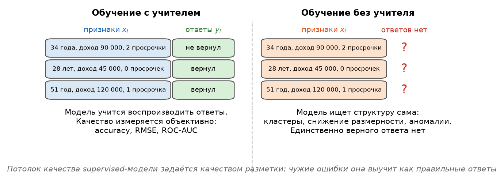
Слева три строки таблицы: голубым — признаки, зелёным — готовые ответы. Модель учится воспроизводить эти ответы, и качество измеряется объективно, сравнением предсказания с истиной. Справа те же строки, но колонки ответов нет — на её месте вопросительные знаки, и алгоритму остаётся искать структуру самому: кластеры, снижение размерности, аномалии. Единственно верного ответа там не существует. Слово «учитель» означает именно наличие зелёной колонки, а не человека, стоящего рядом с моделью. - С учителем: есть правильные ответы, модель учится их воспроизводить. Качество измеряется объективно — сравнением предсказаний с истиной (accuracy, RMSE и т. д.).
- Без учителя (unsupervised): ответов нет, модель ищет структуру сама — кластеризация, снижение размерности, поиск аномалий. Единственно верного ответа не существует, поэтому и оценка качества куда более условна.
- Промежуточные варианты: полуконтролируемое обучение (размечена малая часть данных), самообучение (self-supervised — метки конструируются из самих данных, как в языковых моделях, где ответ — следующее слово в тексте).
- Метки не бесплатны и не идеальны. Разметка стоит денег и времени, а разметчики ошибаются и расходятся между собой. Модель не может быть точнее разметки, на которой училась: она честно выучит и чужие ошибки.
- Метка должна быть доступна в момент предсказания. Если в обучающей таблице есть поле, которое заполняется уже после наступления события, модель на нём выучит «будущее» и в продакшене развалится (это утечка данных).
- Смещённая разметка даёт смещённую модель. Если размечены только одобренные заявки, модель ничего не знает о тех, кому отказали, — и её оценки на этой части клиентов будут необоснованными.
Чтобы такое обучение было возможным, нужно предварительно собрать, отсмотреть вручную и разметить обучающий датасет. Этим должен заниматься человек или группа людей — как раз тот самый условный "учитель".
В чём суть обучения с учителем?
Модель обучается на датасете, где каждый объект имеет размеченный ответ (метку). Задача — найти функцию $a: X \to Y$, которая по входным данным правильно предсказывает метки на новых, не виденных объектах.
Что такое обучающая выборка и что она содержит?
Набор пар $(x_i, y_i)$, где $x_i$ — признаковое описание объекта, $y_i$ — правильный ответ. Размечается вручную человеком-экспертом или "учителем".
Какие задачи решаются методами обучения с учителем?
Классификация (дискретные метки: спам/не спам, вид животного) и регрессия (непрерывные значения: цена квартиры, возраст по фото).
В чём главное ограничение обучения с учителем?
Необходимость размечать данные вручную — дорого, медленно, требует экспертизы. Качество модели прямо зависит от качества разметки.
Чем обучение с учителем отличается от обучения без учителя и от self-supervised?
С учителем есть готовые правильные ответы, и качество измеряется сравнением предсказаний с ними. Без учителя ответов нет, модель ищет структуру сама (кластеризация, снижение размерности), и объективной метрики правильности не существует. В self-supervised метки конструируются из самих данных — например, предсказание следующего слова в тексте, — что позволяет учиться на неразмеченных корпусах.
Почему модель не может быть точнее разметки, на которой обучалась?
Обучение сводится к воспроизведению меток: систематические ошибки разметчиков модель выучит как правильные ответы. Поэтому потолок качества задаётся согласованностью и корректностью разметки, и улучшать её часто выгоднее, чем усложнять модель.
-
Выборки
Выборка (dataset, датасет) — это подмножество данных, используемое в процессе обучения и оценки моделей машинного обучения. Обычно представляет собой таблицу, массив или структуру данных, содержащую входные характеристики (фичи) и соответствующие им выходные значения (метки, таргеты).
Если совсем простыми словами: выборка — это ваша таблица с данными. Строки — объекты (клиенты, письма, снимки), столбцы — признаки, и отдельный столбец — правильный ответ, который модель должна научиться предсказывать.
За всем машинным обучением стоит одна негласная гипотеза: обучающая и будущие данные приходят из одного и того же распределения.
Только при этом условии имеет смысл учиться на прошлом и применять выученное к будущему. Если предположение нарушается — распределение изменилось, — модель ломается, и никакая метрика на тесте об этом не предупредит.
Именно поэтому в продакшене отдельно следят за дрейфом данных: тестовая выборка проверяет модель на данных того же периода, а работать ей предстоит на данных, которых ещё не существует.
В машинном обучении принято делить данные на три типа выборок:
- Обучающая (train set) — используется для построения модели. Модель "учится" на этих данных находить закономерности.
- Валидационная (validation set) — нужна для настройки гиперпараметров модели и предотвращения переобучения. Модель не видит эти данные во время обучения, но оценивается на них в процессе подбора конфигурации.
- Тестовая (test set) — используется только один раз после финальной настройки модели для оценки её качества на "неизвестных" данных.
Представим задачу распознавания рукописных цифр. У вас есть набор изображений цифр от 0 до 9:
- 60 000 изображений идут в обучающую выборку
- 10 000 изображений в валидационную
- 10 000 изображений в тестовую
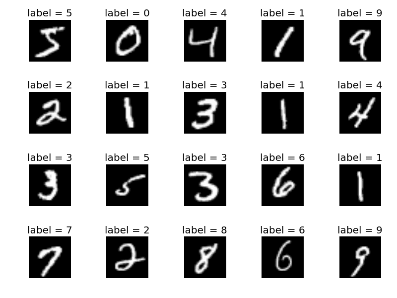
MNIST Модель сначала обучается на первых 60 000, в течение обучения подстроенная модель проверяется на валидационной выборке и только потом финальная модель тестируется на оставшихся 10 000.
При обучении модели на тренировочной выборке модель подстраивается под данные и пытается настроить свои параметры, а на валидационной выборке вычисляются метрики качества — то, как сильно модель ошибается на данных, которые не участвуют в настройке параметров модели. Далее, на тестовой выборке вычисляются финальные метрики качества, которые показывают, как модель будет работать на новых данных. На этом этапе проверяется обобщающая способность модели.
Тестовая выборка должна быть полностью изолирована от модели до финальной оценки. Если модель подгоняется под тестовую выборку — это считается нарушением чистоты эксперимента (data leakage).
- Разбиение до дедупликации. Дубликаты разъезжаются по train и test, модель встречает в тесте те же самые строки — метрика взлетает, польза нулевая.
- Случайное разбиение при временной зависимости. Модель учится на будущем и предсказывает прошлое. Оценка получается фантастической и полностью нереалистичной.
- Связанные объекты в разных частях. Несколько снимков одного пациента, заказов одного клиента, кадров из одного видео. Нужен групповой сплит.
- Слишком маленький тест. На 100 объектах метрика имеет разброс в несколько процентов, и сравнивать модели по ней бессмысленно.
- Многократное использование теста. Каждое решение, принятое по тестовой метрике, понемногу превращает её в валидационную.
На какие три части делят датасет и для чего каждая нужна?
Train — для обучения модели (подстройки параметров). Validation — для подбора гиперпараметров и контроля переобучения в процессе обучения. Test — финальная оценка качества, используется только один раз.
Что такое data leakage и почему это серьёзная проблема?
Утечка данных — когда информация из тестовой (или валидационной) выборки влияет на обучение модели. Результат: завышенные метрики на тесте, которые не отражают реальную обобщающую способность.
Почему нельзя использовать тестовую выборку для подбора гиперпараметров?
Многократный подбор по тест-сету приводит к тому, что модель "адаптируется" к нему. Тестовая выборка должна имитировать новые данные — использовать её для решений о модели означает смотреть в "будущее".
Что такое обобщающая способность модели?
Способность модели правильно работать на новых, не виденных данных. Оценивается на тестовой выборке. Высокое качество на train при низком на test — признак переобучения (overfitting).
Какое ключевое предположение лежит в основе разбиения на выборки?
Что обучающие и будущие данные приходят из одного распределения. Только тогда качество на тесте что-то говорит о качестве в продакшене. Если распределение меняется со временем (data drift), оценка на тесте перестаёт быть релевантной, и за этим следят отдельно уже после развёртывания.
Почему дубликаты нужно искать до разбиения на выборки?
Иначе копии одной и той же строки попадут и в train, и в test. Модель встретит в тесте объекты, которые буквально запомнила, метрика окажется завышенной, а реального качества на новых данных вы не узнаете.
Почему на маленькой тестовой выборке нельзя сравнивать модели?
Метрика на сотне объектов имеет разброс в несколько процентов просто из-за случайного состава выборки. Разница между моделями в 1–2% в такой ситуации неотличима от шума. Нужны либо больший тест, либо кросс-валидация с оценкой разброса по фолдам.
-
Машинное обучение — это область, которая занимается созданием алгоритмов, позволяющих компьютерам улучшать своё поведение на основе данных (опыта), без явного программирования.
Если совсем простыми словами: вместо того чтобы писать правила, мы показываем примеры. В обычном программировании человек формулирует «если сумма больше 100 000 и клиент новый — проверить вручную». В машинном обучении мы даём алгоритму 100 000 прошлых транзакций с пометками «мошенничество / нет», и правила он выводит сам.
Это самый практичный вопрос темы, и ответ на него не «всегда».
ML оправдан, когда правила существуют, но выписать их вручную невозможно:
- их слишком много (распознавание лиц — не описать словами, чем одно лицо отличается от другого);
- они постоянно меняются (спам, мошеннические схемы);
- они неочевидны даже эксперту (какие факторы предсказывают отток клиента).
ML не нужен, когда:
- правило известно и стабильно — «НДС 20% от суммы» пишется одной строкой кода и не требует обучения;
- данных мало или они не размечены;
- цена ошибки такова, что нужна гарантированная корректность, а не статистическая.
Ключевое отличие: обычная программа даёт гарантированно правильный ответ по заданному правилу, а модель — вероятно правильный, выведенный из данных. Модель всегда ошибается на какой-то доле объектов, и с этим приходится проектировать систему.
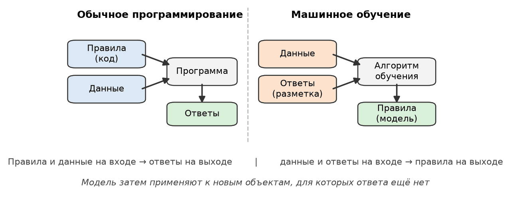
Разница между подходами — в том, что стоит на входе, а что получается на выходе. Слева человек пишет правила, программа применяет их к данным и выдаёт ответы. Справа на вход подаются данные вместе с уже известными ответами, а правила — то есть модель — получаются на выходе. Отсюда сразу видно, почему в машинном обучении нужна разметка: без колонки правильных ответов выводить правило попросту не из чего. Иными словами, мы хотим научить машину/компьютер на основании каких-то реальных данных научиться замечать причинно-следственные связи. В математике такие алгоритмы, решающие задачи из реального мира или дающие достаточно точные приближения к ним, называются моделями, или математическими моделями.
В дальнейшем все наши алгоритмы машинного обучения — будь то классические алгоритмы из раздела Classic ML, будь то глубокое обучение (DL) или любая другая области — все алгоритмы будем называть моделями или просто нейронками
Пусть заданы:
- Множество объектов $X$ (это может быть что угодно: например, множество всех пассажиров в автобусе. Каждый описывается какими-то свойствами — возраст, пол, вес, ...), а также
- Множество меток $Y$ (их еще часто называют ответами, или ground truth — GT, лейблами), и
- Неизвестная (истинная) зависимость $$y^*: X \to Y$$
Наша задача — найти такую модель $a: X \to Y$, которая по входным данным $X$ будет предсказывать ответы $Y$, то есть приближает $y^*$.
Две буквы здесь принципиально разные: $y^*$ — то, как устроен мир на самом деле (нам она недоступна, мы видим лишь её значения на размеченных объектах), $a$ — то, что мы построили по данным. Предсказание модели на объекте $x_i$ обозначают $\hat{y}_i = a(x_i)$: «крышка» всегда означает оценку величины, а не саму величину.
Например, мы хотим предсказать стоимость квартиры в центре Москвы на основании того, какая информация у нас имеется. Допустим, мы знаем
- количество комнат
- район
- уровень преступности в районе
- доступность метро
- благоустроенность
- наличие аптек/продовольственных магазинов
- и так далее
Вся эта информация составляет набор признаков (features), их мы и обозначаем за $X$. А наша модель — это некий алгоритм, который по $X$ будет предсказывать $Y$: $$a: X \to Y$$ Задача машинного обучения — настроить модель так, чтобы ошибка предсказаний была минимальна. Но об этом будем говорить ниже
Имеется обучающая выборка
$$\{(x_1, y_1), \ldots, (x_\ell, y_\ell)\}.$$
Требуется найти такой алгоритм
$$a: X \to Y,$$
который приближает истинную (неизвестную) зависимость $y^*$ на обучающей выборке $X$.
В пояснении выше сказано, что модель учится замечать причинно-следственные связи. Это удобная метафора, но она требует важной оговорки: модели находят корреляции, а не причины.
Классический пример: модель обнаруживает, что клиенты, которым звонил отдел удержания, чаще уходят. Означает ли это, что звонки вызывают отток? Нет — звонили как раз тем, кто уже собирался уйти. Причина и следствие поменялись местами, а корреляция сильная и модель ею воспользуется.
Практические следствия:
- Прогнозировать можно, вмешиваться — нельзя. Модель верно предскажет отток по факту звонка, но запрет звонков отток не снизит.
- Признаки-следствия таргета создают утечку. Они прекрасно работают на исторических данных и разваливаются в продакшене.
- Для вопросов «что будет, если мы сделаем X» нужны эксперименты (A/B-тесты) или методы причинного вывода, а не обычная предсказательная модель.
Каждый объект описывается признаками $f_1, \ldots, f_n$, отображающими $X$ в соответствующие множества $D_1, \ldots, D_n$. Признаки бывают:
- Бинарные: $D = \{0,1\}$
- Номинальные (категориальные): конечное множество без порядка
- Порядковые: конечное и упорядоченное множество
- Числовые: $D = \mathbb{R}$
Объекты часто представляются в виде матрицы объект-признак.
Задача Цель Классификация Предсказание класса объекта Регрессия Предсказание численного значения Ранжирование Упорядочивание объектов по релевантности Кластеризация Объединение похожих объектов без учителя Метод обучения Описание С учителем (supervised) Метки известны заранее. Без учителя (unsupervised) Метки неизвестны. Частично с учителем (semi-supervised) Часть объектов размечена. С подкреплением (reinforcement) Обучение через взаимодействие со средой. Онлайн-обучение Данные поступают последовательно, модель обновляется на лету. Активное обучение Алгоритм взаимодействует с оракулом, который размечает данные по запросу. В роли оракула может выступать человек-эксперт, размечающий документы, изображения или видео. Разметка может требовать времени и затрат — например, химический анализ вещества.
- Предсказание месторождений: признаки — геологические данные; цель — выделение районов с высокой вероятностью наличия ископаемых.
- Оценка кредитоспособности: признаки — анкета заёмщика и банковская информация; метка — надёжен / ненадёжен.
- Медицинская диагностика: признаки — симптомы, анализы, анамнез; цель — постановка диагноза, прогноз выздоровления, выбор лечения.
- Классическая задача ирисов (Фишер 1936): классификация цветов по признакам (длина лепестков, чашелистиков и т.д.).
Что такое машинное обучение и что значит "обучение на данных"?
ML — создание алгоритмов, которые улучшают своё поведение на основе данных без явного программирования. "Обучение" — настройка параметров модели $a: X \to Y$ так, чтобы ошибка на обучающей выборке $\{(x_i, y_i)\}$ была минимальна.
Какие типы задач существуют в ML?
Классификация (предсказание класса), регрессия (числовое значение), ранжирование (порядок объектов по релевантности), кластеризация (разбиение на группы без меток). В глубоком обучении и разных доменах (CV, NLP) есть более сложные задачи, но пока мы их рассматривать не будем
Чем обучение с учителем отличается от обучения без учителя?
В supervised learning каждый объект имеет метку $y_i$ — модель учится предсказывать её. В unsupervised learning меток нет — алгоритм ищет структуру в данных самостоятельно (кластеризация, понижение размерности).
Что такое признаки объекта и как они классифицируются?
Признаки — числовые характеристики объекта, описывающие его свойства. Бывают: бинарные $\{0,1\}$, номинальные (категориальные без порядка), порядковые (с упорядочением), числовые $\mathbb{R}$.
Когда задачу стоит решать машинным обучением, а когда обычным кодом?
ML оправдан, когда правила существуют, но выписать их вручную невозможно: их слишком много (распознавание лиц), они меняются (спам, мошенничество) или неочевидны даже эксперту. Обычный код лучше, когда правило известно и стабильно, данных мало или требуется гарантированная корректность, а не статистическая.
Почему говорят, что модели находят корреляции, а не причины?
Модель использует любую статистическую связь между признаками и таргетом независимо от её направления. Если отделу удержания звонили тем, кто уже собирался уйти, модель свяжет звонок с оттоком — но запрет звонков отток не снизит. Для вопросов «что будет, если сделать X» нужны эксперименты или методы причинного вывода.
Какие бывают типы признаков и почему это различие важно?
Бинарные $\{0,1\}$, номинальные (категории без порядка), порядковые (категории с порядком) и числовые. Различие определяет предобработку: номинальные требуют one-hot или target encoding, порядковые можно кодировать числами, сохраняя порядок, числовые — масштабировать для моделей, чувствительных к расстояниям.
-
Классификация — это задача машинного обучения, в которой требуется отнести объект к одному из заранее известных классов.
Формально: нужно построить функцию $a: X \to Y$, где множество ответов $Y$ конечно. Ключевые слова здесь — «заранее известных» и «конечно»: список классов фиксирован до обучения, и придумать новый класс модель не может.
Если совсем простыми словами: это раскладывание по подписанным коробкам. Коробки готовы заранее — «спам» и «не спам», «кошка», «собака», «птица», — и каждый новый объект нужно положить в одну из них. Задача модели не в том, чтобы придумать коробку, а в том, чтобы выбрать правильную.
Варианты ответов:
- Бинарная классификация: $Y = \{-1, +1\}$ — два класса. Либо можно обозначить за $Y = \{0, 1\}$ (негативный и положительный классы). В зависимости от контекста бывает удобно обозначать по-разному
- Многоклассовая классификация: $Y = \{1, \ldots, M\}$ — несколько непересекающихся классов.
- Мультиклассовая (многозначная): один объект может принадлежать сразу нескольким классам.
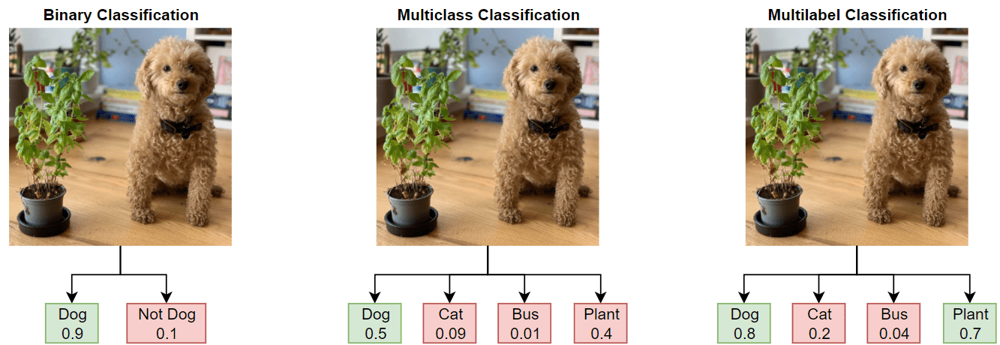
Сравнение бинарной, много- и мультиклассовой классификации. В бинарном случае каждый объект относится к одному из двух классов, в многоклассовом — к одному из нескольких классов, в мультиклассовом — к нескольким классам одновременно. Цифрами обозначены вероятности отнесения объекта к классу. Эти задачи постоянно путают, хотя различие простое:
- Классификация — обучение с учителем: классы известны заранее и у обучающих объектов есть правильные метки. Мы учим модель воспроизводить уже существующее деление.
- Кластеризация — обучение без учителя: никаких меток нет, и алгоритм сам находит группы. Он не знает, что они означают, и не может назвать их «кошками» и «собаками» — только «группа 1» и «группа 2».
Проверочный вопрос: есть ли у вас размеченные примеры? Если да — классификация, если нет — кластеризация.
Для каждого объекта $x$ необходимо предсказать метку $y$ из конечного множества классов. Модель строит разделяющую поверхность (decision boundary) в пространстве признаков: объекты по одну сторону получают одну метку, по другую — другую.
Ключевое отличие от регрессии: ответ дискретен (принадлежность к классу), а не непрерывен. Поэтому функции потерь и метрики качества принципиально отличаются: вместо MSE используют кросс-энтропию, вместо RMSE — accuracy, F1, AUC.
- Определение, является ли письмо спамом.
- Классификация изображений на кошек и собак.
- Распознавание рукописных цифр (MNIST).
Важная тонкость, которую пропускают почти все новички: большинство классификаторов выдаёт не класс, а число от 0 до 1 — оценку вероятности принадлежности к положительному классу.
Метка получается уже потом, сравнением с порогом:
1, если p > 0.5, иначе 0. Порог 0.5 стоит по умолчанию, но он не является частью модели и почти никогда не оптимален: в антифроде разумно бить тревогу уже при $p > 0.1$, а при рассылке дорогого предложения — только при $p > 0.8$.Отсюда практический вывод: менять порог можно без переобучения модели. Это самый дешёвый способ подстроить готовую модель под изменившиеся требования бизнеса.
- Считать, что классов ровно столько, сколько в обучении. В продакшене приходят объекты, не относящиеся ни к одному известному классу. Модель всё равно выдаст один из них — и уверенно. Для таких случаев добавляют класс «прочее» или отдельную проверку на новизну.
- Путать многоклассовую и multilabel. В первом случае вероятности всех классов дают в сумме единицу (softmax), во втором каждый класс оценивается независимо (sigmoid на каждый выход). Это разные функции потерь и разные метрики.
- Игнорировать дисбаланс. При 1% положительных объектов модель, всегда отвечающая «0», получит 99% accuracy. Метрику нужно выбирать до обучения, исходя из цены ошибок.
- Насильно превращать регрессию в классификацию. Разбиение непрерывного таргета на «дёшево / средне / дорого» теряет информацию и создаёт искусственные границы: объекты по разные стороны порога почти неотличимы, а модель обязана их развести.
- Метод k ближайших соседей (k-NN)
- Логистическая регрессия
- Деревья решений
- Ансамбли: Случайный лес, Градиентный бустинг, XGBoost, LightGBM, CatBoost
- Наивный байесовский классификатор
- Нейронные сети
Что такое классификация и как она отличается от регрессии?
Классификация предсказывает дискретную метку из конечного множества классов. Регрессия — непрерывное значение. В классификации используются кросс-энтропия как функция потерь и accuracy/F1/AUC как метрики качества.
Чем отличается бинарная, многоклассовая и мультиклассовая классификация?
Бинарная: $Y = \{0, 1\}$ (два класса). Многоклассовая: $Y = \{1, \ldots, M\}$ (один класс из нескольких). Мультиклассовая (multilabel): объект может принадлежать нескольким классам одновременно.
Что такое разделяющая поверхность (decision boundary)?
Граница в пространстве признаков, по одну сторону которой объекты относятся к одному классу, по другую — к другому. Сложность модели определяет форму этой границы: линейная регрессия строит гиперплоскость, нейронные сети — произвольную нелинейную поверхность.
Назовите основные алгоритмы классификации.
k-NN (ближайшие соседи), логистическая регрессия, деревья решений, случайный лес, градиентный бустинг (XGBoost, LightGBM, CatBoost), наивный байес, SVM, нейронные сети.
Чем классификация отличается от кластеризации?
Классификация — обучение с учителем: классы известны заранее и у обучающих объектов есть метки. Кластеризация — обучение без учителя: меток нет, алгоритм сам находит группы и не знает, что они означают. Проверочный вопрос — есть ли размеченные примеры.
Что на самом деле выдаёт классификатор и что такое порог?
Большинство моделей выдаёт оценку вероятности принадлежности к положительному классу — число от 0 до 1. Метка получается сравнением с порогом, по умолчанию 0.5. Порог не является частью модели, поэтому его можно менять без переобучения, подстраивая баланс precision и recall под цену ошибок.
Чем многоклассовая классификация отличается от multilabel по устройству модели?
В многоклассовой задаче вероятности классов нормируются softmax и дают в сумме единицу — объект принадлежит ровно одному классу. В multilabel каждый класс оценивается независимо сигмоидой, суммы в единицу нет, и объект может относиться сразу к нескольким классам. Это разные функции потерь и разные метрики.
-
Регрессия — это задача предсказания численного (непрерывного) значения на основе набора признаков объекта. Формально, выходное пространство — $Y = \mathbb{R}$ или $Y = \mathbb{R}^m$.
Если совсем простыми словами: ответом является число, а не название коробки. В классификации мы выбираем из готового списка («спам» / «не спам»), а здесь называем величину — 4 350 000 рублей, 23.7 градуса, 148 заказов. Список возможных ответов бесконечен, и именно это меняет всё остальное: функции потерь, метрики и способ оценивать ошибку.
Из непрерывности ответа следуют три практических отличия:
- Ошибка имеет величину. В классификации ответ либо верен, либо нет. В регрессии промах на 100 рублей и промах на миллион — принципиально разные события, и функция потерь обязана это различать.
- Точное попадание невозможно. Вероятность угадать цену до копейки равна нулю, поэтому «accuracy» здесь не имеет смысла — измеряют размер отклонения (MAE, RMSE).
- Ответ имеет единицы измерения. Ошибка в 5000 рублей — это много или мало? Зависит от того, стоит квартира 3 млн или 300 млн. Отсюда метрики в процентах (MAPE) и метрики относительно baseline ($R^2$).
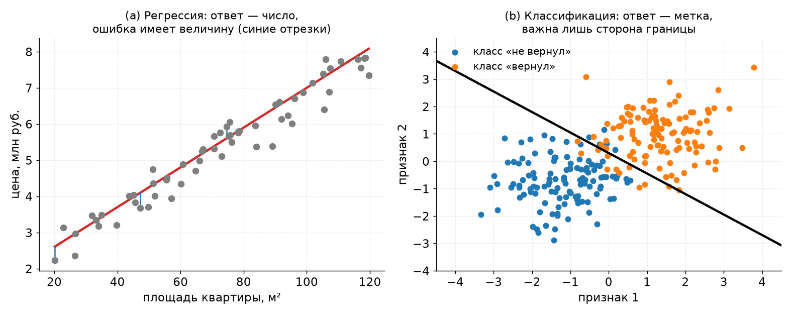
Слева (a) регрессия: ответ — точка на непрерывной шкале, а у ошибки есть величина, показанная синими вертикальными отрезками от точки до прямой. Промах на 0.2 млн и промах на 1 млн — принципиально разные события, и функция потерь обязана их различать. Справа (b) классификация: ответ — одна из двух меток, объект либо по нужную сторону чёрной границы, либо нет. Величины ошибки здесь просто не существует, поэтому и метрики устроены совершенно иначе. Цель регрессии — построить функцию $a(x)$, которая аппроксимирует истинную зависимость между входами и выходами, минимизируя ошибку предсказания.
Чтобы дальше не путаться, зафиксируем обозначения:
- $N$ — число объектов в выборке;
- $x_i$ — признаки $i$-го объекта, $i = 1, \ldots, N$;
- $y_i$ — истинное значение целевой переменной для этого объекта (то, что записано в данных);
- $a$ — сама модель, то есть функция, которую мы построили;
- $\hat{y}_i$ (читается «игрек с крышкой», «игрек-хэт») — предсказанное значение, которое модель выдаёт на объекте $x_i$.
Последние два связаны равенством $\hat{y}_i = a(x_i)$: это не два разных понятия, а два способа записать одно и то же число. Запись $a(x_i)$ подчёркивает, что предсказание — результат работы модели, запись $\hat{y}_i$ короче и удобна в формулах. Поэтому среднеквадратичную ошибку пишут в привычном виде
$$MSE = \frac{1}{N}\sum_{i=1}^{N}\left(y_i - \hat{y}_i\right)^2 = \frac{1}{N}\sum_{i=1}^{N}\left(y_i - a(x_i)\right)^2$$
Крышка над буквой в математике вообще означает «оценка величины, а не сама величина»: $\hat{y}$ — оценка $y$, полученная моделью.
Единой нотации в машинном обучении нет, и в следующих параграфах (а тем более в учебниках и статьях) вы встретите те же величины в другой записи:
- размер выборки — $N$, $n$, $m$ или $\ell$;
- предсказание модели — $\hat{y}_i$, $a(x_i)$ или просто $a_i$;
- истинное значение — $y_i$ или $y(x_i)$.
Это не разные понятия, а разные буквы для одних и тех же вещей. Полезная привычка: в каждой новой формуле первым делом находить, что здесь истинное значение, что — предсказание, и по чему идёт суммирование.
Регрессия используется, когда необходимо предсказать значение, например: цену, скорость, температуру, количество продаж и т.д.
Полезное правило для проверки: если между двумя возможными ответами есть осмысленная середина, перед вами регрессия. Между 100 и 200 рублями лежит 150 — это регрессия. Между «кошкой» и «собакой» ничего не лежит — это классификация.
Граничный случай — упорядоченные категории («плохо / нормально / отлично», оценка от 1 до 5). Формально это классы, но у них есть порядок, и ошибиться на два балла хуже, чем на один. Такие задачи решают либо порядковой регрессией, либо обычной регрессией с последующим округлением.
- Превращать регрессию в классификацию. Разбить цену на «дёшево / средне / дорого» кажется удобным, но объекты по разные стороны границы почти неотличимы, а модель обязана их развести. Информация о величине теряется безвозвратно.
- Игнорировать асимметрию ошибок. MSE штрафует недооценку и переоценку одинаково, хотя в прогнозе спроса это совершенно разные по цене события. Нужна асимметричная функция потерь (pinball loss).
- Забывать про диапазон ответа. Модель может предсказать отрицательную цену или отрицательное число заказов. Помогает логарифмирование таргета (с обратным преобразованием) или модели, работающие в нужном диапазоне.
- Оценивать качество только средним. MAE скрывает хвосты: две модели с одинаковой MAE могут вести себя совершенно по-разному на худших процентах объектов.
- Предсказание стоимости квартиры по её параметрам.
- Прогноз прибыли магазина в следующем месяце.
- Оценка возраста человека по фото.
- Линейная регрессия
- Полиномиальная регрессия
- Нейронные сети
Что такое регрессия и чем она отличается от классификации?
Регрессия предсказывает непрерывное числовое значение ($Y \subseteq \mathbb{R}$). Классификация предсказывает дискретный класс. Ключевое различие: в регрессии ответ непрерывен, поэтому используют MSE/MAE вместо cross-entropy.
Приведите примеры задач регрессии в ML.
Предсказание цены квартиры, прогноз продаж, оценка возраста по фото, предсказание температуры. Любая задача, где ответ — число.
Что значит «аппроксимировать зависимость» в регрессии?
Найти функцию $a(x)$, которая по признакам объекта выдаёт число, максимально близкое к истинному значению $y$. Предсказание модели обозначают $\hat{y}_i = a(x_i)$, истинное значение — $y_i$. «Близость» измеряется функцией потерь — например, MSE: $\frac{1}{n}\sum_{i=1}^{n}(y_i - \hat{y}_i)^2$.
Какие основные методы решения задачи регрессии?
Линейная регрессия (линейная зависимость), полиномиальная регрессия (нелинейная через полиномы), деревья решений и ансамбли (нелинейные, без предположений о форме зависимости), нейронные сети (универсальные аппроксиматоры).
Как быстро понять, регрессия перед вами или классификация?
Проверить, есть ли между двумя возможными ответами осмысленная середина. Между 100 и 200 рублями лежит 150 — регрессия. Между «кошкой» и «собакой» ничего не лежит — классификация. Отдельный случай — упорядоченные категории (оценка от 1 до 5), где ошибка на два балла хуже, чем на один.
Почему в регрессии не используют accuracy?
Ответ непрерывен, поэтому вероятность точного попадания равна нулю — доля «правильных» ответов всегда была бы нулевой. Измеряют не факт совпадения, а величину отклонения: MAE, RMSE, квантили ошибки.
Почему разбиение непрерывного таргета на категории — плохая идея?
Границы категорий искусственны: объекты по разные стороны порога почти неотличимы, но модель обязана их разделить, а внутри одной категории разница в величине полностью теряется. Информация о том, насколько объект дорогой, исчезает, и качество обычно падает.
Чем $\hat{y}_i$ отличается от $a(x_i)$?
Ничем — это одно и то же число, записанное двумя способами: $\hat{y}_i = a(x_i)$. Через $a$ обозначают саму модель, а «крышка» над $y$ означает «оценка величины, а не сама величина»: $\hat{y}_i$ — предсказание модели, $y_i$ — истинное значение из данных. Именно их разность и стоит внутри MSE.
-
Функция потерь (loss function) — это отображение результата работы алгоритма в число, показывающее "стоимость" ошибки, которую он допустил на одном объекте. Зависит от предсказания $a(x)$ и истинной метки $y(x)$.
Если совсем простыми словами: это способ объяснить модели, что считать ошибкой. Модель не понимает слов «предсказывай хорошо» — ей нужно число, которое она будет уменьшать. Функция потерь и есть это число, а всё обучение сводится к его минимизации.
Ключевая мысль, которую стоит усвоить сразу: модель оптимизирует ровно то, что вы записали в функции потерь, а не то, что вы имели в виду.
Пример: прогноз спроса на складе. Взяли MSE — привычно и удобно. Но MSE симметрична: недозаказ на 10 единиц штрафуется так же, как перезаказ на 10. В реальности это совершенно разные события: перезаказ — это замороженные деньги и место на складе, а недозаказ — упущенные продажи и ушедший к конкуренту клиент.
Модель, обученная на MSE, будет честно ошибаться «поровну в обе стороны» — потому что именно так вы её и попросили. Чтобы получить другое поведение, нужна асимметричная функция потерь (например, pinball loss), а не более хитрая модель.
Их регулярно путают, хотя роли у них разные:
- Функция потерь — то, что минимизируется при обучении. Она обязана быть удобной для оптимизации: гладкой, дифференцируемой, желательно выпуклой.
- Метрика — то, по чему оценивают результат и принимают решения. Она должна быть понятной человеку и отражать бизнес-смысл.
Часто они не совпадают, и это нормально: нельзя обучать модель напрямую на accuracy или $F_1$ — эти функции кусочно-постоянные, их градиент равен нулю почти всюду, и градиентному спуску не за что зацепиться. Поэтому обучают на log loss, а смотрят на $F_1$.
Тип функции Формула Пояснение 0-1 функция $L(a,x) = [a(x) \ne y(x)]$ Уже не применяется, для классификации. Равна $1$, если $a(x) \ne y(x)$ (предсказание не совпадает с истинным значением) и $0$, если $a(x) = y(x)$. Квадратичная (MSE) $L(a,x) = (a(x) - y(x))^2$ Используется для регрессии. $a(x), y(x) \in \mathbb{R}$. Смотрим на квадрат разницы между предсказанием и истинным значением. Log loss Пусть $a_i = a(x_i; w)$ — ответ алгоритма с параметрами $w$ на объекте $x_i$ (вероятность отнесения к классу 1), $y_i$ — истинное значение, тогда:
$$L(a_i,y_i) = -[y_i \log a_i + (1 - y_i) \log(1 - a_i)]$$Используется для бинарной классификации, популярная Cross-entropy loss Случай многоклассовой классификации, $M$ классов. Пусть $a_i = a(x_i; w)$ — ответ алгоритма с параметрами $w$ на объекте $x_i$ (вероятности отнесения к классу $k$, $k\in M$ - то есть это некий класс $k$ из множества классов $M$), $y_i$ — истинное значение, тогда:
$$L(a_i,y_i) = -\sum_{k=1}^M y_i \log a_i$$Используется для многоклассовой классификации, популярная Это как раз пример из предыдущего блока. Доля неверных ответов — идеально понятная метрика, но безнадёжная функция потерь:
- она кусочно-постоянна: маленькое изменение весов почти никогда не меняет метку, поэтому потери не меняются вовсе;
- её градиент равен нулю везде, где он существует, — оптимизировать нечего;
- она не различает уверенную ошибку и ошибку «на волосок»: предсказания 0.51 и 0.99 при истинном классе 0 штрафуются одинаково.
Поэтому её заменяют гладкими суррогатами — log loss, hinge loss (в SVM), экспоненциальной потерей (в AdaBoost). Все они являются верхними оценками 0-1 потери: минимизируя суррогат, мы прижимаем к нулю и долю ошибок, но уже дифференцируемым способом.
Все потери классификации — функции от margin $M = y\cdot f(x)$: при $M>0$ ответ верный, при $M<0$ ошибочный. 0-1 loss даёт единицу за любую ошибку и не имеет градиента; hinge начинает штрафовать уже при $M<1$, требуя зазор; log-loss и exponential гладкие, причём exp растёт быстрее всех и сильнее всего чувствителен к выбросам. Эмпирический риск — средняя ошибка алгоритма на обучающей выборке:
$$Q(a, X_m) = \frac{1}{m} \sum_{x \in X} L(a, x),$$
где $X_m$ — обучающая выборка, $m$ — её размер.
Основная идея — выбрать такой алгоритм $a^*$, который минимизирует среднюю ошибку на обучающей выборке:
$$a^* = \arg\min_{a \in \mathcal{A}} Q(a, X_m)$$
Это простой и универсальный подход, часто сводящийся к задаче численной оптимизации. Однако он может приводить к переобучению — ситуациям, когда алгоритм слишком точно подстраивается под обучающие данные и теряет обобщающую способность.
Для задачи регрессии может использоваться квадратичная функция потерь,
$$L(a,x) = (a(x) - y(x))^2,$$
и минимизация эмпирического риска будет соответствовать методу наименьших квадратов:
$$a^* = \arg\min_{a \in \mathcal{A}} \underbrace{\frac{1}{m} \sum_{x \in X_m} \underbrace{(a(x) - y(x))^2}_{L(a,x)}}_{Q(a, X_m)}.$$
Эмпирический риск считается по конечной обучающей выборке, а хочется-то минимизировать ошибку на всех будущих данных (её называют истинным риском). Между ними и лежит вся сложность машинного обучения:
- обучающая выборка содержит шум, и модель, доведённая до нулевого эмпирического риска, обычно выучивает в том числе и его;
- чем богаче класс моделей $\mathcal{A}$, из которого мы выбираем, тем меньше достижимый эмпирический риск — и тем больше разрыв с истинным.
Отсюда все практические приёмы: регуляризация (штраф за сложность прямо в функции потерь), ранняя остановка, ограничение класса моделей и честная проверка на отложенных данных. Формально малый эмпирический риск — необходимое, но не достаточное условие хорошей модели.
Что такое функция потерь и зачем она нужна?
Функция потерь измеряет "цену" ошибки модели на одном объекте — насколько предсказание $a(x)$ расходится с истинным $y(x)$. Выбор функции потерь определяет, что именно оптимизирует модель.
Чем log loss отличается от cross-entropy?
Log loss — это cross-entropy для бинарной классификации (2 класса): $-[y\log a + (1-y)\log(1-a)]$. Cross-entropy — обобщение на $M$ классов: $-\sum_k y_k \log a_k$. При $M=2$ они совпадают.
Что такое эмпирический риск и в чём суть метода его минимизации?
Эмпирический риск — усреднение потерь по обучающей выборке: $Q(a, X_m) = \frac{1}{m}\sum L(a, x_i)$. Обучение — поиск алгоритма $a^*$ (какого-то оптимального алгоритма), минимизирующего $Q$.
Почему минимизация эмпирического риска может приводить к переобучению?
Алгоритм подстраивается под шум в обучающих данных, добиваясь минимальной ошибки на train, но теряет обобщающую способность на новых данных. Решение — регуляризация, кросс-валидация, ранняя остановка и другие методы, которые мы будем далее рассматривать (в том числе в Deep Learning).
Чем функция потерь отличается от метрики?
Функция потерь минимизируется в процессе обучения, поэтому обязана быть гладкой и дифференцируемой. Метрика оценивает результат и должна быть понятна человеку и бизнесу. Они часто не совпадают: обучают на log loss, а смотрят на $F_1$ или ROC-AUC.
Почему нельзя обучать модель напрямую на accuracy или 0-1 функции потерь?
Они кусочно-постоянны: малое изменение весов почти никогда не меняет предсказанную метку, поэтому значение потерь не меняется, а градиент равен нулю почти всюду. Оптимизировать нечего. Вместо этого используют гладкие суррогаты — log loss, hinge loss, экспоненциальную потерю, — которые являются верхними оценками доли ошибок.
Чем эмпирический риск отличается от истинного?
Эмпирический риск — средняя ошибка на конечной обучающей выборке, истинный — ожидаемая ошибка на всём распределении данных, включая будущие объекты. Минимизируя первый, мы лишь приближаем второй; разрыв между ними тем больше, чем богаче класс моделей и чем больше шума в данных.
-
Пусть $x_i$ — входные данные, $y_i$ — целевые значения, $w$ (веса) и $b$ (смещение) — параметры модели. Модель линейной регрессии:
$$\hat{y}_i = w x_i + b,$$
Пусть предсказание модели — $\hat{y}_i$.
Для обучения модели линейной регрессии мы можем использовать градиентный спуск по функции потерь MSE:
$$L(\hat{y}_i, y_i) = \frac{1}{N} \sum_{i=1}^N (y_i - \hat{y}_i)^2,$$
где $N$ — количество объектов в выборке.
Разберём формулу словами: модель умножает признак на вес и прибавляет смещение — это уравнение прямой, где $w$ отвечает за наклон, а $b$ за высоту. Обучение сводится к подбору такой пары $(w, b)$, при которой прямая проходит как можно ближе ко всем точкам сразу, а «ближе» измеряется средним квадратом вертикальных отклонений.
Логичный вопрос: почему бы просто не сложить отклонения $y_i - \hat{y}_i$?
- Знаки бы сократились. Промах на $+10$ и промах на $-10$ дали бы в сумме ноль, и никудышная модель выглядела бы идеальной. Квадрат убирает знак.
- Модуль тоже убирает знак, но он не гладкий. У $|x|$ в нуле нет производной, что мешает градиентным методам. Квадрат дифференцируем везде.
- Есть аналитическое решение. Именно из квадратичности следует, что оптимальные веса находятся по формуле $w = (X^\top X)^{-1} X^\top y$ — без всякой итеративной оптимизации.
- Крупные промахи наказываются сильнее. Ошибка в 10 единиц даёт вклад 100, а две ошибки по 5 — только 50. Модель предпочтёт много мелких ошибок одной большой.
Последнее свойство — палка о двух концах: MSE очень чувствительна к выбросам. Один аномальный объект способен утянуть всю прямую. Когда это мешает, берут MAE (устойчива, но не гладкая в нуле) или Huber loss (квадратична вблизи нуля и линейна на хвостах).
В данном случае мы используем MSE, но можно использовать и другие функции потерь.
Рассмотрим пример решения задачи регрессии. Наши данные будут линейными с небольшим шумом:
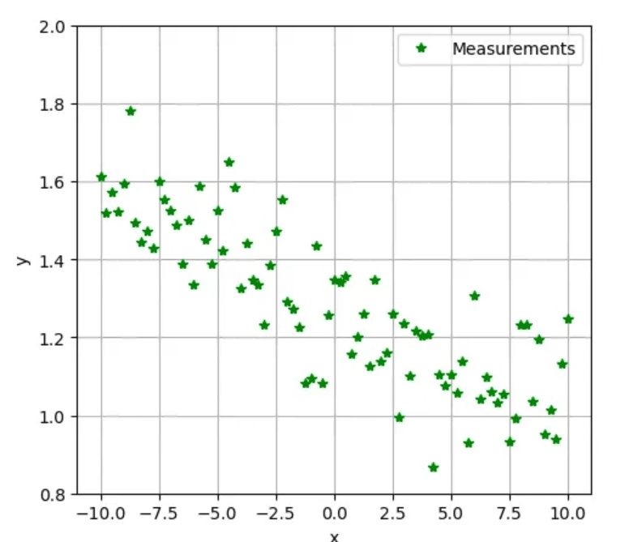
Синтетические данные для регрессии 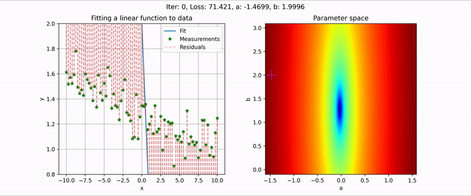
Решение линейной регрессии с помощью градиентного спуска с функцией потерь MSE. Параметры модели итеративно обновляются, пока не будет достигнут минимум функции потерь. Справа мы видим график функции потерь, которая представлена в виде карты уровня. Пространство параметров — двумерное ($\mathbb{R}^2$), поскольку у нас всего 2 параметра ($w$ и $b$). Справа на гифке выше указан график, который представляет из себя карту уровня функции потерь.
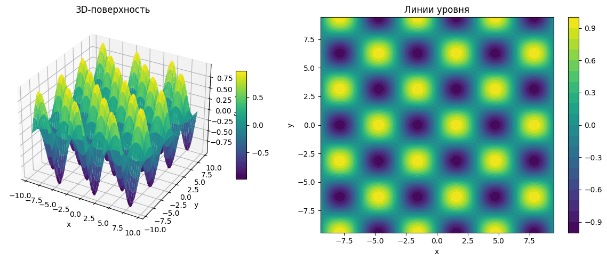
Слева — график функции $\cos(x)\sin(x)$, справа — график её поверхности уровня. Известный всем пример использования карт уровня в повседневной жизни — географические карты: например, высот гор, глубины океанов и т.д. Рассмотрим пример решения задачи регрессии с помощью кубической регрессии. Возьмем те же данные, но теперь вместо линейной регрессии будет использоваться кубическая регрессия:
$$\hat{y}_i = w_1 x_i^3 + w_2 x_i^2 + w_3 x_i + b$$
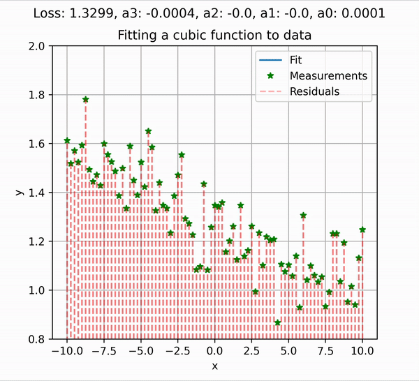
Решение кубической (полиномиальной) регрессии с помощью градиентного спуска с функцией потерь MSE. Параметры модели итеративно обновляются, пока не будет достигнут минимум функции потерь. Пространство параметров — четырёхмерное ($\mathbb{R}^4$), поскольку у нас 4 параметра $(w_1, w_2, w_3, b)$. Распространённое заблуждение: раз добавили $x^2$ и $x^3$, модель перестала быть линейной. На самом деле нет.
Линейность здесь понимается по параметрам, а не по признакам. Модель $\hat{y} = w_1 x^3 + w_2 x^2 + w_3 x + b$ линейна относительно $w_1, w_2, w_3, b$ — каждый вес входит в первой степени. С точки зрения алгоритма это обычная линейная регрессия, которой на вход подали три признака: $x$, $x^2$ и $x^3$.
Практическое следствие: тот же приём работает с любыми преобразованиями — логарифмами, произведениями признаков ($x_1 \cdot x_2$), синусами. Линейная модель прекрасно ловит нелинейные зависимости, если нужные признаки для неё сконструированы. Именно этим долгие годы и занимался feature engineering.
Степень полинома — прямой регулятор сложности модели, и очень острый:
- Степень 1 — прямая, может недообучиться на изогнутых данных.
- Степень 3–4 — обычно достаточно для плавных зависимостей.
- Степень 15+ — кривая проходит буквально через каждую точку обучающей выборки и дико осциллирует между ними. На train ошибка почти нулевая, на новых данных — катастрофа.
Дополнительная беда высоких степеней — разномасштабность признаков: если $x \approx 100$, то $x^3 \approx 10^6$. Без масштабирования оптимизация становится плохо обусловленной, а веса при старших степенях — огромными. Поэтому полиномиальные признаки почти всегда идут в связке со стандартизацией и регуляризацией.
Запишите формулу линейной регрессии и назовите её параметры.
$\hat{y}_i = w x_i + b$, где $w$ — вес (slope), $b$ — смещение (bias/intercept). В многомерном случае: $\hat{y}_i = \mathbf{w}^\top \mathbf{x}_i + b$.
Что такое MSE и почему её используют в регрессии?
$\text{MSE} = \frac{1}{N}\sum(y_i - \hat{y}_i)^2$ — среднеквадратичная ошибка. Дифференцируема, штрафует крупные ошибки сильнее (квадрат). Это позволяет применять градиентный спуск для оптимизации.
Что такое карта уровня функции потерь и что она показывает?
Проекция поверхности функции потерь на плоскость параметров. Каждая линия — множество параметров с одинаковым значением loss. Минимум — точка, в которую "сходится" градиентный спуск.
Чем полиномиальная регрессия отличается от линейной?
Добавляет степени признаков ($x^2$, $x^3$...) как новые признаки, оставаясь линейной по параметрам ($w_1, w_2, ...$). Аппроксимирует нелинейные зависимости, но увеличивает риск переобучения при высоких степенях.
Почему в MSE ошибки возводят в квадрат, а не берут модуль или сумму?
Простая сумма отклонений обнулилась бы из-за компенсации знаков. Модуль знак убирает, но не дифференцируем в нуле, что мешает градиентным методам. Квадрат гладкий везде, даёт аналитическое решение $w=(X^\top X)^{-1}X^\top y$ и сильнее штрафует крупные промахи. Обратная сторона — чувствительность к выбросам.
Почему полиномиальная регрессия считается линейной моделью?
Линейность понимается относительно параметров, а не признаков. В $\hat{y}=w_1x^3+w_2x^2+w_3x+b$ каждый вес входит в первой степени, поэтому с точки зрения алгоритма это обычная линейная регрессия, которой подали три признака: $x$, $x^2$, $x^3$.
Чем опасны полиномы высокой степени?
Кривая проходит через все обучающие точки и сильно осциллирует между ними — классическое переобучение. Кроме того, признаки становятся разномасштабными ($x \approx 100$ даёт $x^3 \approx 10^6$), оптимизация плохо обусловлена, а веса при старших степенях огромны. Нужны стандартизация и регуляризация.
-
Функции потерь классификации
Часто используется в задачах бинарной и многоклассовой классификации. Эта функция измеряет расхождение между фактическими и предсказанными вероятностями классов:
$$L = -\sum_{i=1}^n \textcolor{red}{y_i \log(p_i)}$$
где $y_i$ — истинное значение, $p_i$ — предсказанная вероятность класса $i$, $n$ — количество классов.
Если совсем простыми словами: штраф равен минус логарифму вероятности, которую модель дала правильному ответу. Метки $y_i$ — это one-hot вектор, в нём только одна единица, поэтому вся сумма сводится к одному слагаемому: $-\log(p_{\text{правильного класса}})$. Остальные классы в формуле умножаются на ноль и не участвуют.
Модель предсказывает вероятность правильного класса, и мы смотрим на штраф:
$p$ (вероятность правильного класса) $-\log p$ 0.99 0.01 0.9 0.11 0.5 0.69 0.1 2.30 0.01 4.61 0.001 6.91 Логарифм создаёт несимметричный стимул: за уверенный правильный ответ награда почти нулевая (0.99 против 0.9 — разница всего 0.1), а вот за уверенный неправильный штраф растёт неограниченно. Модели невыгодно кричать «я уверена на 99.9%», если она не права: ошибка обойдётся в 7 единиц лосса против 0.69 за честное «не знаю, 50 на 50».
Именно поэтому кросс-энтропия учит модель калиброванным вероятностям, а не просто угадыванию метки: врать уверенно математически дорого.
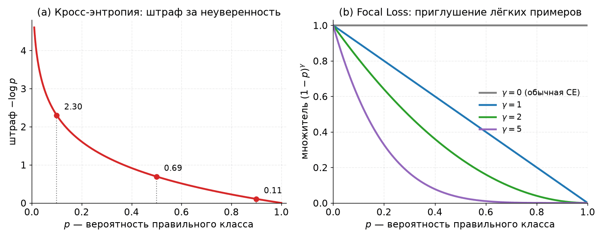
Слева (a) — штраф кросс-энтропии $-\log p$ в зависимости от вероятности, которую модель дала правильному классу: 0.11 при $p = 0.9$, 0.69 при $p = 0.5$, 2.30 при $p = 0.1$, и дальше он растёт неограниченно. Справа (b) — множитель Focal Loss $(1-p)^{\gamma}$: серая горизонталь $\gamma = 0$ это обычная кросс-энтропия без изменений, а при $\gamma = 2$ (зелёная) лёгкий пример с $p = 0.9$ получает множитель 0.01, то есть его вклад в градиент падает в сто раз. Обе оси линейные. Аналогично кросс-энтропии, используется для оценки вероятностей предсказанных классов и часто применяется в задачах бинарной классификации. Это частный случай кросс-энтропии, когда количество классов равно 2:
$$L = -\sum_{i=1}^2 \textcolor{red}{y_i \log(p_i)} = -[y \log(p) + (1 - y) \log(1 - p)]$$
где $y$ — истинное значение, $p$ — предсказанная вероятность класса $1$, $1-p$ — предсказанная вероятность класса $0$.
Разработана для улучшения обучения моделей в задачах с сильным дисбалансом классов, минимизируя потери для хорошо классифицированных примеров:
$$L = -\sum_{i=1}^n \alpha_i \underbrace{(1 - p_i)^{\gamma}}_{\text{усиленный штраф}} \textcolor{red}{y_i \log(p_i)}$$
где $\alpha_i$ — вес $i$-го класса, $\gamma$ — коэффициент для фокусировки на трудных примерах, $n$ — количество классов.
Если совсем простыми словами: множитель $(1 - p_i)^{\gamma}$ приглушает вклад тех примеров, которые модель уже уверенно решает. Чем ближе $p_i$ к единице, тем ближе множитель к нулю — лёгкий пример почти перестаёт влиять на градиент, и модель занимается трудными.
Возьмём $\gamma = 2$ и посмотрим на множитель $(1-p)^2$:
- $p = 0.9$ (лёгкий пример) $\to$ $(0.1)^2 = 0.01$, вклад в лосс упал в 100 раз;
- $p = 0.6$ (средний) $\to$ $(0.4)^2 = 0.16$, вклад упал в 6 раз;
- $p = 0.1$ (трудный) $\to$ $(0.9)^2 = 0.81$, вклад почти не изменился.
Зачем это нужно, видно на детекции объектов: на одном изображении бывает несколько десятков объектов и сотни тысяч фоновых участков. Каждый фоновый участок по отдельности лёгкий ($p \approx 0.99$) и даёт крошечный лосс, но их так много, что суммарно они забивают градиент, и модель просто учится отвечать «фон» везде. Focal Loss гасит эту лавину.
Их часто путают, хотя борются они с разными вещами:
- $\alpha$ — вес класса. Смотрит только на то, к какому классу принадлежит объект. Уравнивает вклад редких и частых классов.
- $\gamma$ — фокусировка на трудных примерах. Смотрит только на то, насколько уверенно модель отвечает, независимо от класса. Трудный объект частого класса тоже сохранит свой вес.
Они дополняют друг друга и в оригинальной статье используются вместе: $\gamma = 2$, $\alpha = 0.25$.
Это место сбивает с толку: $\alpha$ должен поднимать вес редкого класса, а в RetinaNet редкому классу (объекты) достался $\alpha = 0.25$, фону — $0.75$. То есть редкий класс весит меньше. Ошибки здесь нет.
Без фокусирующего множителя ($\gamma = 0$) всё как ожидается: лучший результат авторы получили при $\alpha = 0.75$, то есть с перевесом в сторону редкого класса. Но при $\gamma = 2$ лёгкие фоновые примеры уже задавлены множителем $(1 - p)^{\gamma}$ в тысячи раз, и дополнительно поднимать объекты через $\alpha$ больше не нужно — оптимум смещается вниз. В статье это сформулировано прямо: чем больше $\gamma$, тем меньше оптимальный $\alpha$.
Практический вывод: $\alpha$ и $\gamma$ подбирают вместе. Переносить $\alpha = 0.25$ в свою задачу, не перебрав его заново под свой $\gamma$ и своё соотношение классов, — плохая идея.
Пусть в выборке 4 класса и имеется дисбаланс:
Класс Количество Класс 1 100 Класс 2 700 Класс 3 3000 Класс 4 40 Всего объектов в выборке: $s = 100 + 700 + 3000 + 40 = 3840$. Доли объектов классов:
$$p_1 = \frac{100}{s} \approx 2.60\%; \quad p_2 = \frac{700}{s} \approx 18.23\%; \quad p_3 = \frac{3000}{s} \approx 78.13\%; \quad p_4 = \frac{40}{s} \approx 1.04\%$$
Самый простой способ задать веса — взять обратные доли, $\alpha_k = 1/p_k$. Считать удобнее сразу через количества, потому что $1/p_k = 1 \big/ \frac{n_k}{s} = \frac{s}{n_k}$ (доли в процентах в формулу подставлять нельзя — получится число в 100 раз меньше):
$$\alpha_1 = \frac{3840}{100} = 38.4; \quad \alpha_2 = \frac{3840}{700} \approx 5.49; \quad \alpha_3 = \frac{3840}{3000} = 1.28; \quad \alpha_4 = \frac{3840}{40} = 96$$
Чем меньше объектов класса, тем больше вес: самый редкий класс 4 весит в 75 раз больше самого частого класса 3 — ровно во столько раз, во сколько он реже ($3000 / 40 = 75$).
Числа 38.4 и 96 выглядят пугающе большими, но содержательная информация в них одна — во сколько раз один класс важнее другого. Умножение всех $\alpha_k$ на общую константу этих отношений не меняет.
Соблазнительно сделать отсюда вывод «значит, общий масштаб вообще ни на что не влияет», но это неверно — что именно произойдёт, зависит от того, как устроено обучение:
torch.nn.CrossEntropyLoss(weight=...)сreduction='mean'делит взвешенную сумму на сумму весов, поэтому общий множитель сокращается и лосс не меняется вообще.- Обычный SGD без регуляризации: лосс и все градиенты умножаются на константу — это ровно то же самое, что во столько же раз изменить learning rate.
- Adam нормирует шаг на масштаб градиента и поэтому почти нечувствителен к общему множителю.
- Если есть L2-регуляризация (weight decay в нейросетях, параметр
Cв scikit-learn) — вот здесь масштаб важен по-настоящему: штраф за величину весов модели не масштабируется вместе с лоссом, поэтому изменится баланс «подгонка против регуляризации» и обучится другая модель, а не та же самая с другим шагом.
Практический вывод: пропорции подбирайте осознанно, а общий масштаб фиксируйте нормировкой, а не оставляйте случайным.
Самая частая нормировка — так, чтобы средний вес объекта был равен единице:
$$\alpha_k = \frac{s}{K \cdot n_k}$$
где $K$ — число классов, $n_k$ — число объектов класса $k$, $s$ — размер выборки. Именно это делает
class_weight='balanced'в scikit-learn. Для нашей выборки получится $9.6$, $\approx 1.37$, $0.32$, $24$ — числа скромнее, а пропорции ровно те же ($24 / 0.32 = 75$).В статье про Focal Loss (Lin et al., 2017) действительно написано, что $\alpha \in [0, 1]$, и отсюда часто делают вывод, будто вес класса больше единицы — ошибка. Это не так.
Статья разбирает бинарный случай, где вес задаётся одним числом: $\alpha$ для положительного класса и $1 - \alpha$ для отрицательного. Одна степень свободы — поэтому и отрезок $[0, 1]$. Это способ параметризации, а не свойство $\alpha$: сама статья тут же говорит, что $\alpha$ можно задавать обратной частотой класса.
В многоклассовом случае $\alpha_k$ — обычный множитель при слагаемом лосса, и значения больше единицы совершенно нормальны:
class_weight='balanced'в scikit-learn их регулярно выдаёт, аtorch.nn.CrossEntropyLossпринимает через аргументweightлюбой тензор весов. $\alpha$ — это не вероятность и не доля.В чём связь между кросс-энтропией и log-loss?
Log-loss — это частный случай кросс-энтропии для двух классов: $-[y\log p + (1-y)\log(1-p)]$. Кросс-энтропия обобщает на $K$ классов: $-\sum_{i=1}^K y_i \log p_i$. При $K=2$ формулы совпадают.
Что такое Focal Loss и для каких задач он нужен?
Focal Loss добавляет к кросс-энтропии множитель $(1-p_i)^\gamma$, который снижает потери для "лёгких" (хорошо классифицируемых) примеров. Модель фокусируется на трудных примерах. Используется при сильном дисбалансе классов (например, обнаружение объектов).
Как веса $\alpha_i$ в Focal Loss помогают при дисбалансе?
$\alpha_i$ — обратно пропорциональный доле класса вес: редкие классы получают больший вес в функции потерь. Это компенсирует то, что модель видит редкий класс мало раз и иначе "игнорировала" бы его.
Почему кросс-энтропия штрафует уверенные неправильные предсказания сильнее?
При $p_i \to 0$ для истинного класса $-\log(p_i) \to \infty$. Если модель уверена в неправильном ответе — штраф огромный. При $p_i \to 1$ — штраф стремится к 0. Это создаёт правильный стимул для модели.
Почему в формуле кросс-энтропии сумма по всем классам сводится к одному слагаемому?
Истинные метки $y_i$ образуют one-hot вектор: единица стоит у правильного класса, у остальных нули. Все слагаемые, кроме одного, умножаются на ноль, и остаётся $-\log(p_{\text{правильного класса}})$.
Почему кросс-энтропия учит модель калиброванным вероятностям?
Штраф $-\log p$ растёт неограниченно при уверенном неправильном ответе (при $p=0.001$ это 6.9) и почти не уменьшается при повышении уверенности в правильном (0.9 $\to$ 0.99 экономит всего 0.1). Завышать уверенность математически невыгодно, поэтому модели выгодно выдавать вероятности, соответствующие реальной частоте.
Чем параметр $\alpha$ в Focal Loss отличается от $\gamma$?
$\alpha$ — вес класса, он зависит только от принадлежности объекта к редкому или частому классу. $\gamma$ — степень фокусировки, зависит только от того, насколько уверенно модель отвечает на конкретном объекте: множитель $(1-p)^\gamma$ глушит лёгкие примеры независимо от их класса. При $\gamma=2$ пример с $p=0.9$ теряет вклад в 100 раз. Настраивать их надо вместе: в оригинальной статье при $\gamma=0$ оптимален $\alpha=0.75$ (перевес в сторону редкого класса, как и ожидается), но при $\gamma=2$ — уже $\alpha=0.25$, потому что лёгкие примеры частого класса и так задавлены множителем, и дополнительно поднимать редкий класс не нужно.
Может ли вес класса $\alpha$ быть больше единицы?
Да. Отрезок $[0, 1]$ в оригинальной статье — это параметризация бинарного случая ($\alpha$ для одного класса, $1-\alpha$ для другого), а не ограничение. $\alpha_k$ — обычный множитель при слагаемом лосса;
class_weight='balanced'в scikit-learn регулярно выдаёт значения больше единицы, аtorch.nn.CrossEntropyLossпринимает черезweightлюбой тензор. Смысл несут пропорции между классами, но говорить, что общий масштаб «ни на что не влияет», нельзя: при L2-регуляризации (weight decay, параметрC) он меняет баланс между подгонкой и штрафом, то есть обучится другая модель. Поэтому масштаб фиксируют нормировкой $\alpha_k = s / (K n_k)$.
-
Функции потерь регрессии
Три формулы ниже отличаются одним — насколько сильно наказывается крупная ошибка. И ответ на этот вопрос определяется не математикой, а вашей задачей.
Спросите себя: одна ошибка в 10 единиц хуже, чем десять ошибок по 1 единице?
- Да, хуже (один сильно обманутый клиент опаснее десяти слегка недовольных) — берите MSE/RMSE. Квадрат делает крупный промах непропорционально дорогим: $10^2 = 100$ против $10 \times 1^2 = 10$.
- Нет, одинаково (важна суммарная величина отклонения, скажем, в рублях) — берите MAE. Для неё оба сценария стоят ровно 10.
Из этого же следует и разное поведение моделей: MSE тянет предсказание к среднему, а MAE — к медиане. Это не метафора, а точный факт: константа, минимизирующая MSE, есть среднее выборки, а минимизирующая MAE — медиана.
Пока выбросов нет, MSE, MAE и Huber дают почти одинаковые прямые. Стоит одной точке уехать вверх --- прямая MSE тянется за ней (квадрат ошибки растёт быстро), MAE почти не реагирует, а Huber ведёт себя как MSE вблизи и как MAE вдали. MSE
Наиболее распространённая функция потерь для задач регрессии. Измеряет среднеквадратичную разницу между предсказанными и фактическими значениями:
$$L = \frac{1}{N} \sum_{i=1}^N (y_i - \hat{y}_i)^2$$
где $y_i$ — истинное значение, $\hat{y}_i$ — предсказанное значение, $N$ — количество объектов в выборке.
MSE более чувствительна к выбросам, чем MAE. Линейная регрессия, обученная с MSE на данных с выбросами, будет сильно под них подстраиваться, отчего будет плохо работать на новых данных.
Девять квартир стоят около 5 млн, десятая — 50 млн (пентхаус, попавший в выборку по ошибке).
- Модель, обученная на MSE, будет вынуждена подтянуть предсказания вверх: игнорировать объект, дающий ошибку $45^2 = 2025$, ей слишком дорого. В итоге все девять обычных квартир получат завышенную оценку.
- Модель на MAE заметит, что этот объект даёт вклад всего 45 — столько же, сколько дали бы 45 обычных промахов по единице. Ей выгоднее хорошо предсказывать девять типичных квартир и смириться с одним большим промахом.
Практическое следствие: если в данных есть настоящие аномалии, которые не должны определять поведение модели, MSE будет тянуть решение к ним. Если же крупные значения — это не мусор, а важная часть задачи (например, вы обязаны хорошо предсказывать именно дорогие сделки), то чувствительность MSE становится преимуществом.
MAE
Измеряет среднее абсолютное отклонение между предсказанными и фактическими значениями:
$$L = \frac{1}{N} \sum_{i=1}^N |y_i - \hat{y}_i|$$
где $y_i$ — истинное значение, $\hat{y}_i$ — предсказанное значение, $N$ — количество объектов в выборке.
MAE менее чувствительна к выбросам, чем MSE. Линейная регрессия, обученная с MAE на данных с выбросами, будет меньше подстраиваться под них.
RMSE
Измеряет среднеквадратичную разницу между предсказанными и фактическими значениями, возвращая результат в тех же единицах измерения, что и целевая переменная:
$$L = \sqrt{\frac{1}{N} \sum_{i=1}^N (y_i - \hat{y}_i)^2}$$
где $y_i$ — истинное значение, $\hat{y}_i$ — предсказанное значение, $N$ — количество объектов в выборке.
RMSE полезна тогда, когда нужно сохранить единицы измерения предсказанных значений — MSE возводит их в квадрат, и интерпретировать результат становится сложнее.
Часто хочется и устойчивости MAE, и гладкости MSE. Для этого существует Huber loss: она ведёт себя как квадратичная вблизи нуля и как линейная на больших отклонениях.
$$L_\delta(e) = \begin{cases} \frac{1}{2}e^2, & |e| \le \delta \\ \delta(|e| - \frac{1}{2}\delta), & |e| > \delta \end{cases}$$
Порог $\delta$ и есть граница между «обычной ошибкой» и «выбросом». Такая функция дифференцируема везде, включая ноль (в отличие от MAE), и при этом не позволяет отдельным аномалиям утягивать модель. Родственный вариант — pinball loss для квантильной регрессии, когда занижение и завышение стоят по-разному.
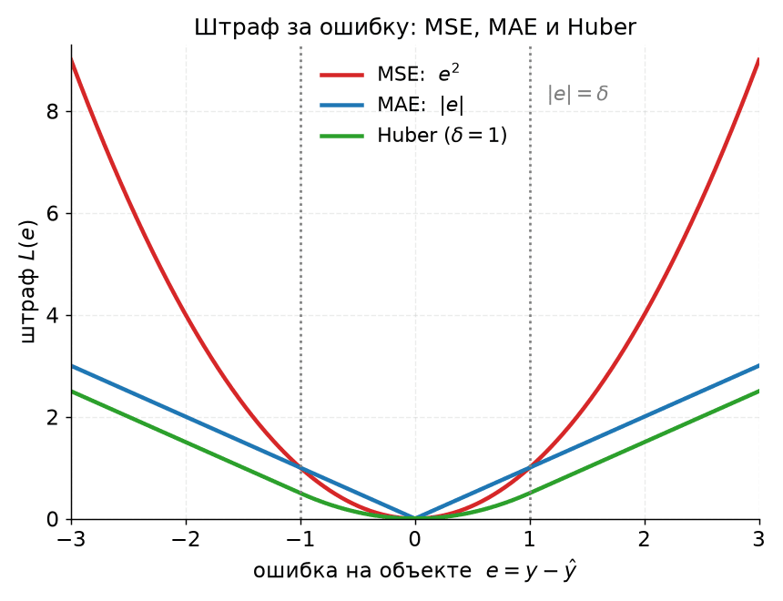
Штраф за ошибку на одном объекте, обе оси линейные. При ошибке 3 красная парабола MSE даёт 9, синяя прямая MAE — 3, зелёная Huber с $\delta = 1$ — 2.5. До порога $|e| = \delta$ (серые пунктирные вертикали) Huber повторяет форму параболы, а дальше идёт прямой, параллельной MAE. Отсюда и весь разговор о выбросах: промах в 10 единиц обходится MSE в 100, а MAE и Huber — примерно в 10. - RMSE и MSE упорядочивают модели одинаково. Корень — монотонное преобразование, поэтому модель с меньшей MSE всегда имеет и меньшую RMSE. Разница только в интерпретируемости единиц.
- RMSE всегда не меньше MAE, и их разрыв — индикатор: чем сильнее RMSE превышает MAE, тем тяжелее хвост распределения ошибок и тем больше в данных крупных промахов.
- Метрики зависят от масштаба таргета. RMSE в 5000 рублей ничего не говорит без контекста. Для сравнения между задачами нужны относительные метрики (MAPE) или $R^2$ / $D^2$.
Все эти функции можно также использовать как метрики для оценки качества модели.
В чём принципиальное отличие MSE от MAE как функций потерь?
$MSE$ штрафует пропорционально квадрату ошибки — крупные ошибки (выбросы) штрафуются несоразмерно сильно. $MAE$ штрафует линейно — более устойчив к выбросам. Линейная регрессия на $MSE$ при выбросах будет "тянуться" к ним.
Зачем нужен $RMSE$, если уже есть $MSE$?
$RMSE = \sqrt{MSE}$ возвращает ошибку в исходных единицах измерения целевой переменной (не в квадратных). Это делает интерпретацию наглядной: "средняя ошибка модели — $X$ рублей" (а не "$X^2$ $рублей^2$").
Какую функцию потерь использовать при наличии выбросов в целевой переменной?
$MAE$ — устойчива к выбросам, так как штрафует каждую ошибку одинаково независимо от её размера. $MSE$ "раздувается" из-за крупных ошибок на выбросах и хуже обобщается.
Можно ли использовать функцию потерь как метрику качества?
Да — $MSE$, $MAE$, $RMSE$ используются и как функции потерь при обучении, и как метрики для сравнения моделей на тестовых данных. Это удобно: минимизируемая функция совпадает с измеряемым качеством.
Почему MSE тянет предсказание к среднему, а MAE — к медиане?
Это точный математический факт: константа, минимизирующая сумму квадратов отклонений, — среднее выборки, а минимизирующая сумму модулей — медиана. Отсюда и разное поведение моделей на скошенных данных с выбросами: MSE-модель смещается в сторону редких больших значений, MAE-модель — нет.
Что такое Huber loss и зачем она нужна?
Функция потерь, квадратичная при малых ошибках и линейная при больших: $\frac{1}{2}e^2$ при $|e| \le \delta$ и $\delta(|e| - \frac{1}{2}\delta)$ иначе. Она сочетает гладкость MSE вблизи нуля (удобно для градиентных методов) с устойчивостью MAE к выбросам. Порог $\delta$ задаёт границу между обычной ошибкой и аномалией.
Что означает большой разрыв между RMSE и MAE?
RMSE всегда не меньше MAE, и чем сильнее она превышает MAE, тем тяжелее хвост распределения ошибок: в данных есть отдельные крупные промахи, которые квадрат усиливает. Близкие значения означают, что ошибки распределены равномерно.
-
Метрика — это определение слова «хорошо» для вашей задачи. Пока оно не выбрано, фраза «модель работает хорошо» не имеет смысла.
И выбор этот не технический, а содержательный: одна и та же модель может быть отличной по accuracy и негодной по recall. Поэтому метрику выбирают до обучения, исходя из того, что происходит в реальности при каждом типе ошибки, — а не подбирают потом ту, по которой цифра получилась покрасивее.
Определение
Алгоритмы машинного обучения, с которыми уже успели познакомиться, позволяют построить модель, аппроксимирующую эту зависимость. Но как понять, насколько качественной получилась аппроксимация?
Почти наверняка наша модель будет ошибаться на некоторых объектах: будь она даже идеальной, шум или выбросы в тестовых данных всё испортят. При этом разные модели будут ошибаться на разных объектах и в разной степени. Задача специалиста по машинному обучению — подобрать подходящий критерий, который позволит сравнивать различные модели.
Важно: качество модели нельзя оценивать на обучающей выборке. Как минимум, это стоит делать на отложенной (тестовой) выборке.
В каждом конкретном случае может возникать целая иерархия метрик. Представим, что речь идёт о стриминговом музыкальном сервисе, пользователей которого мы решили порадовать сгенерированными нейросетью треками.
Уровень Метрика Комментарий 1 (верхний) Будущий доход сервиса Неизмерим напрямую, зависит от множества факторов 2 Медианная длина сессии Измеряется онлайн в продакшене, приближённый индикатор пользовательского удовлетворения 3 Доля удовлетворённых асессоров Оффлайн-оценка до запуска модели, реакция людей на качество музыки 4 (нижний) Функция потерь Используется при обучении модели, оптимизируется напрямую Слева --- скоры модели для двух классов и порог, выше которого отвечаем <<1>>. Порог опускается, растут одновременно TPR (доля пойманных положительных) и FPR (доля ложных тревог), а точка $(\text{FPR},\text{TPR})$ рисует ROC-кривую. AUC --- площадь под ней: качество ранжирования, не зависящее от выбора порога. Из таблицы выше видно, что оптимизируемая функция потерь лежит на нижнем этаже иерархии, а бизнес-цель — на верхнем. Между ними нет прямого равенства, и это принципиально:
- Функция потерь должна быть удобной для оптимизации — гладкой и дифференцируемой. Поэтому обучают на log loss, а не на $F_1$: у $F_1$ градиент почти всюду нулевой.
- Метрика должна быть понятной человеку и отражать смысл задачи, но оптимизировать её напрямую часто невозможно.
Отсюда типичная связка в реальном проекте: обучаем на log loss, отбираем модели по PR-AUC, порог подбираем под recall при заданном числе проверок, а решение о запуске принимаем по деньгам в A/B-тесте. Все четыре величины разные, и каждая на своём месте.
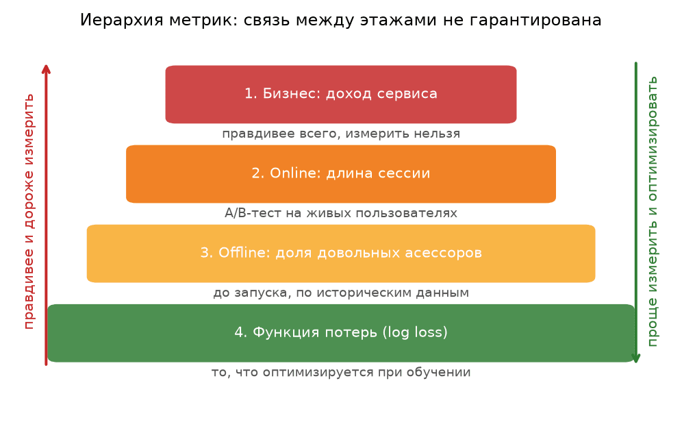
Те же четыре этажа, что в таблице выше, только нарисованные пирамидой: внизу самая широкая и самая легко измеримая величина — функция потерь, наверху самая узкая и самая правдивая — деньги. Красная стрелка слева показывает направление роста правдивости и стоимости измерения, зелёная справа — направление роста удобства оптимизации. Стрелки смотрят в разные стороны, и это главная мысль картинки: то, что проще всего оптимизировать, хуже всего отражает настоящую цель. Главная ловушка иерархии: связь между этажами не гарантирована. Улучшили log loss на 3% — это ещё не значит, что вырастет длина сессии, а тем более доход.
Классический пример: рекомендательная модель, оптимизированная по точности предсказания клика, начинает продвигать кликбейт. Оффлайн-метрика растёт, пользователи уходят.
Практический вывод: чем выше метрика в иерархии, тем она правдивее и тем дороже её измерить. Оффлайн-метрики нужны, чтобы быстро отсеять заведомо плохие варианты, но финальное решение принимается по онлайн-эксперименту.
Метрики бывают offline и online (оффлайновыми и онлайновыми). Online-метрики вычисляются по данным, собираемым с работающей системы (например, медианная длина сессии). Offline-метрики могут быть измерены до введения модели в эксплуатацию, например, по историческим данным или с привлечением специальных людей, асессоров.
Последнее часто применяется, когда метрика — это реакция живого человека: скажем, так поступают поисковые компании, которые предлагают людям оценить качество ранжирования экспериментальной системы ещё до того, как рядовые пользователи увидят эти результаты в обычном порядке. На самом же нижнем этаже иерархии лежат оптимизируемые в ходе обучения функции потерь.
Links
Ссылка Время Описание Метрики классификации и регрессии (Rus) 20-30 min Метрики бинарной классификации (разбор на примерах, плюсы и минусы в зависимости от задачи): accuracy, confusion matrix ($TP$/$FP$/$TN$/$FN$), precision, recall, $F_1$, ROC/AUC, average precision (PR-AUC). Многоклассовая: микро- vs макроусреднение и влияние дисбаланса. Отдельно — оптимизация через LogLoss + подбор порога Зачем нужна иерархия метрик в ML-проекте?
Бизнес-метрики (доход, удержание) нельзя напрямую оптимизировать. Они связаны цепочкой: бизнес $\to$ онлайн-метрика $\to$ оффлайн-метрика $\to$ функция потерь. ML-специалист оптимизирует функцию потерь, отслеживая влияние на верхние уровни.
Чем оффлайн-метрика отличается от онлайн-метрики?
Оффлайн-метрика измеряется до запуска на реальных пользователях — по историческим данным или с асессорами. Онлайн-метрика собирается с работающей системы в продакшене (A/B тест, живые пользователи).
Почему нельзя оценивать качество модели на обучающей выборке?
На train модель может достичь нулевой ошибки за счёт переобучения (запоминания). Реальное качество — это способность предсказывать на новых, не виденных данных, что измеряется только на тестовой выборке.
Что такое функция потерь в контексте иерархии метрик?
Нижний уровень иерархии — математическая величина, оптимизируемая алгоритмом обучения. Она должна коррелировать с оффлайн-метрикой, которая в свою очередь должна предсказывать онлайн-поведение.
Чем метрика отличается от функции потерь и почему их разделяют?
Функция потерь минимизируется при обучении и обязана быть гладкой и дифференцируемой, поэтому обучают на log loss. Метрика оценивает результат и должна отражать смысл задачи, но напрямую оптимизировать её часто нельзя: у accuracy и $F_1$ градиент почти всюду нулевой. Типичная связка — обучение на log loss, отбор моделей по PR-AUC, порог под бизнес-ограничение.
Почему улучшение оффлайн-метрики не гарантирует улучшения бизнес-показателей?
Связь между этажами иерархии не гарантирована. Классический пример — рекомендательная модель, оптимизированная под вероятность клика, начинает продвигать кликбейт: оффлайн-метрика растёт, а пользователи уходят. Поэтому финальное решение принимают по онлайн-эксперименту, а оффлайн-метрики используют для быстрого отсева плохих вариантов.
Когда метрику нужно выбирать и почему именно тогда?
До обучения, исходя из цены каждого типа ошибки в реальности. Метрика — это определение слова «хорошо» для задачи, и она определяет выбор функции потерь, схемы валидации и порога. Выбирать метрику после экспериментов — значит подбирать ту, по которой цифра выглядит лучше.
-
Определение метрик бинарной классификации
Названия кажутся путаными, но читаются они по простому правилу из двух слов:
- второе слово — что предсказала модель (positive — «класс 1», negative — «класс 0»);
- первое слово — угадала ли она (true — да, false — нет).
Значит, false negative — это «модель сказала negative, и это было неверно», то есть объект на самом деле положительный, а модель его пропустила. Читая справа налево, вы никогда не перепутаете FP и FN.
Заметим, что для каждого объекта в выборке возможно 4 ситуации:
- Мы предсказали положительную метку и угадали. Будем относить такие объекты к true positive (TP) группе. True — потому что предсказали мы правильно, а positive — потому что предсказали положительную метку;
- Мы предсказали положительную метку, но ошиблись в своём предсказании — false positive (FP). False, потому что предсказание было неправильным;
- Мы предсказали отрицательную метку и угадали — true negative (TN);
- И наконец, мы предсказали отрицательную метку, но ошиблись — false negative (FN).
Для удобства все эти 4 числа изображают в виде таблицы, которую называют confusion matrix (матрицей ошибок):
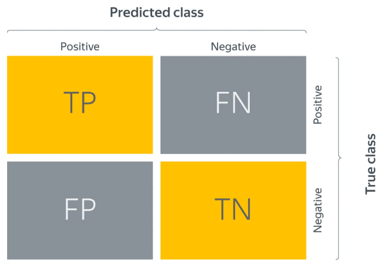
Матрица ошибок Тест на редкое заболевание. Обследовали 1000 человек, больны из них 50. Модель пометила как больных 60 человек, из которых действительно больны 40.
Раскладываем по ячейкам: $TP = 40$ (нашли больных), $FP = 60 - 40 = 20$ (здоровых объявили больными), $FN = 50 - 40 = 10$ (больных пропустили), $TN = 1000 - 40 - 20 - 10 = 930$.
Считаем метрики:
- Accuracy $= (40 + 930)/1000 = 97\%$ — выглядит прекрасно;
- Precision $= 40/60 = 67\%$ — из каждых трёх «тревог» одна ложная;
- Recall $= 40/50 = 80\%$ — каждый пятый больной пропущен;
- $F_1$ $= 2 \cdot \frac{0.67 \cdot 0.8}{0.67 + 0.8} = 73\%$.
97% accuracy и 80% recall — это оценки одной и той же модели. Первое число ничего не говорит о том, что каждый пятый больной остался без диагноза: accuracy почти целиком складывается из 930 здоровых, которых модель правильно не тронула.
Модель выдаёт не метку, а вероятность, и метка получается сравнением с порогом (по умолчанию 0.5). Двигая порог, мы двигаем и обе метрики — в противоположные стороны:
- порог ниже $\to$ положительными объявляется больше объектов $\to$ находим больше больных (recall растёт), но и ложных тревог больше (precision падает);
- порог выше $\to$ тревожим только при высокой уверенности (precision растёт), но пропускаем больше больных (recall падает).
Крайние случаи показывают это нагляднее всего: объявив больными всех, получим recall = 100% при мизерном precision; объявив больным одного, в ком мы уверены больше всего, получим precision = 100% при recall = 2%.
Поэтому вопрос «какая метрика лучше» не имеет ответа в отрыве от задачи — сначала решают, какая ошибка дороже.
- FN дороже — пропуск опасен: онкоскрининг (пропустили опухоль), обнаружение мошенничества, поиск дефектов на производстве. Оптимизируем recall, миримся с ложными тревогами.
- FP дороже — ложная тревога дорого стоит: блокировка счёта добросовестного клиента, спам-фильтр (важное письмо в спаме хуже, чем реклама во входящих), рассылка дорогого предложения. Оптимизируем precision.
- $F_\beta$ позволяет задать этот баланс числом: $\beta > 1$ (например, $F_2$) усиливает вес recall, $\beta < 1$ ($F_{0.5}$) — вес precision.
Метрика Формула Пояснение Accuracy $\frac{TP + TN}{TP + TN + FP + FN}$ Общая доля правильно классифицированных объектов Precision (точность) $\frac{TP}{TP + FP}$ Доля верных положительных предсказаний среди всех предсказанных положительных Recall (полнота) $\frac{TP}{TP + FN}$ Доля верных положительных предсказаний среди всех объектов положительного класса $F_\beta$-мера $F_\beta = (1 + \beta^2) \cdot \frac{\text{Precision} \cdot \text{Recall}}{(\beta^2 \cdot \text{Precision}) + \text{Recall}}$ Сбалансированная метрика, учитывающая важность precision и recall. При $\beta=1$ — F1-мера $F_1$-мера $F_1 = 2 \cdot \frac{\text{Precision} \cdot \text{Recall}}{\text{Precision} + \text{Recall}}$ Гармоническое среднее precision и recall Recall@k, Precision@k Метрики Recall и Precision хорошо подходят для задачи поиска "документ $d$ релевантен запросу $q$", когда из списка рекомендованных алгоритмом документов нас интересует только первый - Смотреть на accuracy при дисбалансе. При 1% положительных модель «всегда 0» даёт 99% accuracy и нулевую пользу. Это не крайний случай, а норма для антифрода и медицины.
- Считать порог 0.5 священным. Он взят по умолчанию и почти никогда не оптимален. Порог подбирают на валидации под нужный баланс precision/recall.
- Забывать, что метрики зависят от порога, а ROC-AUC — нет. Precision, recall, $F_1$ считаются для конкретного порога; ROC-AUC и PR-AUC оценивают качество ранжирования по всем порогам сразу.
- Гнаться за $F_1$ без разбора. $F_1$ уравнивает важность precision и recall, что для медицины или антифрода прямо неверно — там нужен $F_2$ или прямая оптимизация под бизнес-стоимость ошибок.
Что такое матрица ошибок (confusion matrix) и какие 4 ячейки она содержит?
$TP$ (верно предсказан класс 1), $TN$ (верно предсказан класс 0), $FP$ (ошибочно предсказан класс 1), $FN$ (ошибочно предсказан класс 0). Матрица $2\times 2$ показывает все исходы бинарной классификации.
Что измеряет Precision и Recall, и как они друг от друга отличаются?
$Precision = \dfrac{TP}{TP+FP}$ — доля истинно положительных среди предсказанных положительными. $Recall = \dfrac{TP}{TP+FN}$ — доля найденных положительных среди всех реально положительных. Precision отвечает на "насколько точны?", Recall — "сколько нашли?".
Что такое $F_1$-мера и почему используют гармоническое среднее?
$F1 = 2\dfrac{PR}{P + R}$ — гармоническое среднее Precision ($P$) и Recall ($R$). Гармоническое среднее "наказывает" дисбаланс: если одна из метрик близка к нулю, $F_1$ тоже будет мало. Это делает $F_1$ строгой метрикой, требующей одновременно хорошего $P$ и $R$.
Когда Accuracy не подходит как метрика качества?
При дисбалансе классов: если 95% объектов класса 0, модель, предсказывающая всегда 0, получит Accuracy=95%, но полностью бесполезна. В таких случаях используют $F_1$, ROC AUC, Precision/Recall.
Как запомнить разницу между FP и FN?
Читать название справа налево: второе слово — что предсказала модель (positive/negative), первое — угадала ли она. False negative означает «предсказала negative и ошиблась», то есть реально положительный объект был пропущен.
Почему precision и recall нельзя максимизировать одновременно?
Обе метрики зависят от порога, но меняются в противоположные стороны: понижая порог, мы находим больше положительных объектов (recall растёт), но добавляем ложных срабатываний (precision падает). Крайние случаи — «объявить всех положительными» даёт recall 100% при мизерном precision, и наоборот.
В каких задачах FN дороже FP и что с этим делать?
Когда пропуск опаснее ложной тревоги: онкоскрининг, обнаружение мошенничества, поиск дефектов. Там оптимизируют recall — понижают порог классификации и используют $F_\beta$ с $\beta > 1$ (например, $F_2$), который взвешивает recall выше precision.
-
Если у нас $K$ классов, то для каждого из них можно посчитать свои метрики. Есть 2 варианта посчитать метрики на многоклассовой задаче:
Метод Описание Микроусреднение Рассматриваем каждый класс, фиксируем его, а все остальные "сливаем в один класс" — таким образом, мы получаем $K$ бинарных классификаторов. Усредним элементы матрицы ошибок ($TP, FP, TN, FN$) между бинарными классификаторами, например $TP = \frac{1}{K} \sum_{i=1}^{K} TP_i$. Затем по этим усреднённым $TP,FP,TN,FN$ считаем Precision, Recall, F-меру и др. Макроусреднение Считаем метрику (например, Precision, Recall) для каждого классификатора отдельно, а потом усредняем. Метрики precision и recall определены для бинарной задачи: есть «положительный» класс и всё остальное. При $K$ классах такого деления нет — непонятно, что считать положительным.
Решение: свести задачу к $K$ бинарным («этот класс против всех») и посчитать метрику для каждого. Получаем $K$ чисел, но руководителю нужно одно — вот его и получают усреднением. Весь вопрос в том, с какими весами усреднять, и разные ответы дают микро-, макро- и взвешенное усреднение.
Помимо микро и макро в
sklearnесть weighted: метрика считается по классам, как в макро, но усредняется с весами, пропорциональными числу объектов класса (support).Это компромисс: редкие классы учитываются, но не наравне с крупными. По смыслу weighted-усреднение близко к микро, а по способу подсчёта — к макро.
Полезный факт для собеседования: в многоклассовой задаче, где каждый объект относится ровно к одному классу, микро-precision, микро-recall, микро-$F_1$ и accuracy — это одно и то же число. Если оппонент просит «микро-$F_1$», он просит accuracy.
- Микроусреднение взвешивает классы по размеру выборки — доминируют большие классы. Хорошо отражает общую точность при несбалансированных данных.
- Макроусреднение даёт каждому классу равный вес — важно, когда нужна хорошая производительность на каждом классе независимо от его размера.
Пример: если у вас 1000 объектов класса A и 10 объектов класса B, плохое качество на классе B "утонет" в микроусреднении, но явно проявится в макроусреднении.
Три класса: Cat, Dog, Bird, всего 125 объектов. Числа взяты из матрицы ошибок на рисунке ниже: для каждого класса считаем как бинарную задачу "этот класс против всех остальных".
Класс TP FP FN Precision Recall Cat 50 13 5 0.79 0.91 Dog 30 15 10 0.67 0.75 Bird 10 7 20 0.59 0.33 Обратите внимание: в многоклассовой задаче, где каждый объект относится ровно к одному классу, каждая ошибка одновременно является $FP$ для предсказанного класса и $FN$ для истинного. Поэтому суммы обязаны совпадать: $13 + 15 + 7 = 5 + 10 + 20 = 35$. Если в вашей таблице они разошлись — где-то ошибка в подсчётах.
Макро-Precision = (0.79 + 0.67 + 0.59) / 3 ≈ 0.68
Микро-Precision: усредняем $TP$, $FP$ по всем классам: $\overline{TP} = (50+30+10)/3 = 30$, $\overline{FP} = (13+15+7)/3 \approx 11.7$, итого $= 30/(30+11.7) \approx \mathbf{0.72}$ — ровно accuracy, как и обещано выше.
Класс Bird тянет макро-Precision вниз (0.59 против 0.79 у Cat), а recall у него и вовсе 0.33 — это сигнал, что модель плохо работает на редком классе, и микроусреднение его прячет.
Матрица ошибок $3\times3$. Для каждого класса TP — клетка на диагонали, FP — остальная часть его столбца, FN — остальная часть строки; отсюда precision, recall и $F_1$ по классам. Macro-$F_1$ — среднее по классам, все классы равноправны. Micro считает TP, FP и FN глобально, и для одной метки на объект это ровно accuracy: большие классы весят больше. 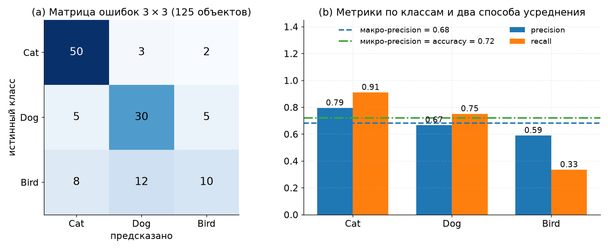
Слева (a) — матрица ошибок на 125 объектах: строки это истинный класс, столбцы — предсказанный, на диагонали верные ответы. Она показывает не только сколько ошибок, но и каких: 12 птиц из 30 модель назвала собаками. Справа (b) — precision (синий) и recall (оранжевый) по классам: у редкого класса Bird recall всего 0.33. Зелёная штрихпунктирная линия — микро-усреднение, оно же accuracy, 0.72; синяя пунктирная — макро-precision, 0.68. Макро оказывается ниже именно потому, что даёт слабому классу тот же вес, что и сильному. - Молча брать
averageпо умолчанию. Вf1_scoreпо умолчанию стоитaverage='binary', и на многоклассовой задаче код упадёт или потребует явного выбора. Выбор усреднения — содержательное решение, а не техническая деталь. - Показывать одно число вместо отчёта.
classification_reportдаёт precision/recall/f1 по каждому классу плюс support. Это первое, на что стоит смотреть: одно усреднённое число всегда скрывает, какой именно класс развалился. - Сравнивать макро-метрики моделей на разных наборах классов. Если одна модель обучалась на 5 классах, а другая на 7, макро-усреднение считается по разному числу слагаемых, и числа несопоставимы.
- Забывать про матрицу ошибок $K \times K$. Она показывает не только сколько ошибок, но и какие классы путаются между собой — а это обычно и есть самая полезная информация для улучшения модели.
Как рассчитать метрики классификации для многоклассовой задачи?
Два подхода: микроусреднение — сначала усредняются элементы матрицы ошибок ($TP$, $FP$, $FN$) по всем классам, затем считается метрика. Макроусреднение — метрика считается для каждого класса отдельно, затем результаты усредняются.
В чём разница между микро- и макроусреднением?
Микроусреднение взвешивает классы по размеру — большие классы доминируют. Макроусреднение даёт равный вес каждому классу — редкие классы видны. При сбалансированных данных они совпадают.
Когда предпочтительнее макроусреднение?
Когда важно хорошее качество на каждом классе независимо от его размера: обнаружение редких заболеваний, классификация редких событий. Низкое качество на маленьком классе явно снизит макро-метрику.
Как интерпретировать числовой пример: precision Cat=0.79, Dog=0.67, Bird=0.59?
Класс Bird тянет макро-Precision вниз ($0.68$ против $0.72$ у микро), а recall у него всего $0.33$. Это сигнал: модель плохо работает на маленьком классе. Микроусреднение это "скрывает" — Bird редкий и мало влияет на усреднённые $TP$/$FP$.
Что такое weighted-усреднение и чем оно отличается от макро?
Метрика считается по классам, как в макро, но усредняется с весами, пропорциональными числу объектов каждого класса. Редкие классы учитываются, но не наравне с крупными — это компромисс между микро и макро.
Почему микро-$F_1$ в многоклассовой задаче совпадает с accuracy?
Когда каждый объект принадлежит ровно одному классу, любая ошибка одновременно является FP для предсказанного класса и FN для истинного. Суммарные $FP$ и $FN$ равны, поэтому микро-precision, микро-recall и микро-$F_1$ совпадают друг с другом и с долей верных ответов, то есть с accuracy.
Что показывает матрица ошибок $K \times K$ и почему её стоит смотреть вместе с метриками?
Она показывает не только количество ошибок, но и то, какие классы модель путает между собой. Усреднённое число говорит «качество упало», а матрица — что, например, класс «Bird» систематически принимается за «Cat», и это сразу подсказывает, какие данные или признаки нужно править.
-
Вероятность классификации
Классификатор внутри устроен в два слоя, и их важно различать:
- Ранжирование. Модель присваивает каждому объекту число (score или вероятность) — насколько он «похож» на положительный класс. Это то, чему модель действительно научилась.
- Решение. Число сравнивается с порогом и превращается в метку. Это уже не свойство модели, а ваш выбор.
Отсюда следует всё остальное в этом вопросе: precision, recall и $F_1$ оценивают второй слой и меняются вместе с порогом, а ROC-AUC оценивает первый и от порога не зависит вовсе. Понимание этого разделения — и есть суть темы.
Многие модели бинарной классификации устроены так, что класс объекта получается бинаризацией выхода классификатора по некоторому фиксированному порогу:
$$f(x,w,w_0) = \mathbb{I}[g(x,w) > w_0]$$
Если нашей целью является построение прогноза в терминах метки класса, то нам нужно учесть, что в зависимости от порога мы будем получать разные предсказания и разное качество на отложенной выборке.
Чем ниже порог отсечения, тем больше объектов модель будет относить к положительному классу. Как в этом случае оценить качество модели?
Выбор порога — это компромисс между Precision и Recall. Он зависит от задачи:
- Медицинская диагностика: снижаем порог $\to$ больше "позитивных" предсказаний $\to$ выше Recall. Лучше ложная тревога, чем пропустить болезнь.
- Спам-фильтр: повышаем порог $\to$ меньше ложных срабатываний $\to$ выше Precision. Лучше пропустить спам, чем потерять важное письмо.
Модель с порогом 0.5 по умолчанию — лишь одна точка на ROC-кривой.
Reliability diagram: объекты группируются по предсказанной вероятности, и для каждой группы считается реальная доля положительных. У идеально откалиброванной модели точки лежат на диагонали. Самоуверенная модель даёт S-образную кривую: при скоре 0.9 положительных на самом деле меньше. Isotonic-калибровка монотонно переучивает скор в вероятность: ранжирование не меняется, но $0.8$ теперь действительно значит «8 из 10». ROC AUC
Метрика Формула Пояснение TPR $\frac{TP}{TP + FN}$ Полнота, доля положительных объектов, правильно предсказанных положительными FPR $\frac{FP}{FP + TN}$ Доля отрицательных объектов, неправильно предсказанных положительными TPR, FPR растут при уменьшении порога. Кривая в осях TPR/FPR, которая получается при варьировании порога, исторически называется ROC-кривой (receiver operating characteristics curve, сокращённо ROC curve).
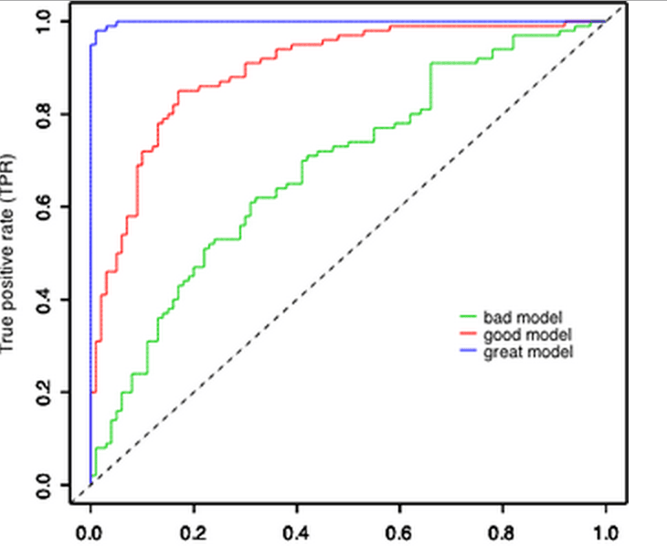
ROC-кривая - Если классификатор идеальный — две кривые разделимы по оси $X$ — то на правом графике мы получаем ROC-кривую $(0,0) \to (0,1) \to (1,1)$, площадь под которой равна $1$.
- Если классификатор случайный (предсказывает одинаковые метки положительным и отрицательным объектам), то мы получаем ROC-кривую $(0,0) \to (1,1)$, площадь под которой равна $0.5$.
$$\dfrac{\sum_{i=1}^{N} \sum_{j=1}^{N} \textcolor{green}{\mathbb{I}[y_i < y_j]}\, \textcolor{red}{I'[f(x_i) < f(x_j)]}}{\sum_{i=1}^{N} \sum_{j=1}^{N} \textcolor{green}{\mathbb{I}[y_i < y_j]}}$$
$$\textcolor{red}{I'[f(x_i) < f(x_j)]} = \begin{cases} 0, & f(x_i) > f(x_j) \\ 0.5, & f(x_i) = f(x_j) \\ 1, & f(x_i) < f(x_j) \end{cases}$$
$$\textcolor{green}{\mathbb{I}[y_i < y_j]} = \begin{cases} 0, & y_i > y_j \\ 1, & y_i < y_j \end{cases}$$
Чем лучше классификатор разделяет два класса, тем больше площадь (area under curve) под ROC-кривой — и мы можем использовать её в качестве метрики. Эта метрика называется AUC, и она работает благодаря следующему свойству ROC-кривой:
AUC равен доле пар объектов вида (объект класса $1$, объект класса $0$), которые алгоритм верно упорядочил, то есть предсказание классификатора на первом объекте больше.
- AUC = 1.0 — идеальная модель: всем объектам класса 1 присвоен бо́льший score, чем объектам класса 0.
- AUC = 0.5 — случайная модель: не лучше подбрасывания монетки.
- AUC = 0.85 — из 100 случайных пар (один объект класса 1, один — класса 0) в 85 случаях модель правильно отдаёт бо́льший score объекту класса 1.
AUC не зависит от порога — это свойство делает его удобным для сравнения моделей независимо от конкретного значения отсечения.
У метрики есть серьёзное ограничение, о котором обязательно спрашивают на собеседовании: при сильном дисбалансе классов ROC-AUC выглядит незаслуженно хорошо.
Причина в знаменателе FPR: $FPR = \frac{FP}{FP + TN}$. Возьмём выборку из 1 000 000 объектов, где положительных всего 1000 (0.1%), а отрицательных — 999 000. Пусть модель нашла все положительные объекты ($TP = 1000$) и вдобавок подняла тревогу на 10 000 отрицательных ($FP = 10\,000$).
Тогда $FPR = \frac{10\,000}{999\,000} \approx 0.01$ — кривая почти не сдвинется, и ROC-AUC останется высоким. А precision — доля правды среди всех тревог — составит $\frac{TP}{TP + FP} = \frac{1000}{11\,000} \approx 9\%$: 9 из 10 тревог ложные, и система на практике нерабочая.
PR-кривая (precision против recall) от числа истинно отрицательных не зависит вовсе и в такой ситуации показывает честную картину. Практическое правило:
- классы более-менее сбалансированы — можно смотреть ROC-AUC;
- положительных менее нескольких процентов — смотрите PR-AUC (average precision).
Ещё одно отличие: базовый уровень у ROC-AUC всегда 0.5, а у PR-AUC он равен доле положительного класса. При 1% положительных PR-AUC = 0.3 может быть отличным результатом.
Детали ROC AUC — в материалах А.Г.Дьяконова.
Отдельная тонкость: высокий ROC-AUC не означает, что вероятностям можно верить. AUC зависит только от порядка объектов, поэтому модель, выдающая вместо честных 0.7 и 0.3 значения 0.99 и 0.98, получит тот же AUC — порядок не изменился.
Если вероятность используется в расчётах («ожидаемый убыток = вероятность дефолта $\times$ сумма кредита»), нужна калибровка — отображение выходов модели в честные вероятности. Стандартные способы: Platt scaling (логистическая регрессия поверх выходов) и isotonic regression. Проверяют качество калибровки по калибровочной кривой: объекты бьются на бины по предсказанной вероятности, и для каждого бина сравнивается предсказанная вероятность с реальной долей положительных.
Особенно склонны к некалиброванности бустинги (переуверены) и наивный Байес; логистическая регрессия обычно калибрована хорошо по построению.
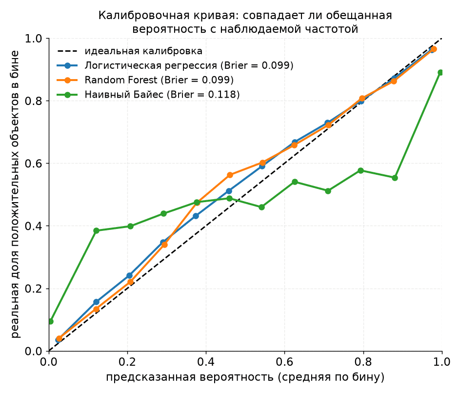
Объекты разбиты на 12 бинов по предсказанной вероятности: по горизонтали — среднее предсказание внутри бина, по вертикали — реальная доля положительных объектов в нём, чёрная пунктирная диагональ означает идеальную калибровку. Синяя логистическая регрессия и оранжевый Random Forest идут близко к диагонали. Зелёный наивный Байес отклоняется сильно: там, где он обещает 0.12, положительных на самом деле 0.39, а там, где обещает 0.99, их только 0.89. При этом ROC-AUC у всех трёх примерно одинаковый, около 0.94, — порядок объектов хороший, а самим числам верить нельзя. Что такое ROC-кривая и как она строится?
ROC-кривая — график зависимости TPR (Recall) от FPR при варьировании порога классификации от 1 до 0. Каждая точка кривой соответствует одному значению порога. Идеальная кривая проходит через точку (0, 1).
Что такое ROC AUC и как его интерпретировать?
AUC (площадь под ROC-кривой) — вероятность того, что случайно выбранный объект класса 1 получит более высокий score, чем объект класса 0. AUC=1 — идеальная модель, AUC=0.5 — случайная. Не зависит от порога.
Как выбор порога влияет на Precision и Recall?
Снижение порога $\to$ больше объектов предсказывается "положительными" $\to$ Recall растёт, Precision снижается. Повышение порога — обратный эффект. Выбор компромисса зависит от задачи: медицина требует высокий Recall, антиспам — высокий Precision.
Почему AUC удобнее F1 для сравнения моделей?
AUC не зависит от конкретного порога — оценивает "ранжирующую" способность модели по всем порогам сразу. F1 вычисляется при фиксированном пороге (обычно 0.5) и чувствителен к его выбору.
Почему при сильном дисбалансе классов ROC-AUC вводит в заблуждение?
FPR считается относительно огромного числа отрицательных объектов: при 999 000 отрицательных даже 10 000 ложных срабатываний дают FPR около 0.01, и кривая почти не сдвигается. Precision при этом может составлять 9%, то есть система практически нерабочая. PR-кривая от числа истинно отрицательных не зависит и показывает честную картину.
Чем базовый уровень PR-AUC отличается от базового уровня ROC-AUC?
У ROC-AUC случайная модель всегда даёт 0.5 независимо от данных. У PR-AUC базовый уровень равен доле положительного класса: при 1% положительных случайная модель даст 0.01, поэтому PR-AUC 0.3 в такой задаче может быть очень хорошим результатом.
Означает ли высокий ROC-AUC, что предсказанным вероятностям можно доверять?
Нет. AUC зависит только от порядка объектов: модель, выдающая 0.99 и 0.98 вместо честных 0.7 и 0.3, получит тот же AUC. Если вероятности используются в расчётах (ожидаемый убыток, ожидаемая прибыль), нужна калибровка — Platt scaling или isotonic regression — с проверкой по калибровочной кривой.
-
Модель не выдаёт метку «спам» или «не спам» — она выдаёт число вроде 0.73. Это её оценка вероятности того, что объект относится к положительному классу.
Чтобы принять решение, число нужно превратить в метку, и делается это сравнением с порогом. Ключевая мысль: порог не является частью модели. Его выбирает человек уже после обучения, исходя из того, какая ошибка дороже. Одна и та же обученная модель при разных порогах ведёт себя как совершенно разные классификаторы — от «подозревает всех» до «молчит почти всегда».
Отсюда практический вывод: менять порог можно за секунду и без переобучения. Это самый дешёвый инструмент подстройки модели под требования бизнеса.
Для получения меток класса специалист по машинному обучению сначала применяет на объектах модель и получает вещественные предсказания модели, $p_i \in (0,1)$. Затем предсказания бинаризуются по порогу (threshold), выбранному специалистом: если предсказание на объекте больше порога, то метка класса $1$ (или "положительная"), если меньше — $0$ (или "отрицательная").
Рассмотрим, что будет с метриками precision, recall в крайних положениях порога.
Пусть порог равен $0$
Тогда мы всё будем относить к положительному классу, все объекты будут либо отнесены к $TP$, либо к $FP$, потому что отрицательных предсказаний нет. Тогда Precision будет равен среднему таргету в выборке:
$$Precision = \frac{TP}{TP + FP} = \frac{1}{N} \sum_{i=1}^{N} \mathbb{I}[i_i = 1]$$
Recall будет равен $1$, потому что все объекты будут отнесены к $TP$:
$$Recall = \frac{TP}{TP + FN} = \frac{TP}{TP + 0} = 1$$
Пусть порог равен $1$
Тогда ни один объект не будет назван положительным, $TP = FP = 0$:
$$Recall = \frac{TP}{TP + FN} = \frac{0}{0 + FN} = 0$$
При таком пороге precision (точность) не определена:
$$Precision = \frac{TP}{TP + FP} = \frac{0}{0 + 0}$$
В отношении порога, равного $1$: пусть мы отступили чуть-чуть назад по порогу, чтобы хотя бы несколько объектов были названы моделью положительными. Скорее всего это будут самые "простые" объекты, которые модель распознает хорошо, потому что её предсказание близко к единице. В этом предположении $FP \approx 0$. Тогда точность $Precision = \frac{TP}{TP+FP} \approx \frac{TP}{TP+0} \approx 1$ будет близка к единице.
Выбор порога является компромиссом между Precision и Recall. Мы можем его выбирать в диапазоне от 0 до 1:
$$threshold \in [0,1],$$
в зависимости от того, какую метрику мы хотим максимизировать: зависит от контекста задачи. Например, в задачах медицинской диагностики мы хотим максимизировать Recall (не пропускать больных), а в банковских задачах мы хотим максимизировать Precision (не хотим выдавать кредиты неплатежеспособным клиентам).
190 объектов класса 0 и 10 класса 1. Константа «всегда 0» даёт accuracy 0.95 при recall 0. Привычный порог 0.5 ловит часть редкого класса, а сдвиг порога к его скорам поднимает $F_1$ до максимума. class_weightна этапе обучения добивается того же: ошибка на редком классе весит больше, и граница сдвигается сама.Антифрод-система, 100 000 транзакций в день, мошеннических — 200 (0.2%). Отдел ручной проверки способен разобрать 500 заявок в сутки.
Это ограничение и определяет порог: нужно такое значение, при котором модель помечает подозрительными примерно 500 транзакций. Дальше смотрим, сколько реальных мошенничеств попало в эти 500, — это и есть recall при заданном бюджете проверки.
Так формулируется практическая задача: не «максимизируем $F_1$», а «максимизируем recall при ограничении на число проверок». Аналогично работают метрики Precision@k и Recall@k в рекомендациях и поиске, где $k$ — размер выдачи, физически ограниченный экраном.
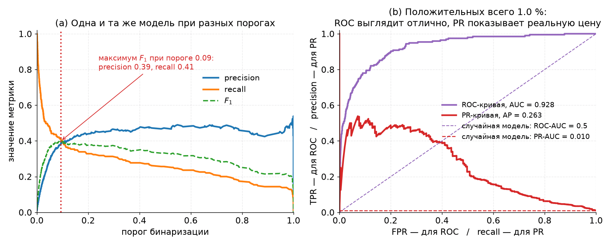
Одна обученная модель на синтетических данных (не на примере с антифродом выше), положительных объектов 1 %. Слева (a) — зависимость метрик от порога: recall (оранжевый) падает от 1 к 0, precision (синий) растёт и дальше держится около 0.45, а $F_1$ (зелёный пунктир) достигает максимума 0.40 при пороге 0.09. Справа (b) те же самые предсказания в двух системах координат: фиолетовая ROC-кривая прижата к левому верхнему углу и даёт AUC 0.928, а красная PR-кривая честно показывает, что precision нигде не поднимается выше 0.55, и AP равен 0.263. Базовый уровень у ROC — 0.5 при любых данных, у PR — доля положительного класса, здесь 0.010. Пороговое значение (threshold) подбирается по ROC-кривой: мы строим ROC-кривую и выбираем пороговое значение, которое даёт наибольшую площадь под кривой (AUC).
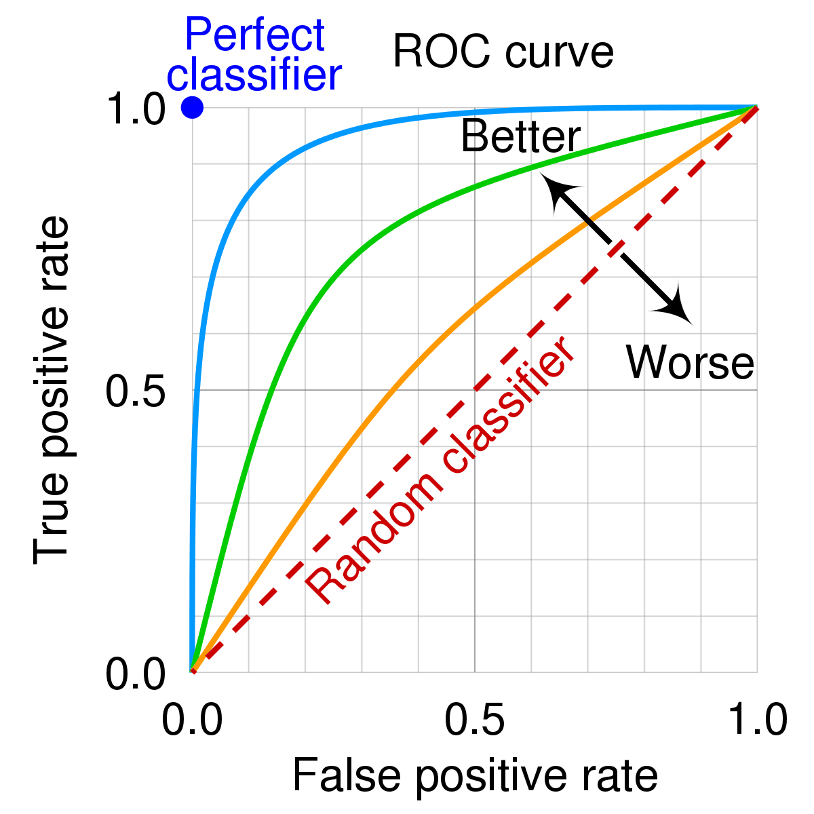
Каждая точка на ROC-кривой соответствует определённому пороговому значению. Для максимизации площади под кривой мы выбираем точку, наиболее близкую к левому верхнему углу. В таком случае минимизируется $FPR$ и максимизируется TPR (он же Recall). - AUC от порога не зависит. Площадь под кривой считается сразу по всем порогам и измеряет качество ранжирования — насколько хорошо модель ставит положительные объекты выше отрицательных. Фраза «выбрать порог, максимизирующий AUC» некорректна: порог не меняет AUC, он лишь выбирает точку на кривой.
- «Ближайшая к левому верхнему углу» — не универсальное правило. Оно неявно считает FP и FN одинаково дорогими. Если пропуск мошенничества стоит 50 000 рублей, а лишняя проверка — 100, оптимум лежит совсем в другом месте.
- При сильном дисбалансе ROC-кривая приукрашивает. FPR считается от огромного числа отрицательных объектов, поэтому даже тысячи ложных срабатываний почти не двигают её. В таких задачах смотрят PR-кривую (precision–recall) и PR-AUC.
- Порог подбирают на валидации, а не на тесте. Это такой же гиперпараметр, как глубина дерева, и настройка его по тесту завышает итоговую оценку.
Как бинаризация по порогу связана с метриками Precision и Recall?
При пороге = 0 все объекты относятся к классу 1: $Recall = 1$, Precision = доля класса 1 в выборке. При пороге = 1 никто не классифицируется как класс 1: $Recall = 0$, Precision не определена. Между этими крайностями — компромисс.
Как выбрать оптимальный порог на ROC-кривой?
Выбирают точку, наиболее близкую к левому верхнему углу графика ($FPR=0$, $TPR=1$). Это минимизирует $FPR$ и максимизирует $TPR$. Можно также задать приоритет: фиксировать допустимый $FPR$ и максимизировать $TPR$ при нём.
В каких задачах важен высокий Recall, а в каких — высокий Precision?
Высокий Recall: медицинская диагностика (лучше ложная тревога, чем пропустить болезнь), обнаружение мошенничества. Высокий Precision: спам-фильтр (лучше пропустить спам, чем удалить важное письмо), рекомендательные системы.
Зачем оптимизировать порог, если можно просто максимизировать AUC?
AUC оценивает модель в целом по всем порогам, но для реального применения нужен конкретный порог. После выбора архитектуры и обучения модели порог подстраивается под требования задачи — максимизацию конкретной метрики ($F_1$, Recall@Precision).
Почему AUC не зависит от порога?
ROC-AUC считается сразу по всем возможным порогам и измеряет качество ранжирования — вероятность того, что случайный положительный объект получит больший скор, чем случайный отрицательный. Порог не меняет саму кривую, он лишь выбирает точку на ней.
Почему при сильном дисбалансе классов ROC-кривая вводит в заблуждение?
FPR считается относительно огромного числа отрицательных объектов, поэтому даже тысячи ложных срабатываний почти не сдвигают кривую, и картина выглядит благополучной. Precision при этом может быть катастрофически низким. В таких задачах смотрят PR-кривую и PR-AUC.
Как формулируется задача выбора порога, когда есть ограничение на ресурсы?
Не «максимизировать $F_1$», а «максимизировать recall при заданном числе проверок». Если отдел разбирает 500 заявок в день, порог выбирается так, чтобы модель помечала примерно 500 объектов, и качество измеряется долей найденных среди них. Тот же смысл у метрик Precision@k и Recall@k.
Почему порог нельзя подбирать на тестовой выборке?
Порог — такой же гиперпараметр, как глубина дерева. Подобранный по тесту, он делает тестовую оценку завышенной: выбирается значение, случайно удачное именно на этой выборке. Подбор ведут на валидации.
-
В задачах регрессии целевая метка у нас имеет потенциально бесконечное число значений. И природа этих значений, обычно, связана с каким-то процессом измерений.
Отсюда главное отличие от классификации: ответ нельзя оценить как «верно / неверно», у ошибки есть величина и единицы измерения. Поэтому все метрики ниже отвечают на один из трёх вопросов: насколько велика типичная ошибка, насколько она велика относительно самого значения и насколько мы лучше, чем если бы вообще не строили модель.
- Величина температуры в определённый момент времени на метеостанции
- Количество прочтений статьи на сайте
- Количество проданных бананов в конкретном магазине, сети магазинов или стране
- Дебит добывающей скважины на нефтегазовом месторождении за месяц и т.п.
Пусть $a_i = f(x_i; w) \in \mathbb{R}$ — предсказание алгоритма $f(x; w)$ с параметрами $w$ на объекте $x_i$, $y_i \in \mathbb{R}$ — истинное значение.
Метрика Формула Пояснение MSE $$\textcolor{magenta}{\frac{1}{N} \sum_{i=1}^{N} (a_i - y_i)^2}$$ Среднеквадратическая ошибка RMSE $$\sqrt{\textcolor{magenta}{\frac{1}{N} \sum_{i=1}^{N} (a_i - y_i)^2}}$$ Корень среднеквадратической ошибки $R^2$ $$1 - \frac{\sum_{i=1}^{N} (a_i - y_i)^2}{\textcolor{red}{\sum_{i=1}^{N} (y_i - \bar{y})^2}}$$ Коэффициент детерминации. - $\bar{y} = \frac{1}{N} \sum_{i=1}^{N} y_i$ — среднее значение целевой переменной.
- У идеального решающего правила $R^2 = 1$.
- $R^2$ показывает, какая доля дисперсии таргетов (знаменатель) объяснена моделью.
Пусть теперь мы хотим использовать MSE для оценки наших регрессионных моделей. Если большие ошибки для нас действительно неприемлемы, то квадратичный штраф за них — очень полезное свойство (и его даже можно усиливать, повышая степень, в которую мы возводим ошибку на объекте). Однако если в наших тестовых данных присутствуют выбросы, то нам будет сложно объективно сравнить модели между собой: ошибки на выбросах будут маскировать различия в ошибках на основном множестве объектов. Таким образом, если мы будем сравнивать две модели при помощи MSE, у нас будет выигрывать та модель, у которой меньше ошибка на объектах-выбросах, а это, скорее всего, не то, чего требует от нас наша бизнес-задача.
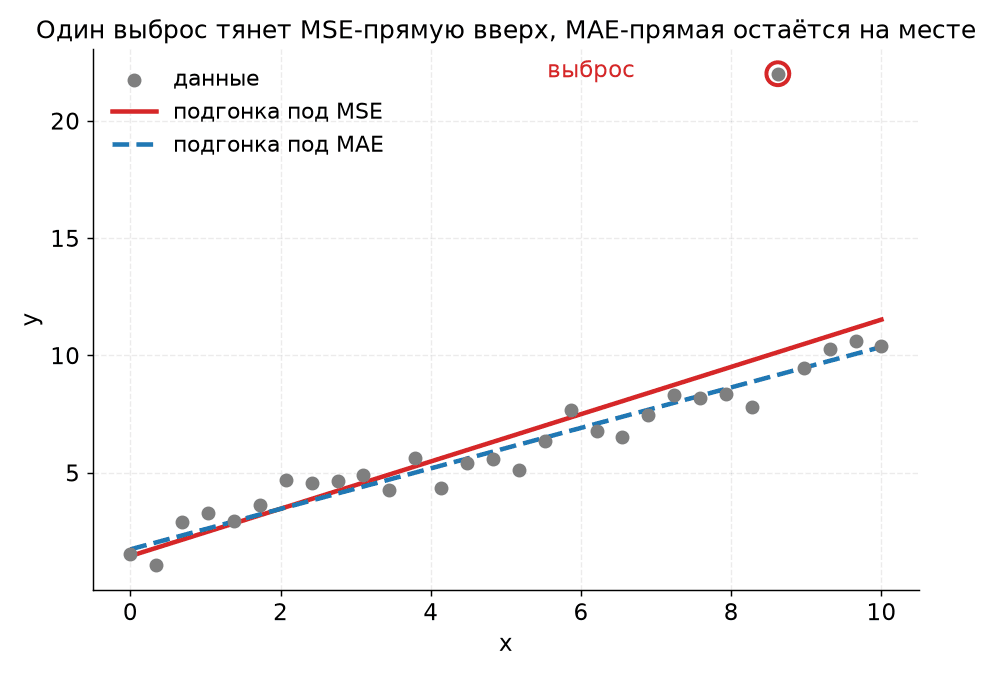
Тридцать точек лежат вдоль прямой, но одна — обведённая красным на $x \approx 8.6$ — равна 22 вместо ожидаемых примерно 9. Красная сплошная прямая подогнана минимизацией MSE, синяя пунктирная — минимизацией MAE. Квадратичный штраф вынуждает MSE-прямую наклониться в сторону аномалии: на правом краю она проходит на 1.2 выше MAE-прямой, то есть завышает прогноз для всех обычных объектов. MAE-прямая выброс почти игнорирует и остаётся среди основной массы точек. Абсолютные метрики (MSE, RMSE, MAE) имеют один изъян: они складывают ошибки объектов, несопоставимых по масштабу.
Пример: прогноз продаж по магазинам сети. Флагманский магазин продаёт 10 000 единиц в месяц, маленький киоск — 100. Ошибка в 50 единиц для киоска катастрофична (50%), для флагмана незаметна (0.5%). Но MAE сложит их с равным весом, и метрика будет почти целиком определяться крупными магазинами — модель фактически перестанет заботиться о маленьких.
Относительные метрики (MAPE, SMAPE) делят ошибку на само значение и тем самым уравнивают объекты в правах.
Метрика Формула Пояснение MAE $$\frac{1}{N} \sum_{i=1}^{N} |a_i - y_i|$$ Средняя абсолютная ошибка MAPE $$\frac{1}{N} \sum_{i=1}^{N} \frac{|a_i - y_i|}{|y_i|}$$ Средняя абсолютная процентная ошибка. С особым случаем, когда в знаменателе оказывается $0$, обычно поступают "инженерным" способом: или выдают за непредсказание $0$ на таком объекте большой, но фиксированный штраф, или пытаются застраховаться от подобного на уровне формулы и переходят к метрике SMAPE (symmetric mean absolute percentage error) SMAPE $$\frac{1}{N} \sum_{i=1}^{N} \frac{2|a_i - y_i|}{|a_i| + |y_i|}$$ Симметричная средняя абсолютная процентная ошибка. Если же предсказывается ноль, штраф считаем нулевым Таким переходом от абсолютных ошибок на объекте к относительным мы сделали объекты в тестовой выборке равнозначными: даже если мы делаем абсурдно большое предсказание, на фоне которого истинная метка теряется, мы получаем штраф за этот объект порядка $1$ в случае MAPE и $2$ в случае SMAPE.
Links
Ресурс Описание Метрики классификации и регрессии (rus) Неплохо описаны плюсы и минусы метрик, как их подбирать под задачу. Регрессионные метрики: MSE/RMSE, $R^2$, MAE, MAPE, SMAPE, WAPE, RMSLE, доля предсказаний с ошибкой $> d$ — формулы, trade-offs. Краем затронута иерархия метрик от бизнес-цели до функции потерь. - MAPE асимметрична. Занижение штрафуется мягче, чем завышение: при истинном значении 100 прогноз 50 даёт ошибку 50%, а прогноз 150 — те же 50%, но прогноз 200 даёт 100%, тогда как занизить больше чем на 100% невозможно. Модель, обучаемая под MAPE, систематически занижает прогнозы.
- $R^2$ зависит от разброса таргета. На выборке с почти постоянным таргетом знаменатель мал, и высокий $R^2$ недостижим даже для хорошей модели. Сравнивать $R^2$ между разными датасетами нельзя.
- $R^2$ может быть отрицательным. Это означает, что модель хуже константного предсказания средним — сигнал искать ошибку в данных или разбиении, а не тюнить гиперпараметры.
- Средние метрики скрывают хвосты. Две модели с одинаковой MAE могут вести себя совершенно по-разному на худших процентах объектов, поэтому вместе с MAE смотрят квантили абсолютной ошибки.
Чем MSE отличается от MAE и когда выбирают каждую?
MSE квадратично штрафует большие ошибки — чувствителен к выбросам. MAE штрафует линейно — устойчив к выбросам, более интерпретируем (в единицах целевой переменной). MSE используют, когда крупные ошибки критичны; MAE — когда важна устойчивость к выбросам.
Что показывает коэффициент детерминации $R^2$?
Долю дисперсии целевой переменной, объяснённую моделью: $R^2 = 1 - \sum(a_i-y_i)^2 / \sum(y_i-\bar{y})^2$. При $R^2 = 1$ — идеальная модель. При $R^2 = 0$ — модель не лучше предсказания средним. Может быть отрицательным при очень плохой модели.
Что такое MAPE и почему она проблематична при нулевых значениях?
MAPE = $\frac{1}{N}\sum|a_i-y_i|/|y_i|$ — относительная ошибка в процентах. При $y_i = 0$ делится на ноль. SMAPE исправляет это: делитель $|a_i| + |y_i|$ всегда положителен (если оба ненулевые).
Почему для сравнения моделей лучше использовать RMSE, а не MSE?
$RMSE = \sqrt{\text{MSE}}$ имеет те же единицы измерения, что целевая переменная — интерпретируется как "средняя ошибка". $MSE$ в квадратных единицах, неудобен для интерпретации. При выборе модели оба дают одинаковый порядок — RMSE нагляднее.
Зачем нужны относительные метрики, если есть MAE и RMSE?
Абсолютные метрики складывают ошибки объектов разного масштаба с равным весом. В прогнозе продаж ошибка в 50 единиц катастрофична для киоска со 100 продажами и незаметна для флагмана с 10 000, но MAE этого не различает и определяется крупными объектами. MAPE и SMAPE делят ошибку на само значение и уравнивают объекты.
Почему модель, обучаемая под MAPE, систематически занижает прогнозы?
MAPE асимметрична: завысить прогноз можно неограниченно (ошибка в 200% и больше), а занизить — максимум на 100%, потому что ниже нуля значения нет. Занижение оказывается «дешевле», и оптимизация смещает прогнозы вниз. Частично это исправляет SMAPE.
Что означает отрицательный $R^2$?
Модель предсказывает хуже, чем константа, равная среднему значению таргета. Это почти всегда сигнал о проблеме — ошибке в разбиении, сдвиге распределения между train и test, утечке наоборот или неверно выбранной функции потерь, — а не повод подбирать гиперпараметры.
-
Квантили абсолютной ошибки
Квантили абсолютной ошибки показывают, насколько велика ошибка модели не в среднем, а в разных частях распределения ошибок.
Для каждого объекта считаем:
$$ e_i = |y_i - \hat{y}_i|. $$
Затем берём квантили: $p_{50}$, $p_{75}$, $p_{95}$, $p_{99}$, $p_{100}$.
Если совсем простыми словами: вместо одного среднего числа мы смотрим на всю «лестницу» ошибок — от типичной до самой худшей. Сортируем все абсолютные ошибки по возрастанию и смотрим, чему равна ошибка у объекта, стоящего на 50-м, 95-м и 99-м проценте этого списка.
Две модели прогноза времени доставки, у обеих MAE = 10 минут. По этому числу они неразличимы.
Квантиль Модель A Модель B $p_{50}$ 9 мин 4 мин $p_{95}$ 18 мин 40 мин $p_{99}$ 22 мин 95 мин - Модель A ошибается стабильно: почти всем клиентам она врёт примерно на 10 минут.
- Модель B для большинства точнее (медиана 4 минуты против 9), но у 1% клиентов промахивается на полтора часа.
Что лучше — зависит от бизнеса, а не от математики. Для курьерской доставки катастрофа именно у модели B: сотня разъярённых клиентов в день важнее, чем средняя точность. А для рекомендательной выдачи, где отдельная ошибка почти ничего не стоит, выгоднее B.
Одна MAE эту разницу не показывает в принципе — именно поэтому квантили ошибки смотрят вместе с ней.
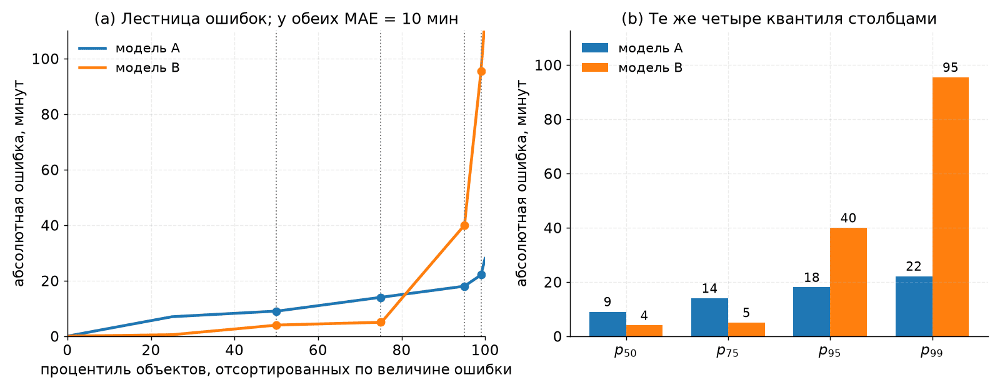
Те же две модели с теми же числами, что в таблице выше; MAE у обеих ровно 10 минут. Слева (a) — та самая лестница ошибок: по горизонтали процентиль объектов, отсортированных по величине ошибки, по вертикали — сама ошибка. Синяя кривая модели A растёт полого, оранжевая кривая модели B идёт ниже почти до 78-го процентиля, а затем уходит вертикально вверх. Справа (b) те же четыре квантиля столбцами: B точнее для большинства ($p_{50}$ — 4 против 9, $p_{75}$ — 5 против 14), но в хвосте катастрофически хуже ($p_{95}$ — 40 против 18, $p_{99}$ — 95 против 22). Одно число MAE эту разницу не показывает вовсе. Если $p_{95}$ absolute error равен 12, это значит:
у 95% объектов абсолютная ошибка не больше 12, а у оставшихся 5% ошибка больше 12.
$p_{50}$ — медианная ошибка, $p_{100}$ — максимальная ошибка.
MAE даёт одно среднее число и может скрывать хвосты распределения. В прикладных задачах часто важно понимать:
- какая типичная ошибка у большинства объектов;
- насколько плохи ошибки в худших 5% или 1% случаев;
- есть ли редкие, но очень большие промахи;
- меняется ли качество только в среднем или улучшается весь хвост ошибок.
$p_{100}$ — это максимальная абсолютная ошибка. Она полезна как сигнал о худшем случае, но очень чувствительна к выбросам, ошибкам разметки и редким аномальным объектам. Часто $p_{95}$ и $p_{99}$ стабильнее для сравнения моделей.
Квантили удобны тем, что на их языке формулируются обещания клиенту. «Мы доставим за 30 минут» — это не про среднее, а про $p_{95}$ или $p_{99}$: доля случаев, когда обещание нарушено, должна быть меньше 5% или 1%.
Поэтому в продакшене цель часто ставят прямо в квантилях: «$p_{95}$ ошибки прогноза не выше 15 минут». Оптимизировать под такую цель помогает квантильная регрессия с pinball loss — она напрямую учит модель предсказывать нужный квантиль, а не среднее.
- Квантили не заменяют MAE, а дополняют её. MAE показывает суммарную стоимость ошибок, квантили — их распределение. Смотреть надо оба.
- Хвостовые квантили требуют данных. $p_{99}$ на выборке из 200 объектов считается по двум наблюдениям, и его значение почти случайно. Как ориентир: для устойчивой оценки $p_{99}$ нужны тысячи объектов.
- Сравнивать модели надо на одной и той же выборке. Квантили зависят от состава данных ещё сильнее, чем среднее: достаточно нескольких аномальных объектов в одной из выборок, чтобы хвост уехал.
- Ошибку стоит смотреть и в относительных величинах. Промах на 12 единиц катастрофичен при таргете 20 и незаметен при 10 000. В задачах с разномасштабным таргетом полезны квантили относительной ошибки.
Что означает $p_{95}$ absolute error?
Это значение ошибки, ниже которого лежит 95% абсолютных ошибок. Если $p_{95}=10$, то 95% предсказаний ошибаются не больше чем на 10 единиц целевой переменной.
Чем медианная абсолютная ошибка отличается от MAE?
Медианная ошибка — это $p_{50}$ абсолютных ошибок. Она устойчивее к выбросам. MAE усредняет все ошибки и сильнее реагирует на редкие большие промахи.
Почему $p_{99}$ полезен в задачах с высоким риском?
Он показывает качество почти в самом хвосте распределения ошибок: насколько плохо модель ошибается в худшем 1% случаев.
Почему $p_{100}$ нестабилен?
Это максимум. Один выброс, ошибка в данных или нетипичный объект могут резко изменить $p_{100}$, даже если качество на остальных объектах не изменилось.
Как читать набор $p_{50}/p_{75}/p_{95}/p_{99}$?
Как профиль распределения ошибок: типичная ошибка, ошибка у большинства объектов и хвостовые ошибки. Чем быстрее растут квантили, тем тяжелее хвост ошибок.
Могут ли две модели с одинаковой MAE сильно различаться по качеству?
Да, и это обычная ситуация. При равной MAE одна модель может ошибаться стабильно у всех объектов, а другая — быть точнее для большинства, но катастрофически промахиваться у 1%. Различие видно только по квантилям: у второй модели $p_{50}$ ниже, а $p_{99}$ в разы выше.
Почему квантили ошибки удобны для формулировки SLA?
Обещание вида «доставим за 30 минут» — это утверждение не о среднем, а о доле нарушений: $p_{95}$ или $p_{99}$ ошибки должны укладываться в лимит. Под такую цель можно обучать модель напрямую через квантильную регрессию с pinball loss, которая предсказывает заданный квантиль, а не среднее.
Сколько данных нужно для устойчивой оценки $p_{99}$?
Тысячи объектов. На выборке из 200 наблюдений $p_{99}$ определяется буквально двумя худшими объектами, поэтому его значение почти случайно и сравнивать по нему модели нельзя.
-
Conformal prediction
Conformal prediction (конформное предсказание) — способ превратить точечный прогноз любой обученной модели в интервал (для регрессии) или множество классов (для классификации) $C(x)$ с гарантией покрытия:
$$ P\big(y_{new} \in C(x_{new})\big) \ge 1 - \alpha. $$
Здесь $\alpha$ — допустимая доля промахов, которую мы выбираем сами (например, $\alpha = 0{,}1$), а $1-\alpha$ — покрытие (coverage): доля новых объектов, у которых истинный ответ попадает в выданный интервал.
Гарантия выполняется для любой модели и любого распределения данных — нужно лишь, чтобы данные были перестановочными (exchangeable, об этом ниже).
Модель говорит «доставка займёт 35 минут», но не говорит, насколько ей верить. Conformal prediction берёт отложенные данные, смотрит, насколько сильно модель на них ошибалась, и превращает это в честную «вилку»: «от 17 до 53 минут — и такая вилка накроет правду в 90% заказов».
Модель при этом не переобучается и не меняется: вилку строят поверх уже готовых предсказаний, как надстройку.
Если вы прочитали предыдущий вопрос про квантили абсолютной ошибки, вы уже знаете почти всё. Утверждение «$p_{90}$ абсолютной ошибки равен 18» означает, что у 90% объектов ошибка не больше 18 — а значит, вилка $\hat y \pm 18$ накрывает правду у 90% объектов.
Conformal prediction — это ровно эта идея, доведённая до строгой гарантии: квантиль считается на отдельной выборке, с поправкой на её конечный размер, и из этого следует доказуемое покрытие на новых данных.
Split conformal: базовый алгоритм
- Делим данные на обучающую и калибровочную (calibration set) части. Калибровочная выборка — это отложенные данные, которые модель не видела при обучении.
- Обучаем модель $\hat f$ на обучающей части как обычно.
- На каждом из $n$ калибровочных объектов считаем оценку несоответствия (nonconformity score) — число, показывающее насколько «странен этот объект для модели»: $s_i = |y_i - \hat f(x_i)|$.
- Сортируем $s_1, \dots, s_n$ и берём $k$-ю по величине оценку, где $k = \lceil (n+1)(1-\alpha) \rceil$: это порог $\hat q$.
- Для нового объекта выдаём интервал $C(x) = [\hat f(x) - \hat q,\ \hat f(x) + \hat q]$.
- $\lceil \cdot \rceil$ — округление вверх до целого.
- $n$ — размер калибровочной выборки.
- $s_i$ — абсолютная ошибка модели на $i$-м калибровочном объекте.
- $\hat q$ — «запас», который мы добавляем к прогнозу с каждой стороны. Он один на все объекты.
То есть $\hat q$ — это почти обычный $(1-\alpha)$-квантиль ошибок, только взятый чуть «с запасом».
Модель прогнозирует время доставки. На 19 отложенных заказах её абсолютные ошибки в минутах, отсортированные по возрастанию:
$$ 1,\ 2,\ 2,\ 3,\ 3,\ 4,\ 4,\ 5,\ 5,\ 6,\ 6,\ 7,\ 8,\ 9,\ 10,\ 12,\ 14,\ 18,\ 25. $$
Хотим покрытие 90%, то есть $\alpha = 0{,}1$. Тогда $k = \lceil (19+1)\cdot 0{,}9 \rceil = 18$, и $\hat q$ — 18-я ошибка в списке: $\hat q = 18$ минут.
Новый заказ, модель говорит 35 минут. Интервал: $[35 - 18,\ 35 + 18] = [17,\ 53]$ минуты. Гарантия: в среднем по новым заказам такая вилка накроет реальное время доставки не реже чем в 90% случаев.
Слева — те же 19 калибровочных ошибок из примера, отсортированные по возрастанию. По правилу $k=\lceil (n+1)(1-\alpha)\rceil = 18$ выбирается 18-й столбец, его высота и есть порог $\hat q = 18$. Справа этот порог откладывается вверх и вниз от прогноза модели (жёлтая прямая) — получается синяя полоса. На 40 новых объектах внутрь полосы попали 36 (зелёные), мимо — 4 (красные): покрытие 90%, как и заказывали. Обычный 90-й процентиль этих 19 ошибок (
np.quantile(r, 0.9)) равен примерно 14,8 — меньше, чем 18. Интервал $\pm 14{,}8$ оказался бы слишком узким, и покрытие на новых данных было бы ниже 90%.Причина в том, что новый объект — это двадцатый участник, которого ещё нет в списке. Его ошибка может оказаться на любом из 20 мест в общем рейтинге, поэтому и считать долю надо от $n+1 = 20$, а не от 19. На больших $n$ поправка почти не заметна, на маленьких — критична.
Почему гарантия работает
Данные перестановочны, если их совместное распределение не меняется от перестановки объектов местами: порядок, в котором пришли объекты, не несёт информации. Это чуть слабее, чем привычное i.i.d. (независимые одинаково распределённые наблюдения): любая i.i.d. выборка перестановочна.
Простыми словами: калибровочные заказы и завтрашний заказ — «из одной корзины», и заранее нельзя сказать, какой из них окажется самым трудным.
Возьмём $n$ калибровочных оценок и оценку нового объекта $s_{n+1}$. Раз все $n+1$ объектов перестановочны, у $s_{n+1}$ нет причин оказаться именно самой большой: её ранг среди $n+1$ чисел распределён равномерно (при отсутствии совпадений).
Значит, вероятность того, что $s_{n+1}$ окажется не выше $k$-й по величине калибровочной оценки, равна $k/(n+1)$:
$$ P(s_{n+1} \le \hat q) = \frac{k}{n+1} = \frac{\lceil (n+1)(1-\alpha)\rceil}{n+1} \ge 1-\alpha. $$
А $s_{n+1} \le \hat q$ — это ровно то же самое, что $y_{n+1} \in [\hat f(x) - \hat q,\ \hat f(x) + \hat q]$.
Покрытие не только не ниже $1-\alpha$, но и не намного выше: если совпадающих оценок нет, то
$$ 1-\alpha \le P(y_{new} \in C(x_{new})) \le 1-\alpha + \frac{1}{n+1}. $$
То есть интервал не раздут «на всякий случай»: при $n = 1000$ покрытие будет между 90% и 90,1%.
Самое удивительное в этом методе — чего он не требует:
- модель может быть любой: линейная регрессия, бустинг, нейросеть, даже плохо обученная;
- ошибки не обязаны быть нормальными или симметричными;
- никакой байесовской априорной информации и никаких асимптотик «при $n \to \infty$».
Плохая модель не сломает гарантию — она просто даст широкие интервалы. Качество модели влияет на ширину, а не на покрытие.
import numpy as np rng = np.random.default_rng(0) X = rng.uniform(0, 10, 1000) y = 20 + 4 * X + rng.laplace(0, 7.5, 1000) # 1. Обучение, калибровка и тест — на непересекающихся частях Xtr, ytr = X[:500], y[:500] Xcal, ycal = X[500:800], y[500:800] Xte, yte = X[800:], y[800:] w, b = np.polyfit(Xtr, ytr, 1) # любая модель; здесь — прямая predict = lambda x: w * x + b # 2. Оценки несоответствия на калибровке scores = np.abs(ycal - predict(Xcal)) # 3. Порог с поправкой на конечную выборку alpha, n = 0.1, len(scores) k = int(np.ceil((n + 1) * (1 - alpha))) q_hat = np.sort(scores)[k - 1] # 4. Интервалы для новых объектов и проверка покрытия lo, hi = predict(Xte) - q_hat, predict(Xte) + q_hat coverage = np.mean((yte >= lo) & (yte <= hi)) print(f"k = {k}, q_hat = {q_hat:.1f}, покрытие на тесте = {coverage:.2f}") # k = 271, q_hat = 17.9, покрытие на тесте = 0.88Гарантия — про среднее по всем возможным калибровочным и тестовым выборкам. На одном конкретном тесте из 200 объектов покрытие флуктуирует: 176 попаданий из 200 — это 0,88, и это нормальный случайный разброс, а не нарушение гарантии.
Практический вывод: на маленьком тесте не паникуйте из-за 88% вместо 90%. Проверять покрытие имеет смысл на сотнях и тысячах объектов или усреднением по многим случайным разбиениям.
Адаптивные интервалы
Гарантия $P(y \in C(x)) \ge 1-\alpha$ — маргинальная, то есть усреднённая по всем объектам. Она ничего не обещает про конкретный объект или подгруппу: «для дорогих квартир покрытие 90%» из неё не следует.
При постоянной ширине $\pm\hat q$ это особенно заметно, если ошибка модели разная в разных областях (гетероскедастичность — разброс шума зависит от $x$): простые объекты получают лишне широкий интервал, трудные — слишком узкий.
Лечится выбором другой оценки несоответствия. Обучим вспомогательную модель $\hat\sigma(x)$, предсказывающую ожидаемую величину ошибки (например, регрессию на $|y - \hat f(x)|$), и возьмём
$$ s_i = \frac{|y_i - \hat f(x_i)|}{\hat\sigma(x_i)}, \qquad C(x) = \big[\hat f(x) - \hat q\,\hat\sigma(x),\ \hat f(x) + \hat q\,\hat\sigma(x)\big]. $$
То есть мы калибруем уже не «ошибку в минутах», а «ошибку в единицах ожидаемой ошибки». Гарантия покрытия сохраняется (это всё тот же split conformal), а ширина начинает зависеть от объекта.
Одна и та же модель на данных, где шум растёт слева направо. Слева обычная оценка $|y-\hat y|$ даёт полосу одной ширины: в среднем покрытие 90%, но в левой половине оно 98% (интервалы зря широкие), а в правой — 76% (каждый четвёртый трудный объект мимо). Справа нормированная оценка $|y-\hat y|/\hat\sigma(x)$: полоса расширяется вместе с шумом, и покрытие близко к 90% в обеих половинах. Маргинальная гарантия у обоих вариантов одна, но правый честнее по отношению к отдельным объектам. Второй популярный путь — Conformalized Quantile Regression (CQR). Обучаем две квантильные регрессии с pinball loss — на нижний квантиль $\hat q_{lo}(x)$ (например, 5%) и на верхний $\hat q_{hi}(x)$ (95%). Они уже дают адаптивную вилку, но без гарантии.
Оценка несоответствия: $s_i = \max\big(\hat q_{lo}(x_i) - y_i,\ y_i - \hat q_{hi}(x_i)\big)$ — насколько точка вылезла за вилку (отрицательна, если внутри). Итоговый интервал $[\hat q_{lo}(x) - \hat q,\ \hat q_{hi}(x) + \hat q]$: вилку раздвигают (или сужают, если $\hat q < 0$) ровно настолько, чтобы покрытие стало гарантированным.
Классификация: множества классов
Для классификации вместо интервала выдаётся множество классов. Базовая оценка несоответствия — «насколько мало модель верила в правильный класс»: $s_i = 1 - \hat p_{y_i}(x_i)$, где $\hat p_{y}(x)$ — предсказанная вероятность класса $y$.
После калибровки порога $\hat q$ тем же правилом в множество для нового объекта попадают все классы, в которые модель верит достаточно: $C(x) = \{\,y : \hat p_y(x) \ge 1 - \hat q\,\}$.
Три класса: кошка, собака, лиса. На калибровке при $\alpha = 0{,}1$ получили $\hat q = 0{,}8$, значит, в множество берём классы с $\hat p \ge 0{,}2$.
- Фото A: $\hat p = (0{,}92;\ 0{,}06;\ 0{,}02)$ → $C = \{\text{кошка}\}$. Модель уверена — ответ один.
- Фото B: $\hat p = (0{,}55;\ 0{,}35;\ 0{,}10)$ → $C = \{\text{кошка, собака}\}$. Модель сомневается — и честно говорит об этом.
Размер множества становится удобным сигналом неуверенности: объекты с 2–3 классами можно отправлять на ручную проверку.
Conformal prediction легко спутать с калибровкой вероятностей (Platt scaling, isotonic regression) — обе используют отложенную выборку. Но они решают разные задачи:
- калибровка вероятностей исправляет сами числа $\hat p$, чтобы «70%» означало 70% на практике; гарантий не даёт;
- conformal prediction не трогает $\hat p$, а строит поверх них множество с доказуемым покрытием.
Их можно комбинировать: хорошо откалиброванные вероятности дают более компактные конформные множества.
На практике
Формально гарантия работает хоть при $n = 19$, но покрытие на конкретном разбиении тем сильнее «гуляет», чем меньше $n$. При фиксированной калибровке покрытие распределено по бета-распределению с разбросом порядка $\sqrt{\alpha(1-\alpha)/n}$.
Ориентир: при $n = 1000$ и $\alpha = 0{,}1$ стандартное отклонение покрытия около 1 п.п. — этого обычно достаточно. Для $\alpha = 0{,}01$ (покрытие 99%) нужны тысячи объектов: иначе $\hat q$ определяется парой самых худших калибровочных точек.
В Python готовые реализации есть в библиотеках MAPIE (совместима со scikit-learn) и crepes; в них же — CQR, jackknife+ и cross-conformal, которые экономят данные, не откладывая отдельную калибровку.
Для временных рядов перестановочность нарушена: вчерашнее и завтрашнее не «из одной корзины». Там используют адаптивные варианты — ACI (Adaptive Conformal Inference, подкручивает $\alpha$ по мере прихода новых ошибок) и EnbPI — у которых гарантии слабее, чем у классического split conformal.
- «Посчитаю оценки на обучающей выборке». На трейне модель ошибается меньше, чем на новых данных, $\hat q$ выйдет заниженным, а покрытие — ниже обещанного. Калибровка — только на отложенных данных.
- «Интервал 90% значит, что для этого объекта $y$ в нём с вероятностью 90%». Нет: гарантия маргинальная, в среднем по объектам. Для отдельных подгрупп покрытие может быть и 75%.
- «Гарантия есть всегда». Только при перестановочности. Дрейф данных, сезонность, калибровка на прошлогодних данных — и покрытие в продакшене уплывает. Его надо мониторить так же, как метрики модели.
- «Возьму обычный квантиль без $n+1$». На малых калибровочных выборках это систематически недокрывает.
Что гарантирует conformal prediction?
Что выданный интервал или множество классов накрывает истинный ответ нового объекта с вероятностью не ниже $1-\alpha$ — для любой модели и любого распределения данных, если данные перестановочны. Гарантия маргинальная: усреднённая по объектам.
Как устроен split conformal для регрессии?
Модель обучается на одной части данных. На отложенной калибровочной части считаются абсолютные ошибки $s_i = |y_i - \hat f(x_i)|$, из них берётся $\lceil (n+1)(1-\alpha)\rceil$-я по величине — это $\hat q$. Интервал для нового объекта — $\hat f(x) \pm \hat q$.
Зачем в формуле $n+1$?
Новый объект — это $(n+1)$-й участник рейтинга ошибок, и его ранг равновероятен среди $n+1$ мест. Поправка делает порог чуть консервативнее обычного квантиля и даёт точную конечновыборочную гарантию; без неё на малых $n$ покрытие систематически ниже заявленного.
Что будет, если модель плохая?
Гарантия покрытия сохранится, но интервалы станут широкими. Качество модели влияет на ширину интервалов (информативность), а не на их надёжность.
Чем маргинальное покрытие отличается от условного и как приблизиться к условному?
Маргинальное — в среднем по всем объектам, условное — для каждого $x$ или подгруппы. При постоянной ширине простые объекты получают лишне широкие интервалы, трудные — слишком узкие. Приблизиться к условному помогают адаптивные оценки: нормировка на $\hat\sigma(x)$ или CQR поверх квантильной регрессии.
Как conformal prediction работает для классификации?
Оценка несоответствия — $1 - \hat p_{y}(x)$ для истинного класса. После калибровки порога в множество для нового объекта попадают все классы с $\hat p_y(x) \ge 1 - \hat q$. Размер множества служит мерой неуверенности модели.
Когда гарантия ломается?
Когда нарушена перестановочность: дрейф данных, временные ряды, калибровка на данных из другого периода или другой популяции. Также — если калибровать на обучающей выборке. В таких случаях покрытие надо мониторить, а для рядов использовать адаптивные варианты вроде ACI.
-
$D^2$ score
$D^2$ score — обобщение идеи $R^2$ на разные функции потерь. Метрика показывает, насколько модель лучше константного базового предсказания.
Общий вид:
$$ D^2 = 1 - \frac{\text{ошибка модели}}{\text{ошибка базовой модели}}. $$
Если совсем простыми словами: это ответ на вопрос «а насколько мы лучше, чем если бы вообще не строили модель?». Сама по себе ошибка ни о чём не говорит: MAE в 5000 рублей — это много или мало? Смотря с чем сравнивать. $D^2$ и делает это сравнение — с самым тупым решением, которое всегда выдаёт одну и ту же константу.
Предсказываем стоимость доставки. Обучили модель, получили MAE = 40 рублей.
Хорошо это или плохо? Считаем базовую модель: если всегда предсказывать медиану (например, 300 рублей), MAE составит 100 рублей.
$$D^2 = 1 - \frac{40}{100} = 0.6$$
То есть модель срезала 60% ошибки наивного решения. Теперь у числа появился смысл, которого не было у «MAE = 40».
А если бы MAE модели оказалась равна 95 рублям, то $D^2 = 0.05$: формально модель лучше константы, но выигрыш в 5% вряд ли оправдает её поддержку в продакшене.
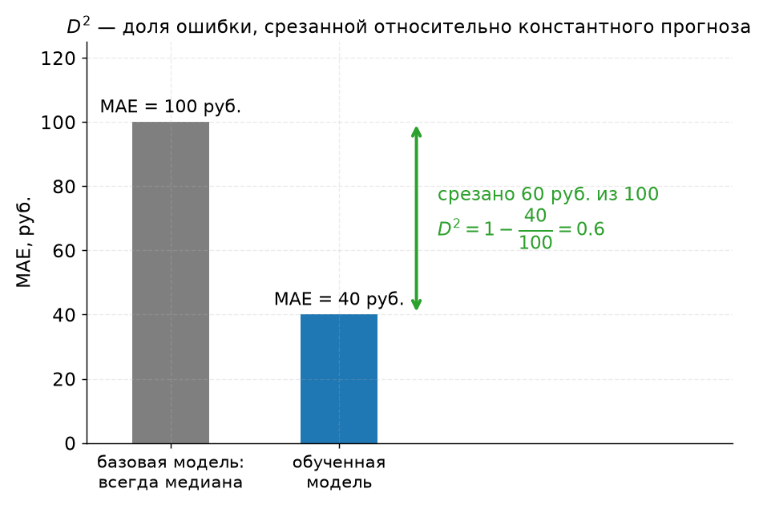
Тот же пример в столбцах. Серый — базовая модель, которая всегда называет медиану 300 рублей и ошибается в среднем на 100 рублей. Синий — обученная модель с MAE 40 рублей. Зелёная стрелка показывает разницу: модель срезала 60 рублей из ста, то есть $D^2 = 1 - 40/100 = 0.6$. Само по себе значение MAE = 40 не говорит ни о чём — смысл появляется только в сравнении с высотой серого столбца, и именно поэтому baseline стоит в знаменателе. Может показаться, что baseline выбран произвольно, но константа тут не случайна: это оптимальный ответ для того, кто не видит признаков. Не имея никакой информации об объекте, лучшее, что можно сделать, — всегда называть одно и то же число.
Причём константа выбирается под ту же функцию потерь, которую мы измеряем: для MSE оптимальная константа — среднее, для MAE — медиана, для pinball loss — соответствующий квантиль. Поэтому $D^2$ честно показывает вклад именно признаков: всё, что модель даёт сверх baseline, получено из знания об объекте.
Классический $R^2$ — частный случай этой идеи для квадратичной ошибки:
$$ R^2 = 1 - \frac{\sum_i (y_i - \hat{y}_i)^2}{\sum_i (y_i - \bar{y})^2}. $$
В знаменателе стоит ошибка константной модели, которая всегда предсказывает среднее $\bar{y}$.
- $D^2 = 1$ — идеальная модель.
- $D^2 = 0$ — модель не лучше базового константного предсказания.
- $D^2 < 0$ — модель хуже базового предсказания.
Главная идея: метрика оценивает не абсолютный размер ошибки, а выигрыш относительно простого baseline.
В sklearn есть несколько вариантов $D^2$ для разных функций потерь:
d2_absolute_error_score— аналог $D^2$ для абсолютной ошибки;d2_pinball_score— для квантильной регрессии и pinball loss;d2_tweedie_score— для Tweedie deviance.
Это удобно, когда MSE не соответствует бизнес-смыслу задачи.
- $D^2 < 0$ — это не «плохая метрика», а сигнал тревоги. Модель хуже константы обычно означает утечку наоборот, сдвиг распределения между train и test, ошибку в разбиении или неверно выбранную функцию потерь. Стоит идти разбираться, а не тюнить гиперпараметры.
- Метрика зависит от разброса таргета. На выборке, где целевая переменная почти постоянна, знаменатель мал, и получить высокий $D^2$ трудно даже хорошей модели. Сравнивать значения $D^2$ между разными датасетами нельзя.
- Функция потерь должна совпадать с бизнес-смыслом.
d2_absolute_error_scoreустойчив к выбросам,d2_pinball_scoreподходит, когда занижение и завышение стоят по-разному (например, прогноз спроса на складе). Брать $R^2$ по привычке, когда бизнес считает потери в абсолютных рублях, — распространённая ошибка.
Что измеряет $D^2$?
Насколько модель уменьшает выбранную ошибку по сравнению с простой базовой моделью, которая делает константное предсказание.
Чем $D^2$ отличается от $R^2$?
$R^2$ привязан к квадратичной ошибке. $D^2$ обобщает ту же идею на другие функции потерь: абсолютную ошибку, pinball loss, Tweedie deviance.
Что значит $D^2 < 0$?
Модель хуже базового константного предсказания. Это сильный сигнал, что модель, признаки, разбиение данных или метрика выбраны плохо.
Почему нужен baseline в знаменателе?
Без baseline непонятно, хороша ли ошибка модели. $D^2$ показывает относительный выигрыш: насколько мы лучше наивного решения.
В каких задачах $D^2$ удобнее $R^2$?
Когда качество измеряется не MSE: например, при устойчивой к выбросам абсолютной ошибке, квантильной регрессии или задачах со специальным распределением целевой переменной.
Почему в качестве базовой модели берут именно константу и какую?
Константа — оптимальный ответ для того, кто не видит признаков объекта, поэтому сравнение с ней показывает вклад именно признаков. Константа выбирается под ту же функцию потерь: для MSE это среднее, для MAE — медиана, для pinball loss — соответствующий квантиль.
Можно ли сравнивать $D^2$ между разными датасетами?
Нет. В знаменателе стоит ошибка константного предсказания, которая зависит от разброса целевой переменной. На выборке с почти постоянным таргетом знаменатель мал, и высокий $D^2$ недостижим даже для хорошей модели, а на выборке с большим разбросом он достигается легко.
-
Кросс-валидация — это процедура для оценки качества работы модели, которая широко применяется в машинном обучении. Она помогает сравнить между собой различные модели и выбрать наилучшую для конкретной задачи.
Если совсем простыми словами: это способ проверить модель на данных, которых она не видела, — и убедиться, что результат не случайность. Проверить один раз мало: повезло с разбиением, и цифра получится красивой без всяких заслуг модели.
Проверять модель на тех же данных, на которых она училась, бессмысленно.
Любая достаточно гибкая модель может просто запомнить обучающую выборку и показать нулевую ошибку — дерево без ограничений делает это всегда. Такой результат ничего не говорит о том, как модель поведёт себя с новым клиентом, письмом или снимком.
Отсюда единственное реально важное правило всей темы валидации: оценивать качество нужно на данных, которые модель не видела при обучении. Всё остальное — hold-out, k-Fold, стратификация, группировка, временные сплиты — лишь разные способы честно организовать эту проверку в конкретных условиях.
Hold-out — простое разделение на train и test.
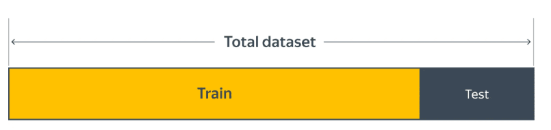
Hold-out Чтобы оценить модель, вы обучаете её на тренировочном множестве, а результаты измеряете на тестовом. У
sklearnпо дефолту выставлен параметрshuffle=True, то есть перед разделением на тренировочное и тестовое множества происходит перемешивание семплов (и для воспроизводимости такого разбиения нужно фиксироватьrandom_state).Если у вас достаточно данных, лучше всегда предусматривать также валидационное множество.
- Hold-out — одно разбиение. Быстро; годится, когда данных много (десятки тысяч и больше).
- k-Fold — $k$ разбиений с усреднением. Стандарт, когда данных мало или нужна оценка разброса.
- StratifiedKFold — то же, но с сохранением пропорций классов. Обязателен при дисбалансе.
- GroupKFold — не разрывает связанные объекты (снимки одного пациента, заказы одного клиента).
- TimeSeriesSplit — тест всегда лежит после обучения по времени. Единственный корректный вариант для временных рядов.
- Leave-One-Out — предельный случай $k = n$. Для очень маленьких выборок.
Выбор определяется структурой данных, а не привычкой: сначала спросите себя, есть ли в данных время, группы и дисбаланс, — и схема выберется почти однозначно.
Если мы перебираем какие-то модели для нашей задачи, то оптимизировать их качества стоит на валидационном множестве, а окончательное сравнение моделей проводить на тестовом множестве. Оптимизация качеств модели может включать в себя подбор гиперпараметров, подбор архитектуры (в случае нейросетей) или подбор оптимального трешхолда для максимизации значений целевой метрики (например, вы делаете двуклассовую классификацию, а модель выдаёт непрерывные значения от $0$ до $1$, которые нужно бинаризовать так, чтобы получить максимальный скор по $F_1$) и так далее.
Для окончательного применения найденную лучшую модель можно обучить на всех имеющихся данных. Правда, не сможем оценить качество получившейся модели, так как у нас уже не будет тестового множества. Чтобы примерно оценить, как будет вести себя модель при добавлении новых данных, мы можем построить кривые обучения: графики качества модели на трейне и на тесте в зависимости от числа поданных семплов на вход.
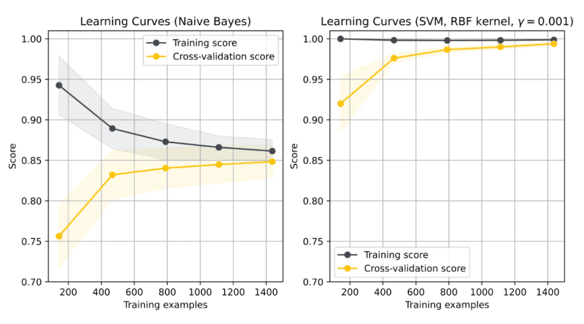
Графики качества модели на трейне и на тесте в зависимости от числа поданных семплов на вход - Предобработка до разбиения. Scaler, imputer, отбор признаков и target encoding, обученные на всех данных, дают утечку. Всё это должно жить внутри
Pipeline. - Перемешивание временных данных.
shuffle=Trueдля временного ряда означает обучение на будущем — оценка станет фантастической и бесполезной. - Игнорирование групп. Объекты одного пациента или клиента в разных частях — модель узнаёт объект «в лицо».
- Сравнение моделей по одному фолду. Смотреть надо на среднее и разброс: разница в 0.5% при разбросе в 3% ничего не значит.
- Многократное использование теста. Каждое решение, принятое по тестовой метрике, превращает её в валидационную.
Зачем нужна кросс-валидация и чем она лучше одного hold-out разбиения?
Кросс-валидация даёт более надёжную оценку качества модели: использует данные полностью, уменьшает зависимость оценки от конкретного разбиения. Hold-out может дать завышенную или заниженную оценку при случайно "удачном" или "неудачном" разбиении.
Чем отличается роль валидационной и тестовой выборки?
Валидационная — для подбора гиперпараметров, выбора архитектуры и оптимизации порогов в процессе разработки. Тестовая — финальная оценка лучшей модели, используется только один раз для честного измерения.
Почему перед разбиением данные нужно перемешивать?
Данные могут быть упорядочены (по времени, классу, источнику). Без перемешивания train и test имеют разное распределение, что искажает оценку качества.
sklearnпо умолчанию перемешивает приshuffle=True.Что показывают кривые обучения (learning curves)?
Графики качества на train и validation в зависимости от объёма обучающих данных. Если кривые расходятся — переобучение, если обе высоко — хороший баланс. Помогают понять, нужно ли больше данных или менять архитектуру.
Почему нельзя оценивать модель на обучающих данных?
Достаточно гибкая модель способна просто запомнить обучающую выборку: дерево без ограничений всегда достигает нулевой ошибки на train. Такая оценка измеряет объём памяти модели, а не её способность обобщать на новые объекты.
Как выбрать схему валидации под конкретные данные?
По структуре данных: есть временная зависимость —
TimeSeriesSplit; есть связанные объекты (пациенты, клиенты) —GroupKFold; есть дисбаланс классов —StratifiedKFold; данных очень мало — k-Fold с большим $k$ или LOO; данных много — достаточно hold-out. Требования комбинируются, напримерStratifiedGroupKFold.Что делать с моделью после того, как валидация завершена?
Финальную модель обучают на всех доступных данных с уже выбранными гиперпараметрами — больше данных обычно означает лучшее качество. Оценкой её качества служит результат, полученный на этапе валидации; повторно измерить его уже не на чем, а поведение при росте объёма данных можно оценить по кривым обучения.
-
Стратификация — разбиение выборки на части с сохранением пропорций классов: каждый класс делится между train и test отдельно, в одной и той же пропорции.
Если совсем простыми словами: вместо того чтобы черпать данные наугад одним ковшом, мы отмеряем от каждого класса поровну. Тогда любая часть оказывается уменьшенной копией всей выборки, а не случайным перекосом.
При простом случайном разделении на тренировочное и тестовое множества (как в примерах выше) может случиться так, что их распределения окажутся не такими, как у всего исходного множества.
Причина чисто статистическая: случайная выборка воспроизводит исходные пропорции лишь приблизительно, и разброс тем больше, чем меньше объектов. При 50 объектах в тесте отклонение в несколько процентных пунктов — обычное дело, а при редком классе отклонение может оказаться катастрофическим.
Проиллюстрируем такую ситуацию на примере случайного разбиения датасета Iris на трейн и тест. Распределение классов в данном датасете равномерное:
- 33.3% Setosa
- 33.3% Versicolor
- 33.3% Virginica
Случайное разбиение, в котором две трети цветов (100) отправились в трейн, а оставшаяся треть (50) отправилась в тест, может выглядеть, например, так:
- трейн: 38 $\times$ Setosa, 28 $\times$ Versicolor, 34 $\times$ Virginica (распределение $38\%:28\%:34\%$)
- тест: 12 $\times$ Setosa, 22 $\times$ Versicolor, 16 $\times$ Virginica (распределение $24\%:44\%:32\%$)
Если распределение цветов в исходном датасете отражает то, что в природе они встречаются одинаково часто, то мы только что получили два новых датасета, не соответствующих распределению цветов в природе. Распределения обоих датасетов вышли не только несбалансированными, но ещё и разными: самый частый класс в трейне соответствует наименее частому классу в тесте.
На помощь в такой ситуации может прийти стратификация: разбиение на трейн и тест, сохраняющее соотношение классов, представленное в исходном датасете. В библиотеке sklearn такое разбиение можно получить с помощью параметра
stratify.В целом на достаточно больших датасетах (порядка хотя бы 10 тысяч семплов) со сбалансированными классами можно не очень сильно беспокоиться об описанной выше проблеме и использовать обычный
random split. Но если у нас очень несбалансированные данные, в которых один класс встречается сильно чаще другого (как, например, в задачах фильтрации спама или сегментации осадков на спутниковых снимках), стратификация может довольно сильно помочь.Мошеннических транзакций в выборке 0.5%: на 10 000 объектов их 50. Отдаём 20% под тест.
Ожидаемое число мошенничеств в тесте — 10. Но это лишь среднее: реально может выпасть 4, а может 17. Что это означает:
- при 4 мошенничествах в тесте recall принимает всего пять возможных значений — 0, 0.25, 0.5, 0.75 или 1. Разница между «хорошей» и «плохой» моделью составляет один объект;
- ROC-AUC и precision тоже считаются по горстке наблюдений и скачут от разбиения к разбиению;
- сравнивать две модели по такой метрике невозможно — разница утонет в случайности состава теста.
Стратификация не увеличивает число редких объектов, но гарантирует их стабильное количество в каждой части и делает метрики сопоставимыми между экспериментами.
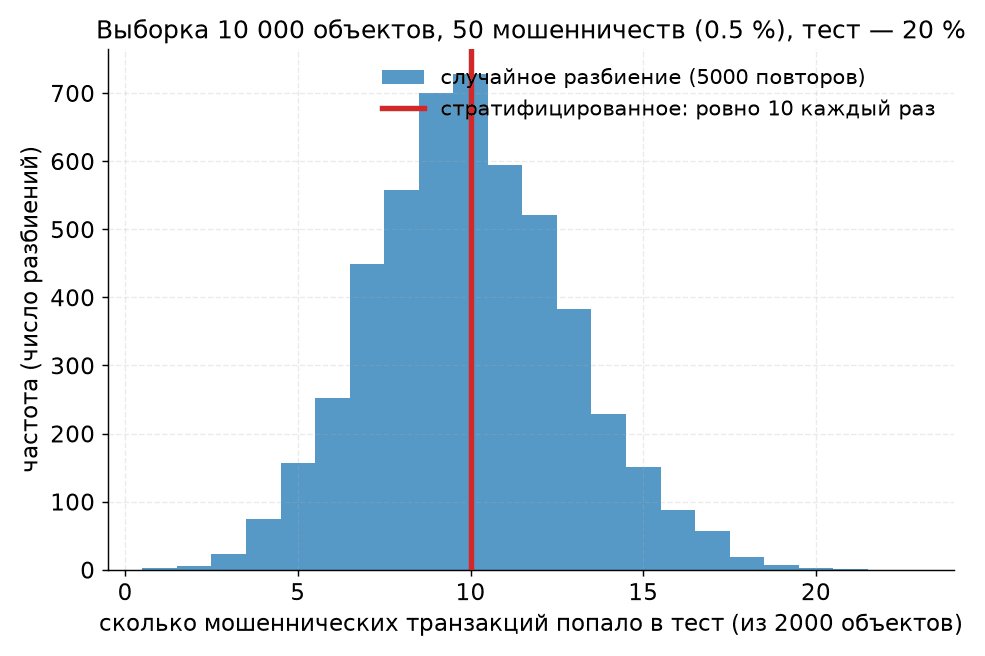
Выборка 10 000 объектов, мошеннических 50 (0.5 %), тест — 20 %. Синяя гистограмма показывает, сколько мошенничеств попадало в тест в каждом из 5000 случайных разбиений: в среднем 10, но реально от 1 до 21, причём примерно в 5 % разбиений их пять или меньше. Красная вертикаль — стратифицированное разбиение, которое даёт ровно 10 каждый раз. Recall, посчитанный по четырём объектам, принимает всего пять возможных значений, поэтому сравнивать модели по такой метрике невозможно. Приём шире, чем кажется: стратифицировать можно по любому признаку, дисбаланс которого способен испортить оценку.
- Регрессия — по бинам целевой переменной (например, по квантилям), чтобы в одну часть не ушли все дорогие объекты.
- Важный сегмент — по региону, каналу привлечения или типу устройства, если нужно, чтобы каждый сегмент был представлен в тесте.
- Комбинация — по паре «класс + сегмент», если важно и то и другое.
В
sklearnэто делается всё тем жеstratify=, куда передаётся любая колонка, а не обязательноy.- Не заменяет борьбу с дисбалансом. Она лишь сохраняет пропорции; если редкого класса 0.5%, он таким и останется во всех частях. Обучение по-прежнему требует весов классов, подбора порога или oversampling.
- Конфликтует с группировкой. Если объекты связаны (пациенты, клиенты), важнее не разорвать группы, чем сохранить пропорции. Для обоих требований есть
StratifiedGroupKFold. - Неприменима к временным рядам. Там порядок разбиения диктуется временем, а не составом классов.
- Не работает при слишком редких классах. Если класс встречается 3 раза,
stratifyфизически не сможет разложить его по 5 фолдам — такие классы объединяют или обрабатывают отдельно.
Что такое стратификация и зачем она нужна?
Стратификация — разбиение данных на трейн/тест с сохранением пропорций классов из исходного датасета. Без неё случайное разбиение может дать несбалансированные подвыборки с другим распределением классов.
Когда стратификация критически важна?
При сильном дисбалансе классов: если один класс составляет 1% данных, случайное разбиение может не включить его в тест или трейн вовсе. Стратификация гарантирует присутствие каждого класса в нужной пропорции.
Как включить стратификацию в sklearn?
train_test_split(X, y, stratify=y)— параметрstratifyзадаёт переменную, по которой балансируются подвыборки. В k-Fold используетсяStratifiedKFold.Когда стратификация не нужна?
При большом сбалансированном датасете (от ~10 000 объектов с равномерным распределением классов) — статистически случайное разбиение и так даст близкое к исходному распределение.
Почему при редком классе метрики на нестратифицированном тесте почти бесполезны?
Если в тест попало всего 4 объекта редкого класса, recall может принимать лишь пять значений (0, 0.25, 0.5, 0.75, 1), и разница между моделями сводится к одному объекту. Метрика скачет от разбиения к разбиению, и сравнение моделей становится невозможным.
По чему ещё можно стратифицировать, кроме класса?
По бинам целевой переменной в регрессии (чтобы дорогие объекты не ушли в одну часть), по важному сегменту — региону, каналу, типу устройства, — или по комбинации класса и сегмента. В
sklearnвstratify=передаётся любая колонка, не обязательноy.Решает ли стратификация проблему дисбаланса классов?
Нет. Она сохраняет исходные пропорции, но не меняет их: класс, составляющий 0.5%, останется таким во всех частях. Для обучения по-прежнему нужны веса классов, подбор порога или oversampling — стратификация лишь делает оценку корректной и воспроизводимой.
-
Метод k-Fold чаще всего имеют в виду, когда говорят о кросс-валидации. Он является обобщением метода hold-out и представляет из себя следующий алгоритм:
- Фиксируется некоторое целое число $k$ (обычно от 5 до 10), меньшее числа семплов в датасете.
- Датасет разбивается на $k$ одинаковых частей (в последней части может быть меньше семплов, чем в остальных). Эти части называются фолдами.
- Далее происходит $k$ итераций, во время каждой из которых один фолд выступает в роли тестового множества, а объединение остальных — в роли тренировочного. Модель учится на $k-1$ фолде и тестируется на оставшемся.
- Финальный скор модели получается либо усреднением $k$ получившихся тестовых результатов, либо измеряется на отложенном тестовом множестве, не участвовавшем в кросс-валидации.
Если совсем простыми словами: каждый объект по очереди успевает побывать и в обучении, и в проверке. Мы не гадаем, повезло ли нам с разбиением, а прогоняем все $k$ вариантов и смотрим на среднее.
Проблема hold-out (простого разбиения на train/test) в том, что оценка получается лотереей. Отложили 20% данных, получили accuracy 0.86. Взяли другое случайное разбиение — получили 0.81. Какое из чисел правда?
При 200 объектах в тесте разброс между разбиениями легко достигает нескольких процентов, и по такой оценке нельзя сравнивать две модели, отличающиеся на 1%: разница потонет в шуме разбиения.
k-Fold решает это двумя способами:
- усредняет результат по $k$ разбиениям, снижая случайность;
- даёт стандартное отклонение по фолдам — меру доверия к оценке. Результат «$0.84 \pm 0.01$» и «$0.84 \pm 0.07$» означают совершенно разную степень уверенности, и без кросс-валидации второе число вы попросту не увидите.
k-Fold: данные делятся на $k$ частей, каждая по очереди становится валидацией, остальные --- обучением; в итоге каждый объект побывал в валидации ровно один раз, а метрики усредняются. Для временных рядов валидация берётся только из будущего относительно обучения, иначе модель <<подглядывает>>. Что выбрать
Выбирать, какой способ лучше, нужно в зависимости от конкретной задачи и имеющихся вычислительных возможностей. Ориентир простой: чем меньше данных, тем нужнее кросс-валидация.
- Мало данных (сотни–тысячи объектов) — hold-out слишком шумный, берите k-Fold.
- Много данных (сотни тысяч и больше) — тестовая выборка и так велика, оценка устойчива, и $k$-кратное обучение не окупается.
- Обучение очень дорогое (большая нейросеть, дни на GPU) — k-Fold непрактичен независимо от размера данных.
- $k = 5$ — стандарт по умолчанию: обучение на 80% данных, всего 5 запусков.
- $k = 10$ — когда данных мало и хочется, чтобы модель училась на 90% выборки.
- Больше $k$ означает больше данных для обучения (меньше смещение оценки), но и больше запусков, а сами обученные модели становятся всё более похожими друг на друга — оценка не становится надёжнее пропорционально затратам.
- Временные ряды. Случайное разбиение позволит модели учиться на будущем и предсказывать прошлое — оценка окажется фантастически завышенной. Нужен
TimeSeriesSplit, где тест всегда лежит после обучения по времени. - Связанные объекты. Несколько снимков одного пациента, несколько заказов одного клиента, несколько кадров из одного видео. Если они разъедутся между фолдами, модель узнает объект «в лицо». Нужен
GroupKFold. - Дисбаланс классов. Обычный k-Fold может оставить фолд без объектов редкого класса — нужен
StratifiedKFold. - Препроцессинг до разбиения.
StandardScaler, отбор признаков, кодирование категорий, обученные на всех данных сразу, дают утечку. Всё это должно быть внутриPipeline, который переобучается на каждом фолде заново.
Метод k-Fold даёт более надёжную оценку качества модели, чем hold-out, так как обучение и тест модели происходят на разных подмножествах исходного датасета. Однако проведение $k$ итераций обучения и теста может быть вычислительно затратным, и поэтому метод обычно применяют либо когда данных достаточно мало, либо при наличии большого количества вычислительных ресурсов, позволяющих проводить все $k$ итераций параллельно.
В реальных задачах данных зачастую достаточно много для того, чтобы hold-out давал хорошую оценку качества модели, поэтому
k-Foldв больших задачах применяется не очень часто.Как работает k-Fold кросс-валидация?
Датасет делится на $k$ равных частей (фолдов). Проводится $k$ итераций: на каждой один фолд — тест, остальные $k-1$ — обучение. Финальный скор — среднее по $k$ тестовым результатам.
Чем k-Fold лучше hold-out?
k-Fold даёт более надёжную оценку: каждый объект побывает в тестовом множестве ровно один раз, оценка менее зависит от случайного разбиения. Hold-out может дать смещённую оценку при небольшом датасете.
Когда k-Fold применять нецелесообразно?
При больших датасетах, где hold-out уже даёт устойчивую оценку, — k итераций обучения вычислительно избыточны. Также при очень долгом обучении (большие нейросети) k-Fold непрактичен.
Какое $k$ обычно выбирают и почему?
Обычно $k = 5$ или $k = 10$. При $k=5$ — 5 итераций, разумный баланс дисперсии и вычислительной стоимости. При $k = n$ (leave-one-out) — максимальная надёжность, но $n$ итераций обучения — дорого.
Что даёт стандартное отклонение метрики по фолдам?
Меру доверия к оценке. Результаты $0.84 \pm 0.01$ и $0.84 \pm 0.07$ означают совершенно разную степень уверенности: во втором случае разница между двумя моделями в 1–2% ничего не значит, она тонет в разбросе разбиений. При hold-out этого числа попросту нет.
Почему обычный k-Fold нельзя применять к временным рядам?
Случайное разбиение помещает будущие наблюдения в обучение, а прошлые — в тест, и модель предсказывает прошлое, зная будущее. Оценка получается сильно завышенной и не имеет отношения к реальному применению. Нужен
TimeSeriesSplit, где тестовый фолд всегда идёт после обучающего по времени.Почему препроцессинг должен быть внутри пайплайна, а не до кросс-валидации?
Если
StandardScaler, отбор признаков или target encoding обучены на всех данных сразу, статистики тестового фолда просачиваются в обучение — оценка становится завышенной. Правильно обернуть все шаги вPipeline, который на каждом фолде переобучается только на его обучающей части.
-
Метод leave-one-out (LOO) — частный случай метода k-Fold: в нём каждый фолд состоит ровно из одного семпла. То есть $k = n$, где $n$ — число объектов в выборке.
Если совсем простыми словами: по очереди прячем один объект, учимся на всех остальных и проверяемся на спрятанном. Повторяем ровно столько раз, сколько у нас объектов, и усредняем результат.
Пусть в датасете 50 пациентов, и нужно оценить качество модели.
- LOO: обучаем модель 50 раз. В первый раз — на пациентах 2–50, проверяем на первом. Во второй — на 1 и 3–50, проверяем на втором. И так далее. Итоговая метрика — среднее по 50 проверкам, в каждой из которых тест состоял ровно из одного человека.
- 5-fold: обучаем 5 раз на 40 пациентах, проверяя каждый раз на 10.
Разница ощутима: LOO обучает модель на 49 объектах из 50 (98% данных), а 5-fold — на 80%. Зато LOO требует 50 обучений вместо 5.
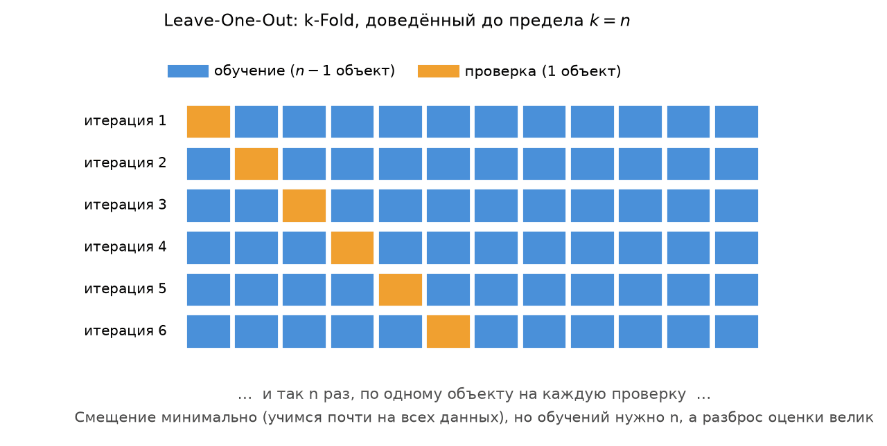
Каждая строка — одна итерация, каждый прямоугольник — один объект выборки. Оранжевый объект уходит в проверку, все остальные синие идут в обучение, а на следующей итерации оранжевым становится следующий по счёту. Итераций ровно столько, сколько объектов. Отсюда обе особенности метода: обучающая выборка почти совпадает с полной, поэтому смещение оценки минимально, но обучений нужно $n$, а сами модели почти неотличимы друг от друга, из-за чего усреднение плохо гасит разброс. У любой оценки качества есть две беды — систематическая ошибка (смещение) и нестабильность (дисперсия). LOO ведёт себя по ним прямо противоположно:
- Смещение минимально. Обучающая выборка почти совпадает с полной ($n-1$ против $n$), поэтому LOO оценивает качество той самой модели, которую вы обучите на всех данных. А 5-fold оценивает модель, обученную на 80% данных — на маленьких выборках она объективно слабее, и оценка получается пессимистичной.
- Дисперсия велика. Модели, обученные на $n-1$ объектах, почти неотличимы друг от друга — их ошибки сильно скоррелированы, и усреднение по 50 почти одинаковым моделям снижает разброс куда хуже, чем усреднение по 5 разным. Плюс каждая отдельная проверка — это один объект: ответ либо верный, либо нет, ничего промежуточного.
Практический вывод: LOO — про «выжать максимум из крошечной выборки», а не про «получить самую надёжную оценку».
- Дорого. $n$ обучений вместо $k$. При $n = 100\,000$ это неприменимо в принципе — кроме моделей, где LOO считается аналитически (гребневая регрессия, kNN).
- Ломается на несбалансированных классах. Тестовый фолд из одного объекта нельзя стратифицировать. Метрики вроде ROC-AUC или F1 на одном объекте попросту не определены — усреднять придётся долю верных ответов, что подходит не всякой задаче.
- Не спасает от утечки при связанных данных. Если у одного пациента несколько снимков, спрятав один снимок, вы оставите остальные его же снимки в обучении — оценка получится завышенной. Здесь нужен group-based split, а не LOO.
Главный аргумент против LOO — стоимость $n$ обучений. Но для некоторых моделей она обходится:
- Гребневая регрессия. Существует аналитическая формула LOO-ошибки, использующая матрицу шляпы (hat matrix): результат считается за одно обучение на всей выборке. Это делает LOO для линейных моделей практичным даже на больших выборках.
- kNN. Достаточно при предсказании для объекта исключить его самого из числа соседей — переобучать нечего, ведь обучение сводится к запоминанию выборки.
- Модели с out-of-bag оценкой. У Random Forest есть OOB-оценка, идейно близкая к LOO и бесплатная: каждый объект оценивается деревьями, которые его не видели.
Для всего остального — нейросетей, бустингов, ансамблей — LOO остаётся непозволительной роскошью, и берут $k$-Fold с $k = 5$ или $10$.
Что такое Leave-One-Out и как он связан с k-Fold?
LOO — частный случай k-Fold при $k = n$ (число фолдов равно числу объектов). На каждой итерации модель обучается на $n-1$ объектах и тестируется на одном оставшемся.
В чём преимущество и недостаток LOO перед k-Fold?
Преимущество: максимально полно использует данные для обучения, минимальное смещение оценки. Недостаток: требует $n$ итераций обучения — вычислительно очень дорого при большом $n$.
Когда LOO оправдан?
При очень малом датасете, где каждый объект ценен и обычный k-Fold с $k=5$ оставил бы слишком мало данных для обучения. В остальных случаях предпочтителен k-Fold.
Почему у LOO низкое смещение, но высокая дисперсия оценки?
Смещение мало, потому что модель обучается на $n-1$ объектах — практически на всей выборке, то есть оценивается почти та самая модель, которая пойдёт в продакшен. Дисперсия велика, потому что $n$ обученных моделей почти идентичны, их ошибки сильно скоррелированы, и усреднение снижает разброс хуже, чем при $k=5$.
Почему LOO плохо сочетается с несбалансированными классами и метриками вроде ROC-AUC?
Тестовый фолд состоит из одного объекта, поэтому стратификация невозможна, а метрики, требующие обоих классов (ROC-AUC, F1, precision/recall), на одном объекте не определены. Остаётся усреднять долю правильных ответов, что подходит не для каждой задачи.
-
Метод stratified k-Fold — это метод k-Fold, использующий стратификацию при разбиении на фолды: каждый фолд содержит примерно такое же соотношение классов, как и всё исходное множество. Такой подход может потребоваться в случае, например, очень несбалансированного соотношения классов, когда при обычном random split некоторые фолды могут либо вообще не содержать семплов каких-то классов, либо содержать их слишком мало.
Если совсем простыми словами: разбиваем не всю выборку целиком, а каждый класс по отдельности, и уже из этих частей собираем фолды. Тогда в любом фолде доля классов такая же, как во всём датасете.
Датасет из 1000 транзакций, из них 20 мошеннических (2%). Делаем 5 фолдов по 200 транзакций.
- Обычный K-Fold режет перемешанную выборку подряд. В среднем в фолд попадёт 4 мошенника, но разброс огромен: вполне реально получить фолд с одним мошенником и фолд с восемью. А фолд, где мошенников нет вовсе, — это катастрофа: ROC-AUC на нём не определён (нет положительного класса), recall равен нулю на пустом месте, и сравнивать фолды между собой уже нельзя.
- Stratified K-Fold сначала делит на две группы — 980 честных и 20 мошенников, — а потом каждую раскладывает по пяти фолдам. В каждом фолде оказывается ровно 4 мошенника и 196 честных транзакций, то есть те же 2%.
Разница видна и в цифрах: у обычного K-Fold метрики по фолдам скачут, и «стандартное отклонение по фолдам» отражает не нестабильность модели, а случайность разбиения.
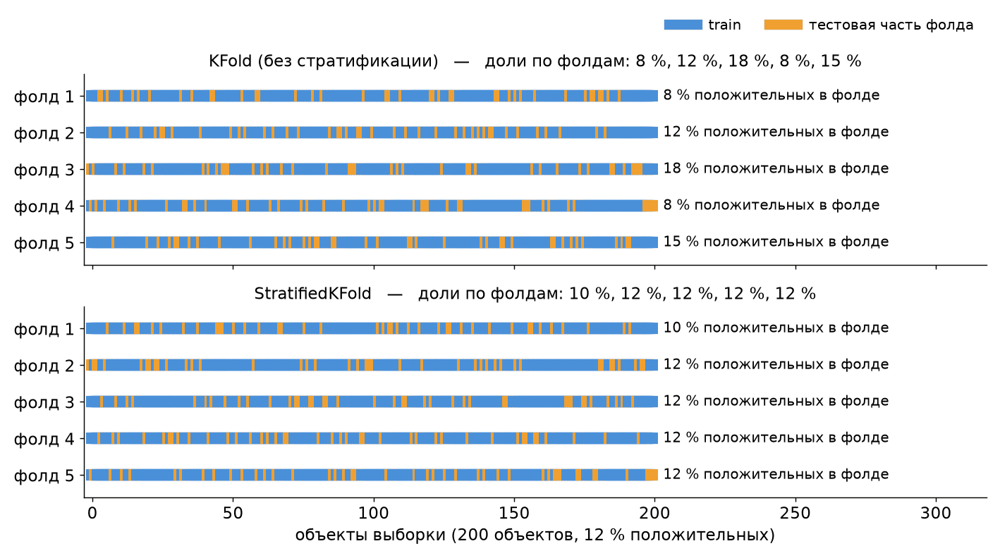
Выборка из 200 объектов, положительных 12 %. Оранжевым отмечена тестовая часть каждого фолда, синим — обучающая. Сверху обычный KFold: доля положительных гуляет по фолдам от 8 % до 18 %, то есть в одном фолде их вдвое с лишним больше, чем в другом. Снизу StratifiedKFold: доли 10–12 %, и остаточный разброс возникает лишь потому, что 24 объекта не делятся на 5 частей нацело. Во втором случае разброс метрик между фолдами отражает нестабильность модели, а в первом — ещё и случайность разбиения. Кросс-валидация нужна, чтобы оценить качество модели, а не удачливость разбиения. Каждый фолд должен быть маленькой копией всей выборки — иначе меняется сама задача, которую модель решает на каждой итерации.
- Если в обучающей части фолда редкого класса меньше обычного, модель обучается на другом соотношении классов и склоняется к мажоритарному сильнее, чем следует.
- Если его меньше в тестовой части, метрика считается по нескольким объектам и становится крайне шумной: один неверный ответ меняет recall на десятки процентов.
- Оба эффекта складываются и дают завышенный разброс между фолдами, из-за которого легко сделать ложный вывод — например, отвергнуть хорошую модель как «нестабильную».
Тот же принцип применим не только к классам: при регрессии стратифицируют по бинам целевой переменной, а при работе с группами (пациенты, пользователи, магазины) используют
StratifiedGroupKFold, чтобы объекты одной группы не расползались между обучением и тестом.Когда стоит заподозрить, что оценка качества модели завышена
Модель показала подозрительно высокое качество на тестовых данных — ROC-AUC 0.99 там, где коллеги годами держат 0.85. Радоваться рано: в девяти случаях из десяти это не прорыв, а утечка данных (data leakage) — ситуация, когда в обучение просочилась информация, которой в момент реального применения модели не будет.
Прежде чем сообщать команде о рекорде, проверьте себя по списку ниже.
Перед тем как информировать коллег о своих высоких результатах, проверь, что ты не допустил какую-то из следующих ошибок:
- Твои данные не были перемешаны.
- Ты подобрал гиперпараметры на тестовом множестве и на нём же оценивал качество модели.
- Твои данные содержат фичу, которая в некотором смысле является "прокси" к таргету (proxy for the target). Это такая фича, которая почти равна таргету, хотя формально им не является и так же, как и таргет, не будет доступна на момент реального применения модели.
- Ты проводил feature engineering на всём датасете, а не только на трейне.
- Ты применял стандартизацию данных на всём датасете, а не только на трейне.
- Ты смешал трейн с тестом.
Самый коварный пункт здесь — фича-прокси. Пример: модель предсказывает отток клиента, а среди признаков есть «дата закрытия счёта». Она заполнена только у ушедших, поэтому модель выучивает не поведение клиента, а сам факт наличия значения — и на новых данных, где этой даты ещё нет, разваливается. Проверяйте признаки вопросом: «будет ли это значение известно в момент, когда модель должна дать ответ?»
Что такое Stratified K-Fold и чем он лучше обычного K-Fold?
Stratified K-Fold при разбиении сохраняет пропорции классов в каждом фолде. Обычный K-Fold может создать фолды с дисбалансом — особенно критично при редких классах, когда некоторые фолды могут не содержать примеров редкого класса.
Когда завышена оценка качества модели?
Данные не перемешаны; гиперпараметры подбирались на тестовой выборке; есть фича-прокси для таргета; feature engineering или нормализация применялись ко всему датасету (утечка тестовых данных в трейн); трейн и тест смешаны.
Что такое утечка данных (data leakage) при стандартизации?
Если StandardScaler обучен на всём датасете (трейн + тест), тестовые данные влияют на параметры нормализации — модель "видела" тест косвенно. Правильно: scaler обучается только на трейне, применяется к тесту.
Почему разброс метрик между фолдами при обычном K-Fold может ввести в заблуждение?
Без стратификации доля классов гуляет от фолда к фолду, поэтому метрики скачут из-за случайности разбиения, а не из-за нестабильности модели. Легко сделать ложный вывод и отвергнуть хорошую модель как «нестабильную».
Что такое фича-прокси и как её распознать?
Это признак, почти совпадающий с таргетом, но недоступный в момент реального применения модели — например, «дата закрытия счёта» в задаче предсказания оттока. Проверка простая: спросить себя, будет ли значение этого признака известно тогда, когда модель должна дать ответ. Если нет — признак создаёт утечку.
Как стратифицировать выборку в задаче регрессии?
Целевую переменную разбивают на бины (например, по квантилям) и стратифицируют по номеру бина. Это не даёт фолдам получить систематически разные распределения таргета — иначе один фолд будет состоять преимущественно из дорогих объектов, а другой из дешёвых.
-
В машинном обучении и Data science регуляризация является важной техникой для управления переобучением модели. Она помогает избежать слишком сложной модели, которая может хорошо подстроиться под обучающие данные, но будет работать плохо на новых данных.
Если совсем простыми словами: мы добавляем в функцию потерь плату за сложность. Модель больше не может использовать большие веса бесплатно — за каждый приходится «платить», и она берёт их, только если это действительно окупается уменьшением ошибки.
Связь между величиной весов и переобучением неочевидна, но она прямая.
Большой вес означает, что маленькое изменение признака вызывает огромное изменение предсказания. Модель с весом 5000 при признаке «площадь» утверждает: плюс один квадратный метр — плюс 5000 к ответу. Такая модель резко реагирует на любые колебания входа, включая шум.
Откуда берутся такие веса? Обычно из попыток идеально проследить за обучающими точками: чтобы кривая прошла ровно через все, ей приходится делать резкие изгибы, а за резкость отвечают как раз большие коэффициенты. Особенно ярко это проявляется при коррелированных признаках: модель может поставить $+10^6$ одному и $-10^6$ другому, они почти сократятся, но конструкция окажется крайне неустойчивой.
Ограничивая веса, мы запрещаем такие решения и заставляем модель искать более плавную зависимость.
Параметр $\lambda$ задаёт цену сложности, и его крайние значения показывают смысл лучше любых слов:
- $\lambda = 0$ — регуляризации нет, обычная модель со всеми её склонностями к переобучению.
- Маленькая $\lambda$ — слабое ограничение, веса почти свободны.
- Большая $\lambda$ — штраф доминирует над ошибкой, и модели выгоднее занулить все веса. В пределе получается константное предсказание, то есть полное недообучение.
Отсюда видно, что $\lambda$ — это прямая ручка управления балансом смещения и разброса, и подбирают её всегда по валидации: на обучающей выборке лучшим значением неизменно окажется $\lambda = 0$.
Пусть $L(x, w)$ — функция потерь, $w$ — вектор весов модели, $\lambda$ — параметр регуляризации.
$L_1$ регуляризация, также известная как Lasso (Least Absolute Shrinkage and Selection Operator) регуляризация:
$$\hat{L_1} = \underbrace{L(x; w)}_{\text{ошибка}} + \underbrace{\lambda}_{\text{weight decay}} \underbrace{\sum_{i=1}^{n} |w_i|}_{\text{штраф}}$$
$\lambda$ — это гиперпараметр, который нужно подбирать. Его ещё называют weight decay.
$L_2$ регуляризация также известна как Ridge (гребневая) регуляризация:
$$\hat{L_2} = \underbrace{L(x; w)}_{\text{ошибка}} + \underbrace{\lambda}_{\text{weight decay}} \underbrace{\sum_{i=1}^{n} w_i^2}_{\text{штраф}}$$
ElasticNet — это комбинация $\textcolor{#FFB980}{L_1}$ и $\textcolor{#7EC850}{L_2}$ регуляризаций:
$$ElasticNet = \underbrace{L(x; w)}_{\text{ошибка}} + \textcolor{#FFB980}{\underbrace{\lambda_1}_{\text{weight decay}} \underbrace{\sum_{i=1}^{n} |w_i|}_{\text{штраф}}} + \textcolor{#7EC850}{\underbrace{\lambda_2}_{\text{weight decay}} \underbrace{\sum_{i=1}^{n} w_i^2}_{\text{штраф}}}$$
Геометрическая интерпретация регуляризации
Линии уровня MSE и область, в которой разрешено лежать весам: ромб для $L_1$, круг для $L_2$. С ростом $\lambda$ область сжимается, и решение сползает от безусловного минимума к нулю. У ромба есть углы на осях, поэтому $L_1$ упирается в угол и обнуляет $w_2$ --- получается отбор признаков. Круг углов не имеет, и $L_2$ только уменьшает веса, никогда не зануляя их. Это любимый вопрос собеседований, и у него есть два одинаково верных объяснения.
Геометрическое. Ограничение $\sum|w_i| \le t$ задаёт ромб (в 2D), а $\sum w_i^2 \le t$ — круг. Решение находится там, где линии уровня ошибки впервые касаются этой фигуры. У ромба есть острые углы, лежащие точно на осях координат, и вероятность коснуться именно угла велика — а угол означает, что одна из координат равна нулю. У круга углов нет, касание происходит в произвольной точке, где обе координаты ненулевые.
Через производную. У штрафа $|w|$ производная равна $\pm\lambda$ и не убывает при приближении веса к нулю: давление на маленький вес такое же, как на большой, поэтому он додавливается ровно до нуля. У штрафа $w^2$ производная равна $2\lambda w$ и исчезает вместе с самим весом: чем ближе к нулю, тем слабее давление, поэтому вес бесконечно приближается к нулю, но не достигает его.
Отсюда практика: $L_1$ используют, когда нужен автоматический отбор признаков, $L_2$ — когда нужна устойчивость и все признаки осмысленны.
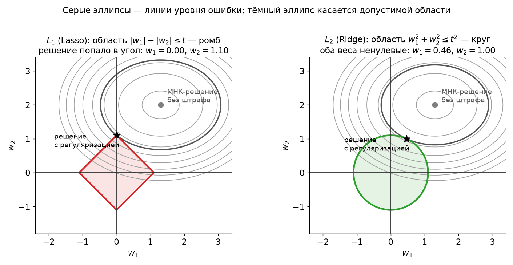
Пространство двух весов. Серые эллипсы — линии уровня ошибки вокруг МНК-решения (серая точка), тёмный эллипс — тот уровень, который первым касается допустимой области. Слева область $|w_1| + |w_2| \leq t$ — ромб, и касание приходится ровно на его верхний угол, где $w_1 = 0$: признак выброшен из модели. Справа область $w_1^2 + w_2^2 \leq t^2$ — круг, углов у него нет, касание происходит в обычной точке дуги, и оба веса остаются ненулевыми ($w_1 = 0.46$, $w_2 = 1.00$). Обе точки посчитаны численной оптимизацией, а не нарисованы на глаз. Применение $L_1$-регуляризации иногда может давать полезный побочный эффект, вызывающий стремление одного или более весовых значений к 0, а это означает, что соответствующий признак не важен. Это одна из форм того, что называют селекцией признаков (feature selection).
Обе регуляризации предполагают обязательное масштабирование (например, StandardScaler или MinMax), иначе признаки с большими масштабами доминируют штраф. Без одинакового масштаба сравнение коэффициентов и эффект sparsity искажается.
- $L_1$: ведёт к разреженности (отбор признаков), но менее стабилен при коррелированных признаках, оптимизация менее гладкая.
- $L_2$: сглаживает веса, повышает численную стабильность, но почти не даёт нулей.
- ElasticNet: компромисс — управляемая разреженность + стабильность.
- Свободный член не штрафуют. Смещение $b$ (intercept) в штраф не входит: оно отвечает за общий уровень ответа, а не за сложность зависимости. Штрафовать его — значит насильно тянуть все предсказания к нулю.
- Регуляризация — это не только $L_1$ и $L_2$. Ту же роль играют ограничение глубины дерева, ранняя остановка бустинга, dropout в нейросетях, аугментация данных и даже увеличение обучающей выборки. Общая идея одна: ограничить способность модели подстраиваться под конкретные обучающие данные.
- Коррелированные признаки ломают интерпретацию $L_1$. Из группы почти одинаковых признаков Lasso оставит один случайный, а остальные занулит. Меняете
random_state— меняется «важный» признак. Делать по такому отбору содержательные выводы нельзя; для групп признаков берут ElasticNet. Cв sklearn обратна $\lambda$. ВLogisticRegressionиSVCпараметр называетсяCи означает $1/\lambda$: меньшеC— сильнее регуляризация. Перепутать направление — типичная ошибка при подборе.
Сравнение регуляризаций
Критерий $L_1$ (Lasso) $L_2$ (Ridge) ElasticNet (комбинация) Sparsity (разреженность) Даёт много нулевых весов (feature selection). Сжимает коэффициенты, почти не зануляет. Умеренная разреженность (регулируется долей $L_1$). Коррелированные признаки Склонен выбрать один, остальные занулить (нестабилен). Распределяет вес между коррелированными признаками (стабилен). Может удерживать группы, снижая нестабильность чистого $L_1$. Численная стабильность / обусловленность Улучшает чуть, но слабее $L_2$. Сильно улучшает. Даёт компромисс: улучшение + sparsity. Оптимизация Недифференцируема в 0. Гладкая. Комбинация: оптимизация чуть тяжелее $L_2$, но устойчивее чистого $L_1$. Штраф крупных весов Линейный: одинаковая "цена" уменьшения. Квадратичный: крупные веса подавляются сильнее. Смешанный профиль усечения. Интерпретируемость Высокая за счёт занулённых признаков. Меньше: все веса остаются ненулевыми. Частично интерпретируем: некоторые нули + группы признаков. Робастность к шумным признакам Может занулить шумный признак. Оставляет маленький ненулевой вес. Может частично занулить и стабилизировать. Масштабирование признаков Для всех типов регуляризации необходимо нормировать/стандартизовать признаки. Когда предпочтителен Нужен отбор признаков, интерпретация. Много коррелированных признаков, нужна стабильность, нейросети (weight decay). Нужны и sparsity, и удержание коррелированных групп; компромисс. Зачем нужна регуляризация и как она работает?
Регуляризация добавляет штраф за сложность модели к функции потерь: $\hat{L} = L(x; w) + \lambda \cdot \text{штраф}(w)$. Это ограничивает рост весов и снижает переобучение, заставляя модель обобщаться лучше.
В чём разница между $L_1$ (Lasso) и $L_2$ (Ridge) регуляризацией?
$L_1$ штрафует сумму модулей весов: создаёт разреженность (многие веса $\to$ 0), полезна для отбора признаков. $L_2$ штрафует сумму квадратов: равномерно сжимает все веса, стабильнее при коррелированных признаках, применяется как weight decay в нейросетях.
Что такое feature selection и как $L_1$ регуляризация его реализует?
$L_1$ геометрически имеет "острые" углы в начале координат — оптимум часто попадает точно в них, занулив некоторые веса. Занулённые признаки фактически исключаются из модели — это автоматический отбор признаков.
Почему перед применением регуляризации нужно масштабировать признаки?
Штраф $\sum|w_i|$ или $\sum w_i^2$ нечувствителен к масштабу признаков сам по себе, но веса модели зависят от масштаба данных. Без нормализации признак с большим диапазоном получит малый вес (штраф незначителен), что искажает эффект регуляризации.
Почему большие веса связаны с переобучением?
Большой вес означает, что малое изменение признака сильно меняет предсказание, то есть модель резко реагирует на любые колебания входа, включая шум. Такие веса возникают при попытке провести зависимость точно через обучающие точки, особенно при коррелированных признаках, где модель может поставить огромные коэффициенты противоположных знаков.
Дайте два объяснения, почему $L_1$ зануляет веса, а $L_2$ нет.
Геометрически: область $\sum|w_i| \le t$ — ромб с углами на осях координат, и линии уровня ошибки часто касаются именно угла, где одна координата равна нулю; у круга $\sum w_i^2 \le t$ углов нет. Через производную: у $|w|$ производная равна $\pm\lambda$ независимо от величины веса, поэтому маленький вес додавливается до нуля; у $w^2$ производная $2\lambda w$ исчезает вместе с весом, и он лишь бесконечно приближается к нулю.
Почему свободный член не включают в штраф регуляризации?
Смещение задаёт общий уровень предсказаний, а не сложность зависимости от признаков. Штрафуя его, мы принудительно тянули бы все предсказания к нулю, что не имеет отношения к борьбе с переобучением и просто ухудшает модель.
Что означает параметр
Cв sklearn и как он связан с $\lambda$?В
LogisticRegressionиSVCиспользуетсяC$= 1/\lambda$, то есть меньшее значениеCсоответствует более сильной регуляризации. Это обратно интуиции тех, кто привык к $\lambda$, и является частым источником ошибок при подборе гиперпараметров.
-
В машинном обучении гиперпараметрами называют параметры алгоритмов, значения которых устанавливаются перед запуском процесса обучения. В этом смысле они и отличаются от обычных параметров, вычисляемых в процессе обучения. Гиперпараметры используются для управления процессом обучения.
Если совсем простыми словами: параметры модель выучивает сама, гиперпараметры выбираете вы. Веса линейной регрессии подбирает алгоритм оптимизации, а вот насколько сильно их штрафовать за величину (коэффициент регуляризации) — решаете вы до запуска обучения. Гиперпараметры — это «настройки станка», а параметры — то, что станок выточил.
Обучаем градиентный бустинг на табличных данных:
- Гиперпараметры (задаёте до обучения):
learning_rate=0.05,max_depth=6,n_estimators=500,subsample=0.8. Поменялиmax_depthс 6 на 12 — получили другую модель. - Параметры (модель находит сама): структура каждого из 500 деревьев — какой признак в каком узле, с каким порогом сравнивать, какое значение отдавать в листе. Их десятки тысяч, и вручную их никто не выставляет.
Проверка на практике: если значение попадает в конструктор (
XGBClassifier(max_depth=6)) — это гиперпараметр; если появляется только после.fit()— это параметр.Логичный вопрос новичка: раз мы умеем оптимизировать веса градиентным спуском, почему бы не оптимизировать заодно и глубину дерева?
- По ним часто нет градиента. Глубина дерева или число соседей в kNN — целые числа, функция потерь по ним не дифференцируема, «шагнуть на 0.3 глубины» бессмысленно.
- Оптимизация по обучающей выборке выберет заведомо плохое. Если подбирать гиперпараметры по train-ошибке, победит самая сложная модель: дерево неограниченной глубины запомнит обучающую выборку до нуля ошибок. Именно поэтому гиперпараметры оценивают на отложенных данных, которых модель не видела.
- Их роль — управлять сложностью, то есть балансом между недообучением и переобучением. Это решение об устройстве самой модели, и принимается оно уровнем выше обучения.
Отсюда и стандартная схема: обучение подбирает параметры на train, а перебор гиперпараметров оценивается на validation (или кросс-валидацией), и только финальная модель проверяется на test.
- Grid search — полный перебор сетки значений. Прост и воспроизводим, но число комбинаций растёт как произведение: 4 значения $\times$ 4 $\times$ 4 = 64 обучения.
- Random search — случайные комбинации из заданных диапазонов. При том же бюджете обычно находит лучшее решение: реально важны один-два гиперпараметра, и случайный поиск успевает попробовать больше их разных значений.
- Байесовская оптимизация — строит модель зависимости «гиперпараметры $\to$ качество» и выбирает следующую точку осознанно. Окупается, когда одно обучение стоит дорого (подробнее — в отдельном вопросе про байесовскую оптимизацию).
Подробнее про гиперпараметры в глубоком обучении — здесь.
Качество зависит в основном от одного гиперпараметра (по горизонтали), второй почти не важен. При одинаковом бюджете в 16 запусков сетка $4\times4$ проверяет всего 4 значения важного параметра и промахивается мимо узкого пика, а случайный поиск даёт 16 разных значений и попадает в него. - Подбор по тесту. Прогнали 200 конфигураций, выбрали лучшую по тестовой метрике — и тест перестал быть честной оценкой: вы выбрали то, что случайно удачно легло именно на него. Для подбора нужна отдельная валидация.
- Отбор признаков и нормализация до разбиения. Классическая утечка:
StandardScalerили отбор фичей, обученные на всех данных сразу, «показывают» модели тест ещё до обучения. - Перебор всего подряд. Обычно 1–2 гиперпараметра определяют почти всё качество (у бустинга —
learning_rateв связке с числом деревьев), а остальные дают доли процента. Начинать надо с них, а не с сетки на десять осей.
Что такое гиперпараметры и чем они отличаются от параметров модели?
Гиперпараметры задаются до обучения и управляют процессом обучения (глубина дерева, learning rate, число слоёв). Параметры модели (веса, коэффициенты) настраиваются автоматически в процессе обучения.
Как подбираются гиперпараметры?
На валидационной выборке (или через кросс-валидацию): перебор значений (grid search), случайный поиск (random search), или байесовская оптимизация. Финальная оценка — только на тестовой выборке.
Приведите примеры гиперпараметров для разных алгоритмов.
Деревья решений: глубина, минимальный размер листа. Random Forest: число деревьев, число признаков при разбиении. GBDT: learning rate, число итераций. Нейросети: learning rate, batch size, число слоёв, dropout.
Почему нельзя подбирать гиперпараметры по тестовой выборке?
Подбор по тесту означает оптимизацию под конкретный тест-сет — это утечка данных. Метрики будут завышены относительно реального качества на новых данных. Для подбора гиперпараметров нужна отдельная валидационная выборка.
Почему гиперпараметры нельзя оптимизировать градиентным спуском вместе с весами?
По многим из них функция потерь недифференцируема (глубина дерева, число соседей — целые числа), а оптимизация по обучающей выборке выбрала бы максимально сложную модель, которая просто запомнит train. Поэтому их оценивают на отложенных данных, а не на тех, на которых обучались.
Чем random search обычно лучше grid search при том же бюджете?
В реальных задачах качество определяют один-два гиперпараметра, а остальные почти не влияют. Grid search тратит бюджет на повторный перебор неважных осей, а random search при том же числе запусков пробует больше разных значений действительно важного параметра.
- Гиперпараметры (задаёте до обучения):
-
Пусть у нас есть некоторая модель $f(x; w)$, которая принимает на вход признаки $x$ и выдаёт ответ $a = f(x; w)$. Ошибку модели на предсказаниях обозначим как $L(a, y)$.
Bias-variance decomposition — разложение ошибки на смещение и разброс. В псевдокоде:
$$\underbrace{L(a, y)}_{\text{ошибка}} = \underbrace{\text{bias}^2}_{\text{смещение}} + \underbrace{\text{variance}}_{\text{разброс}} + \underbrace{\text{noise}}_{\text{шум}}$$
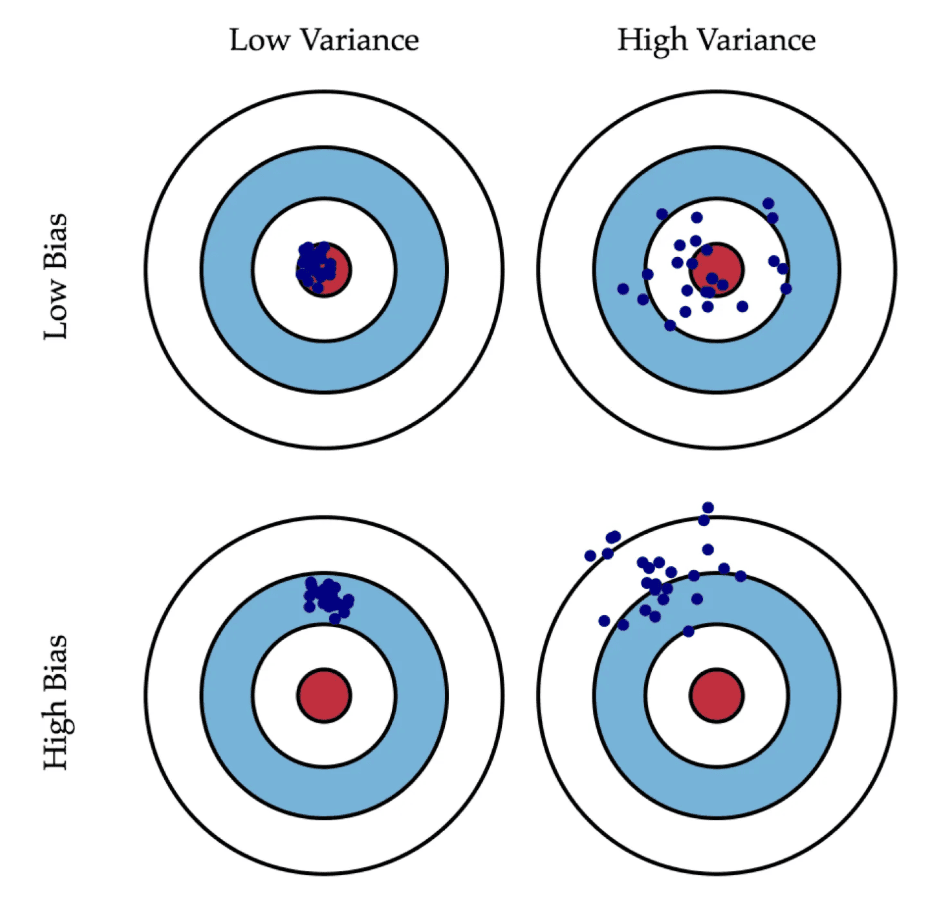
Визуализация Bias-variance decomposition Разберём аналогией со стрельбой по мишени, где каждая серия выстрелов — это модель, обученная на своей случайной выборке:
- Bias (смещение) — насколько центр вашей кучности сдвинут от яблочка. Стреляете кучно, но систематически левее — большое смещение. В ML это означает, что модель слишком проста для данных и не способна выразить нужную зависимость, сколько бы данных ей ни дали.
- Variance (разброс) — насколько разлетаются пробоины между сериями. В ML: обучили модель на одной выборке, обучили на другой — получили совсем разные предсказания. Модель слишком чувствительна к конкретным обучающим данным, то есть учит шум.
- Noise (шум) — неустранимая случайность самой задачи. Даже идеальная модель не предскажет точную цену квартиры, потому что она зависит от настроения продавца. Это нижняя граница ошибки, ниже которой не опустится никто.
Отсюда практический смысл диагностики: большой bias лечится усложнением модели и новыми признаками, большая variance — упрощением, регуляризацией и увеличением объёма данных. Это противоположные действия, и перепутать их — значит потратить недели впустую.
Диагноз ставится по паре чисел — ошибке на обучении и на валидации:
Train Validation Диагноз Что делать 0.35 0.37 Высокий bias (недообучение) Усложнить модель, добавить признаки, обучать дольше 0.02 0.30 Высокая variance (переобучение) Регуляризация, больше данных, упростить модель 0.30 0.55 И то и другое Сначала лечить bias, потом variance 0.05 0.07 Хороший баланс Улучшать данные, а не модель Ключевой признак переобучения — большой разрыв между train и validation. Ключевой признак недообучения — обе ошибки высоки, причём модель плоха даже на тех данных, которые видела.
Поскольку шум всегда присутствует, то нет смысла его учитывать в разложении. Поэтому в названии подхода остаётся только bias и variance.
Данное разложение оказывается полезным в некоторых теоретических исследованиях работы моделей машинного обучения, в частности, при анализе свойств ансамблевых моделей.
Чтобы ошибку можно было представить в таком виде, необходимо, чтобы функция потерь была квадратичной. Для других функций потерь существуют более общие формы этого разложения с похожими по смыслу компонентами. Это позволяет предполагать, что для большинства основных функций потерь имеется некоторое представление в виде смещения, разброса и шума (хоть и, возможно, не в столь простой аддитивной форме).
Bias-Variance Trade-off
Bias-variance trade-off — это компромисс между смещением и разбросом. Чем выше сложность обучаемой модели, тем меньше её смещение и тем больше разброс, и поэтому общая ошибка на тестовой выборке имеет вид $U$-образной кривой. С падением смещения модель всё лучше запоминает обучающую выборку, поэтому слишком сложная модель будет иметь нулевую ошибку на тренировочных данных и большую ошибку на тесте.
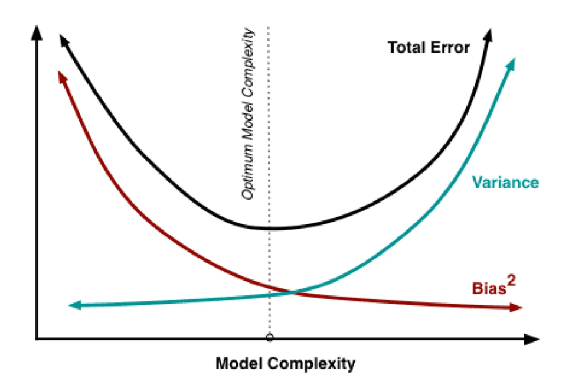
Визуализация Bias-variance Trade-off. Этот график призван показать, что существует оптимальная сложность модели, при которой соблюдается баланс между переобучением и недообучением, и ошибка при этом минимальна. Одна и та же истинная зависимость (чёрная), несколько обучающих выборок и полиномы растущей степени. Слева: при малой степени все модели похожи друг на друга, но далеки от истины — высокий bias. При большой степени средняя модель близка к истине, но отдельные модели разлетаются — высокая variance. Справа: сумма $\text{Bias}^2 + \text{Variance}$ минимальна при промежуточной сложности. Рассмотрим ансамбли моделей на примере деревьев решений.
- Bagging (например, Random Forest): уменьшает variance, сохраняя низкое bias. Он обучает много деревьев на разных подвыборках и усредняет ответы. Это эффективно снижает разброс, особенно если отдельные деревья сильно переобучаются.
- Boosting (например, Gradient Boosting): работает последовательно, каждая новая модель обучается на ошибках предыдущих. Это позволяет уменьшать bias, то есть последовательно приближаться к целевой функции. Однако при слишком большом числе итераций может возрастать variance, и модель начинает переобучаться.
Таким образом, выбор между методами и их параметрами — это баланс между снижением смещения и контролем разброса.
- Разложение не вычислимо на практике. Чтобы честно посчитать bias и variance, нужно обучить модель на множестве независимых выборок из одного распределения — а у вас есть одна выборка. Разложение остаётся инструментом мышления, а не метрикой в отчёте.
- Шум невозможно отделить от смещения по данным. Если ошибка не падает, вы не узнаете, слишком ли проста модель или задача просто шумная. Ориентиром служит уровень человека или физический предел точности измерений.
- U-образная кривая — не универсальный закон. У современных перепараметризованных моделей наблюдается двойной спуск (double descent): после пика ошибка снова начинает падать при дальнейшем росте сложности. Классическая картинка описывает режим, в котором работают деревья и линейные модели, но не все нейросети.
- «Больше данных» лечит только variance. Смещение от объёма выборки не зависит: линейная модель на нелинейных данных останется плохой и на миллионе строк.
Что такое bias-variance decomposition?
Разложение ошибки модели: $L = \text{bias}^2 + \text{variance} + \text{noise}$. Bias — систематическое смещение (насколько в среднем ошибается модель). Variance — разброс (насколько предсказание меняется при разных выборках). Noise — неустранимый шум.
Что такое bias-variance trade-off?
Компромисс: более сложная модель снижает bias, но увеличивает variance, и наоборот. Существует оптимальная сложность, при которой суммарная ошибка минимальна (U-образная кривая). Слишком простая — недообучение, слишком сложная — переобучение.
Как бэггинг (Random Forest) и бустинг влияют на bias и variance?
Бэггинг уменьшает variance: усреднение некоррелированных деревьев сглаживает их разброс. Бустинг уменьшает bias: каждое новое дерево исправляет ошибки предыдущих. При избыточном числе итераций бустинг может увеличить variance.
Почему bias-variance разложение требует квадратичной функции потерь?
При MSE слагаемые разложения получаются строго в аддитивной форме. Для других функций потерь (cross-entropy, MAE) разложение возможно, но формулы сложнее — идея остаётся той же, но компоненты не суммируются так просто.
Как по ошибкам на train и validation отличить высокий bias от высокой variance?
Высокий bias — обе ошибки велики, модель плоха даже на данных, которые видела. Высокая variance — ошибка на train мала, а на validation значительно больше; ключевой признак — большой разрыв между ними. Лечатся они противоположными действиями: bias — усложнением модели, variance — регуляризацией и увеличением объёма данных.
Почему bias-variance разложение нельзя посчитать на практике?
Для честного вычисления нужно обучить модель на множестве независимых выборок из одного распределения и усреднить, а в распоряжении есть только одна выборка. Кроме того, шум невозможно отделить от смещения по имеющимся данным. Разложение остаётся инструментом рассуждения, а не метрикой.
Помогает ли увеличение объёма данных при высоком смещении?
Нет. Смещение отражает неспособность выбранного класса моделей выразить истинную зависимость и от объёма выборки не зависит: линейная модель на нелинейных данных останется плохой и на миллионе строк. Больше данных снижает именно разброс.
-
Train/validation/test split
Train/validation/test split — это разбиение данных на три части с разными ролями:
- train — для обучения модели;
- validation — для выбора модели, гиперпараметров и порогов;
- test — для финальной честной оценки качества.
Если совсем простыми словами: train — это домашние задания, validation — пробный экзамен, test — настоящий экзамен. Пробник можно решать сколько угодно раз, подбирая подход. А настоящий экзамен сдают один раз в самом конце: если подглядывать в него по ходу подготовки, он перестаёт что-либо измерять.
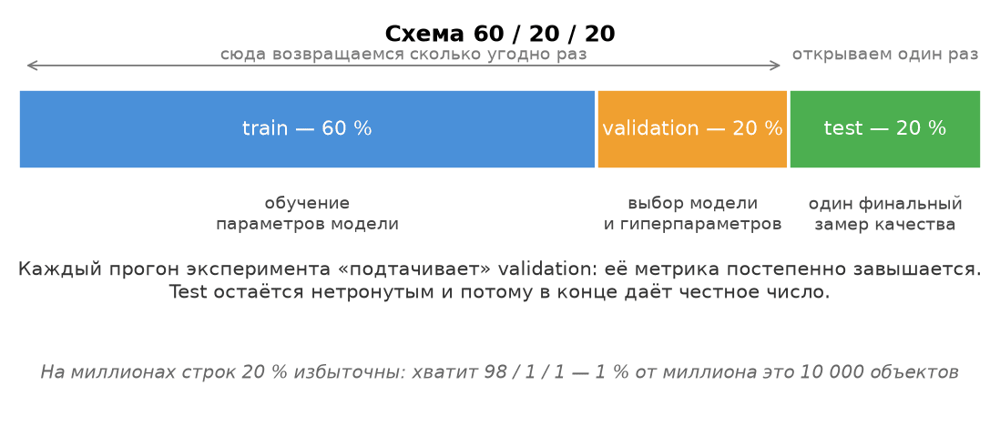
Три части одной выборки и их роли. К train и validation возвращаются сколько угодно раз: на первой обучают, по второй выбирают модель, гиперпараметры и порог. Test открывают один раз, когда все решения уже приняты. Метрика на validation постепенно становится завышенной именно потому, что по ней принимали решения, — а нетронутый test как раз поэтому и даёт в конце честное число. Пропорции зависят от объёма: 60/20/20 разумны для тысяч объектов, на миллионах строк хватит 98/1/1. Кажется, что раз мы не обучали модель на тесте, оценка честная. Но информация утекает не только через обучение, но и через ваши решения.
Представьте: вы перебрали 100 конфигураций и каждую замерили на тесте, выбрав лучшую. Даже если все 100 моделей одинаковы по качеству, на конкретной тестовой выборке какая-то из них случайно окажется удачливее остальных — просто потому, что тестовых объектов конечное число. Выбрав её по тесту, вы выбрали везение, а не качество, и на новых данных этой прибавки не будет.
Чем больше экспериментов вы прогоняете через выборку, тем сильнее эффект. Поэтому validation берёт удар на себя: её метрика постепенно становится завышенной, зато test остаётся нетронутым и в конце даёт честное число.
Строго говоря — один раз, после того как все решения приняты. На практике это соблюдают редко, но правило простое: чем чаще вы смотрите на test и принимаете решения по нему, тем менее он честен.
Если после финального замера вы решили «попробую ещё пару идей» и снова замерили на тесте — test уже стал вторым валидационным набором. В соревнованиях эту проблему решают приватным лидербордом, недоступным до конца, а в продакшене — тем, что финальную проверку модель проходит на свежих данных за новый период.
Если подбирать гиперпараметры прямо по test-выборке, test перестаёт быть честной проверкой. Модель и процесс разработки начинают подстраиваться под конкретный test, поэтому итоговая метрика становится завышенной.
Validation нужна как рабочая выборка для экспериментов, а test — как последнее измерение после выбора решения.
В простом случае данные можно разделить через
train_test_split, вызвав его дважды: сначала отрезаем test, затем от оставшейся части отрезаем validation.Так получится 60% train, 20% validation и 20% test. Обратите внимание на
test_size=0.25во втором вызове: это 25% от оставшихся 80%, то есть искомые 20% от исходного объёма.Пропорции зависят от объёма данных: классические 60/20/20 разумны для тысяч объектов, а на миллионах строк отдавать по 20% расточительно — хватит 98/1/1, потому что и 1% от миллиона это 10 000 объектов, вполне достаточно для устойчивой оценки.
from sklearn.model_selection import train_test_split X_train, X_test, y_train, y_test = train_test_split( X, y, test_size=0.2, random_state=42, stratify=y ) X_train, X_val, y_train, y_val = train_test_split( X_train, y_train, test_size=0.25, random_state=42, stratify=y_train )- Перемешать train и test после разбиения.
- Подбирать гиперпараметры на test — самая частая и самая дорогая ошибка.
- Делать scaling, imputation или target encoding до split. Среднее и стандартное отклонение, посчитанные по всем данным, содержат информацию о тесте. Формально модель теста не видела, фактически — да.
- Не использовать stratify в задачах с дисбалансом классов.
- Делать случайный split для временных рядов, где нужен time-based split.
- Разрывать связанные объекты. Снимки одного пациента, заказы одного клиента, кадры одного видео должны целиком лежать в одной части — иначе модель узнаёт объект «в лицо».
Схема train/val/test хороша, когда данных много. На выборке в 500 объектов отдать 20% под validation и ещё 20% под test — значит учиться на 300 объектах и оценивать качество по сотне, где метрика будет крайне шумной.
Стандартное решение — вложенная кросс-валидация: test отделяется один раз и не трогается, а на оставшейся части вместо фиксированной validation используется k-Fold. Гиперпараметры подбираются по среднему результату фолдов, финальная модель обучается на всей train+val части и один раз проверяется на test.
Так вы получаете и устойчивый подбор гиперпараметров, и нетронутую честную оценку — ценой $k$-кратного времени обучения.
Кривые обучения: ошибка на train и validation в зависимости от размера обучающей выборки. Слева простая модель: кривые быстро сходятся, но высоко — данных уже достаточно, упёрлись в bias, и новые объекты не помогут. Справа сложная модель: train почти нулевой, validation высоко, зазор большой — это variance, и добавление данных ещё продолжает снижать ошибку. Зачем нужны три выборки: train, validation и test?
Train нужен для обучения параметров модели, validation — для выбора модели и гиперпараметров, test — для финальной оценки качества на данных, которые не участвовали в разработке.
Почему нельзя подбирать гиперпараметры на test?
Потому что test становится частью процесса оптимизации. Метрика на нём перестаёт быть честной оценкой качества на новых данных.
Что делает
random_state?Фиксирует случайное разбиение, чтобы эксперимент можно было воспроизвести и сравнивать модели на одинаковых выборках.
Зачем нужен
stratifyвtrain_test_split?Чтобы сохранить пропорции классов в train/test. Это особенно важно при дисбалансе, когда редкий класс может случайно почти исчезнуть из одной из выборок.
Когда случайное разбиение использовать нельзя?
Для временных рядов и данных с временной зависимостью. Там будущие наблюдения не должны попадать в обучение для предсказания прошлого.
Как информация о тесте «протекает» в модель, даже если на нём не обучались?
Через ваши решения. Перебрав сотню конфигураций и выбрав лучшую по тесту, вы выбираете ту, которой случайно повезло именно на этой выборке — тестовых объектов конечное число, и часть разницы между моделями является шумом. На новых данных этой прибавки не будет, а оценка окажется завышенной.
Как делить данные, если их очень мало?
Использовать вложенную кросс-валидацию: отделить test один раз и не трогать, а на оставшейся части вместо фиксированной validation применять k-Fold. Гиперпараметры подбираются по среднему по фолдам, финальная модель обучается на всей train+val части и один раз проверяется на test.
Почему связанные объекты нельзя разносить между train и test?
Несколько снимков одного пациента или заказов одного клиента почти дублируют друг друга. Если часть попадёт в обучение, а часть в тест, модель узнает объект по его индивидуальным особенностям, а не по обобщающей закономерности, и оценка окажется завышенной. Нужен групповой сплит (
GroupKFold,GroupShuffleSplit).
-
EDA: разведывательный анализ данных
EDA (Exploratory Data Analysis) — разведывательный анализ данных перед моделированием. Его цель — понять структуру таблицы: типы признаков, пропуски, выбросы, распределения, дубликаты, связи между признаками и целевой переменной.
Если совсем простыми словами: это знакомство с данными до того, как вы начали что-то строить. Нельзя чинить машину, не открыв капот. Пропущенный на этом этапе дубликат или странная колонка потом выливаются в модель, которая показывает 0.99 на валидации и разваливается в продакшене.
Типичные находки первых тридцати минут работы с новым датасетом:
- Пропуски не случайны. Поле «доход» пусто у 40% строк — и почти все они относятся к отказникам. Значит, сам факт пропуска несёт информацию, и вместо тихого заполнения медианой нужен отдельный флаг
доход_пропущен. - Подозрительные константы. Возраст 999, зарплата $-1$, дата рождения 1900 года. Это не выбросы, а закодированные пропуски из старой системы — если оставить как есть, модель будет учиться на бессмыслице.
- Дубликаты. 3% строк полностью повторяются. При случайном разбиении копии попадут и в train, и в test — оценка окажется завышенной.
- Утечка в лоб. Признак коррелирует с таргетом на 0.98. Почти всегда это не удача, а поле, заполняемое уже после наступления события.
- Дисбаланс. Положительных объектов 0.3% — это меняет выбор метрики, схемы валидации и функции потерь ещё до обучения.
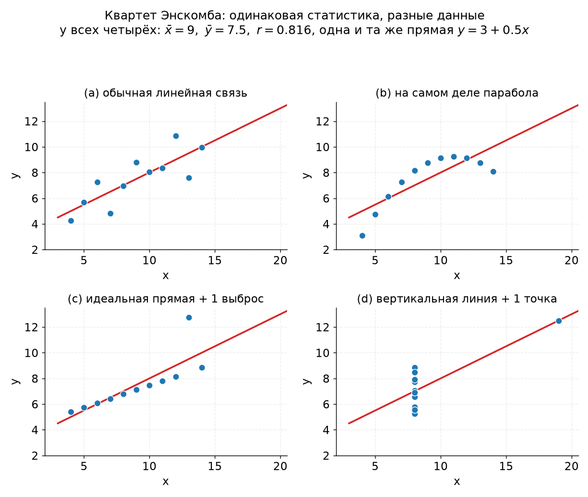
Квартет Энскомба — четыре набора по 11 точек, у которых совпадают средние ($\bar{x}=9$, $\bar{y}=7.5$), дисперсии и корреляция $r = 0.816$, а красная прямая регрессии $y = 3 + 0.5x$ вообще одна и та же. При этом (a) — действительно линейная связь, (b) — парабола, (c) — идеальная прямая, испорченная единственным выбросом, (d) — все точки в одном столбце $x = 8$ плюс одна на $x = 19$, которая в одиночку задаёт наклон. Числа не различают эти случаи, график различает — поэтому EDA начинается с картинок, а не с describe. Базовый чек-лист EDA:
- размеры таблицы и число объектов;
- типы признаков: числовые, категориальные, даты, текст;
- пропуски и доля пропусков по столбцам;
- дубликаты строк и возможные дубликаты объектов;
- распределения числовых признаков;
- редкие категории;
- выбросы;
- корреляции и явные зависимости с target.
Обычно начинают с
pandas:df.head() df.info() df.describe() df.isna().mean().sort_values(ascending=False) df.duplicated().sum()Затем смотрят графики, и у каждого своя задача:
- гистограмма — форма распределения: скошенность, несколько пиков (признак смеси нескольких групп), аномальные всплески на круглых значениях;
- boxplot — выбросы и различие распределений между группами (например, признак в разрезе классов);
- scatter plot — связь двух признаков и её форма: линейная, нелинейная, разделённая на кластеры;
- heatmap корреляций — дублирующие друг друга признаки и кандидаты в утечки;
- графики во времени — сдвиг распределения между периодами, что критично, если модель будет работать на будущих данных.
Главный приём, который отличает полезный EDA от формального: любой график полезнее строить отдельно по классам или по группам таргета.
Гистограмма дохода по всей выборке говорит лишь то, что доходы бывают разные. А две гистограммы — для вернувших кредит и для не вернувших — сразу показывают, разделяет ли этот признак классы вообще. Если распределения совпадают, признак бесполезен, и никакая модель этого не исправит.
Тот же принцип для категорий: смотрите не частоту категории, а средний таргет внутри неё — это заранее показывает, что даст target encoding и есть ли в признаке сигнал.
EDA можно делать на всём датасете для общего понимания структуры, но любые обучаемые преобразования нужно подгонять только на train. Например, scaler, imputer, target encoder и отбор признаков не должны учиться на validation/test.
Что такое EDA?
Это первичный анализ данных перед обучением модели: проверка типов, пропусков, распределений, выбросов, дубликатов и связей признаков.
Зачем смотреть распределения признаков?
Чтобы увидеть выбросы, перекосы, разные масштабы, странные значения и понять, какие преобразования могут понадобиться.
Зачем проверять дубликаты?
Дубликаты могут завышать качество, особенно если почти одинаковые объекты попадают и в train, и в test. Иногда дубликаты нужно удалить или группировать при разбиении.
Что показывает матрица корреляций?
Линейные связи между числовыми признаками. Она помогает находить дублирующие признаки, мультиколлинеарность и грубые зависимости с target.
Почему EDA не заменяет валидацию модели?
EDA помогает понять данные и выдвинуть гипотезы, но качество модели проверяется только на корректной validation/test-схеме.
Почему пропуски нельзя молча заполнять медианой?
Сам факт пропуска часто несёт информацию: поле «доход» может быть пустым в основном у отказников. Заполнив пропуск медианой, вы уничтожаете этот сигнал. Правильнее добавить бинарный флаг «значение отсутствовало» и уже потом заполнять.
Почему графики полезнее строить в разрезе целевой переменной?
Распределение признака по всей выборке говорит лишь о том, какие значения встречаются. Два распределения — для положительного и отрицательного класса — сразу показывают, разделяет ли признак классы. Если они совпадают, признак бесполезен, и никакая модель этого не исправит.
Какие признаки должны вызвать подозрение на утечку данных?
Корреляция с таргетом около 0.95–0.99, признак в топе важности, который логически не должен так сильно влиять, а также поля, заполняемые уже после наступления предсказываемого события (дата закрытия счёта, статус обработки). Проверка — будет ли значение известно в момент, когда модель должна дать ответ.
- Пропуски не случайны. Поле «доход» пусто у 40% строк — и почти все они относятся к отказникам. Значит, сам факт пропуска несёт информацию, и вместо тихого заполнения медианой нужен отдельный флаг
-
Предобработка табличных данных
Предобработка табличных данных — это набор шагов, которые приводят сырую таблицу к виду, пригодному для обучения модели: очистка, обработка пропусков, кодирование категорий, масштабирование числовых признаков и сборка преобразований в pipeline.
Если совсем простыми словами: сырая таблица почти никогда не годится модели как есть. В ней пропуски, текстовые категории, признаки в несопоставимых единицах. Предобработка — это конвейер, который превращает её в матрицу чисел, причём один и тот же конвейер должен применяться и на обучении, и в продакшене.
Обычно порядок такой:
- Разделить данные на train/validation/test.
- Провести EDA и найти проблемы в данных.
- Обработать пропуски.
- Закодировать категориальные признаки.
- Масштабировать числовые признаки, если модель чувствительна к масштабу.
- Обучить baseline-модель.
- Подбирать гиперпараметры и сравнивать модели на validation или cross-validation.
- Один раз оценить финальную модель на test.
Все обучаемые преобразования настраиваются только на train:
SimpleImputer.fit;StandardScaler.fit;OneHotEncoder.fit;- target encoding;
- RFECV;
- SMOTE.
На validation/test применяется только
transform.Соблазн велик: заполнить пропуски, отмасштабировать, закодировать — всё это несколькими строками прямо в ноутбуке. Так делать не стоит по трём причинам:
- Защита от утечки. Внутри кросс-валидации
Pipelineпереобучает каждый шаг заново на обучающей части фолда. Отдельные ячейки, выполненные один раз на всех данных, гарантируют утечку. - Гарантия одинакового порядка. Обученный pipeline хранит и шаги, и их параметры. В продакшене вы применяете тот же объект, а не пытаетесь вспомнить, какой scaler и с какими статистиками использовался.
- Разные типы столбцов — разная обработка.
ColumnTransformerпозволяет описать это декларативно: числовым медиану и масштабирование, категориальным моду и one-hot.
Ниже — типовой шаблон, который покрывает большинство табличных задач.
from sklearn.compose import ColumnTransformer from sklearn.pipeline import Pipeline from sklearn.impute import SimpleImputer from sklearn.preprocessing import OneHotEncoder, StandardScaler numeric_pipe = Pipeline([ ("imputer", SimpleImputer(strategy="median")), ("scaler", StandardScaler()), ]) categorical_pipe = Pipeline([ ("imputer", SimpleImputer(strategy="most_frequent")), ("encoder", OneHotEncoder(handle_unknown="ignore")), ]) preprocess = ColumnTransformer([ ("num", numeric_pipe, numeric_features), ("cat", categorical_pipe, categorical_features), ])Внутри числового пайплайна порядок не случаен:
- Сначала imputer, потом scaler.
StandardScalerне умеет работать сNaN. Кроме того, среднее и стандартное отклонение считаются уже по заполненным данным. - Кодирование до масштабирования (если вообще масштабировать one-hot столбцы). Обычно бинарные столбцы не масштабируют вовсе — они и так в диапазоне $[0,1]$.
- Отбор признаков и балансировка — после кодирования, потому что они работают с числовой матрицей.
- SMOTE только на train. Это единственный шаг, который меняет число строк, поэтому обычный
Pipelineиз sklearn для него не подходит — нуженimblearn.pipeline.Pipeline, который применяет такие шаги только при обучении.
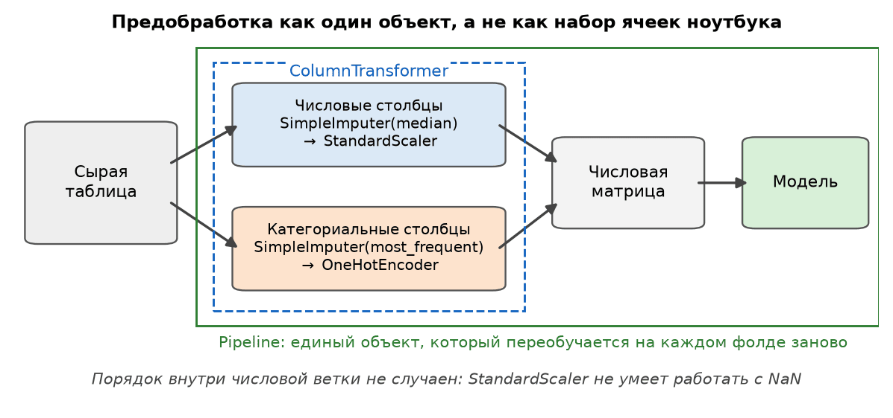
Тот же код, что выше, только нарисованный. Сырая таблица расщепляется на две ветки: числовые столбцы получают SimpleImputer с медианой и затем StandardScaler, категориальные — заполнение модой и OneHotEncoder. Синим пунктиром обведён ColumnTransformer, который склеивает ветки в одну числовую матрицу; зелёной рамкой — весь Pipeline вместе с моделью. Ценность именно в рамке: внутри кросс-валидации этот объект переобучается на обучающей части каждого фолда заново, тогда как отдельные ячейки ноутбука, выполненные один раз на всех данных, гарантируют утечку. Линейные модели, kNN, SVM и нейросети обычно выигрывают от масштабирования числовых признаков. Деревья, Random Forest и градиентный бустинг почти не чувствительны к масштабу числовых признаков, но всё равно требуют аккуратной обработки пропусков и категорий.
Что входит в предобработку табличных данных?
Проверка и очистка данных, обработка пропусков, кодирование категориальных признаков, масштабирование числовых признаков и сборка всех шагов в воспроизводимый pipeline.
Почему split нужно делать до обучаемой предобработки?
Чтобы параметры преобразований не считались по validation/test. Иначе возникает утечка данных и метрики становятся завышенными.
Зачем нужен
Pipeline?Он связывает предобработку и модель в один объект, помогает не забыть порядок шагов и защищает от утечек при кросс-валидации.
Почему разные модели требуют разной предобработки?
Алгоритмы по-разному используют признаки. Например, kNN зависит от расстояний и чувствителен к масштабу, а деревья делят признаки по порогам и почти не зависят от масштаба.
Что такое baseline в табличной задаче?
Простая первая модель с корректной предобработкой и честной валидацией. Она нужна как точка сравнения для более сложных решений.
Почему внутри числового пайплайна imputer идёт до scaler?
StandardScalerне умеет обрабатыватьNaNи упадёт на пропусках. Кроме того, среднее и стандартное отклонение должны считаться уже по заполненным данным, иначе статистики окажутся смещёнными относительно того, что модель увидит на входе.Почему для SMOTE обычный sklearn
Pipelineне подходит?SMOTE меняет число строк выборки, а sklearn-овский
Pipelineприменяетtransformодинаково и при обучении, и при предсказании — синтетические объекты попали бы и в валидацию. Нуженimblearn.pipeline.Pipeline, который выполняет такие шаги только на этапеfit.
-
Масштабирование признаков
Масштабирование признаков — преобразование числовых признаков к сопоставимому масштабу. Это важно для моделей, которые используют расстояния, скалярные произведения, градиентную оптимизацию или регуляризацию коэффициентов.
Если совсем простыми словами: нельзя складывать рубли с годами. Если возраст меняется от 20 до 70, а доход — от 20 000 до 500 000, то в любой формуле, где эти числа встречаются вместе, доход просто раздавит возраст своей величиной. Масштабирование приводит признаки к общей шкале, чтобы они конкурировали на равных.
Задача kNN: находим ближайшего соседа для клиента (возраст 30, доход 50 000). Есть два кандидата:
- A: возраст 31, доход 51 000 — ровесник с почти таким же доходом;
- B: возраст 65, доход 50 100 — пенсионер с похожим доходом.
Считаем евклидово расстояние по сырым признакам:
- до A: $\sqrt{1^2 + 1000^2} \approx 1000$;
- до B: $\sqrt{35^2 + 100^2} \approx 106$.
Ближайшим оказался B, хотя по возрасту он отличается на 35 лет. Разница в возрасте попросту утонула: в сумме доминирует признак, измеряемый в тысячах. Фактически алгоритм видит только доход, а возраст в модель не попал вообще.
После стандартизации оба признака имеют разброс порядка единицы, и вклад в расстояние становится сопоставимым.
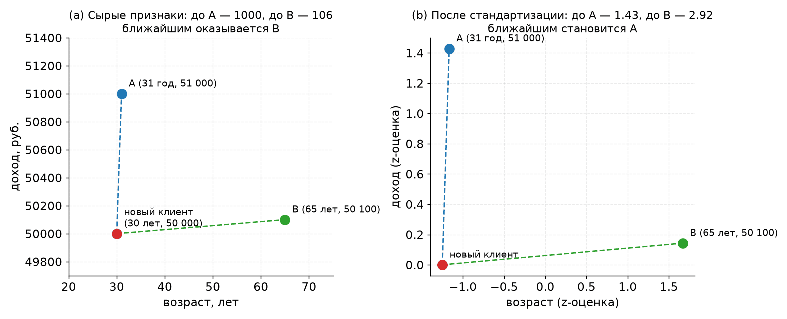
Тот же пример на графике. Расстояния подписаны в заголовках панелей, а не считываются с картинки: оси у панели (a) в разных единицах, поэтому визуальная длина отрезков там ни о чём не говорит. Слева по сырым признакам до ровесника A получается 1000, а до пенсионера B — всего 106, и ближайшим соседом становится B: разница в возрасте на 35 лет тонет рядом с разницей дохода в 1000 рублей. Справа после стандартизации оба признака имеют разброс порядка единицы, расстояния равны 1.43 и 2.92, и соседом справедливо оказывается A. Линии уровня функции потерь, когда признаки в разных масштабах --- вытянутый овраг: градиентный спуск мечется поперёк и медленно ползёт вдоль. После стандартизации линии уровня становятся кругами, и тот же спуск идёт к минимуму по прямой за несколько шагов. - StandardScaler: вычитает среднее и делит на стандартное отклонение.
- MinMaxScaler: переносит значения в заданный диапазон, часто $[0, 1]$.
- RobustScaler: использует медиану и межквартильный размах, поэтому устойчивее к выбросам.
- StandardScaler — вариант по умолчанию. Подходит, когда распределение близко к нормальному и экстремальных выбросов нет.
- MinMaxScaler — когда нужен строго ограниченный диапазон (например, пиксели изображения или входы нейросети). Но у него есть слабость: один выброс сжимает все остальные значения. Если 99% зарплат лежат до 200 000, а одна равна 10 млн, то после MinMax почти все объекты окажутся в интервале $[0, 0.02]$.
- RobustScaler — когда выбросы есть и удалять их нельзя. Он использует медиану и межквартильный размах, то есть статистики, на которые экстремальные значения почти не влияют.
Обычно масштабирование важно для:
- линейной и логистической регрессии с регуляризацией;
- kNN;
- SVM;
- PCA;
- нейронных сетей;
- кластеризации на расстояниях, например KMeans.
Деревья решений и ансамбли деревьев почти не чувствительны к масштабу числовых признаков: Decision Tree, Random Forest, Gradient Boosting, XGBoost, LightGBM, CatBoost.
Причина: дерево сравнивает значения признака с порогами, а не считает расстояния между объектами.
Scaler обучается только на train. Нельзя делать
fitна всей таблице до разбиения.Причина:
fitзапоминает среднее и стандартное отклонение. Если посчитать их по всем данным, эти статистики содержат информацию о тестовой выборке, и она просачивается в обучение. Формально модель теста не видела, фактически — да, и оценка окажется завышенной.Практическое следствие: после
transformтестовые данные не обязаны иметь среднее 0 и разброс 1 — и это нормально. Они пересчитаны по train-статистикам, как и будет в продакшене, где будущих данных на момент обучения не существует.scaler.fit(X_train) X_train_scaled = scaler.transform(X_train) X_test_scaled = scaler.transform(X_test)Зачем нужно масштабирование признаков?
Чтобы признаки с большими численными диапазонами не доминировали в расстояниях, градиентах и регуляризации.
Чем StandardScaler отличается от MinMaxScaler?
StandardScaler приводит признак к нулевому среднему и единичному стандартному отклонению. MinMaxScaler переносит значения в фиксированный диапазон, например $[0,1]$.
Когда полезен RobustScaler?
Когда в числовых признаках есть выбросы. Он использует медиану и межквартильный размах, поэтому меньше зависит от экстремальных значений.
Почему деревьям обычно не нужен scaling?
Деревья строят правила вида $x_j < t$. Если умножить признак на константу, порядок объектов не изменится, а порог просто масштабируется вместе с признаком.
Почему scaler нужно обучать только на train?
Иначе среднее, стандартное отклонение или минимум/максимум будут посчитаны с учётом test, что создаёт утечку данных.
Почему MinMaxScaler плохо переносит выбросы?
Он линейно растягивает диапазон между минимумом и максимумом. Единственное экстремальное значение задаёт верхнюю границу, и все остальные объекты сжимаются в узкую полосу у нуля: при зарплатах до 200 000 и одной в 10 млн основная масса окажется в интервале $[0, 0.02]$. RobustScaler на медиане и IQR такой проблемы не имеет.
Почему после корректного масштабирования тестовая выборка не имеет среднего 0 и разброса 1?
Потому что scaler обучен на train и применяет к тесту именно train-статистики. Это правильное поведение: в продакшене будущих данных на момент обучения не существует, и пересчитывать статистики по ним нельзя. Совпадение среднего с нулём на тесте означало бы утечку.
-
Кодирование категориальных признаков
Кодирование категориальных признаков — преобразование категорий в числовой вид, который может использовать модель. Например, город, тип устройства или тарифный план нужно представить числами или бинарными признаками.
Если совсем простыми словами: модель умеет умножать и складывать, а «Москва» умножить нельзя. Значит, категорию надо превратить в числа — но так, чтобы не наврать: наивная замена городов на 1, 2, 3 сообщает модели, будто Казань ровно посередине между Москвой и Питером.
Признак «город» со значениями Москва, Питер, Казань. Целевая переменная — вернул ли клиент кредит.
Способ Что получится Чем плох / хорош One-hot три столбца: Москва=1,0,0,Питер=0,1,0,Казань=0,0,1Порядка нет — честно. Но при 5000 городов даёт 5000 столбцов Ordinal один столбец: 0, 1, 2 Компактно, но вводит ложный порядок «Казань > Питер > Москва» Target Москва $\to$ 0.91, Питер $\to$ 0.88, Казань $\to$ 0.85 (доля возвратов) Один столбец и сразу полезный сигнал, но легко даёт утечку Frequency Москва $\to$ 0.62, Питер $\to$ 0.21, Казань $\to$ 0.17 (доля в выборке) Компактно и без утечки, но кодирует лишь популярность, а не связь с таргетом Универсального победителя нет: выбор зависит от модели и от того, сколько у признака уникальных значений (кардинальности).
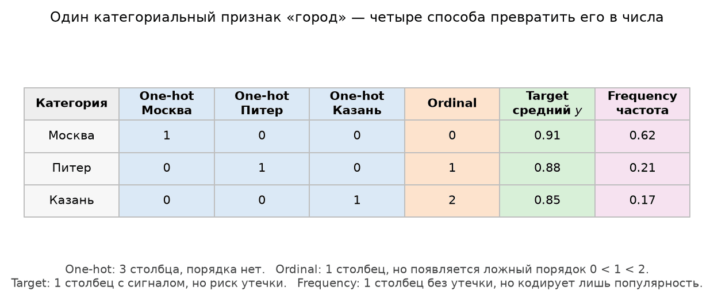
Тот же признак «город» в четырёх кодировках. Голубые столбцы — one-hot: по столбцу на категорию, ложного порядка не возникает, но при 5000 городов будет 5000 столбцов. Оранжевый — ordinal: компактно, зато появляется отношение $0 < 1 < 2$, которого в реальности нет. Зелёный — target: доля возвратов внутри категории, один столбец и сразу полезный сигнал, но именно здесь рождается утечка. Розовый — frequency: доля категории в выборке, утечки нет, но кодируется только популярность, а не связь с таргетом. - One-hot encoding — создаёт отдельный бинарный столбец для каждой категории.
- Ordinal encoding — заменяет категории числами 0, 1, 2, ...
- Target encoding — заменяет категорию статистикой целевой переменной по этой категории.
- Frequency encoding — заменяет категорию частотой её появления.
Одна и та же кодировка ведёт себя по-разному в зависимости от того, кто её потребляет:
- Линейные модели, kNN, SVM, нейросети. Им нужен one-hot: любое другое кодирование они прочитают как числовую шкалу с расстояниями и порядком. Для признаков высокой кардинальности берут target encoding с регуляризацией или обучаемые эмбеддинги.
- Деревья и ансамбли. Дереву ordinal encoding не так вреден: оно может «вырезать» нужную категорию несколькими последовательными порогами. Но это расходует глубину, поэтому в CatBoost и LightGBM есть встроенная поддержка категорий — им лучше отдать признак как есть, а не кодировать вручную.
- Кардинальность решает. До ~10–15 категорий обычно достаточно one-hot. Дальше он раздувает матрицу и делает столбцы разреженными: у категории, встречающейся 5 раз, модель просто не сможет ничему научиться.
LabelEncoderв sklearn предназначен для кодирования целевой переменнойy, а не признаковX. Для категориальных признаков обычно используютOneHotEncoderилиOrdinalEncoder.Если закодировать признак числами 0, 1, 2 без смысла порядка, линейная модель может ошибочно воспринять эти числа как упорядоченную шкалу.
Target encoding особенно опасен: если считать средний target по категории на всём датасете, то информация из validation/test попадёт в признаки.
Правильно делать target encoding только внутри train-фолда, часто со сглаживанием и out-of-fold схемой.
Есть и вторая, менее очевидная беда — редкие категории. Пусть категория встретилась в обучении один раз, и этот клиент кредит не вернул. Target encoding присвоит ей значение 0.0 — «здесь не возвращают никогда». Модель воспримет это как мощнейший сигнал, хотя за ним стоит ровно одно наблюдение.
Лечится сглаживанием: вместо среднего по категории берут компромисс между ним и глобальным средним, взвешенный по числу наблюдений:
$$\text{enc}(c) = \frac{n_c \cdot \bar{y}_c + m \cdot \bar{y}}{n_c + m}$$
где $n_c$ — сколько раз встретилась категория, $\bar{y}_c$ — среднее по ней, $\bar{y}$ — глобальное среднее, $m$ — параметр сглаживания. При большом $n_c$ значение стремится к среднему по категории, при маленьком — к глобальному. То есть редким категориям мы просто не верим.
Одна колонка «город»: one-hot добавляет столбец на категорию, target encoding сжимает всё в одно число — среднее $y$ по категории. Но для первой строки в это среднее попал её собственный $y=1$, и модель фактически подглядывает в ответ. Out-of-fold вариант считает среднее без самой строки: для «Москвы» получается $0.50$ вместо $0.67$. В production могут появиться категории, которых не было на обучении. Поэтому важно:
- использовать
handle_unknown="ignore"для OneHotEncoder; - объединять редкие категории в
"other"; - проверять стабильность категорий между train и test.
Зачем кодировать категориальные признаки?
Большинство ML-моделей работает с числами. Категории нужно преобразовать так, чтобы модель могла использовать их как признаки.
Чем one-hot encoding отличается от ordinal encoding?
One-hot создаёт отдельный бинарный признак на категорию. Ordinal encoding заменяет категории числами, что может добавить искусственный порядок.
Почему
LabelEncoderне стоит применять к признакам?Он предназначен для целевой переменной. Для признаков он может создать ложный числовой порядок между категориями.
Почему target encoding может давать утечку?
Он использует целевую переменную для создания признака. Если считать статистику по всей таблице, validation/test target попадёт в обучение.
Что делать с неизвестными категориями на test?
Настроить encoder так, чтобы он не падал на новых категориях, например
handle_unknown="ignore", или заранее объединять редкие категории в"other".Как выбрать кодировку под конкретную модель?
Линейным моделям, kNN, SVM и нейросетям нужен one-hot: любое другое числовое кодирование они прочитают как шкалу с порядком и расстояниями. Деревья и ансамбли переносят ordinal encoding, а CatBoost и LightGBM лучше вообще кормить категориями напрямую — у них есть встроенная обработка. Определяющий фактор — кардинальность: до 10–15 категорий обычно достаточно one-hot.
Зачем в target encoding нужно сглаживание?
Категория, встретившаяся один раз, получила бы среднее по одному наблюдению — например, ровно 0.0, что модель воспримет как сильнейший сигнал. Сглаживание $\frac{n_c\bar{y}_c + m\bar{y}}{n_c + m}$ смешивает среднее по категории с глобальным средним пропорционально числу наблюдений: редким категориям мы просто не доверяем.
Что такое out-of-fold target encoding?
Схема, при которой значение кодировки для объекта считается по данным других фолдов, а не тех, где лежит сам объект. Так собственный таргет объекта не участвует в формировании его же признака, и утечка не возникает даже внутри обучающей выборки.
-
Imputation: заполнение пропусков
Imputation — это восстановление пропущенных значений в признаках перед обучением модели. В табличных данных пропуски могут возникать из-за ошибок сбора, необязательных полей, технических сбоев или потому, что само отсутствие значения несёт смысл.
Если совсем простыми словами: в таблице дырки, а большинство моделей на
NaNпадают. Дырки надо чем-то закрыть — но чем именно, зависит от того, почему они возникли. Это и есть главный вопрос темы: не «какой функцией заполнить», а «что означает пропуск».Признак «доход» пропущен у 30% клиентов. Три разных механизма — три разных правильных действия:
- Сбой выгрузки (MCAR): часть строк потерялась случайно, доход у них ничем не отличается. Медиана — нормальное решение, смещения не будет.
- Поле необязательно для зарплатных клиентов (MAR): у банка их доход и так известен из другого источника, поэтому поле не заполняли. Пропуск объясняется другим признаком (типом клиента) — можно восстановить по модели, используя остальные поля.
- Не указывают самые бедные и самые богатые (MNAR): первые стесняются, вторые не хотят светить сумму. Здесь заполнение медианой — прямая ложь: вы записываете этим людям типичный доход, хотя они как раз нетипичны. Правильнее ввести отдельную категорию «не указан» и дать модели самой найти закономерность.
Именно поэтому MNAR считается самым сложным случаем: информации, нужной для восстановления, в данных попросту нет.
- MCAR — пропуск случайный и не связан ни с признаками, ни с целевой переменной.
- MAR — вероятность пропуска объясняется другими наблюдаемыми признаками.
- MNAR — сам факт пропуска связан с ненаблюдаемым значением. Например, человек не указал доход именно потому, что доход очень высокий или очень низкий.
Заполнение пропусков нужно обучать только на train-части. Если посчитать медиану, среднее или модель для заполнения на всём датасете до разбиения на train/test, информация из теста попадёт в обучение.
- Удаление объектов или признаков — допустимо, если пропусков мало или признак почти пустой.
- Простое заполнение — среднее, медиана, мода, константа вроде
"unknown". - Заполнение по модели — KNNImputer, IterativeImputer, MICE/MiceForest.
- Missing indicator — отдельный бинарный признак: было ли значение пропущено.
Заполнение медианой выглядит безобидно, но у него есть цена, о которой стоит знать:
- Занижается дисперсия. Если 30% значений заменить одним и тем же числом, распределение получает искусственный пик, разброс падает, а корреляции с другими признаками размываются.
- Появляются несуществующие объекты. Клиенту с возрастом 22 года может быть проставлен медианный доход в 80 000, хотя такое сочетание в данных не встречается.
- Модель не знает, что значение было выдумано. Она обращается с ним ровно так же, как с реально измеренным.
Последний пункт как раз и лечится индикатором пропуска — бинарным столбцом «здесь было пусто». Он ничего не стоит, сохраняет информацию о самом факте отсутствия и позволяет модели, если нужно, обращаться с такими объектами иначе.
Треть значений признака пропущена. Заполнение средним или медианой ставит всем пропускам одно число — на гистограмме вырастает искусственный пик, а стандартное отклонение падает с 1.45 до 1.17. KNN-заполнение по соседнему коррелирующему признаку даёт разные значения, форма распределения сохраняется, $\sigma = 1.35$. 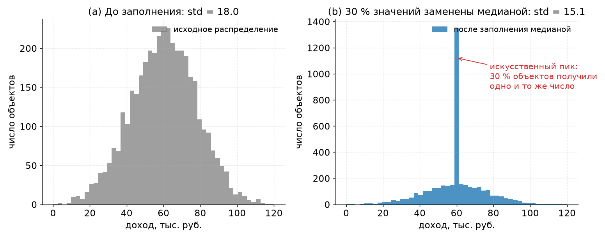
Признак «доход» до и после заполнения 30 % пропусков медианой. Обратите внимание на разные шкалы по вертикали: слева максимум столбца около 220 объектов, справа — около 1350. Этот единственный сверхвысокий столбец и есть искусственный пик — тридцать процентов объектов получили одно и то же число. Стандартное отклонение падает с 18.0 до 15.1, связи признака с остальными размываются, а модель при этом не знает, что значение выдумано; ровно это и лечится индикатором пропуска. Индикатор полезен, когда сам факт отсутствия значения информативен. Например, если клиент не указал номер телефона или доход, это может быть связано с поведением, риском или сегментом клиента.
Но индикатор не всегда помогает: если пропуски полностью случайны, он может добавить только шум.
Стоит помнить, что современные бустинги умеют работать с пропусками сами: XGBoost, LightGBM и CatBoost при построении разбиения проверяют оба варианта — отправить
NaNвлево или вправо — и выбирают тот, что лучше по критерию.Это часто лучше любого заполнения: модель сама решает, как обращаться с пропуском, причём по-разному в разных узлах дерева, и никакой информации не теряется. Отсюда практический совет: если вы работаете с градиентным бустингом, начните с варианта «оставить
NaNкак есть» и сравните с заполнением — нередко первое побеждает.А вот sklearn-овские
DecisionTreeClassifier, линейные модели, kNN и SVM пропуски не принимают, и там заполнение обязательно.Что такое imputation?
Это заполнение пропущенных значений в данных перед обучением модели. Цель — сохранить объекты и признаки, не ломая алгоритмы, которые не умеют работать с
NaN.Почему нельзя заполнять пропуски до train/test split?
Потому что статистики заполнения будут посчитаны с учётом тестовой выборки. Это утечка данных: модель косвенно получает информацию из теста, и качество оказывается завышенным.
Чем отличаются mean, median и mode imputation?
Среднее чувствительно к выбросам, медиана устойчивее для числовых признаков, мода применяется для категориальных признаков или дискретных значений.
Когда полезен missing indicator?
Когда сам факт пропуска несёт сигнал. Например, отсутствие заполненного поля может характеризовать пользователя не хуже, чем само значение.
Почему MNAR-пропуски нельзя полностью исправить простой заменой средним?
Потому что причина пропуска связана с самим неизвестным значением. Простая замена скрывает этот механизм и может вносить систематическое смещение.
Чем платят за простое заполнение медианой?
Занижается дисперсия признака (появляется искусственный пик из одинаковых значений), размываются корреляции с другими признаками и могут возникать несуществующие сочетания — например, 22-летний клиент с медианным доходом в 80 000. Кроме того, модель не знает, что значение выдумано; это лечится добавлением индикатора пропуска.
Как градиентные бустинги работают с пропусками и почему это часто лучше заполнения?
XGBoost, LightGBM и CatBoost при выборе разбиения проверяют оба варианта — отправить
NaNв левую или правую ветвь — и выбирают лучший по критерию. Решение принимается отдельно в каждом узле, информация о пропуске не теряется, поэтому результат нередко лучше любого предварительного заполнения.
-
MiceForest — метод заполнения пропусков, основанный на идее MICE (Multiple Imputation by Chained Equations), где признаки с пропусками последовательно предсказываются по остальным признакам с помощью ансамблей деревьев.
Если совсем простыми словами: пропуски заполняются не константой, а предсказанием модели. Столбец с дырками временно объявляется целевой переменной, все остальные столбцы — признаками, обучается лес, и он «угадывает» пропущенные значения по остальным данным об объекте. Затем то же самое делается для следующего столбца, и так по кругу.
Пусть пропуски есть в двух столбцах — «доход» и «стаж».
- Итерация 1. Чтобы предсказать доход, нужен стаж, но он тоже местами пуст. Поэтому сначала обе колонки грубо заполняются медианой. Затем доход предсказывается по остальным признакам, включая наспех заполненный стаж. Потом стаж предсказывается по признакам, включая уже уточнённый доход.
- Итерация 2. Доход пересчитывается заново — теперь уже по улучшенному стажу. Стаж пересчитывается по улучшенному доходу.
- И так далее, обычно 3–10 итераций, пока значения не перестанут заметно меняться.
Отсюда и название chained equations: заполнение каждого столбца зависит от текущего состояния остальных, и качество растёт по кругу. Одной итерации мало именно потому, что на первом проходе модели опираются на грубые начальные заглушки.
Схема одного круга MICE для двух колонок с пропусками. На шаге 0 обе грубо заполняются медианой. Затем «доход» объявляется целевой переменной, остальные столбцы — признаками, и лес предсказывает пропущенные доходы; следом то же самое делается для «стажа», уже с учётом уточнённого дохода. На второй итерации доход пересчитывается по улучшенному стажу, и так 3–10 раз, пока значения не перестанут меняться. Отсюда и название chained equations: заполнение каждого столбца зависит от текущего состояния остальных. Если в нескольких столбцах есть пропуски, MICE строит цепочку моделей:
- Временно заполняет пропуски простыми значениями.
- Выбирает один признак с пропусками как целевой.
- Обучает модель предсказывать этот признак по остальным.
- Обновляет пропущенные значения предсказаниями.
- Повторяет процесс для других признаков и несколько итераций уточняет заполнение.
Деревья и ансамбли деревьев хорошо подходят для такого заполнения, потому что умеют ловить нелинейные зависимости, взаимодействия признаков и смешанные типы данных. Поэтому MiceForest часто даёт более реалистичные значения, чем среднее, медиана или линейная регрессия.
Часто упускаемая деталь: MICE изначально предполагает несколько вариантов заполнения, а не один.
Идея в том, что заполненное значение — это оценка с неопределённостью, и притворяться, будто мы знаем доход точно, некорректно. Поэтому создают, скажем, 5 копий датасета с разными правдоподобными заполнениями (модель предсказывает не среднее, а сэмплирует из распределения), обучают модель на каждой и смотрят на разброс результатов.
Разброс показывает, насколько выводы зависят от способа заполнения. Если он велик, доверять результатам нельзя, и это важный сигнал, которого простое заполнение медианой не даёт в принципе. В прикладных ML-задачах чаще берут одно заполнение ради простоты, но знать о смысле буквы «M» стоит.
- Метод может быть заметно медленнее простых imputer-ов.
- Его нужно обучать только на train-части или внутри кросс-валидации.
- Если признаки с пропусками слабо предсказуемы по остальным, сложная модель заполнения не спасёт качество.
- Заполненные значения выглядят правдоподобно, но всё равно остаются модельными догадками.
MiceForest уместен в табличных задачах, где:
- пропусков много, но выбрасывать строки нельзя;
- признаки связаны нелинейно;
- простая медиана слишком грубо портит распределения;
- качество модели чувствительно к способу обработки пропусков.
Что такое MICE?
MICE — это итеративное заполнение пропусков, где каждый признак с пропусками по очереди предсказывается по остальным признакам.
Почему MICE называется chained equations?
Потому что для разных признаков строится цепочка взаимосвязанных моделей: заполнение одного столбца зависит от текущих заполнений других столбцов.
Чем MiceForest лучше простой замены медианой?
Он учитывает зависимости между признаками и может восстанавливать разные значения для разных объектов, а не подставлять одну и ту же константу.
Почему MiceForest может быть дорогим?
Нужно обучать много моделей: для разных признаков с пропусками и несколько итераций подряд. На больших таблицах это может быть медленно.
Как правильно использовать MiceForest в ML-пайплайне?
Обучать заполнение только на train-данных и применять к validation/test. При кросс-валидации imputer должен быть внутри pipeline, чтобы не было утечки данных.
Зачем в MICE нужно несколько итераций?
На первом проходе пропуски заполнены грубыми заглушками (медианой), поэтому модели опираются на неточные данные. С каждой итерацией заполнения уточняются: доход пересчитывается по уже улучшенному стажу, стаж — по улучшенному доходу. Обычно делают 3–10 итераций, пока значения не стабилизируются.
Что означает «multiple» в Multiple Imputation by Chained Equations?
Метод создаёт несколько версий заполненного датасета, сэмплируя значения из предсказательного распределения, а не подставляя одну оценку. Модель обучается на каждой версии, и разброс результатов показывает, насколько выводы зависят от способа заполнения. Простое заполнение медианой такой информации не даёт.
-
SMOTE
SMOTE (Synthetic Minority Over-sampling Technique) — метод борьбы с дисбалансом классов. Он создаёт новые синтетические объекты миноритарного класса, интерполируя признаки между реальными объектами этого класса и их ближайшими соседями.
Если совсем простыми словами: редких объектов мало, поэтому мы дорисовываем правдоподобные «промежуточные». Берём двух похожих мошенников из данных и придумываем третьего, чьи признаки лежат где-то между ними. Он никогда не существовал, но выглядит как настоящий.
Есть мошенническая транзакция $x_i$ = (сумма 15 000, возраст счёта 20 дней, число операций за час 7). Её ближайший сосед того же класса $x_j$ = (сумма 25 000, возраст счёта 10 дней, число операций 9).
Берём случайное $\lambda = 0.3$ и строим точку на отрезке между ними:
- сумма: $15\,000 + 0.3 \cdot (25\,000 - 15\,000) = 18\,000$;
- возраст счёта: $20 + 0.3 \cdot (10 - 20) = 17$ дней;
- число операций: $7 + 0.3 \cdot (9 - 7) = 7.6$.
Обратите внимание на последнюю строку: 7.6 операций — величина, которой не бывает в природе. Это типичная проблема SMOTE с целочисленными и категориальными признаками, и именно поэтому для смешанных данных нужен SMOTENC, а не обычный SMOTE.
SMOTE не заполняет пропуски. Это метод oversampling-а: он меняет обучающую выборку так, чтобы редкий класс был представлен сильнее.
Для объекта миноритарного класса $x_i$ выбирается один из ближайших соседей того же класса $x_j$. Новый объект строится на отрезке между ними:
$$ x_{\text{new}} = x_i + \lambda (x_j - x_i), \quad \lambda \in [0, 1]. $$
Так модель видит не просто копии редких объектов, а дополнительные точки в области миноритарного класса.
Миноритарный класс (розовый) сильно меньше мажоритарного. SMOTE берёт объект, находит $k$ ближайших соседей того же класса и рождает новые объекты на отрезках между ними --- не копии, а интерполяции. Делается только на обучающей выборке. 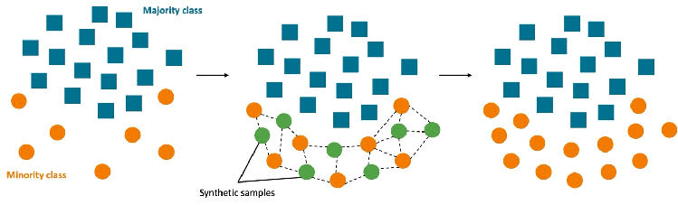
Иллюстрация того, как добавляются новые синтетические данные. Источник SMOTE применяют только к train-части. Если сделать oversampling до train/test split или до кросс-валидации, синтетические объекты могут оказаться почти копиями объектов из валидации или теста. Это завысит метрики.
Стоит понимать, с чем именно мы боремся. При 1% положительных объектов происходит следующее:
- Функция потерь почти не замечает редкий класс. Ответ «всегда 0» даёт 99% accuracy и очень маленький лосс — модели просто невыгодно учиться распознавать редкий класс.
- Данных о редком классе физически мало. При 500 мошеннических транзакциях модель видит слишком мало вариантов, чтобы выучить их разнообразие.
Важно, что SMOTE лечит только вторую проблему, причём не добавляя настоящей информации — синтетические точки построены из тех же 500 объектов. С первой проблемой борются иначе: весами классов в функции потерь или сдвигом порога.
Отсюда практический вывод, который часто удивляет новичков: начинать стоит не со SMOTE, а с
class_weight='balanced'и подбора порога. Это дешевле, не искажает данные и часто работает не хуже.Ещё одна частая ошибка — балансировать выборку ради того, чтобы «модель начала предсказывать единицы».
Дело в том, что oversampling меняет априорное соотношение классов, а значит и калибровку предсказанных вероятностей: обученная на сбалансированных данных модель систематически завышает вероятность редкого класса. Если вам нужны честные вероятности (например, для расчёта ожидаемых убытков), после SMOTE их придётся калибровать.
А если нужны просто метки, то того же эффекта можно добиться сдвигом порога на исходной модели — без искажения данных и без единого синтетического объекта.
- Если классы сильно пересекаются, SMOTE создаст новые объекты в неоднозначной зоне.
- Если в данных много шума, метод размножит шумные наблюдения.
- Для категориальных признаков обычный SMOTE не всегда корректен; нужны специальные варианты вроде SMOTENC.
- При сильном дисбалансе часто лучше сравнить SMOTE с
class_weightи настройкой порога классификации.
Что делает SMOTE?
Создаёт синтетические объекты миноритарного класса между существующими объектами и их соседями, чтобы уменьшить дисбаланс классов.
Почему SMOTE нельзя применять до train/test split?
Потому что синтетические точки могут попасть одновременно в обучение и тест через близкие исходные объекты. Это утечка данных и завышение качества.
Чем SMOTE отличается от простого дублирования объектов?
Дублирование копирует старые объекты, а SMOTE создаёт новые точки между соседями. Это делает область редкого класса плотнее, но не просто повторяет строки.
Когда SMOTE может ухудшить качество?
Когда классы пересекаются, данные шумные или признаки плохо подходят для интерполяции. Тогда синтетические объекты могут запутать границу классов.
Какие есть альтернативы SMOTE?
class_weight, undersampling большинства, настройка порога, ансамбли для дисбаланса, сбор новых данных и выбор метрик вроде PR-AUC/F1 вместо accuracy.С какой именно проблемой дисбаланса борется SMOTE, а с какой нет?
Дисбаланс создаёт две проблемы: функции потерь невыгодно учиться редкому классу и данных о редком классе физически мало. SMOTE смягчает вторую, уплотняя область редкого класса, но новой информации не добавляет — синтетические точки построены из тех же объектов. С первой проблемой борются весами классов и сдвигом порога.
Почему после SMOTE предсказанные вероятности становятся некалиброванными?
Oversampling меняет априорное соотношение классов в обучении, поэтому модель систематически завышает вероятность редкого класса относительно реальной частоты. Если вероятности нужны для расчётов (например, ожидаемых убытков), их приходится калибровать отдельно.
Почему SMOTE плохо работает с категориальными и целочисленными признаками?
Он строит новую точку линейной интерполяцией между двумя объектами, что для таких признаков даёт бессмысленные значения — «7.6 операций» или дробную категорию. Для смешанных данных используют SMOTENC, который обрабатывает категориальные признаки отдельно (берёт наиболее частое значение среди соседей).
-
RFECV
RFECV (Recursive Feature Elimination with Cross-Validation) — метод отбора признаков, который рекурсивно удаляет наименее важные признаки и выбирает лучшее число признаков по кросс-валидации.
Если совсем простыми словами: это отсев по принципу «слабейший выбывает». Обучили модель, посмотрели, какой признак оказался самым бесполезным, выбросили его, обучили заново — и так далее. Кросс-валидация при этом на каждом шаге замеряет качество, чтобы в конце сказать, на каком количестве признаков останавливаться.
Логичный вопрос: зачем переобучать модель десятки раз, если можно обучить её однажды, посмотреть
feature_importances_и отрезать хвост?Причина в том, что важность признака зависит от того, какие другие признаки присутствуют:
- Два сильных, но дублирующих друг друга признака (рост в сантиметрах и рост в дюймах) «делят» важность пополам, и оба выглядят посредственно. Стоит удалить один — второй немедленно становится очень важным. При однократной сортировке вы рискуете выкинуть оба.
- Признак может быть бесполезен сам по себе, но ценен в паре с другим. После удаления партнёра его важность обрушится.
Рекурсивность и решает эту проблему: после каждого удаления важности пересчитываются заново на уже изменённом наборе.
Обычный RFE работает так:
- Обучаем модель на текущем наборе признаков.
- Получаем важности признаков:
coef_илиfeature_importances_. - Удаляем один или несколько наименее важных признаков.
- Повторяем, пока не останется нужное число признаков.
RFECV добавляет к этому кросс-валидацию: он проверяет качество при разном числе оставшихся признаков и выбирает размер подмножества автоматически.
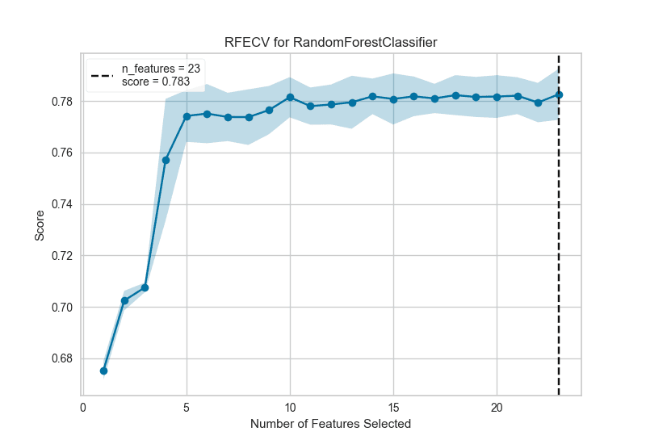
Постепенное добавление признаков в задаче обучения модели Random Forest. После добавления 10 признаков для задачки из примера особенного прироста качества не наблюдается - можно останавливаться На графике по горизонтали — число оставленных признаков, по вертикали — метрика кросс-валидации. Кривая обычно ведёт себя одинаково:
- слева круто растёт — признаков слишком мало, модели не хватает информации;
- выходит на плато — все действительно полезные признаки уже добавлены;
- справа может слегка снижаться — лишние шумовые признаки начинают мешать.
Выбирают точку в начале плато, а не формальный максимум: разница между 10 и 25 признаками часто лежит внутри доверительного интервала, а модель на 10 признаках проще, быстрее и устойчивее. В
sklearnдля этого есть параметрmin_features_to_select, а сама кривая лежит вcv_results_.RFECV нужен estimator, который умеет оценивать важность признаков. Например:
- линейная модель с коэффициентами;
- логистическая регрессия;
- линейный SVM;
- деревья, Random Forest, Gradient Boosting.
Для KNN без важностей признаков обычный RFECV напрямую не подходит.
- Дорого. Модель обучается на каждом шаге удаления и на каждом фолде: при 100 признаках, шаге 1 и 5 фолдах это 500 обучений. Помогает параметр
step(удалять не по одному, а по 5–10% признаков за раз). - Утечка при неправильном порядке. Отбор признаков должен быть внутри pipeline, обучаемого на каждом фолде. Если отобрать признаки на всех данных, а потом «честно» прогнать кросс-валидацию, признаки уже выбраны с учётом валидации, и оценка будет завышенной.
- Смещённые важности у деревьев.
feature_importances_завышает вклад признаков с большим числом уникальных значений. Признак с высокой кардинальностью может пережить отсев не по заслугам — надёжнее использовать permutation importance. - Масштаб у линейных моделей. Если важность берётся из
coef_, признаки обязаны быть отмасштабированы: иначе коэффициент отражает единицы измерения, а не значимость. - Жадность метода. RFECV не перебирает все подмножества, а удаляет по одному, и «правильную» комбинацию может не найти. Это компромисс между качеством и вычислимостью.
Что такое RFE?
Recursive Feature Elimination — рекурсивное удаление признаков: модель обучается, оценивает важности, затем наименее важные признаки удаляются.
Чем RFECV отличается от RFE?
RFE требует заранее задать число признаков. RFECV подбирает это число по кросс-валидации, сравнивая качество на разных размерах подмножества.
Почему RFECV дорогой?
Он многократно обучает модель: для каждого шага удаления признаков и для каждого фолда кросс-валидации.
Какие модели подходят для RFECV?
Модели с
coef_илиfeature_importances_: линейные модели, деревья, случайный лес, бустинг. Для моделей без важностей нужен другой способ оценки признаков.Почему RFECV нужно запускать внутри pipeline?
Чтобы выбор признаков делался только по train-части каждого фолда. Иначе признаки выбираются с учётом validation/test, и метрика становится завышенной.
Почему нельзя просто один раз отсортировать признаки по важности и отрезать хвост?
Важность признака зависит от состава остальных признаков. Два дублирующих друг друга сильных признака делят важность пополам и оба выглядят слабыми — при однократной сортировке можно выкинуть оба. RFE пересчитывает важности после каждого удаления, поэтому такие эффекты учитываются.
Как выбирать число признаков по графику RFECV?
Брать точку в начале плато, а не формальный максимум метрики: разница между, скажем, 10 и 25 признаками обычно лежит внутри доверительного интервала, а модель с меньшим числом признаков проще, быстрее и устойчивее в продакшене.
Почему для RFECV с деревьями надёжнее permutation importance?
Встроенный
feature_importances_систематически завышает важность признаков с большим числом уникальных значений — у них больше возможных порогов разбиения. Из-за этого шумный признак с высокой кардинальностью может пережить отсев незаслуженно.
-
Bayesian optimization
Bayesian optimization — метод подбора гиперпараметров для дорогих функций качества. В ML такой функцией часто является результат кросс-валидации:
$$ f(\lambda) = \text{CV-score модели с гиперпараметрами } \lambda. $$
Мы хотим найти хорошие $\lambda$, обучив как можно меньше моделей.
Если совсем простыми словами: метод учится на своих же попытках. Grid search и random search слепы — они пробуют точки, не глядя на предыдущие результаты. Байесовская оптимизация после каждого запуска обновляет представление о том, где может быть хорошо, и следующую точку выбирает осознанно.
Ключевое слово в определении — дорогая. Одно вычисление $f(\lambda)$ здесь означает полное обучение модели с 5-кратной кросс-валидацией: от минут до часов.
Когда одна проверка стоит час, разница между 200 и 30 запусками — это разница между неделей и днём. Поэтому имеет смысл потратить секунды на «раздумья» о том, какую точку проверить следующей: время на выбор ничтожно по сравнению со стоимостью самой проверки.
И наоборот: если модель обучается за секунду, думать дольше, чем считать, бессмысленно — там выигрывает random search, который просто прогонит тысячу точек, пока байесовский метод строит свои модели.
Вместо слепого перебора Bayesian optimization строит приближение функции качества:
- surrogate model — модель, которая предсказывает качество для ещё не проверенных гиперпараметров;
- acquisition function — правило, которое выбирает следующую точку для проверки.
Метод балансирует исследование новых областей и уточнение областей, где уже видно хорошее качество.
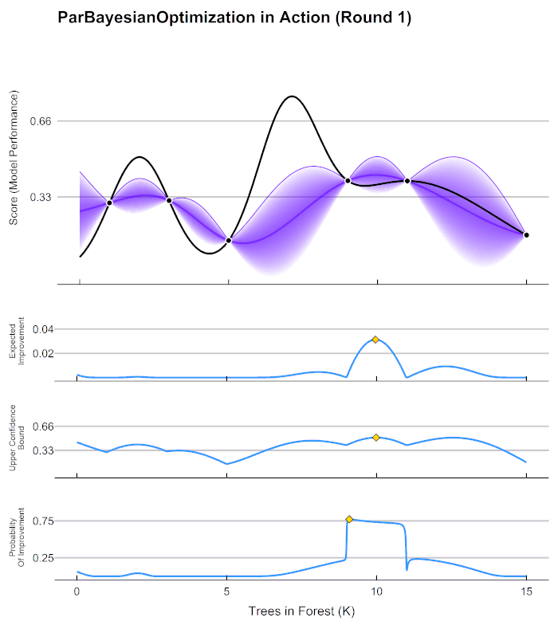
Байесовская оптимизация одномерной функции. Вероятностная модель обновляется после наблюдений, а критерий семплирования указывает, как выбирать будущие точки для проведения следующих оценок. Механику проще всего понять на аналогии с поиском самого глубокого места в озере, где каждое измерение — это спуск водолаза.
- Surrogate model — ваша карта дна, построенная по уже сделанным замерам. Она даёт не только ожидаемую глубину в каждой точке, но и неуверенность: рядом с замерами карта надёжна, вдали от них — почти ничего не известно. Обычно это гауссовский процесс или TPE.
- Acquisition function — правило выбора следующей точки. Оно объединяет две вещи: «где по карте ожидается глубоко» (exploitation) и «где карта ничего не знает» (exploration). Популярный вариант — Expected Improvement: ожидаемое улучшение относительно лучшего найденного результата.
Баланс здесь принципиален. Метод, который только уточняет лучшую найденную область, застрянет в локальном оптимуме; метод, который только исследует новое, выродится в random search. Acquisition function и держит эти две силы в равновесии.
- Grid search проверяет заранее заданную сетку и плохо масштабируется с числом гиперпараметров.
- Random search часто эффективнее сетки, но не использует историю прошлых запусков.
- Bayesian optimization использует результаты прошлых запусков, чтобы выбирать следующие кандидаты умнее.
На практике часто используют:
- Optuna;
- Hyperopt;
- scikit-optimize;
- Ray Tune.
Внутри могут использоваться Gaussian Process, TPE, Random Forest и другие surrogate-модели.
Bayesian optimization не магия:
- Переоптимизация под валидацию. Метод целенаправленно ищет максимум CV-метрики, а значит и шум этой метрики тоже. Сотни запусков находят конфигурацию, которой повезло на конкретном разбиении, — на тесте выигрыш исчезает.
- Шумная оценка ломает surrogate. Если один и тот же $\lambda$ при повторном запуске даёт разный CV-score, карта строится по противоречивым замерам. Помогают фиксация
random_stateи больше фолдов. - Последовательность мешает параллелизму. Метод по своей природе выбирает точки по очереди; random search параллелится на сто машин тривиально, а здесь нужны специальные схемы.
- Search space важнее оптимизатора. Если задать
learning_rateв диапазоне $[0.5, 1.0]$, никакой алгоритм не спасёт. Диапазоны для «мультипликативных» параметров (learning rate, регуляризация) задают в логарифмической шкале, а не в равномерной.
Что такое Bayesian optimization?
Это последовательный способ подбора гиперпараметров, который строит модель функции качества и выбирает следующие запуски с учётом уже полученных результатов.
Чем она отличается от grid search и random search?
Grid search и random search не используют историю запусков для выбора следующей точки. Bayesian optimization использует её через surrogate-модель.
Что такое surrogate model?
Это вспомогательная модель, которая приближает неизвестную функцию качества: по уже проверенным гиперпараметрам пытается предсказать качество новых.
Что делает acquisition function?
Выбирает следующую точку для проверки, балансируя exploration и exploitation: исследовать неизвестные области или проверять область, где ожидается высокий score.
Когда Bayesian optimization не стоит использовать?
Когда модель обучается очень быстро, гиперпараметров мало, пространство поиска плохо задано или оценка качества слишком шумная. Тогда random search может быть проще и надёжнее.
Почему байесовская оптимизация окупается только для дорогих функций?
Метод тратит время на построение surrogate-модели и выбор следующей точки. Это оправдано, когда одно вычисление $f(\lambda)$ — полное обучение с кросс-валидацией, длящееся минуты или часы. Если модель обучается за секунду, «раздумья» стоят дороже самих проверок, и random search окажется эффективнее.
Что такое exploration и exploitation в acquisition function?
Exploitation — проверять там, где surrogate предсказывает высокое качество; exploration — там, где surrogate неуверен, то есть замеров ещё не было. Чистый exploitation застревает в локальном оптимуме, чистый exploration вырождается в random search. Expected Improvement и подобные функции удерживают баланс.
Почему диапазоны для learning rate задают в логарифмической шкале?
Такие параметры влияют мультипликативно: разница между 0.001 и 0.01 куда существеннее, чем между 0.31 и 0.32. При равномерной сетке почти все точки попадут в область больших значений, и малые порядки останутся непроверенными.
-
Пайплайн классической ML-модели
Пайплайн классической ML-модели — воспроизводимая последовательность шагов от сырых данных до финальной оценки модели: постановка задачи, разбиение, анализ, предобработка, обучение, подбор гиперпараметров, оценка и интерпретация.
Если совсем простыми словами: это рецепт, который можно повторить и получить тот же результат. Не «я где-то поколдовал в ноутбуке, и вышло 0.87», а последовательность шагов, которую воспроизведёт коллега, автоматический перезапуск через месяц и продакшен.
Обратите внимание: разбиение данных стоит вторым пунктом, до EDA и предобработки. Это не случайность и самая частая ошибка новичков.
Всё, что вы делаете, глядя на данные целиком, — это решение, принятое с учётом теста:
- посчитали среднее для заполнения пропусков по всей таблице $\to$ статистики теста попали в обучение;
- отобрали признаки по корреляции с таргетом на всех данных $\to$ отбор «подсмотрел» тест;
- увидели на EDA выброс и удалили его во всей выборке $\to$ почистили и тест тоже, чего в продакшене сделать не сможете.
Правило: сначала отрезаем test и забываем о нём, и только потом смотрим, чистим, кодируем и обучаем. Технически это обеспечивает
Pipeline— вся предобработка внутри него переобучается на каждом фолде заново.- Сформулировать задачу и целевую метрику.
- Разделить данные на train/validation/test или настроить кросс-валидацию.
- Провести EDA.
- Собрать предобработку в
Pipeline/ColumnTransformer. - Обучить простой baseline.
- Сравнить несколько моделей.
- Подобрать гиперпараметры на validation/CV.
- Проверить финальную модель на test.
- Проанализировать ошибки и важные признаки.
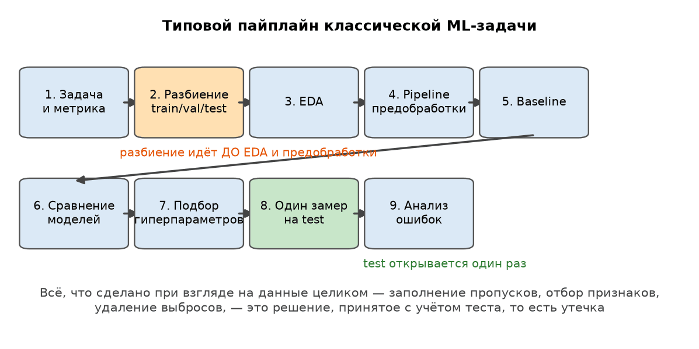
Девять шагов из списка выше в виде схемы. Оранжевым выделен шаг 2 — разбиение данных: оно стоит до EDA и до любой предобработки, и это не педантизм, а единственная защита от утечки. Зелёным выделен шаг 8: test открывается ровно один раз, когда модель, признаки и гиперпараметры уже выбраны. Шаг 9 — анализ ошибок — обычно пропускают, хотя пользы от него, как правило, больше, чем от очередного перебора гиперпараметров. Baseline — это не формальность, а точка отсчёта, без которой любое число бессмысленно. Минимальный baseline занимает пять минут:
- классификация — предсказывать всегда мажоритарный класс (
DummyClassifier); - регрессия — всегда предсказывать медиану или среднее (
DummyRegressor); - временные ряды — предсказывать вчерашнее значение.
Смысл в том, что ROC-AUC 0.78 может быть отличным результатом на сложной задаче — и провалом там, где логистическая регрессия «из коробки» даёт 0.85. Пока нет baseline, вы не знаете, какой из этих случаев ваш.
Отдельная ценность baseline — диагностическая: если сложная модель едва обходит константу, дело почти всегда в данных или в постановке задачи, а не в недостаточно подобранных гиперпараметрах.
Обычно смотрят accuracy только как грубую стартовую метрику. Для несбалансированных классов важнее: Precision, Recall, $F_1$, ROC AUC, PR AUC, confusion matrix и выбор порога под бизнес-задачу.
Обычно начинают с MAE/RMSE/$R^2$, но для практических задач полезно дополнительно смотреть квантили абсолютной ошибки: $p_{50}$, $p_{75}$, $p_{95}$, $p_{99}$. Они показывают не только среднее качество, но и хвосты ошибок.
Пункт 9 обычно пропускают, а он даёт больше пользы, чем очередной перебор гиперпараметров. Разбор ошибок отвечает не на вопрос «сколько ошибок», а на вопрос «какие именно»:
- По сегментам. Модель в среднем хороша, но полностью разваливается на новых клиентах или в одном регионе. Часто это лечится отдельным признаком или отдельной моделью, а не тюнингом.
- По самым большим промахам. Посмотрите 20 объектов с максимальной ошибкой. Регулярно выясняется, что это ошибки разметки, дубликаты или объекты, у которых нужного признака физически нет.
- По матрице ошибок. Какие классы путаются между собой — прямая подсказка, каких данных или признаков не хватает.
- По важности признаков. Если в топе оказался идентификатор или дата загрузки — вы нашли утечку.
Test-выборка используется один раз — после выбора модели, предобработки и гиперпараметров. Если после test-оценки продолжить подгонять решение, нужен новый независимый test или честная внешняя проверка.
Зачем нужен единый ML-пайплайн?
Чтобы все шаги от предобработки до модели выполнялись одинаково на train, validation и test, а эксперимент был воспроизводимым.
Почему сначала нужен baseline?
Baseline показывает минимальный разумный уровень качества. Без него непонятно, даёт ли сложная модель реальный выигрыш.
Где подбираются гиперпараметры?
На validation или через кросс-валидацию. Test не используется для подбора.
Что значит анализ ошибок?
Это разбор объектов, где модель ошибается сильнее всего: по классам, сегментам, значениям признаков, редким категориям или хвостам распределения.
Почему важно фиксировать random_state и версии библиотек?
Чтобы результаты можно было воспроизвести. Иначе изменение разбиения или версии алгоритма может поменять метрики.
Почему разбиение данных делают до EDA и предобработки?
Любое решение, принятое при взгляде на все данные сразу, учитывает тест: среднее для заполнения пропусков, отбор признаков по корреляции с таргетом, удаление выбросов. Это утечка, из-за которой оценка становится завышенной. Правильный порядок — отрезать test, забыть о нём и только потом смотреть, чистить и обучать.
Что взять в качестве baseline и зачем он нужен?
Для классификации — предсказание мажоритарного класса (
DummyClassifier), для регрессии — константа (медиана или среднее), для временных рядов — вчерашнее значение. Без точки отсчёта непонятно, хорош ли результат: ROC-AUC 0.78 может быть отличным на сложной задаче и провалом там, где логистическая регрессия даёт 0.85.Что искать при анализе ошибок?
Сегменты, где модель систематически проваливается; объекты с максимальной ошибкой (часто это ошибки разметки или дубликаты); пары классов, которые модель путает между собой; подозрительные признаки в топе важности — идентификаторы и даты там обычно означают утечку.
-
Логистическая регрессия
Исходя из названия, можно подумать, что это очередной алгоритм регрессии, но это не так. Логистическая регрессия применяется для задач классификации.
Пусть $x_i$ — входные данные, $y_i$ — целевые значения, $w$ (веса) и $b$ (смещение) — параметры модели. Вспомним, как выглядит модель линейной регрессии:
$$\hat{y}_i = w x_i + b,$$
Тогда модель логистической регрессии будет выглядеть так:
$$\hat{y}_i = \sigma(w x_i + b),$$
где $\sigma$ — сигмоида.
Если линейная или полиномиальная регрессия предсказывают вещественное число $\mathbb{R}$, то логистическая регрессия предсказывает вероятность того, что объект принадлежит к классу $1$ (для бинарного случая). Мы используем сигмоиду для того, чтобы преобразовать вещественное число в псевдо-вероятность, лежащую в диапазоне $[0, 1]$.
Так как выходы логистической регрессии — это вероятности, то мы снова можем настраивать пороговое значение классификации, чтобы получить наивысшие метрики качества классификации (см. оптимизацию метрик классификации).
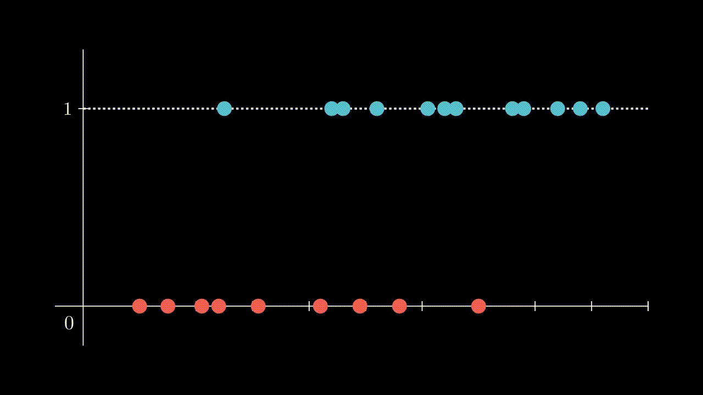
Оптимизация порога классификации для логистической регрессии Обычно сигмоиду объясняют так: нужно было сжать число в отрезок $[0,1]$, взяли подходящую функцию. Это верно, но неполно — у неё есть точное происхождение.
Введём шансы (odds) — отношение вероятности события к вероятности его отсутствия: $\frac{p}{1-p}$. Если $p = 0.8$, шансы равны 4, то есть «четыре к одному». Шансы лежат в диапазоне $[0, +\infty)$, а их логарифм — логит — уже в $(-\infty, +\infty)$, ровно как выход линейной модели.
Логистическая регрессия и постулирует, что линейная комбинация признаков предсказывает именно логит:
$$\log \frac{p}{1-p} = wx + b$$
Выразив отсюда $p$, вы получите сигмоиду — она не выбрана произвольно, а выведена из этого уравнения.
Отсюда и содержательная интерпретация коэффициентов: вес $w_j$ показывает, на сколько меняется логарифм шансов при увеличении признака на единицу, а $e^{w_j}$ — во сколько раз меняются сами шансы. Коэффициент 0.7 при признаке «есть просрочки» означает, что просрочки увеличивают шансы дефолта примерно вдвое ($e^{0.7} \approx 2$). Именно за такую интерпретируемость логистическую регрессию любят в медицине и скоринге.
Одномерный пример: метки 0 и 1, модель $p(y=1\mid x)=\sigma(wx+b)$. Градиентный спуск по log-loss делает сигмоиду всё круче и сдвигает её туда, где классы меняются; справа --- падение потерь по шагам. Граница классов --- точка, где $p=0.5$. Сигмоида — это функция, которая преобразует любое действительное число $\mathbb{R}$ в значение между $0$ и $1$:
$$\sigma(x) = \frac{1}{1 + e^{-x}},$$
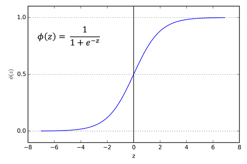
График сигмоиды В качестве функции потерь для логистической регрессии обычно используют log-loss (= binary cross-entropy loss):
$$L(y, \hat{y}) = -y \log(\hat{y}) - (1 - y) \log(1 - \hat{y}),$$
где $y$ — целевое значение, $\hat{y}$ — предсказание модели.
Логичный вопрос: раз модель выдаёт число, почему бы не обучать её на привычной квадратичной ошибке? Есть две причины, и обе серьёзные.
- MSE в связке с сигмоидой даёт невыпуклую функцию потерь. У неё появляются локальные минимумы, и градиентный спуск может застрять. Log-loss с сигмоидой, наоборот, выпукла — у неё единственный минимум, который гарантированно находится.
- MSE почти не даёт градиента при уверенной ошибке. Производная сигмоиды $\sigma'(z) = \sigma(z)(1-\sigma(z))$ обращается в ноль на краях. Если модель уверенно ответила 0.999, а правильный ответ 0 — она грубо ошиблась, но при MSE градиент окажется ничтожным, и обучение практически встанет. У log-loss эти множители сокращаются, и градиент получается пропорционален ошибке $(\hat{y} - y)$: чем грубее промах, тем сильнее коррекция.
Второй пункт — это тот же аргумент, по которому кросс-энтропию предпочитают в нейросетях.
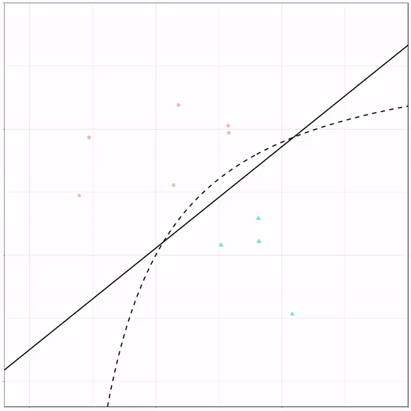
Визуализация классификации с помощью логистической регрессии Многоклассовая логистическая регрессия
Для многоклассовой логистической регрессии вместо сигмоиды используется функция softmax, которая преобразует выходы модели в "вероятности" по всем классам так, чтобы их сумма была равна 1:
$$\text{softmax}(z_i) = \frac{e^{z_i}}{\sum_{j=1}^K e^{z_j}}$$
где $K$ — число классов.
Пусть у нас классификация на 4 класса. Пусть модель выдала следующие выходы:
$$z = [0.3750,\ -1.5378,\ -0.6234,\ -0.9105]$$
Прогоним их через softmax:
$$\text{softmax}(z) = [\textcolor{red}{0.5578},\ 0.0824,\ 0.2055,\ 0.1543]$$
Сумма вероятностей равна 1. Наибольшая вероятность у первого класса, поэтому в качестве финального предсказания модели для переданного объекта мы выбираем класс 1.
Для многоклассовой логистической регрессии используется кросс-энтропийный лосс.
Пусть $y$ — истинный класс (one-hot вектор), $\hat{p}$ — предсказанные вероятности (выход softmax). Тогда функция потерь для одного объекта:
$$L(y, \hat{p}) = -\sum_{k=1}^K y_k \log \hat{p}_k$$
где $K$ — число классов, $y_k = 1$ только для правильного класса, $\hat{p}_k$ — вероятность, предсказанная моделью для класса $k$.
Если записать для одного объекта с истинным классом $c$:
$$L = -\log \hat{p}_c$$
Таким образом, модель наказывается, если вероятность правильного класса мала.
One-hot вектор — это вектор длины $K$ (где $K$ — число классов), в котором все элементы равны 0, кроме одного, который равен 1 и указывает на правильный класс. Например, если у нас 4 класса и правильный класс — второй, то one-hot вектор будет:
$$\begin{bmatrix} 0 \\ 1 \\ 0 \\ 0 \end{bmatrix}$$
Такой вектор удобно использовать для вычисления кросс-энтропийного лосса, так как только вероятность правильного класса участвует в функции потерь.
- Модель линейна по границе решения. $wx + b = 0$ задаёт прямую (гиперплоскость), поэтому логистическая регрессия не разделит данные, где граница изогнута. Лечится добавлением нелинейных признаков — произведений, полиномов, преобразований.
- Нужно масштабирование. Само по себе оно на предсказания не влияет, но с регуляризацией (а она в sklearn включена по умолчанию!) штраф зависит от масштаба весов, и признаки в разных единицах штрафуются несопоставимо.
Cв sklearn — это $1/\lambda$. МеньшеC— сильнее регуляризация. Направление обратно интуиции, и это частый источник ошибок.- Полное разделение классов ломает обучение. Если классы разделимы идеально, оптимальные веса уходят в бесконечность (модель бесконечно наращивает уверенность). Регуляризация это предотвращает — ещё одна причина не отключать её.
- Вероятности хорошо калиброваны. Это редкое достоинство: логистическая регрессия по построению даёт вероятности, близкие к реальным частотам, в отличие от бустингов и наивного Байеса.
В чём отличие логистической регрессии от линейной?
Логистическая регрессия — алгоритм классификации, а не регрессии. Она применяет сигмоиду к линейному предсказанию: $\hat{y} = \sigma(wx + b)$, преобразуя вещественное число в вероятность принадлежности к классу $[0, 1]$.
Для чего используется softmax в многоклассовой классификации?
Softmax преобразует вектор logits (выходов модели) в вектор вероятностей, суммирующихся до 1: $\text{softmax}(z_i) = e^{z_i} / \sum_j e^{z_j}$. Класс с максимальной вероятностью — предсказание модели.
Какая функция потерь используется для логистической регрессии и почему?
Log-loss (binary cross-entropy): $L = -y\log\hat{y} - (1-y)\log(1-\hat{y})$. Она штрафует модель пропорционально уверенности в неправильном ответе. Для многоклассовой классификации — cross-entropy: $L = -\log\hat{p}_c$ (логарифм вероятности правильного класса).
Что такое one-hot encoding и зачем он используется в классификации?
One-hot вектор: метка класса представлена вектором из нулей с одной единицей на позиции правильного класса. Используется для вычисления cross-entropy loss — позволяет сравнивать предсказанные вероятности с "идеальным" распределением (одна 1, остальные 0).
Откуда берётся сигмоида и как интерпретировать коэффициенты модели?
Модель постулирует, что линейная комбинация признаков предсказывает логит — логарифм шансов $\log\frac{p}{1-p}$. Выразив отсюда $p$, получаем сигмоиду. Отсюда интерпретация: вес $w_j$ показывает изменение логарифма шансов при росте признака на единицу, а $e^{w_j}$ — во сколько раз меняются сами шансы.
Почему логистическую регрессию обучают на log-loss, а не на MSE?
Во-первых, MSE в связке с сигмоидой даёт невыпуклую функцию потерь с локальными минимумами. Во-вторых, производная сигмоиды обращается в ноль на краях, поэтому при уверенной ошибке градиент MSE ничтожен и обучение останавливается. У log-loss эти множители сокращаются, и градиент пропорционален ошибке $(\hat{y}-y)$.
Что произойдёт при полностью разделимых классах и почему?
Оптимальные веса уходят в бесконечность: модель может бесконечно увеличивать уверенность, продолжая уменьшать log-loss, поскольку идеального нуля он достигает лишь в пределе. Обучение не сходится или даёт огромные коэффициенты. Регуляризация предотвращает это, ограничивая величину весов.
Почему логистической регрессии нужно масштабирование, хотя сама по себе она к нему нечувствительна?
Без регуляризации масштаб влияет лишь на величину коэффициентов, но не на предсказания. Однако регуляризация штрафует веса, а их величина зависит от единиц измерения признака, поэтому признаки в разных масштабах штрафуются несопоставимо. В sklearn регуляризация включена по умолчанию, поэтому масштабировать нужно всегда.
-
Решающее дерево — это логический алгоритм классификации.
Если совсем простыми словами: это игра в «Угадай кто». Модель задаёт последовательность вопросов с ответом «да / нет» («возраст больше 60?», «есть просрочки?») и после каждого сужает круг вариантов. Когда вопросы заканчиваются, объект оказывается в листе, где записан ответ.
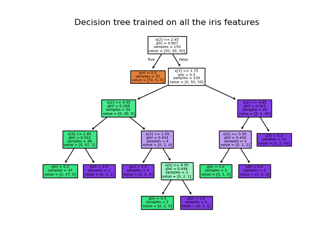
Пример визуализации решающего дерева в sklearnЕсли признак "возраст" > 60 и "пациент ранее перенёс инфаркт", то операцию не делать, риск отрицательного исхода 60%.
Если "В анкете указан номер телефона" и "зарплата > 2000$" и "сумма кредита < 5000$", то кредит можно выдать, риск дефолта 5%.
Формулировка «выбираем лучшее разбиение» ничего не объясняет, пока не сказано, что значит «лучшее». А значит она следующее: разбиение хорошо, если после него в получившихся группах стало больше порядка.
Механика на каждом узле:
- Перебираем все признаки и для каждого — все разумные пороги (обычно середины между соседними значениями).
- Для каждого варианта мысленно делим объекты на две группы и считаем, насколько уменьшилась «неоднородность» (её измеряют критерием — Джини, энтропией или MSE для регрессии).
- Берём вариант с максимальным уменьшением и делим узел по нему.
- Повторяем для каждой из двух получившихся групп.
Пример: если в узле 50 объектов класса 0 и 50 класса 1, а разбиение по признаку «доход > 80 тыс.» даёт группы «45 против 5» и «5 против 45» — беспорядка стало сильно меньше, разбиение отличное. А если получилось «25 против 25» и «25 против 25» — не изменилось ничего, такой признак бесполезен.
Слева дерево режет плоскость прямоугольниками, параллельными осям, справа растёт само дерево: каждый уровень — ещё один вопрос «признак $\le$ порог». На глубине 8 листья становятся крошечными полосками вокруг отдельных точек — дерево подстраивается под шум. Обратите внимание на слово «повторяем» в описании выше: дерево принимает решение в каждом узле по отдельности, исходя только из текущего шага, и никогда не пересматривает его.
Это делает алгоритм быстрым, но не гарантирует оптимальности: поиск наилучшего дерева целиком — NP-полная задача, и на практике её не решают. Разбиение, дающее лучший прирост сейчас, может закрыть путь к паре отличных разбиений уровнем ниже.
Классический пример — XOR-зависимость: ответ равен 1, когда ровно один из двух бинарных признаков равен 1. По каждому признаку в отдельности прироста нет вообще, поэтому жадный алгоритм не видит смысла делить. Но стоит сделать «бесполезное» разбиение, и на следующем уровне задача решается идеально. Отчасти поэтому post-pruning работает лучше ранней остановки — он строит дерево целиком и обрезает потом.
Перед тем как обучать логический алгоритм классификации, нужно пройти несколько этапов:
- Выбор семейства правил для поиска закономерностей
- Выбор критерия информативности
- Построение классификатора
Рассмотрим признак $f_j(x)$ и значения $a_j, b_j$. Часто в качестве семейства правил для поиска закономерностей используются:
Пороговое условие (решающий пень, decision stump): $$f_j(x) \leq a_j$$ или $$a_j \leq f_j(x) \leq b_j$$
Конъюнкция пороговых условий: $$\underbrace{[a_j \leq f_j(x) \leq b_j]}_{\text{первое условие}} \land \underbrace{[a_k \leq f_k(x) \leq b_k]}_{\text{второе условие}} \land \dots \land \underbrace{[a_l \leq f_l(x) \leq b_l]}_{\text{последнее условие}}$$
или в сокращённой записи: $$\bigwedge_{j=1}^{l} [a_j \leq f_j(x) \leq b_j]$$
Идея в том, что нужно простыми правилами покрыть каждый класс по отдельности, описать, какими свойствами обладают объекты, чтобы мы могли их классифицировать к тому или иному классу. Каждое такое правило достаточно простое и не может целиком выделить целый класс.
Решающее дерево — это конъюнкция пороговых условий.
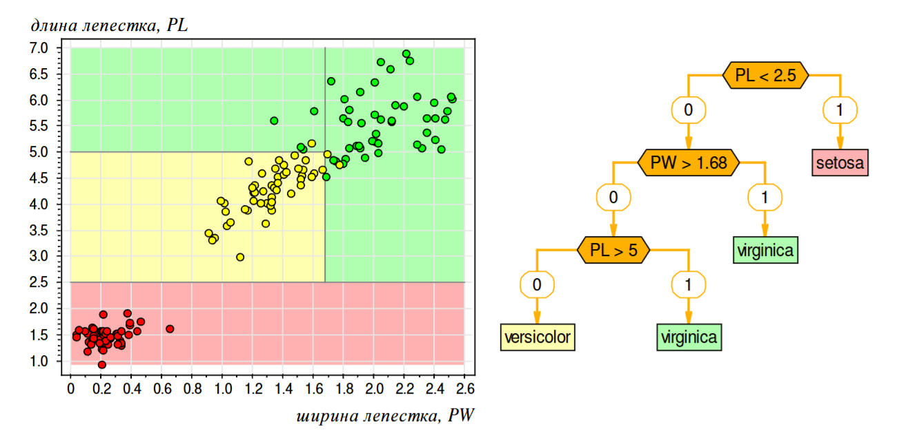
Пример визуализации решающего дерева на примере задачи классификации ирисов Фишера Лист — это не только метка класса. В нём хранится распределение обучающих объектов, попавших в эту область, и из него получается всё остальное:
- метка класса — самый частый класс среди них (мода);
- вероятность — доля объектов класса в листе. Если в лист попало 8 объектов класса 1 и 2 объекта класса 0,
predict_probaвернёт 0.8; - значение при регрессии — среднее (или медиана) ответов объектов листа.
Отсюда, кстати, видно, почему вероятности одиночного дерева грубые: они принимают лишь несколько дискретных значений, определяемых числом объектов в листе. У листа с двумя объектами возможны только 0, 0.5 и 1 — калиброванными такие вероятности не назовёшь, и это ещё одна причина использовать ансамбли.
Links
Ресурс Описание Decision and Classification Trees, Clearly Explained! Пошаговое построение деревьев классификации: структура узлов, расчёт Gini Impurity для категорий и чисел, выбор порогов. StatQuest: Decision Trees, Part 2 - Feature Selection and Missing Data Автоматический выбор признаков. Методы работы с пропусками: заполнение модой, корреляция с другими признаками, использование среднего, медианы или линейной регрессии. Regression Trees, Clearly Explained!!! Построение деревьев регрессии для прогноза чисел: минимизация суммы квадратов остатков (SSR) для поиска порогов, борьба с переобучением через лимиты в узлах. Решающие деревья Определение дерева, идея построения и определение меток в листьях. Классификация, регрессия. Меры неоднородности (Джини и т.п). Оценка важности признаков. Обработка пропусков, суррогатные расщепления. Категориальные признаки. Хорошо описаны границы применения, + и − деревьев. Есть мат. формулы, но написано понятно и последовательно. Что такое решающее дерево и как принимается решение о классе?
Дерево — цепочка пороговых условий на признаки. Каждый внутренний узел делит объекты по правилу $f_j(x) \leq a_j$. Объект проходит через ветви до листа, где получает предсказанный класс (или значение при регрессии).
Что такое критерий информативности и как он используется при построении дерева?
Критерий (Джини, энтропия, MSE для регрессии) измеряет "неоднородность" подмножества объектов. При построении дерево выбирает разбиение, максимально уменьшающее неоднородность в получившихся подмножествах — ищет наиболее информативный признак и порог.
Почему решающее дерево склонно к переобучению?
Без ограничений дерево растёт до тех пор, пока каждый лист не содержит один объект — идеальное запоминание обучающих данных, но нулевая обобщаемость. Регуляризация: ограничение глубины, минимального числа объектов в листе, прунинг.
Чем деревья решений удобны в ML по сравнению с логистической регрессией?
Не требуют масштабирования признаков, естественно обрабатывают категориальные признаки, устойчивы к выбросам, легко интерпретируемы. Но нестабильны (чувствительны к небольшим изменениям данных) и склонны к переобучению. Ансамбли (Random Forest, Boosting) исправляют эти недостатки.
Как именно дерево выбирает разбиение в узле?
Перебирает все признаки и все разумные пороги (обычно середины между соседними значениями), для каждого варианта считает, насколько уменьшится неоднородность в получившихся группах по выбранному критерию (Джини, энтропия, MSE), и берёт вариант с максимальным уменьшением. Затем процедура повторяется для каждой из полученных групп.
Почему построение дерева называют жадным и чем это плохо?
Решение принимается в каждом узле по отдельности, исходя только из текущего прироста, и никогда не пересматривается. Поиск оптимального дерева целиком — NP-полная задача. Из-за жадности алгоритм может не увидеть зависимость вроде XOR, где по каждому признаку в отдельности прироста нет, а вместе они дают идеальное разделение.
Что хранится в листе дерева и почему вероятности одиночного дерева грубые?
В листе лежит распределение попавших в него обучающих объектов: метка — мода, вероятность — доля класса, для регрессии — среднее. Поэтому вероятности принимают лишь несколько дискретных значений, определяемых числом объектов в листе: у листа с двумя объектами возможны только 0, 0.5 и 1.
-
Критерии ветвления
Как построить бинарное решающее дерево по множеству данных обучающей выборки? Чтобы лучше понимать этот процесс, давайте возьмём очень простой пример разбиения последовательности красных и синих шаров, собственно, на красные и синие.
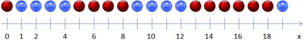
Последовательность красных и синих шаров Здесь вектор признаков состоит из одной компоненты и представляет собой число — номер позиции шара. Это единственный признак, по которому можно выполнять разбиение данной последовательности. Обозначим его как $x$, а порог разбиения как $t$. В каждой промежуточной вершине бинарного решающего дерева будет использован предикат вида $x \leq t$:
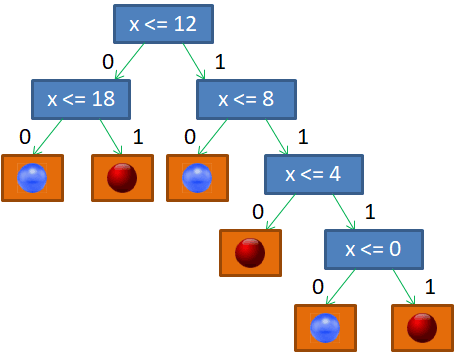
Построить дерево можно, например, так Почему именно так? В действительности, можно было бы придумать и другие варианты. В каждой вершине порог $t$ следует выбирать так, чтобы в одной части было как можно больше представителей только одного какого-либо класса (шаров одного цвета), а в другой — все оставшиеся. То есть, это некий критерий здравого смысла, естественная эвристика, которая сокращает глубину дерева.
А зачем нам минимизировать глубину решающего дерева? Пусть оно получается таким, каким сделает его алгоритм. Например, будем поочерёдно перебирать пороги $t$ от $0$ до $19$ и рано или поздно гарантированно разобьём последовательность шаров на красные и синие.
Да, дерево будет значительно глубже, ну и что? Однако здесь всегда следует помнить, что данная последовательность — всего лишь обучающая выборка.
Мы предполагаем использовать это дерево и для других подобных последовательностей с несколько другим распределением синих и красных шаров. Иначе, это была бы не задача машинного обучения, а просто разбиение конкретной выборки. Так вот, можно заметить, что чем меньше глубина решающего дерева, тем меньше используется порогов разбиения и тем выше, в среднем, обобщающая способность такого дерева. Именно поэтому стараются строить деревья минимальной глубины.
Критерий ветвления — это функция, которая определяет, насколько хорошо разбиение разделяет данные по классам. Он помогает выбирать, по какому признаку и какому порогу делать разбиение.
Если совсем простыми словами: это способ измерить беспорядок в узле числом. Пока «хорошее разбиение» остаётся словами, алгоритм не может ничего выбрать. Как только беспорядок выражен числом, задача превращается в понятный перебор: пробуем все варианты и берём тот, где беспорядка стало меньше всего.
Порог по признаку делит объекты на две группы; для каждого положения порога считается взвешенная примесь (Gini или энтропия) двух групп. Дерево перебирает все пороги и берёт тот, где примесь минимальна --- это и есть одно ветвление. В примере в каждой промежуточной вершине порог $t$ выбирался так, чтобы в одной части было как можно больше представителей одного класса (шаров одного цвета), а в другой как получится — то есть все оставшиеся. Это некая эвристика.
Наша цель — наделить алгоритм примерно такой же эвристикой. Математики обратили свои взоры в ранние наработки самых разных формул и представили миру несколько критериев качества предикатов. Одним из популярных стала энтропия:
$$H(x) = -\sum_{i=1}^{n} p_i \log_2 p_i$$
Известно, что эта величина является некой характеристикой хаотичности системы. Чем больше разнообразия, тем выше энтропия, и наоборот, чем больше порядка, тем она меньше. Её можно естественным образом использовать для оценки характеристики текущего разбиения каждой вершины.
- Пусть у нас есть 6 шаров, из которых 4 красных и 2 синих. Вероятность вытащить красный шар равна $\frac{4}{6}$, а синий $\frac{2}{6}$. Тогда энтропия будет равна: $$H(x) = -\left( \frac{4}{6} \log_2 \frac{4}{6} + \frac{2}{6} \log_2 \frac{2}{6} \right) = 0.918$$
- Пусть у нас есть 6 шаров, из которых 5 красных и 1 синий. Тогда энтропия будет равна: $$H(x) = -\left( \frac{5}{6} \log_2 \frac{5}{6} + \frac{1}{6} \log_2 \frac{1}{6} \right) = 0.65$$
- Пусть у нас есть 6 шаров, из которых 6 красных и 0 синих. Тогда энтропия будет равна: $$H(x) = -\left( \frac{6}{6} \log_2 \frac{6}{6} + \frac{0}{6} \log_2 \frac{0}{6} \right) = 0$$
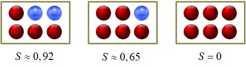
Пример энтропии Такую характеристику в решающих деревьях называют impurity (неопределённость/смешанность/разрозненность). Чем она меньше, тем лучше (качественнее) набор данных в вершине. И наоборот, чем она больше, тем разнообразнее (хаотичнее) данные в вершине.
Если вернуться к примеру с шарами, то у нас там 11 красных и 9 синих шаров. Последовательность состоит из $N=2$ классов с вероятностями появления каждого из них:
$$p_1 = \frac{11}{20}, \quad p_2 = \frac{9}{20}$$
Следовательно, impurity (в данном случае энтропия) корневой вершины дерева равна:
$$S_0 = -\left( \frac{11}{20} \log_2 \frac{11}{20} + \frac{9}{20} \log_2 \frac{9}{20} \right) = 0.993$$
Далее, мы выбираем предикат с порогом $t = 12$ ($x \leq 12$) и получаем две подвыборки с impurity (энтропиями):
$$S_1 = -\frac{5}{13}\log_2\frac{5}{13} - \frac{8}{13}\log_2\frac{8}{13} = 0.96$$
$$S_2 = -\frac{6}{7}\log_2\frac{6}{7} - \frac{1}{7}\log_2\frac{1}{7} = 0.6$$
Замечание: Величина 0,6 значительно меньше начального значения $0,993$, а значит, во второй последовательности больше порядка, чем в исходной. И это очень хорошо. Именно этого мы и добиваемся, выбирая порог $t$.
Теперь нам нужно на основе величин $S_0, S_1, S_2$ сформировать единый критерий (одно число), по которому мы бы судили о качестве разбиения выборки на две подвыборки. Это также можно выполнить различными способами, но часто используется следующая формула под названием информационный выигрыш (information gain):
$$IG(Q) = S_0 - \sum_{i=1}^{q} \frac{N_i}{N} S_i,$$
где $q$ — число групп (подвыборок) после разбиения; $N_i$ — число элементов в $i$-й группе после разбиения; $Q$ — критерий разбиения (предикат). Вычислим информационный выигрыш для нашего примера:
$$IG(x \leq 12) = S_0 - \frac{13}{20}S_1 - \frac{7}{20}S_2 = 0.16$$
Замечание: Если посчитать этот критерий для других порогов $t$, то окажется, что при $t = 12$ имеем наибольшее значение. Значит, это наилучшее разбиение с точки зрения выбранных критериев: энтропии и информационного выигрыша.
Математически поиск наилучшего предиката в текущей вершине дерева можно записать так:
$$t^{*} = \arg\max_{t \in T} IG(t)$$
В качестве impurity, помимо энтропии, также используют другие критерии. Например, Критерий Джини (Gini impurity):
$$G(x) = 1 - \sum_{i=1}^{n} p_i^2,$$
где $p_i$ — вероятность (частота) появления объектов $i$-го класса в вершине дерева.
Оба критерия измеряют одно и то же и почти всегда дают одинаковые деревья, но у каждого есть своя интерпретация:
- Джини $= 1 - \sum p_i^2$ — вероятность ошибиться, если случайно выбрать объект из узла и приписать ему класс случайно, согласно долям классов в этом узле. Чисто вероятностная величина.
- Энтропия $= -\sum p_i \log_2 p_i$ — среднее число бит, нужных для кодирования класса объекта. Величина из теории информации.
Практические различия минимальны:
- на бинарной задаче максимум Джини равен 0.5, энтропии — 1, но графики почти совпадают по форме;
- энтропия чуть сильнее «наказывает» неоднородные узлы (из-за логарифма) и потому изредка строит чуть более сбалансированные деревья;
- Джини считается быстрее — нет логарифма, только умножения, а критерий вычисляется миллионы раз. Поэтому он и стоит в sklearn по умолчанию.
Если на собеседовании спрашивают, что выбрать, честный ответ: разница между ними почти всегда меньше, чем разница от изменения
max_depthилиmin_samples_leaf, поэтому подбирать стоит скорее их.Важный дефект критерия, о котором стоит знать.
Information gain систематически предпочитает признаки с большим числом уникальных значений. Крайний случай — идентификатор клиента: разбиение по нему даёт листы из одного объекта, каждый идеально «чистый», и прирост информации получается максимальным. Формально критерий отработал безупречно, содержательно — модель выучила таблицу и ничего не обобщила.
Тот же эффект, только мягче, возникает у любого признака высокой кардинальности (почтовый индекс, номер товара) и у непрерывных признаков с множеством уникальных значений.
Следствия:
- существует поправка — Gain Ratio (в C4.5), нормирующая прирост на «дробность» разбиения;
- в sklearn деревья бинарные, что смягчает проблему, но не убирает её;
- отсюда же берётся смещение
feature_importances_, о котором говорилось в других вопросах: признаки высокой кардинальности выглядят важнее, чем они есть.
На практике критерий Джини работает почти так же, как и энтропия. Это хорошо видно из графиков данных критериев при бинарной классификации.
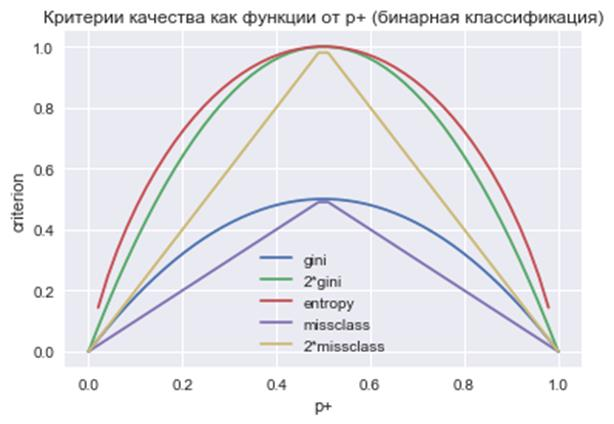
Деревья, построенные на обучающих данных, могут работать неэффективно на новых данных. Отсутствие обобщающей способности приводит к переобучению и является проблемой для деревьев решений. В результате алгоритмы решающих деревьев имеют множество гиперпараметров, которые можно настраивать в процессе обучения. Большинство из них связаны с тем, когда следует останавливать обучение.
DecisionTreeClassifier из
sklearnимеет гиперпараметрmax_depth, который контролирует, сколько разбиений делать перед остановкой обучения.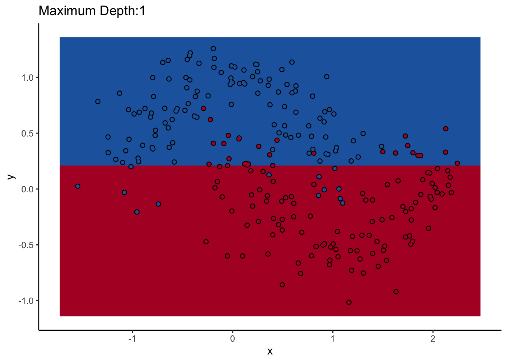
Перебор глубины дерева 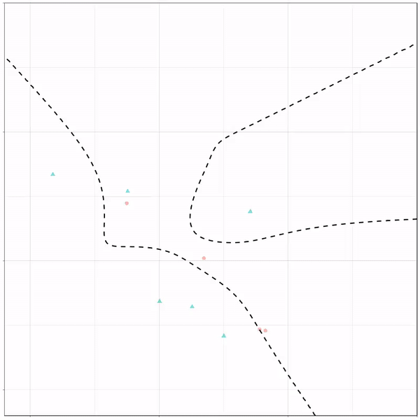
Пример решающего дерева. Показано решение бинарной классификации с постепенным увеличением обучающего датасета. Видно, что разделяющая гиперплоскость не шибко меняется с какого-то момента. Пунктирной линией показана разделяющая гиперплоскость, которая очень хорошо разделяет классы. Что такое критерий ветвления и зачем он нужен?
Критерий ветвления — функция оценки качества разбиения в вершине дерева. Он определяет, по какому признаку и порогу делать разбиение, чтобы получать максимально "чистые" подвыборки и строить дерево минимальной глубины.
Что такое impurity и как энтропия её измеряет?
Impurity — мера хаотичности класс-состава вершины. Энтропия $H(x) = -\sum_i p_i \log_2 p_i$: при однородном узле (один класс) равна 0, при равномерном распределении — максимальна. Чем меньше impurity, тем "чище" разбиение.
Что такое information gain и как он используется для выбора порога?
$IG(Q) = S_0 - \sum_i \frac{N_i}{N} S_i$ — снижение impurity после разбиения. Лучший предикат: $t^* = \arg\max_t IG(t)$. Перебираются все пороги по всем признакам, выбирается тот, что даёт наибольший выигрыш.
Чем критерий Джини отличается от энтропии?
Gini: $G(x) = 1 - \sum_i p_i^2$. Вычислительно проще (нет логарифма). На практике даёт почти идентичные результаты с энтропией — графики практически совпадают. sklearn по умолчанию использует Gini.
Почему деревья переобучаются и как с этим борются?
Без ограничений дерево запоминает обучающую выборку целиком (глубина = числу объектов). Борются регуляризацией:
max_depth,min_samples_leaf,min_samples_split— эти гиперпараметры ограничивают рост дерева и улучшают обобщение.Как интерпретируются Джини и энтропия и почему по умолчанию берут Джини?
Джини — вероятность ошибиться, приписав случайному объекту узла случайный класс согласно долям классов. Энтропия — среднее число бит для кодирования класса. Результаты почти совпадают, но Джини не требует вычисления логарифма и потому считается быстрее, а критерий вычисляется миллионы раз за обучение.
Почему information gain смещён в пользу признаков с большим числом уникальных значений?
Такой признак позволяет нарезать выборку на множество мелких идеально чистых групп: в пределе разбиение по идентификатору клиента даёт листы из одного объекта с нулевой impurity и максимальным приростом. Формально критерий оптимален, содержательно модель просто запомнила таблицу. Поправкой служит Gain Ratio, нормирующий прирост на дробность разбиения.
Почему стремятся строить деревья минимальной глубины?
Обучающая выборка — лишь пример из общего распределения, и глубокое дерево описывает именно её частности, а не закономерность. Чем меньше глубина, тем меньше порогов разбиения и тем на большем числе объектов основано каждое решение, а значит выше обобщающая способность.
-
Деревья для регрессии
Дерево регрессии — это решающее дерево, в котором предсказываемая переменная является не категориальной, а непрерывной. Вместо попытки отнести объект к одному из классов, дерево регрессии оценивает числовое значение (например, цену, возраст, доход, время и т. п.).
Если совсем простыми словами: дерево разбивает объекты на группы и в каждой предсказывает среднее. Всем квартирам, попавшим в лист «площадь > 80 и центр», оно назовёт одну и ту же цену — среднюю по обучающим квартирам этого листа.
Отсюда самая важная особенность деревьев в регрессии: предсказание кусочно-постоянно. Внутри одного листа ответ не меняется вовсе, а на границе листа скачет ступенькой.
Это порождает два практических ограничения:
- Плавную зависимость дерево приближает лестницей. Линейный тренд оно вынуждено набирать множеством мелких ступенек, тратя на это глубину, тогда как линейная регрессия описала бы его двумя числами.
- Экстраполяции нет вообще. Обучили дерево на квартирах площадью до 100 м², спрашиваем про 300 м² — объект попадёт в крайний правый лист и получит то же значение, что и стометровая квартира. Никакого продолжения тренда не будет: дерево умеет только усреднять то, что видело.
Именно поэтому для задач с явным трендом (временные ряды, экстраполяция) деревья и их ансамбли применяют либо с осторожностью, либо в связке с линейной моделью, которая берёт на себя тренд.
Мы хотим предсказать стоимость квартиры по признакам
площадь,этажирайон. Дерево регрессии будет делить пространство признаков так, чтобы в каждом листе оказались квартиры с как можно более похожими ценами.Основная идея аналогична классификационным деревьям: данные рекурсивно разбиваются на подмножества с использованием пороговых условий. Однако в листьях теперь содержится числовое значение прогноза — обычно среднее значение целевой переменной по всем объектам листа:
$$\hat{y}_L = \frac{1}{|L|} \sum_{i \in L} y_i$$
Критерий ветвления для деревьев регрессии — это функция, измеряющая "однородность" значений целевой переменной внутри подвыборки. Наиболее часто используют следующие меры:
- Среднеквадратичную ошибку (MSE): $$MSE = \frac{1}{|L|} \sum_{i \in L} (y_i - \bar{y}_L)^2$$
- Среднюю абсолютную ошибку (MAE): $$MAE = \frac{1}{|L|} \sum_{i \in L} |y_i - \tilde{y}_L|$$
Чем меньше значение ошибки в листьях, тем лучше разбиение.
Пусть у нас есть данные о цене автомобилей. Признак — возраст машины, целевая переменная — цена. Алгоритм будет искать пороговое значение возраста, при котором разброс цен в каждой подгруппе минимален:
$$t^{*} = \arg\min_{t \in T} \left( \sum_{x_i \le t} (y_i - \bar{y}_{left})^2 + \sum_{x_i > t} (y_i - \bar{y}_{right})^2 \right)$$
После выбора оптимального порога дерево делится на две ветви, и процесс продолжается рекурсивно до выполнения условия остановки (например, минимальное число объектов в листе).
Деревья регрессии, как и классификационные, склонны к переобучению. Поэтому применяются те же методы регуляризации:
- ограничение глубины дерева (
max_depth) - минимальное количество объектов в листе (
min_samples_leaf) - минимальное уменьшение ошибки при разбиении (
min_impurity_decrease)
Пример работы дерева регрессии. Видно, что модель аппроксимирует зависимость кусочно-постоянной функцией. Глубокие деревья склонны к переобучению, поэтому здесь дерево глубины 5 сильно переобучилось под обучающую выборку. Здесь есть приятная внутренняя логика, которую стоит заметить: критерий и значение в листе согласованы.
Если разбиения оцениваются по MSE, то оптимальное предсказание внутри листа — среднее, поскольку именно среднее минимизирует сумму квадратов отклонений. Если же берётся критерий MAE, оптимальным значением становится медиана.
Отсюда практический вывод: выбирая
criterion='absolute_error', вы получаете дерево, устойчивое к выбросам с обеих сторон — и в выборе разбиений, и в значениях листьев. Платить за это придётся скоростью: MAE-критерий считается заметно дольше, чем MSE.Критерий Дерево классификации Дерево регрессии Целевая переменная Категориальная (класс: $0,1,\dots,M$) Непрерывная (числовое значение) Критерий ветвления Энтропия, Джини, информационный выигрыш Среднеквадратичная ошибка (MSE), MAE Значение в листьях Класс с наибольшей вероятностью Среднее значение целевой переменной Интерпретация "К какому классу относится объект?" "Какое числовое значение нужно предсказать?" Примеры задач Классификация писем (спам/не спам), диагноз болезни Прогноз цены, дохода, температуры, времени Библиотека sklearn DecisionTreeClassifierDecisionTreeRegressorЧем дерево регрессии отличается от дерева классификации?
Целевая переменная непрерывна, а не категориальна. В листьях — среднее значение $\hat{y}_L = \frac{1}{|L|}\sum_{i \in L} y_i$. Критерий ветвления — MSE или MAE, а не энтропия/Джини. Предсказание — число, а не класс.
Как выбирается порог разбиения в дереве регрессии?
Перебираются все признаки и пороги; выбирается тот, что минимизирует взвешенную сумму MSE в двух потомках: $t^* = \arg\min_t \left(\sum_{x_i \leq t}(y_i - \bar{y}_{left})^2 + \sum_{x_i > t}(y_i - \bar{y}_{right})^2\right)$.
Как дерево регрессии аппроксимирует непрерывную функцию?
Кусочно-постоянной функцией: в каждой области пространства признаков предсказание — среднее по обучающей выборке в этой области. Глубокие деревья "запоминают" каждый объект — переобучение.
Какие методы регуляризации применяются к деревьям регрессии?
max_depth— ограничение глубины,min_samples_leaf— минимум объектов в листе,min_impurity_decrease— минимальное снижение MSE при разбиении. Те же, что и для классификации — логика одинакова.Почему дерево регрессии не умеет экстраполировать?
Предсказание в листе — среднее по обучающим объектам, попавшим в эту область. За пределами диапазона обучающих значений новых листьев нет, объект попадает в крайний, и получает то же значение, что и самый крайний обучающий объект. Продолжения тренда не возникает в принципе — дерево умеет только усреднять то, что видело.
Почему при критерии MSE в листе стоит среднее, а при MAE — медиана?
Значение в листе выбирается так, чтобы минимизировать тот же критерий, по которому оценивается разбиение. Среднее минимизирует сумму квадратов отклонений, медиана — сумму модулей. Поэтому
criterion='absolute_error'даёт дерево, устойчивое к выбросам и в выборе разбиений, и в предсказаниях, но считается заметно медленнее.
-
Плюсы и минусы решающих деревьев
Почти все свойства дерева следуют из одного факта: дерево режет пространство признаков на прямоугольные области, перпендикулярными осям порогами вида «признак > порог», и в каждой области выдаёт константу.
Отсюда сразу:
- масштаб признака не важен — порог просто пересчитается ($x > 5000$ рублей и $x > 5$ тысяч рублей дают одно и то же разбиение);
- нелинейность даётся бесплатно — достаточно нарезать больше кусочков;
- предсказание за пределами обучающих данных невозможно — там просто нет ни одного кусочка, и дерево вернёт константу ближайшего;
- зато диагональную границу дерево вынуждено аппроксимировать «лесенкой» из множества разрезов, что расточительно и неустойчиво.
Истинная граница между классами — диагональ $x_2 = x_1$. Слева (a) линейная модель описывает её одной прямой. Справа (b) решающее дерево глубины 8 вынуждено набирать ту же диагональ ступеньками из горизонтальных и вертикальных отрезков: границы его областей всегда перпендикулярны осям. Каждая ступенька стоит отдельного разбиения, а по краям, где данных мало, лесенка заметно уезжает от истинной границы — отсюда и расточительность дерева на таких зависимостях, и его неустойчивость. - Хорошо улавливают нелинейные зависимости между признаками и целевой переменной.
- Интерпретируемы: дерево можно визуализировать и легко объяснить заказчику логику принятия решения.
- Работают с категориальными признаками и пропусками.
- Не требуют масштабирования или нормализации признаков.
- Склонны к переобучению, особенно при большой глубине дерева.
- Не умеют экстраполировать — предсказывают только в пределах обучающей выборки.
- Чувствительны к гиперпараметрам: глубина, минимальное число объектов в листе и др.
- Самостоятельное дерево часто уступает ансамблям (бэггинг, бустинг) по качеству.
Возьмём датасет и обучим дерево. Затем удалим один объект и обучим заново.
Если удалённый объект влиял на выбор признака в корне (а в корне признаки часто конкурируют почти на равных — скажем, «доход» даёт прирост критерия 0.0312, а «возраст» 0.0309), то корневое разбиение поменяется. А вместе с корнем полностью изменится и всё дерево ниже: другие подвыборки, другие пороги, другая структура.
Это и есть высокая дисперсия: модель сильно зависит от конкретной обучающей выборки. Отсюда прямое следствие — деревья идеально подходят на роль базовых моделей для бэггинга: усреднение множества шумных, но несмещённых моделей резко снижает разброс, и именно на этом построен Random Forest.
- «Дерево работает с пропусками» — зависит от реализации. Механизмы есть в CatBoost, LightGBM, XGBoost (пропуск отправляется в ту ветку, где выгоднее), но
DecisionTreeClassifierиз sklearn пропуски не принимает и упадёт с ошибкой. - «Интерпретируемо» верно только для неглубоких деревьев. Дерево глубины 20 — это до миллиона листьев; проследить путь формально можно, но объяснить бизнесу такую логику уже нельзя.
- Важность признаков у дерева смещена. Встроенный
feature_importances_завышает вклад признаков с большим числом уникальных значений, потому что у них больше возможных порогов. Для честной оценки берут permutation importance или SHAP. - «Не требует масштабирования» не означает «не требует предобработки». Пропуски, редкие категории с высокой кардинальностью и утечки остаются проблемой.
Почему решающие деревья интерпретируемы?
Дерево визуализируется как цепочка условий "если-то". Можно проследить путь от корня до листа и понять, почему модель приняла то или иное решение. Это ценно в медицине, финансах, юриспруденции.
Почему деревья не умеют экстраполировать?
Предсказание в листе — среднее или мода обучающей выборки в данной области. За пределами обучающих значений признаков дерево возвращает то же значение, что и в крайнем листе — нет экстраполяции. Нейросети и линейные модели в этом смысле лучше.
Почему одиночное дерево уступает ансамблям?
Дерево — нестабильная модель: малые изменения данных сильно меняют структуру. Высокая дисперсия. Ансамбли (Random Forest — бэггинг, XGBoost — бустинг) усредняют или последовательно исправляют ошибки, снижая дисперсию или смещение.
Что значит "не требует масштабирования"?
Дерево делит пространство пороговыми условиями по каждому признаку независимо. Сдвиг или масштабирование признака не меняет порядок значений, а значит и разбиение. Для KNN, SVM, линейных моделей это не так.
Почему одно удалённое наблюдение может полностью изменить дерево?
В узле признаки часто конкурируют почти на равных, и небольшое изменение выборки меняет победителя. Если поменялось разбиение в корне, вся структура ниже строится на других подвыборках — дерево меняется целиком. Это и есть высокая дисперсия, из-за которой деревья хорошо подходят как базовые модели для бэггинга.
Почему встроенный
feature_importances_дерева может вводить в заблуждение?Он основан на суммарном приросте критерия и систематически завышает важность признаков с большим числом уникальных значений: у них больше возможных порогов, поэтому больше шансов случайно дать хороший прирост. Надёжнее permutation importance или SHAP.
-
Как можно регуляризировать решающее дерево?
Регуляризация дерева — это способы ограничить сложность модели, чтобы предотвратить переобучение.
Если совсем простыми словами: не давать дереву расти до тех пор, пока в каждом листе не останется по одному объекту. Ничем не ограниченное дерево всегда доучится до нулевой ошибки на обучающей выборке — просто выделив каждому объекту персональный лист. Это не знание, а запоминание, и на новых данных такая модель бесполезна.
Дерево без ограничений на выборке из 1000 объектов доходит до 1000 листьев: в каждом ровно один объект, ошибка на train равна нулю, а на тесте — катастрофа.
Наглядно это видно на «правилах», которые оно выучивает: вместо осмысленного «если доход выше 80 тысяч и просрочек нет — кредит вернут» появляется «если доход между 81 200 и 81 400, возраст 34 года и стаж 5 лет — вернёт», то есть описание одного конкретного клиента из обучающей выборки. Новый клиент под такое правило не подойдёт никогда.
Ограничение
min_samples_leaf=20физически запрещает такие правила: любое утверждение модели должно опираться минимум на 20 наблюдений.Одно дерево на выборке из 750 объектов обучения и 750 объектов теста при разных значениях max_depth, обе оси линейные. Синяя кривая — accuracy на обучении — растёт монотонно и к глубине 12 упирается в 1.0: дерево запомнило выборку целиком. Красная — accuracy на тесте — доходит до максимума 0.77 при глубине 4 (зелёная вертикаль), а затем сползает до 0.71. Всё, что правее вертикали, — чистое переобучение. Заодно видно, почему глубину нельзя подбирать по обучающей выборке: там лучшей всегда окажется самая большая. Их удобно делить на два вида — предварительные (останавливают рост, pre-pruning) и последующие (обрезают уже выросшее дерево, post-pruning):
max_depth— ограничение по глубине. Самая грубая и понятная ручка: глубина $d$ означает не более $2^d$ листьев и не более $d$ условий в любом правиле.min_samples_leaf— минимальное число объектов в листе. Прямо запрещает выводы, основанные на паре наблюдений.min_samples_split— минимальный размер узла, который вообще разрешено делить.min_impurity_decrease— не делить, если разбиение почти не улучшает критерий. Отсекает «косметические» сплиты.max_features— сколько признаков рассматривать при выборе разбиения. В одиночном дереве это регуляризация, а в Random Forest — главный источник разнообразия деревьев.- Pruning (обрезка) — вырастить дерево полностью, а затем удалить ветви, не окупающие свою сложность (
ccp_alpha, cost-complexity pruning).
На первый взгляд оба подхода делают одно и то же, но у ранней остановки есть принципиальный изъян: она близорука.
Алгоритм строит дерево жадно, по одному разбиению за раз. Бывает, что текущее разбиение почти не улучшает критерий — и по правилу
min_impurity_decreaseрост здесь остановится. Но именно оно могло открыть путь к паре отличных разбиений уровнем ниже (классический пример — XOR-зависимость: по каждому признаку в отдельности выигрыша нет, а вместе они дают идеальное разделение).Post-pruning этой проблемы лишён: дерево сначала вырастает целиком и видит все возможные продолжения, а уже потом ненужные ветви отсекаются. Цена — время на построение полного дерева.
Механика
ccp_alpha: минимизируется $R_\alpha(T) = R(T) + \alpha |T|$, где $R(T)$ — ошибка дерева, $|T|$ — число листьев, $\alpha$ — цена одного листа. Чем больше $\alpha$, тем дороже обходится сложность и тем сильнее обрезка. Значение $\alpha$ подбирают по кросс-валидации.- Крутить одну ручку.
max_depthчасто ограничивают, аmin_samples_leafоставляют равным 1 — и дерево всё равно делает выводы по одному объекту, просто на меньшей глубине. - Считать значения по умолчанию безопасными. У
DecisionTreeClassifierв sklearnmax_depth=Noneиmin_samples_leaf=1, то есть по умолчанию регуляризации нет вообще и дерево гарантированно переобучится. - Подбирать параметры по train. Любое ограничение ухудшает метрику на обучении по определению; смысл имеет только валидационная кривая.
- Переносить настройки между одиночным деревом и ансамблем. В Random Forest деревья специально растят глубокими — там переобучение лечится усреднением, а не обрезкой. В бустинге, наоборот, деревья держат мелкими (глубина 3–6).
Зачем регуляризировать решающее дерево?
Без ограничений дерево запоминает обучающую выборку полностью — переобучение. Регуляризация ограничивает сложность модели, улучшая обобщающую способность.
Как
max_depthиmin_samples_leafвлияют на дерево?max_depthограничивает глубину — чем меньше, тем проще модель.min_samples_leafзадаёт минимальное число объектов в листе — предотвращает образование "крошечных" листьев, подогнанных под выбросы.Что такое pruning и когда он используется?
Pruning (обрезка) — удаление малозначимых ветвей после обучения полного дерева. Бывает pre-pruning (остановка во время обучения) и post-pruning (обрезка после). В sklearn используется
ccp_alphaдля cost-complexity pruning.Что делает
max_featuresи зачем он нужен в Random Forest?max_featuresограничивает число признаков, рассматриваемых при каждом сплите. В Random Forest это создаёт разнообразие между деревьями — каждое дерево "видит" случайное подмножество признаков, снижая корреляцию между деревьями ансамбля.Почему post-pruning обычно работает лучше ранней остановки?
Жадный алгоритм близорук: разбиение, которое почти не улучшает критерий, может открывать путь к отличным разбиениям уровнем ниже (классический пример — XOR-зависимость). Ранняя остановка отрежет эту ветку и не увидит продолжения, а post-pruning сначала строит дерево целиком и отсекает лишнее уже зная все возможные продолжения.
Как работает
ccp_alpha?Минимизируется $R_\alpha(T) = R(T) + \alpha|T|$, где $R(T)$ — ошибка дерева, $|T|$ — число листьев, а $\alpha$ — цена одного листа. Чем больше $\alpha$, тем дороже сложность и тем сильнее обрезается дерево. Значение подбирают по кросс-валидации.
Почему деревья в Random Forest не регуляризируют так же, как одиночные?
В бэггинге переобучение отдельного дерева лечится усреднением: нужны нестабильные модели с малым смещением, поэтому деревья растят глубокими. В бустинге ситуация обратная — там борются со смещением, и деревья держат мелкими (глубина 3–6).
-
Идея бэггинга (bagging, bootstrap aggregation) заключается в следующем. Пусть обучающая выборка состояла из $n$ объектов. Выберем из неё $n$ примеров равновероятно, с возвращением. Получим новую выборку $X_1$, в которой некоторых элементов исходной выборки не будет, а какие-то могут войти несколько раз. С помощью некоторого алгоритма $b$ обучим на этой выборке модель $b_1(x)=b(x,X_1)$. Повторим процедуру: сформируем вторую выборку $X_2$ из $n$ элементов с возвращением и с помощью того же алгоритма обучим на ней модель $b_2(x)=b(x,X_2)$. Повторив процедуру $k$ раз, получим $k$ моделей, обученных на $k$ выборках. Чтобы получить одно предсказание, усредним предсказания всех моделей:
$$a(x) = \frac{1}{k}\sum_{i=1}^{k}b_i(x)$$
Если совсем простыми словами: это опрос экспертов вместо доверия одному. Каждую модель обучают на слегка другой версии данных, поэтому ошибаются они по-разному — кто-то завышает, кто-то занижает. При усреднении случайные ошибки гасят друг друга, а общая закономерность, которую увидели все, остаётся.
Пусть каждая базовая модель имеет дисперсию $\sigma^2$, и модели независимы. Дисперсия среднего $k$ независимых величин:
$$\mathrm{Var}\left(\frac{1}{k}\sum_{i=1}^{k} b_i\right) = \frac{1}{k^2} \cdot k\sigma^2 = \frac{\sigma^2}{k}$$
Отсюда обещанное «дисперсия в $k$ раз меньше». А вот со смещением ничего не происходит: среднее значений, каждое из которых в среднем промахивается на $b$, тоже промахивается на $b$. Усреднение убирает случайную составляющую ошибки и бессильно против систематической.
Но на практике модели обучены на пересекающихся подвыборках и потому скоррелированы. С учётом корреляции $\rho$ формула превращается в
$$\rho\sigma^2 + \frac{1 - \rho}{k}\sigma^2$$
Второе слагаемое уходит в ноль при росте $k$, а вот первое — нет. Значит, добавляя деревья бесконечно, мы упираемся в потолок $\rho\sigma^2$: дальше выигрыша не будет, пока не снизим корреляцию между моделями. Именно из этой формулы растёт Random Forest, который случайно отбирает признаки в каждом узле специально ради уменьшения $\rho$.
Bagging: из данных делают несколько бутстрэп-выборок, на каждой независимо учат модель и усредняют ответы --- это снижает variance. Boosting: модели строятся по очереди, каждая следующая учится на остатках предыдущих, и ответ --- взвешенная сумма; это снижает bias. При бутстрепе каждая подвыборка берётся с возвращением, поэтому часть объектов в неё не попадает. Доля таких объектов легко считается: вероятность не быть выбранным за $n$ попыток равна $(1 - 1/n)^n \to e^{-1} \approx 0.368$.
То есть примерно 37% объектов не участвуют в обучении каждой конкретной модели — они называются out-of-bag (OOB). Их можно использовать как готовую валидацию: для каждого объекта усредняем предсказания только тех моделей, которые его не видели. Получается честная оценка качества без отдельной отложенной выборки и без кросс-валидации (в sklearn — параметр
oob_score=True).Процесс генерации подвыборок с помощью семплирования с возвращением называется бутстрепом (bootstrap), а модели $b_1(x), b_2(x), \dots, b_k(x)$ часто называют базовыми моделями/алгоритмами. Модель $a(x)$ называется ансамблем этих моделей.
- Смещение ансамбля равно смещению одного алгоритма.
- Дисперсия ансамбля в $k$ раз меньше дисперсии отдельного алгоритма (при независимых базовых моделях).
- Если базовая модель стабильная. Усреднять сто почти одинаковых линейных регрессий бессмысленно: у них маленькая дисперсия и большое смещение, а бэггинг лечит ровно первое. Ему нужны нестабильные модели — глубокие деревья.
- Если модель недообучена. Смещение усреднением не убирается. Ансамбль из ста пеньков глубины 1 останется таким же грубым — здесь нужен бустинг, а не бэггинг.
- Ценой становится интерпретируемость. Одно дерево можно показать заказчику, среднее из 500 — уже нет.
- Растёт стоимость применения. Память и время предсказания увеличиваются в $k$ раз, хотя обучение и предсказание отлично параллелятся — в отличие от бустинга.
Пусть наша целевая зависимость $f(x)$ задаётся как
$$f(x) = x \sin(x) + \varepsilon,$$
где $\varepsilon$ — случайная величина, распределённая по нормальному закону.
Пример сгенерированных синтетических данных Попробуем посмотреть, как выглядят предсказания решающих деревьев глубины 7 и бэггинга над такими деревьями. Обучим решающие деревья 100 раз на различных случайных семплах размера 20. Возьмём также бэггинг над 10 решающими деревьями глубины 7 в качестве базовых классификаторов и тоже 100 раз обучим его на случайных выборках размера 20:
Сравнение дерева решений и случайного леса. Общая дисперсия предсказаний в зависимости от обучающего множества у бэггинга значительно ниже, чем у отдельных деревьев, а в среднем предсказания деревьев и бэггинга не отличаются Смещение и разброс случайных деревьев и бэггинга в зависимости от максимальной глубины Дисперсия уменьшилась практически в 10 раз, что равняется числу базовых алгоритмов ($k=10$), которые бэггинг использовал для предсказания Что такое bagging и как он строит ансамбль?
Bootstrap Aggregation: из выборки размера $n$ берётся $k$ бутстреп-подвыборок (с возвращением), на каждой обучается базовая модель $b_i(x)$. Итоговое предсказание — среднее: $a(x) = \frac{1}{k}\sum_{i=1}^k b_i(x)$.
Как baging влияет на смещение и дисперсию?
Смещение ансамбля равно смещению одного алгоритма — оно не меняется. Дисперсия ансамбля в $k$ раз меньше дисперсии отдельного алгоритма. Bagging снижает разброс предсказаний, не трогая смещение.
Почему для бэггинга нужны нестабильные базовые модели?
Смысл в том, чтобы базовые модели были разнообразными (коррелировали меньше). Деревья высокой глубины нестабильны — малое изменение выборки сильно меняет дерево. Усреднение разнообразных предсказаний даёт выигрыш в дисперсии.
Чем случайный лес отличается от простого бэггинга?
Random Forest — это бэггинг над деревьями с дополнительной рандомизацией: в каждой вершине ветвление ищется не по всем признакам, а по случайному подмножеству (обычно $\sqrt{n}$). Это уменьшает корреляцию деревьев и дополнительно снижает дисперсию.
Почему бэггинг снижает дисперсию, но не снижает смещение?
Дисперсия среднего $k$ независимых моделей равна $\sigma^2/k$ — случайные отклонения гасят друг друга. Смещение же одинаково у всех базовых моделей: если каждая в среднем промахивается на $b$, их среднее промахивается ровно на столько же. Усреднение борется со случайной составляющей ошибки и бессильно против систематической.
Почему качество перестаёт расти при увеличении числа деревьев?
Базовые модели обучены на пересекающихся подвыборках и потому скоррелированы. С учётом корреляции $\rho$ дисперсия ансамбля равна $\rho\sigma^2 + \frac{1-\rho}{k}\sigma^2$: второе слагаемое стремится к нулю с ростом $k$, а первое остаётся. Дальнейший выигрыш возможен только через снижение корреляции — этим и занимается Random Forest, отбирая случайные признаки в каждом узле.
Что такое out-of-bag оценка и почему она бесплатна?
При бутстрепе в подвыборку не попадает доля $(1-1/n)^n \approx 37\%$ объектов. Для каждого объекта можно усреднить предсказания только тех моделей, которые его не видели, и получить честную оценку качества без отдельной отложенной выборки и кросс-валидации (
oob_score=Trueв sklearn).
-
В предыдущем разделе мы сделали предположение, что базовые алгоритмы некоррелированы, и за счёт этого получили очень сильное уменьшение дисперсии у ансамбля относительно входящих в него базовых алгоритмов. Однако в реальной жизни добиться этого сложно: ведь базовые алгоритмы учили одну и ту же зависимость на пересекающихся выборках. Поэтому будет странно, если корреляция на самом деле нулевая. Но на практике оказывается, что строгое выполнение этого предположения не обязательно. Достаточно, чтобы алгоритмы были в некоторой степени не похожи друг на друга. На этом строится развитие идеи бэггинга для решающих деревьев — случайный лес.
Случайный лес (Random Forest) — это ансамбль деревьев решений, построенных на случайных подвыборках обучающих данных.
Случайный лес: визуализация каждого отдельного дерева. Можно заметить, что каждое дерево очень простое и неглубокое, отчего само по себе оно не очень хорошо разделяет классы. Каждое дерево в случайном лесе, как правило, очень простое (неглубокое), и оно всегда обучено на какой-то небольшой случайной подвыборке данных. Каждое дерево в этом ансамбле делает предсказание на объекте, который мы подаём на вход алгоритму random forest, а на выходе получаем усреднённое предсказание (метод голосования).
В названии «случайный лес» слово «случайный» относится сразу к двум независимым механизмам, и путать их не стоит:
- Случайные объекты (бэггинг). Каждое дерево обучается на своей бутстреп-подвыборке — $n$ объектов, выбранных с возвращением. Примерно 37% объектов в неё не попадают.
- Случайные признаки (метод случайных подпространств). В каждом узле дерева перебор ведётся не по всем признакам, а по случайно выбранному подмножеству (по умолчанию $\sqrt{d}$ для классификации).
Обычный бэггинг над деревьями использует только первый механизм. Именно добавление второго превращает его в Random Forest.
Одного бэггинга оказывается мало, и вот почему.
Пусть в данных есть один очень сильный признак. Тогда любое дерево, на какой бы подвыборке оно ни обучалось, поставит его в корень: он побеждает почти всегда. Деревья получатся похожими друг на друга, их ошибки — скоррелированными, а усреднение похожих ошибок разброс не снижает.
Вспомним формулу дисперсии ансамбля с учётом корреляции $\rho$:
$$\rho\sigma^2 + \frac{1-\rho}{k}\sigma^2$$
Второе слагаемое уходит в ноль при росте числа деревьев, а первое остаётся — и оно тем больше, чем сильнее скоррелированы деревья. Значит, упереться в потолок можно как раз из-за похожести деревьев, а не из-за их количества.
Случайный отбор признаков бьёт ровно в эту проблему: в узлах, где сильный признак не попал в выборку кандидатов, дереву приходится искать другие закономерности. Деревья становятся разнообразнее, $\rho$ падает, и ансамбль выигрывает — даже несмотря на то, что каждое отдельное дерево при этом становится слабее. Это ключевой и контринтуитивный момент: мы намеренно ухудшаем участников, чтобы улучшить ансамбль.
Восемь деревьев, каждое на своей бутстрэп-выборке и со случайным признаком в узле: границы у всех разные и изрезанные. Усреднение голосов даёт долю деревьев за класс — вероятность; по мере добавления деревьев шум отдельных границ гасится, и итоговая граница становится гладкой. Отдельные деревья очень уверены в своих прогнозах, даже когда это не так. Усредняя несколько деревьев, мы фактически "сглаживаем" границы между классами.
Случайный лес сглаживает границы между классами Какая должна быть глубина деревьев в случайном лесу?
Ошибка модели состоит из смещения и разброса. Разброс мы уменьшаем с помощью процедуры бэггинга. На смещение бэггинг не влияет, а хочется, чтобы у леса оно было небольшим. Поэтому смещение должно быть небольшим у самих деревьев, из которых строится ансамбль.
- У неглубоких деревьев малое число параметров: дерево способно запомнить только верхнеуровневые признаки подвыборки.
- Наоборот, у глубоких деревьев нет проблем запомнить подвыборку подробно.
Неглубокие деревья во всех подвыборках будут похожи, но будут не очень подробно описывать целевую зависимость. Поэтому при изменении обучающей подвыборки предсказание на тестовом объекте будет стабильным, но не точным (низкая дисперсия, высокое смещение).
Предсказание глубоких деревьев на тестовом объекте будет сильнее меняться в зависимости от обучающей подвыборки, зато в среднем будет близко к истине (высокая дисперсия, низкое смещение).
Сколько признаков надо подавать дереву для обучения?
Брать корень из числа всех признаков ($\sqrt{d}$) для классификации и треть признаков ($d/3$) для регрессии. В sklearn это
max_features='sqrt'иmax_features=1/3соответственно.Ограничивая число признаков, которые используются в обучении одного дерева, мы также управляем качеством случайного леса. Чем больше признаков, тем больше корреляция между деревьями и тем меньше чувствуется эффект от ансамблирования. Чем меньше признаков, тем слабее сами деревья.
Сколько должно быть деревьев в случайном лесе?
Уменьшать разброс до бесконечности не получится (выборка ограничена). Поэтому имеет смысл построить график ошибки от числа деревьев и ограничить размер леса в тот момент, когда ошибка перестанет значимо уменьшаться.
Вторым практическим ограничением на количество деревьев может быть время работы ансамбля. Однако есть положительное свойство случайного леса: случайный лес можно строить и применять параллельно.
Это сокращает время работы, если у нас есть несколько процессоров. Но процессоров, скорее всего, всё же сильно меньше числа деревьев, а сами деревья обычно глубокие. Поэтому на большом числе деревьев Random Forest может работать дольше желаемого и количество деревьев можно сократить, немного пожертвовав качеством.
- Random Forest не переобучается с ростом числа деревьев. Добавление деревьев не ухудшает качество — оно выходит на плато. Это принципиальное отличие от бустинга, где лишние итерации вредят. Переобучение леса возможно, но по другой причине — из-за слишком глубоких деревьев на маленькой выборке.
- Деревья в лесу должны быть глубокими. Бэггинг снижает разброс, а не смещение, поэтому базовые модели должны иметь малое смещение. Ограничивать их глубину так же сильно, как одиночное дерево, не нужно (в отличие от бустинга, где деревья мелкие).
- Встроенная важность признаков смещена.
feature_importances_завышает вклад признаков с большим числом уникальных значений. Для выводов берите permutation importance или SHAP. - Лес не экстраполирует. Как и одиночное дерево, он предсказывает среднее по обучающим объектам листа, поэтому за пределами диапазона обучающих значений вернёт константу. Для трендов во времени это делает его неприменимым без специальной подготовки признаков.
- Вероятности леса грубые, но лучше, чем у дерева. Усреднение долей по деревьям даёт куда более плавные значения, чем несколько дискретных уровней одиночного дерева.
Что такое Random Forest и как он уменьшает дисперсию по сравнению с одним деревом?
Ансамбль деревьев, обученных на случайных подвыборках данных (бэггинг) с отбором случайного подмножества признаков при каждом разбиении. Усреднение предсказаний некоррелированных деревьев снижает дисперсию, сохраняя низкое смещение.
Почему деревья в Random Forest должны быть глубокими?
Глубокое дерево имеет низкое смещение — подробно описывает зависимость. Бэггинг снижает его дисперсию. Неглубокое дерево имеет высокое смещение — ансамбль не сможет исправить это, только снизит дисперсию уже некачественных деревьев.
Как количество признаков при разбиении влияет на качество леса?
Меньше признаков — деревья разнообразнее, корреляция между ними ниже, ансамблирование эффективнее. Больше признаков — деревья сильнее, но похожее. Рекомендации: $\sqrt{n}$ признаков для классификации, $n/3$ для регрессии.
Как определить оптимальное число деревьев в Random Forest?
По графику ошибки от числа деревьев: добавлять деревья до тех пор, пока ошибка значимо снижается. Деревья в RF можно обучать параллельно — это преимущество перед бустингом, где деревья строятся последовательно.
Какие два источника случайности есть в Random Forest и зачем нужен каждый?
Первый — бутстреп-подвыборка объектов для каждого дерева (это обычный бэггинг). Второй — случайное подмножество признаков, рассматриваемых в каждом узле (метод случайных подпространств). Второй механизм и превращает бэггинг в Random Forest: без него все деревья ставили бы в корень один и тот же сильный признак и оказались бы похожими.
Почему ослабление отдельных деревьев улучшает ансамбль?
Дисперсия ансамбля равна $\rho\sigma^2 + \frac{1-\rho}{k}\sigma^2$, и первое слагаемое не убирается ростом числа деревьев — оно определяется корреляцией между ними. Случайный отбор признаков заставляет деревья находить разные закономерности, снижает $\rho$ и тем самым уменьшает дисперсию ансамбля, хотя каждое отдельное дерево становится слабее.
Может ли Random Forest переобучиться от увеличения числа деревьев?
Нет. С ростом числа деревьев качество выходит на плато и не ухудшается — в отличие от бустинга, где лишние итерации вредят. Переобучение леса возможно по другой причине: слишком глубокие деревья на малой выборке. Число деревьев ограничивают из соображений времени работы, а не качества.
-
Бустинг (boosting) — это ансамблевый метод, в котором так же, как и в методах выше, строится множество базовых алгоритмов из одного семейства, объединяющихся затем в более сильную модель.
Если совсем простыми словами: это работа над ошибками, поставленная на поток. Первая простая модель что-то предсказала и во многом ошиблась. Вторая модель учится не решать задачу заново, а исправлять ошибки первой. Третья исправляет то, что осталось после первых двух. Каждая по отдельности слабая, а сумма — сильная.
Предсказываем цену квартиры. Настоящая цена — 10 млн.
- Модель 1 (очень простое дерево) говорит: 8 млн. Ошибка (остаток): $10 - 8 = 2$ млн.
- Модель 2 обучается предсказывать не цену, а этот остаток. Она говорит: $+1.5$ млн. Прогноз ансамбля: $8 + 1.5 = 9.5$ млн, новый остаток — 0.5 млн.
- Модель 3 учится предсказывать уже 0.5 млн, говорит $+0.3$. Прогноз: 9.8 млн.
И так сотни раз. На практике каждый шаг умножают на небольшой коэффициент (
learning_rate, обычно 0.01–0.1), то есть прибавляют не всю поправку, а её часть: мелкими шагами ансамбль сходится устойчивее и меньше переобучается, хотя моделей требуется больше.Тот же расчёт в виде схемы: истинная цена квартиры 10 млн. Первая модель предсказывает саму цену и ошибается на 2 млн; вторая учится уже не на цене, а на этом остатке и выдаёт поправку +1.5 млн; третья работает с остатком 0.5 млн. Красным подписано то, что осталось необъяснённым после каждого шага, сумма всех прогнозов даёт 9.8 млн. На практике каждую поправку домножают на learning_rate 0.01–0.1, поэтому шаги мельче, а моделей нужны сотни. Отличие состоит в том, что в бэггинге и случайном лесе базовые алгоритмы учатся независимо и параллельно, а в бустинге — последовательно.
Каждый следующий базовый алгоритм в бустинге обучается так, чтобы уменьшить общую ошибку всех своих предшественников. Как следствие, итоговая композиция будет иметь меньшее смещение, чем каждый отдельный базовый алгоритм (хотя уменьшение разброса также может происходить).
Отсюда контринтуитивное для новичка следствие: в бустинге базовыми берут заведомо слабые модели — деревья глубины 3–6, «пеньки». Это прямо противоположно бэггингу, где в Random Forest растят глубокие переобученные деревья.
Логика в том, какую часть ошибки исправляет каждый метод:
- Бэггинг борется с дисперсией: берём модели с малым смещением, но большим разбросом, и усредняем — разброс падает, смещение остаётся малым. Значит, базовая модель должна быть сложной.
- Бустинг борется со смещением: складываем много грубых моделей, каждая из которых добавляет маленькую поправку. Если базовая модель будет сложной, первая же из них выучит обучающую выборку целиком, остатки станут нулевыми, и исправлять будет нечего — кроме шума.
Отсюда же и главный риск бустинга: продолжая добавлять деревья, ансамбль рано или поздно начнёт подгонять шум, и ошибка на валидации пойдёт вверх. Поэтому число итераций подбирают по валидационной выборке (
early_stopping), а не берут «побольше».Бустинг на пеньках: слева граница решения с ростом числа деревьев, справа log-loss на train и validation. Train-ошибка падает монотонно, а validation после ~16 деревьев разворачивается вверх — ансамбль начинает подгоняться под шум в метках. Early stopping фиксирует число деревьев в точке минимума validation. - Чувствителен к выбросам. Аномальный объект даёт огромный остаток, и следующие модели будут упорно подгоняться именно под него — при квадратичной функции потерь особенно. Помогают устойчивые функции потерь (Huber, MAE) и чистка данных.
- Плохо параллелится. Деревья строятся строго последовательно: следующее зависит от остатков предыдущего. Внутри одного дерева параллелизм есть, между деревьями — нет. Бэггинг в этом смысле идеально параллелен.
- Число итераций — не «чем больше, тем лучше». Без early stopping лишние деревья переобучают ансамбль.
learning_rateи число деревьев подбираются вместе: меньше шаг — больше деревьев. - Требует аккуратной валидации. Бустинг легко «выучивает» утечку в данных до идеальных метрик — именно на нём чаще всего вскрываются проблемы разбиения.
В чём принципиальное отличие бустинга от бэггинга?
В бэггинге базовые алгоритмы обучаются независимо и параллельно, результаты усредняются. В бустинге — последовательно: каждая следующая модель исправляет ошибки предыдущих. Бэггинг снижает дисперсию, бустинг — смещение.
Как бустинг уменьшает ошибку ансамбля?
Каждый новый базовый алгоритм обучается на "остатках" — на том, что предыдущие модели ещё не объяснили правильно. Итоговая модель — взвешенная сумма базовых алгоритмов, фокусирующаяся на трудных примерах.
Как бустинг влияет на смещение и дисперсию?
Бустинг преимущественно уменьшает смещение ансамбля — итоговая модель сложнее каждого базового алгоритма. При этом дисперсия тоже может снижаться. Риск — переобучение при большом числе итераций.
Какие известные алгоритмы реализуют бустинг?
AdaBoost — взвешивает объекты по ошибкам. Gradient Boosting — строит следующую модель на антиградиенте функции потерь. XGBoost, LightGBM, CatBoost — оптимизированные реализации градиентного бустинга, доминирующие в задачах на табличных данных.
Почему в бустинге используют слабые базовые модели, а в бэггинге — сильные?
Бэггинг снижает дисперсию усреднением, поэтому базовые модели должны быть сложными и переобученными, но несмещёнными. Бустинг снижает смещение, складывая много маленьких поправок: если базовая модель будет сложной, первая же из них выучит обучающую выборку целиком и следующим останется подгонять только шум. Отсюда деревья глубины 3–6 в бустинге против глубоких деревьев в Random Forest.
Зачем в бустинге нужен
learning_rateи как он связан с числом деревьев?Он умножает вклад каждого нового дерева, то есть ансамбль прибавляет не всю поправку, а её часть. Мелкие шаги делают сходимость устойчивее и снижают переобучение, но требуют больше деревьев: уменьшили
learning_rateвдвое — примерно вдвое увеличьте число итераций.Почему бустинг чувствителен к выбросам сильнее, чем бэггинг?
Каждая следующая модель обучается на остатках предыдущих, а у выброса остаток огромен — особенно при квадратичной функции потерь, где ошибка входит в квадрате. Ансамбль начинает целенаправленно подгоняться под аномальные объекты. Помогают устойчивые функции потерь (Huber, MAE) и предварительная чистка данных.
-
Метод градиентного бустинга (GB) — ансамбль, объединяющий несколько слабых обучающихся моделей, обычно деревьев решений. В отличии от обычного Boosting, для обучения каждого последующего базового алгоритма используется градиент ошибки ансамбля.
Основная идея GB заключается в исправлении ошибок, допущенных предыдущими моделями. Процесс итеративный: каждая новая модель обучается на основе остаточных ошибок предыдущих моделей.
Если совсем простыми словами: каждое следующее дерево учится предсказывать не ответ, а промах предыдущих. Первое дерево грубо угадывает, второе уточняет, куда первое не дотянуло, третье уточняет остаток после первых двух — и так сотни раз, мелкими поправками.
Название сбивает с толку: никакого градиентного спуска по весам дерева здесь нет. Спуск идёт по предсказаниям.
В обычном градиентном спуске мы двигаем параметры: $w \leftarrow w - \eta \nabla_w L$. В бустинге мы точно так же двигаем сам вектор ответов модели на обучающих объектах: $a \leftarrow a - \eta \nabla_a L$.
Одна загвоздка: градиент — это просто набор из $\ell$ чисел, по одному на обучающий объект, и на новых данных его не вычислить. Поэтому бустинг приближает этот вектор деревом: обучает дерево предсказывать антиградиент. Дерево умеет обобщаться на новые объекты, а вектор чисел — нет.
Отсюда и точный смысл фразы «обучается на остатках»: при квадратичной функции потерь антиградиент $-\frac{\partial}{\partial a}\frac{1}{2}(a-y)^2 = y - a$ в точности равен остатку. Для других функций потерь это уже не остаток, а именно антиградиент: для MAE — знак ошибки $\text{sign}(y - a)$, для log-loss — разность между меткой и предсказанной вероятностью.
Именно поэтому бустинг работает с любой дифференцируемой функцией потерь: меняем $L$ — меняется то, что предсказывают деревья, а вся остальная механика остаётся прежней.
Слева --- данные и текущий ансамбль $F_k$, справа --- остатки $y - F_{k-1}$ и пенёк $h_k$, который на них обучен. Каждый шаг ансамбль получает маленькую поправку $\eta\,h_k$, а остатки становятся всё ближе к нулю: прогноз не переписывается заново, а накапливается. Одномерная регрессия: серые точки — данные, красная линия — прогноз ансамбля после 1, 5, 20 и 200 деревьев глубины 2 при learning_rate = 0.3. Одно дерево даёт грубую ступеньку из нескольких уровней, к двадцатому кривая уже повторяет форму зависимости, а к двухсотому обрастает мелкими зубцами, которых в данных нет, — это и есть начало переобучения. Обратите внимание: прогноз не переписывается заново на каждом шаге, а накапливается из маленьких поправок. Связь с градиентным спуском
Рассмотрим базовые алгоритмы $b_t$, объект $x$ и ансамбль $a_T(x)$:
$$a_T(x) = \sum_{t=1}^T \alpha_t b_t(x),$$
где $\alpha_t \in \mathbb{R}$ — это вес $t$-го базового алгоритма, $b_t(x)$ — это $t$-й базовый алгоритм. Идея: будем обучать $\alpha_T$ и $b_T$ при фиксированных предыдущих. Критерий качества зададим с гладкой функцией потерь:
$$L\!\left(\underbrace{\underbrace{\sum_{t=1}^{T-1} \alpha_t b_t(\textcolor{orange}{x})}_{a_{T-1}} + \alpha b(\textcolor{orange}{x})}_{a_{T}},\ y\right)$$
Посчитаем эту величину для каждого объекта, пройдёмся по всем объектам $x_i$ из выборки $X^\ell$:
$$L_i = L\!\left(\underbrace{\underbrace{\sum_{t=1}^{T-1} \alpha_t b_t(\textcolor{orange}{x_i})}_{a_{T-1,i}} + \alpha b(\textcolor{orange}{x_i})}_{a_{T,i}},\ y_i\right)$$
Сложим их все вместе и поставим задачу минимизации критерия качества по имеющимся параметрам $\alpha$ и алгоритму $b$:
$$Q(\alpha, b; X^\ell) = \sum_{i=1}^\ell L_i \to \min_{\alpha,\, b}$$
Для каждого объекта $x_i$ мы получаем ошибку. Из них можно сформировать векторы:
- Вектор текущего приближения: $$a_{T-1} = (a_{T-1,i})_{i=1}^\ell = \begin{pmatrix} a_{T-1,1}\\ a_{T-1,2}\\ \vdots\\ a_{T-1,\ell} \end{pmatrix}$$
- Вектор следующего приближения: $$a_{T} = (a_{T,i})_{i=1}^\ell = \begin{pmatrix} a_{T,1}\\ a_{T,2}\\ \vdots\\ a_{T,\ell} \end{pmatrix}$$
Вспомним градиентный спуск:
- $a_{0}$ — начальное приближение,
- $a_{T} = a_{T-1} - \textcolor{red}{\alpha g}$ — шаг оптимизации,
- $g$ — вектор градиента, $\alpha$ — градиентный шаг.
Это очень похоже на добавление одного базового алгоритма в ансамбль:
$$a_{T} = a_{T-1} + \textcolor{red}{\alpha b(x)}$$
Будем искать такой базовый алгоритм $b_t$, чтобы вектор $(b_T(x_i))_{i=1}^\ell$ приближал вектор антиградиента $(-g_i)_{i=1}^\ell$:
$$b_T = \arg\min_{b} \sum_{i=1}^\ell L_i(b(x_i) + g_i)^2$$
Идея в том, чтобы максимально быстро минимизировать ошибку всех предыдущих алгоритмов $a_{T-1}$: будем добавлять алгоритм $\alpha_T b_T$ в ансамбль так, чтобы двигаться в направлении, наиболее близком к антиградиенту.
Можно интерактивно повертеть бустинг на этом сайте.
- Gradient Boosting over Decision Trees (GBDT) — это метод обучения с учителем: он учится по размеченным примерам, где для каждого объекта уже известен правильный ответ.
- В первую очередь GBDT применяют в задачах:
- Регрессии
- Классификации
- Ранжирования
- На практике GBDT особенно хорошо подходит для табличных данных, где объект описывается набором признаков: возраст, доход, количество покупок, история действий, характеристики товара, параметры клиента и т. п.
- Это один из самых сильных базовых методов для задач, где нужно уловить сложную нелинейную зависимость между признаками и целевой переменной, но при этом данные всё ещё имеют обычную табличную структуру.
- Чаще всего GBDT используют как сильный baseline или сразу как основной рабочий алгоритм в прикладных задачах: скоринг, антифрод, churn prediction, CTR / conversion prediction, risk modeling, ранжирование.
- При этом GBDT — не универсально лучший выбор для любых данных: он особенно силён именно на структурированных табличных признаках, но обычно не является самым естественным методом для сырых изображений, длинных текстов, аудио или видео.
- GBDT плохо подходит для задач, где требуется экстраполяция, то есть уверенное предсказание за пределами тех значений, которые модель видела в обучении. Поскольку он строится на деревьях с пороговыми разбиениями, ему проще делить уже известные области пространства признаков, чем продолжать зависимость "дальше".
- GBDT требует более аккуратной настройки, чем многие простые baseline-модели. Если бездумно увеличивать число деревьев или делать их слишком сложными, модель легко начинает подгоняться под шум в данных.
- По сравнению с bagging-методами деревья в бустинге обучаются последовательно, а не независимо. Из-за этого обучение хуже распараллеливается.
- У GBDT нет той прозрачности, которая есть у одного дерева решений или у линейной модели: итоговая модель состоит из большого числа маленьких деревьев, поэтому её уже нельзя целиком "прочитать глазами" как набор простых правил.
- Обычно имеет низкое смещение по сравнению с простыми моделями и способен давать очень высокое качество на табличных данных.
- За счёт последовательного добавления деревьев может постепенно уменьшать ошибку и приближаться к очень сильному решению.
- Однако при слишком большой мощности ансамбля растёт риск высокой дисперсии и переобучения.
- Лучше всего раскрывается при аккуратном контроле сложности: глубина деревьев, learning rate, число итераций, subsampling, регуляризация.
Предсказываем цену квартиры, истинное значение — 10 млн. Пусть
learning_rate= 0.5.Шаг Что делает дерево Прогноз ансамбля Остаток Старт базовое приближение (среднее по выборке) 6.0 4.0 Дерево 1 учится предсказывать остаток 4.0, выдаёт 3.6 $6.0 + 0.5 \cdot 3.6 = 7.8$ 2.2 Дерево 2 учится предсказывать остаток 2.2, выдаёт 2.0 $7.8 + 0.5 \cdot 2.0 = 8.8$ 1.2 Дерево 3 учится предсказывать остаток 1.2, выдаёт 1.1 $8.8 + 0.5 \cdot 1.1 = 9.35$ 0.65 Хорошо видны две вещи. Во-первых, ансамбль не переписывает прогноз, а прибавляет к нему поправку. Во-вторых,
learning_rate= 0.5 означает, что берётся лишь половина найденной поправки: движение осторожнее, зато и деревьев нужно больше. При типичных значениях 0.01–0.1 шаги совсем мелкие, а деревьев требуются сотни или тысячи.Это принципиальное отличие от Random Forest, и его обязательно спрашивают.
В лесу деревья независимы и усредняются: добавление новых деревьев выводит качество на плато и не вредит. В бустинге каждое дерево добавляется к прогнозу и продолжает уменьшать ошибку на обучающей выборке — в том числе за счёт подгонки под шум. Ошибка на train падает монотонно, а на валидации сначала падает, а потом начинает расти.
Отсюда два практических вывода:
- Early stopping обязателен. Число деревьев не задаётся наугад, а определяется по валидации: обучение останавливается, когда метрика перестала улучшаться на протяжении заданного числа итераций.
learning_rateи число деревьев подбираются вместе. Они обратно связаны: уменьшили шаг вдвое — потребуется примерно вдвое больше деревьев. Общепринятая тактика: зафиксировать небольшойlearning_rate(0.05) и позволить early stopping самому определить число итераций.
Бинарная классификация, 300 объектов в обучении, learning_rate = 0.1, глубина 4, обе оси линейные. Синяя кривая — log loss на обучении — падает монотонно и практически до нуля. Красная — log loss на валидации — сначала опускается до минимума 0.41 на 41-м дереве (зелёная вертикаль), а затем неуклонно растёт и к 500 деревьям доходит до 0.88, то есть становится вдвое хуже минимума. Именно этот подъём и ловит early stopping; у Random Forest подъёма не бывает, там кривая выходит на плато. - Число итераций / деревьев — отвечает за то, сколько деревьев будет добавлено в ансамбль. Чем больше итераций, тем дольше модель дообучает последовательность поправок к текущему ответу.
- Скорость обучения — задаёт, насколько сильным будет вклад каждого нового дерева. Маленький шаг делает обучение более осторожным, но обычно требует большего числа деревьев.
- Сэмплирование объектов — задаёт, какую долю обучающих объектов использовать при построении очередного дерева. Это добавляет случайность, помогает бороться с переобучением и иногда ускоряет обучение.
- Сэмплирование признаков — задаёт, какую долю признаков разрешено рассматривать при построении дерева или сплита. Это тоже снижает риск переобучения и делает ансамбль менее зависимым от отдельных признаков.
- Глубина дерева — управляет тем, насколько сложные правила может строить одно дерево. Чем глубже дерево, тем более детальные и локальные зависимости оно способно выучить, но тем выше риск переобучения.
- Максимальное число листьев — ещё один способ ограничивать сложность дерева.
- Минимальный размер листа / дочернего узла — запрещает делать слишком маленькие листья. Это один из анти-переобучающих параметров: модель перестаёт дробить данные на слишком мелкие куски.
- Минимальная полезность сплита — задаёт порог, ниже которого новый split не считается достаточно выгодным, чтобы его делать.
- Early stopping — останавливает обучение, если качество на валидации перестало улучшаться. Это один из самых полезных инструментов настройки, потому что помогает не строить лишние деревья.
- Метрика валидации — задаёт, по какому критерию сравниваются итерации и выбирается лучшая версия модели. Это особенно важно, когда оптимизируется одна функция потерь, а качество хочется отслеживать по другой метрике.
GBDT интерпретируется хуже одиночного дерева решений, потому что итоговая модель состоит не из одного набора правил, а из большого числа маленьких деревьев, которые последовательно вносят поправки в общий ответ. Поэтому такую модель уже нельзя целиком "прочитать глазами" и быстро понять как единый алгоритм принятия решения. Интерпретация GBDT чаще строится не через просмотр самой структуры модели, а через специальные инструменты анализа, которые помогают понять, какие признаки и как влияют на предсказания.
На глобальном уровне можно анализировать поведение модели в целом, а не отдельное предсказание. Например:
- Feature importance — показывает, какие признаки модель в среднем считает наиболее полезными при принятии решений.
- Permutation importance — показывает, насколько падает качество модели, если случайно перемешать значения отдельного признака. Если качество сильно ухудшилось, значит признак был действительно важен.
- Partial dependence — показывает, как в среднем меняется предсказание модели при изменении одного признака, если смотреть на модель в целом.
Таким образом, у GBDT интерпретируемость есть, но она в основном инструментальная: модель объясняют через дополнительные методы анализа, а не через прямое чтение её внутренней структуры.
Несмотря на успехи нейросетей, на табличных задачах бустинг остаётся первым выбором, и у этого есть понятные причины:
- Табличные данные неоднородны. Столбцы имеют разный смысл, масштаб и тип, между ними нет пространственной или временной структуры, которую могли бы использовать свёртки или внимание. Деревьям же неоднородность безразлична.
- Разбиения по порогам естественны для таблиц. «Доход выше 80 тысяч» — ровно та форма правила, которая описывает реальные табличные зависимости, тогда как нейросеть приближает такую ступеньку с трудом.
- Не нужны масштабирование и кодирование — меньше шансов ошибиться в предобработке.
- Хорошо работает на малых выборках. Тысячи строк достаточно, тогда как нейросети обычно требуют существенно больше данных.
- Быстро обучается и легко тюнится относительно нейросетевых архитектур.
Обратная сторона: на сырых неструктурированных данных — изображениях, звуке, тексте — бустинг проигрывает нейросетям безоговорочно, потому что там как раз есть структура, которую он использовать не умеет.
- По сравнению с одиночным деревом: намного сильнее по качеству, но менее прозрачен и тяжелее.
- По сравнению с Random Forest: обычно лучше умеет "дожимать" качество, но требует более аккуратной настройки и чувствительнее к гиперпараметрам.
- По сравнению с линейными моделями: гораздо богаче по классу зависимостей, но хуже по простоте, скорости и прозрачности коэффициентов.
- По сравнению с нейросетями: на табличных данных часто конкурентоспособен или лучше, но проигрывает на сырых неструктурированных модальностях.
Links
Ресурс Описание Градиентный бустинг (Rus) GBDT от интуиции (остатки $\to$ антиградиент) до формальностей через разложение функции потерь. Разобраны: обучение базового алгоритма, learning rate, feature importance, обобщение на произвольные дифференцируемые лоссы, регуляризация. Формы деревьев в LightGBM, XGBoost и CatBoost. В этот раз Яндекс порадовал. (При изучении не обязательно понимать все формулы, например про ряд Тейлора.) Gradient Boost Part 1 (of 4): Regression Main Ideas (Eng) Интуитивное объяснение gradient boosting для регрессии: начальное предсказание (среднее) $\to$ деревья на остатках $\to$ масштабирование через learning rate. Сравнение с AdaBoost на уровне идеи. Формул и кода нет — чисто визуальный разбор с примерами на конкретных числах. Gradient Boost Part 2 (of 4): Regression Details (Eng) Пошаговый разбор алгоритма gradient boosting для регрессии: loss, инициализация средним, цикл — псевдо-остатки $\to$ дерево на остатках $\to$ вычисление выходов листьев (среднее остатков) $\to$ обновление предсказаний через learning rate. Вся математика показана на примере из 3 наблюдений; формулы выводятся, но изложение визуальное и пошаговое. Gradient Boost Part 3 (of 4): Classification (Eng) Пошаговое объяснение градиентного бустинга для бинарной классификации: старт с log-odds, перевод в вероятность через логистическую функцию, псевдо-остатки $y-p$, построение деревьев на остатках, формула значений листьев, learning rate, суммирование деревьев для прогноза. В чём суть градиентного бустинга?
Итеративный ансамбль, где каждое новое дерево обучается на антиградиенте функции потерь — направлении, уменьшающем ошибку предыдущего ансамбля. Каждый шаг: $a_T = a_{T-1} + \alpha b_T$, где $b_T$ приближает антиградиент.
Чем градиентный бустинг отличается от Random Forest?
В бустинге деревья строятся последовательно, каждое исправляет ошибки предыдущих. В Random Forest — параллельно, независимо друг от друга. Бустинг уменьшает смещение, RF — дисперсию. Бустинг чувствительнее к гиперпараметрам и переобучению.
Для каких типов данных GBDT работает лучше всего?
Структурированные табличные данные с числовыми и категориальными признаками. Для изображений, аудио и сырых текстов — обычно уступает нейросетям. Особенно силён в задачах скоринга, антифрода, предсказания оттока, CTR.
Назовите основные гиперпараметры GBDT и как они влияют на качество.
Learning rate (размер шага): меньше $\to$ осторожнее, нужно больше деревьев. Число деревьев: больше $\to$ лучше, но риск переобучения $\to$ используй early stopping. Глубина дерева: глубже $\to$ более сложные зависимости, выше риск переобучения.
Почему метод называется градиентным, если градиентного спуска по весам деревьев нет?
Спуск идёт не по параметрам, а по предсказаниям: вектор ответов модели на обучающих объектах сдвигается в сторону антиградиента функции потерь. Поскольку сам градиент — это лишь набор чисел для обучающих объектов и на новых данных его не вычислить, бустинг приближает его деревом, которое умеет обобщаться.
Почему говорят «обучается на остатках», и всегда ли это остатки?
Только при квадратичной функции потерь: антиградиент $-\frac{\partial}{\partial a}\frac{1}{2}(a-y)^2$ равен $y-a$, то есть в точности остатку. Для MAE антиградиент равен знаку ошибки, для log-loss — разности между меткой и предсказанной вероятностью. Именно поэтому бустинг работает с любой дифференцируемой функцией потерь.
Чем поведение бустинга при росте числа деревьев отличается от Random Forest?
В лесу деревья независимы и усредняются, поэтому качество выходит на плато и не ухудшается. В бустинге каждое дерево добавляется к прогнозу и продолжает уменьшать ошибку на обучении, в том числе подгоняясь под шум: ошибка на валидации сначала падает, а затем растёт. Поэтому число итераций определяется early stopping, а не задаётся наугад.
Почему бустинг остаётся лучшим выбором для табличных данных?
Табличные признаки неоднородны по смыслу и масштабу, между ними нет пространственной или временной структуры, которую могли бы использовать свёртки или внимание. Разбиения по порогам естественно описывают такие зависимости, предобработка почти не нужна, и метод хорошо работает уже на тысячах строк. На изображениях, звуке и тексте, где структура есть, он проигрывает нейросетям.
-
XGBoost, CatBoost, LightGBM — это модели градиентного бустинга.
Все три реализуют одну и ту же идею — последовательное построение деревьев, каждое из которых исправляет ошибки предыдущих. Различаются они инженерными решениями: как искать разбиения, как растить дерево, как обрабатывать категории. Именно эти детали и определяют, какая библиотека удобнее в конкретной задаче.
Если совсем простыми словами: это три разные сборки одного двигателя. Алгоритм общий, отличается настройка под разные условия — скорость, категориальные признаки, устойчивость к переобучению.
Прежде чем спорить о выборе между ними, стоит зафиксировать несколько фактов:
- Разница в качестве между ними обычно невелика — единицы процентов, а часто и доли. Куда сильнее на результат влияют признаки, валидация и подбор
learning_rateс числом деревьев. - Все три поддерживают пропуски нативно и не требуют предварительного заполнения.
- Все три требуют early stopping. Без него любой бустинг переобучится, сколько бы регуляризации вы ни настроили.
- Ни одному из них не нужно масштабирование признаков — они основаны на деревьях.
CatBoost выделяется на фоне других алгоритмов градиентного бустинга благодаря ряду ключевых особенностей:
- Обработка категориальных данных "из коробки": не требует предварительной обработки категориальных данных, что значительно упрощает жизнь аналитиков.
- Минимизация переобучения: сложнее переобучить, чем другие алгоритмы.
- Высокая скорость и эффективность: хорошо работает с большими наборами данных.
Характеристика LightGBM XGBoost CatBoost Структура деревьев Leaf-wise (по наилучшему скору листа) Level-wise (по уровням, симметрично) Symmetric trees (одинаковые предикаты на уровне) Регуляризация Ограничение глубины, feature fraction $L_1$/$L_2$-регуляризация, ограничение глубины Симметричная структура + ordered boosting Скорость обучения Очень высокая, leaf-wise рост Высокая, GPU поддержка Средняя, из-за упорядоченного бустинга Переобучение Склонно при слишком глубоком росте Умеренно устойчиво Наименее склонно к переобучению Особенности Быстро растёт, требует аккуратной настройки Хороший компромисс между скоростью и точностью Лучшая работа с категориальными признаками XGBoost использует стратегию роста деревьев по уровням, в то время как LightGBM выбирает подход роста по листьям.
- По уровням (Level-wise, XGBoost): деревья растут по уровням (level by level). Это обеспечивает лучший контроль над переобучением, поскольку каждый уровень уравновешивает дерево.
- По листьям (Leaf-wise, LightGBM): основное внимание уделяется выращиванию наиболее перспективных листьев (leafs), что часто приводит к построению более глубоких деревьев, но может привести к переобучению на небольших наборах данных.
Leaf-wise growth склонен быстрее искать паттерны в признаках. При работе с более маленькими и интерпретируемыми датасетами может удобнее оказаться XGBoost's level-wise growth стратегия, и это будет менее склонно к переобучению (overfitting).
Если нужно назвать суть различий в одном блоке, то она сводится к трём пунктам:
- Как растёт дерево. LightGBM использует leaf-wise: на каждом шаге делится тот лист, который даёт наибольший прирост, поэтому дерево получается несимметричным и глубоким. XGBoost растит level-wise, уровень за уровнем. Leaf-wise быстрее находит сильные закономерности, но на малых данных легче переобучается — ограничивать его нужно через
num_leaves, а не только через глубину. - Как ищутся разбиения. LightGBM применяет GOSS (отбирает объекты с большими градиентами) и EFB (объединяет взаимно исключающие разреженные признаки) — отсюда его скорость на широких датасетах. XGBoost и CatBoost используют гистограммный поиск.
- Как обрабатываются категории. CatBoost делает это нативно, применяя ordered target statistics: для каждого объекта категория кодируется по статистике таргета, посчитанной только на предшествующих объектах в случайной перестановке. Это ровно тот приём, который защищает от утечки, обычной для наивного target encoding.
Три способа растить одно дерево. Level-wise (XGBoost, синее) достраивает уровень целиком, дерево получается симметричным, и глубина честно отражает его сложность. Leaf-wise (LightGBM, оранжевое) на каждом шаге делит только самый выгодный лист: одна ветвь уходит на глубину 4, а соседняя обрывается сразу после корня — поэтому ограничивать такое дерево нужно через num_leaves, а не через max_depth. Symmetric (CatBoost, зелёное) идёт по уровням и вдобавок использует на всём уровне один и тот же предикат: на два уровня разбиений приходится всего два условия, подписанных слева от дерева. - Много категориальных признаков высокой кардинальности (города, товары, идентификаторы) — CatBoost. Он избавляет от ручного кодирования и связанных с ним утечек.
- Очень большие датасеты, важна скорость обучения — LightGBM.
- Нужен предсказуемый, хорошо документированный baseline с богатой экосистемой — XGBoost.
- Не хочется тащить зависимости —
HistGradientBoostingиз sklearn.
Разумная стратегия: взять один из них, довести пайплайн до конца, и только затем при необходимости сравнить с остальными на своей валидации.
- Обучать без early stopping. Число деревьев — не то, что стоит фиксировать наугад: его подбирают по валидации.
- Крутить
learning_rateи число деревьев по отдельности. Они связаны обратно: уменьшили шаг вдвое — примерно вдвое больше деревьев потребуется. - Ограничивать LightGBM только глубиной. При leaf-wise росте ключевой параметр —
num_leaves, и значение по умолчанию для маленьких выборок слишком велико. - Скармливать CatBoost уже закодированные категории. Тогда теряется весь смысл его встроенной обработки — категориальные столбцы нужно передавать как есть, указав
cat_features. - Доверять встроенной важности признаков. Она смещена в пользу признаков с большим числом уникальных значений; для выводов используйте SHAP или permutation importance.
Чем CatBoost отличается от LightGBM и XGBoost?
CatBoost обрабатывает категориальные признаки нативно без предварительной обработки и менее склонен к переобучению благодаря ordered boosting и симметричным деревьям. LightGBM — самый быстрый (leaf-wise рост). XGBoost — хорошо изученный, level-wise, надёжный baseline.
В чём разница между leaf-wise и level-wise стратегией роста деревьев?
Leaf-wise (LightGBM): выращивает самый перспективный лист, дерево быстро углубляется — выше риск переобучения, лучше качество при больших данных. Level-wise (XGBoost): растёт по уровням равномерно — более сбалансировано, надёжнее на малых данных.
Когда выбрать LightGBM, а когда CatBoost?
LightGBM — большие данные, скорость важна, признаки числовые. CatBoost — много категориальных признаков, нет времени на preprocessing, важна устойчивость к переобучению.
Что такое ordered boosting в CatBoost?
Техника для борьбы с target leakage при работе с категориальными признаками: предсказания строятся только на "исторических" примерах (до текущего объекта в порядке сортировки). Предотвращает переобучение на категориальных фичах.
Почему LightGBM при leaf-wise росте нужно ограничивать
num_leaves, а не только глубиной?При leaf-wise росте дерево несимметрично: делится тот лист, который даёт наибольший прирост, поэтому одна ветвь может уйти очень глубоко, а другие остаться короткими. Глубина в такой схеме плохо отражает сложность модели, а вот число листьев — напрямую. Значение
num_leavesпо умолчанию для небольших выборок слишком велико и ведёт к переобучению.Что такое ordered target statistics в CatBoost и какую проблему они решают?
Категория кодируется статистикой таргета, посчитанной только по объектам, предшествующим текущему в случайной перестановке. Это устраняет утечку, свойственную наивному target encoding, где собственный таргет объекта участвует в формировании его же признака и приводит к переобучению на категориальных признаках высокой кардинальности.
Насколько сильно выбор между тремя библиотеками влияет на итоговое качество?
Обычно слабо — разница составляет единицы процентов, а нередко доли процента. Признаки, корректная валидация и подбор связки
learning_rateс числом деревьев влияют на результат существенно сильнее, чем выбор конкретной реализации.
- Разница в качестве между ними обычно невелика — единицы процентов, а часто и доли. Куда сильнее на результат влияют признаки, валидация и подбор
-
Стекинг (stacking) — алгоритм ансамблирования, основные отличия которого от bagging, boosting состоят в следующем:
- Он может использовать алгоритмы разного типа, а не только из какого-то фиксированного семейства.
- Результаты базовых алгоритмов объединяются в один с помощью обучаемой мета-модели, а не с помощью какого-либо обычного способа агрегации (суммирования или усреднения).
Если совсем простыми словами: вместо того чтобы усреднять мнения экспертов, мы нанимаем ещё одного, который учится их взвешивать. Мета-модель смотрит, кто из базовых алгоритмов на каких объектах обычно прав, и комбинирует их предсказания с учётом этого.
Ансамбль выигрывает ровно настолько, насколько по-разному ошибаются его участники. Если все модели ошибаются на одних и тех же объектах, усреднять нечего.
Именно поэтому стекинг берёт алгоритмы из разных семейств: они ошибаются в разных местах, потому что по-разному устроены.
- Градиентный бустинг отлично ловит сложные взаимодействия признаков, но плохо экстраполирует за пределы обучающих данных.
- Линейная модель экстраполирует прекрасно, но не видит нелинейностей.
- kNN хорош там, где важна локальная структура, и слаб в разреженных областях.
Мета-модель учится тому, кому доверять в какой ситуации, и в этом её преимущество над простым усреднением: вес каждого участника не фиксирован, а зависит от объекта.
Например, в качестве базовых алгоритмов могут выступать метод ближайших соседей, линейная регрессия или даже нейросети.
Уровень 0: несколько разных моделей обучаются на исходных признаках. Их предсказания $p_1, p_2, p_3$ становятся столбцами новой таблицы — это признаки уровня 1, на которых учится мета-модель. Ключевая деталь: $p_i$ должны быть получены out-of-fold, то есть каждый объект предсказан моделью, которая его не видела, иначе мета-модель обучится на утечке. Обучение стекинга проходит в несколько этапов:
- Общая выборка разделяется на тренировочную и тестовую.
- Тренировочная выборка делится на $n$ фолдов. Затем эти фолды перебираются тем же способом, что используется при кросс-валидации: на каждом шаге фиксируются $(n-1)$ фолдов для обучения базовых алгоритмов и один — для их предсказаний (вычисления мета-факторов). Такой подход нужен для того, чтобы можно было использовать всё тренировочное множество, и при этом базовые алгоритмы не переобучались.
- На полученных мета-факторах обучается мета-модель. Кроме мета-факторов, она может принимать на вход и фичи из исходного датасета. Выбор зависит от решаемой задачи.
Stacking визуально (более детальная визуализация) Если данных достаточно много, то можно просто разделить обучающие данные на две непересекающиеся части: ту, на которой учатся базовые алгоритмы, и ту, на которой они делают свои предсказания и обучается мета-модель. Использование такого простого разбиения вместо кросс-валидации на тренировочных данных иногда называют блендингом (blending). Если данных совсем много, то тестовое множество тоже можно разделить на две части: тестовую и валидационную, и использовать последнюю для подбора гиперпараметров моделей-участников.
Это главная деталь стекинга, и ошибка здесь обесценивает всю конструкцию.
Представьте, что базовые модели обучены на всей train-выборке, а затем на ней же дают предсказания для мета-модели. Что увидит мета-модель? Что переобученный бустинг предсказывает идеально — ведь он эти объекты запомнил. Она сделает единственный логичный вывод: доверять надо только бустингу, с весом около единицы.
На новых данных бустинг предсказывает уже далеко не идеально, но мета-модель об этом не знает, и весь ансамбль работает хуже одного бустинга.
Именно поэтому мета-факторы строят out-of-fold: предсказание для объекта делает та копия базовой модели, которая этот объект не видела. Тогда мета-модель наблюдает честную картину качества каждого участника — ровно такую, какая будет в продакшене.
- Мета-модель должна быть простой. Обычно логистическая или линейная регрессия, иногда с регуляризацией. Признаков у неё мало (по одному на базовую модель), данных тоже, и сложная мета-модель мгновенно переобучится. Мощный бустинг поверх бустингов — типичная ошибка.
- Выигрыш обычно скромный. На практике стекинг добавляет доли процента к лучшей одиночной модели. В соревнованиях это решает исход, в продакшене — почти никогда не окупает сложность.
- Стоимость растёт кратно. Нужно обучать и поддерживать все базовые модели плюс мета-модель, а время предсказания складывается из времён всех участников.
Практический вывод: сначала выжмите максимум из одного хорошо настроенного бустинга, и только потом думайте о стекинге.
Что такое stacking и чем он отличается от bagging и boosting?
Stacking объединяет модели разных типов (KNN, линейная регрессия, нейросети) через обучаемую мета-модель, а не усреднение. Bagging/boosting используют одно семейство моделей с фиксированным правилом агрегации.
Как обучается stacking и зачем нужна кросс-валидация внутри него?
Тренировочная выборка делится на $n$ фолдов. Базовые модели обучаются на $n-1$ фолдах, предсказывают на оставшемся — так строятся мета-факторы без утечки данных. Мета-модель обучается на этих предсказаниях.
Что такое blending и чем он отличается от stacking?
Blending — упрощённый stacking: выборка делится на две части, базовые модели обучаются на первой, предсказывают на второй — эти предсказания используются для обучения мета-модели. Без кросс-валидации, проще, но требует больше данных.
Какова роль мета-модели в stacking?
Мета-модель учится комбинировать предсказания базовых алгоритмов, обнаруживая, какие из них сильны на разных подмножествах данных. Обычно простая (логрег, линрег) — чтобы не переобучиться на небольшом наборе мета-факторов.
Почему мета-факторы обязательно строят out-of-fold?
Если базовые модели предсказывают на тех же данных, на которых обучались, переобученная модель покажет почти идеальные предсказания, и мета-модель научится доверять только ей. На новых данных эта модель работает хуже, а мета-модель об этом не знает — ансамбль оказывается хуже одиночной модели. Out-of-fold схема показывает мета-модели честное качество каждого участника.
Почему в стекинг берут модели разных типов?
Ансамбль выигрывает настолько, насколько по-разному ошибаются его участники. Модели разных семейств ошибаются в разных местах: бустинг ловит взаимодействия, но плохо экстраполирует; линейная модель экстраполирует, но не видит нелинейностей; kNN силён в плотных областях. Мета-модель учится, кому доверять в какой ситуации.
Почему мета-модель должна быть простой?
У неё мало признаков (по одному на базовую модель) и мало обучающих данных, поэтому сложная мета-модель переобучается на мета-факторах почти мгновенно. Обычно берут логистическую или линейную регрессию с регуляризацией.
-
HistGradientBoosting
HistGradientBoosting — реализация градиентного бустинга в sklearn, которая строит деревья по гистограммам признаков. Вместо перебора всех уникальных значений признака алгоритм заранее разбивает значения на интервалы, или бины, и ищет разбиения по ним.
Если совсем простыми словами: вместо «проверим все 500 000 возможных порогов по доходу» алгоритм говорит «округлим доход до 255 корзин и проверим 255 порогов». Точность разбиения почти не страдает, а работы становится в тысячи раз меньше.
Признак «доход» на выборке из 1 млн клиентов имеет, скажем, 400 000 уникальных значений.
- Классический бустинг для поиска лучшего разбиения по этому признаку должен отсортировать значения и перебрать все возможные пороги — порядка 400 000 кандидатов, и так в каждом узле каждого дерева.
- Histogram-based один раз, до обучения, раскладывает значения по 255 бинам. Теперь в каждом узле кандидатов ровно 254, а сам признак хранится не как
float64, а какuint8— в 8 раз меньше памяти.
Логичный вопрос: не потеряем ли мы качество, огрубив признак? На практике почти нет. Разбиение «доход > 87 431» и «доход > 87 500» разделяют почти одни и те же объекты, а лишняя точность порога всё равно является подгонкой под конкретную выборку. Дискретизация здесь работает ещё и как лёгкая регуляризация.
В обычном бустинге поиск лучшего разбиения может быть дорогим: нужно рассматривать много возможных порогов. Histogram-based подход сначала дискретизирует числовые признаки:
$$ x_j \rightarrow \text{bin}(x_j). $$
После этого дерево ищет split не среди всех значений, а среди ограниченного числа бинов. Это ускоряет обучение и уменьшает потребление памяти.
Обычное дерево перебирает порог между каждой парой соседних значений признака — 59 кандидатов на 60 объектов. HistGradientBoosting сначала режет признак на квантильные корзины (здесь 8, в sklearn до 255), в каждой хранит сумму градиентов и число объектов, а порог ищет только по границам корзин: кандидатов становится 7. Перебор из $O(n)$ превращается в $O(\text{bins})$, а значение признака помещается в один байт. В sklearn доступны:
HistGradientBoostingClassifier;HistGradientBoostingRegressor.
Они поддерживают early stopping (раннюю остановку), монотонные ограничения, работу с пропусками и категориальными признаками в современных версиях sklearn.
HistGradientBoosting удобен как сильный sklearn-baseline: он хорошо встроен в sklearn API и pipeline. Но XGBoost, LightGBM и CatBoost часто дают больше возможностей для промышленной настройки, GPU, категориальных признаков, кастомных функций потерь и больших датасетов.
Что такое histogram-based gradient boosting?
Это градиентный бустинг, где непрерывные признаки сначала разбиваются на бины, а деревья ищут разбиения по этим бинам, а не по всем исходным значениям.
Почему HistGradientBoosting быстрее классического GradientBoosting?
Потому что перебирает меньше кандидатов на split и хранит более компактное представление признаков. Это особенно заметно на больших табличных данных.
Как HistGradientBoosting работает с пропусками?
Алгоритм может учитывать пропущенные значения при построении разбиений и выбирать, в какую ветку отправлять
NaN, вместо обязательного предварительного заполнения.Чем он отличается от XGBoost/LightGBM/CatBoost?
Это sklearn-реализация с хорошей интеграцией в sklearn pipeline. Специализированные библиотеки обычно богаче по настройкам и часто сильнее на больших промышленных задачах.
Когда выбрать HistGradientBoosting?
Когда нужны сильный табличный baseline, sklearn API, быстрый запуск и меньше внешних зависимостей. Для максимального качества стоит сравнить с XGBoost/LightGBM/CatBoost.
Не теряется ли качество из-за огрубления признаков бинами?
На практике почти нет. Соседние пороги (например, «доход > 87 431» и «доход > 87 500») разделяют практически одни и те же объекты, а избыточная точность порога является подгонкой под конкретную выборку. Дискретизация работает как лёгкая дополнительная регуляризация, при этом признак хранится как
uint8вместоfloat64— памяти в 8 раз меньше.Сколько бинов используется по умолчанию и почему именно столько?
255 (параметр
max_bins), плюс отдельный бин для пропусков. Это максимум, помещающийся в один байт, что и даёт компактное представлениеuint8. Уменьшение числа бинов ускоряет обучение и усиливает регуляризацию, увеличение почти не улучшает качество.
-
Кластеризация
Кластеризация — задача обучения без учителя, заключающаяся в разбиении объектов на группы (кластеры) на основе их схожести. Основная цель — чтобы объекты внутри одного кластера были максимально похожи, а между кластерами — различались.
Если совсем простыми словами: вам дали коробку деталей и попросили разложить их по кучкам, не сказав, какие кучки должны получиться. Никаких меток, никакого «правильного ответа» — только сами объекты и ваше представление о том, что значит «похожи».
Разные алгоритмы кластеризации Формально, пусть дана выборка $X = \{x_1, x_2, \dots, x_n\} \subset \mathbb{R}^d$. Наша цель — разбить выборку на $k$ кластеров $C_1, \dots, C_k$ так, чтобы элементы внутри кластера были "похожи", а между кластерами — "различны".
- Сегментация клиентов. Разбить базу на группы по поведению, чтобы делать разные предложения. Заранее никто не знает, сколько групп и какие они.
- Сжатие и квантизация. Свести миллион цветов изображения к 16 репрезентативным — это KMeans по пикселям.
- Поиск аномалий. Объекты, не попавшие ни в один плотный кластер, — кандидаты в аномалии.
- Разметка «с чего-то начать». Кластеризовать неразмеченные данные, показать эксперту по несколько представителей каждой группы и получить разметку за разумные деньги.
Это принципиальное отличие от классификации, и оно порождает почти все трудности:
- Нет эталона для сравнения. Accuracy посчитать не с чем, поэтому качество оценивают косвенно — через геометрию разбиения (силуэт, Calinski–Harabasz) или через пользу для последующей задачи.
- Разные алгоритмы дают разные и одинаково «правильные» ответы. KMeans найдёт шарообразные группы, DBSCAN — плотные области произвольной формы, иерархическая — вложенную структуру. Спорить, кто прав, бессмысленно: они отвечают на разные вопросы.
- Результат целиком зависит от метрики расстояния и масштабирования. Поменяли шкалу одного признака — получили другое разбиение. Именно поэтому перед кластеризацией почти всегда нормируют признаки.
- Кластеры найдутся всегда. Алгоритм разобьёт на группы даже равномерный шум. Прежде чем интерпретировать результат, стоит убедиться, что структура в данных вообще есть.
Три набора данных (строки) и три алгоритма (столбцы); цвет означает номер кластера, серый у DBSCAN — шум. На полумесяцах и вложенных кольцах KMeans и Ward режут пространство на выпуклые куски и разрывают настоящие группы, а DBSCAN находит их правильно, потому что опирается на плотность, а не на расстояние до центра. В нижней строке всё наоборот: KMeans и Ward разрезают крупный рыхлый сгусток пополам и приклеивают половину к плотному соседу, а DBSCAN объединяет их в один кластер и часть точек объявляет шумом. Правильного ответа здесь нет ни у кого — алгоритмы отвечают на разные вопросы. Как определить "похожесть" кластеров? Для этого, интуитивно, нужно каким-то образом измерить расстояние между кластерами. Чтобы сделать это, есть несколько популярных способов, которые обобщаются одной формулой: пусть мы хотим померить расстояние $R(W,S)$ между кластерами
$$\underbrace{W=U\cup V}_{\text{объединение кластеров } U, V}$$
и
$$\underbrace{S}_{\text{кластер}},$$
зная расстояния $R(U,S)$, $R(V,S)$, $R(U,V)$ (их можно легко посчитать, например, по Евклидовой метрике). Тогда можно выписать формулу Ланса-Уильямса (1967):
$$ \begin{aligned} R(U\cup V, S) = \underbrace{\alpha_U R(U,S)}_{\text{вклад расст-я между } U \text{ и } S} + \underbrace{\alpha_V R(V,S)}_{\text{вклад расст-я между } V \text{ и } S} + \\ \underbrace{\beta R(U,V)}_{\text{корректировка с учётом расст-я между } U, V} + \gamma |R(U,S)-R(V,S)|, \end{aligned} $$
где $\alpha_U, \alpha_V, \beta, \gamma$ — числовые параметры, которые можно выбирать.
Пусть $\rho(w, s)$ — расстояние между точкой $w$ и точкой $s$ (например, по Евклидовой метрике). На практике для кластеризации часто используются следующие метрики:
Расстояние ближнего соседа (single linkage): $$R(W,S)=\min_{w\in W,\, s\in S} \rho(w, s), \quad \alpha_U=\alpha_V=\tfrac{1}{2},\ \beta=0,\ \gamma=-\tfrac{1}{2}$$
Расстояние дальнего соседа (complete linkage): $$R(W,S)=\max_{w\in W,\, s\in S} \rho(w, s), \quad \alpha_U=\alpha_V=\tfrac{1}{2},\ \beta=0,\ \gamma=\tfrac{1}{2}$$
Групповое среднее расстояние (average linkage): $$R(W,S)=\frac{1}{|W||S|} \sum_{w\in W,\, s\in S} \rho(w, s), \quad \alpha_U=\frac{|U|}{|W|},\ \alpha_V=\frac{|V|}{|W|},\ \beta=\gamma=0$$
Расстояние между центрами (centroid linkage): $$R(W,S)=\rho^2\!\left(\sum_{w\in W}\frac{w}{|W|},\sum_{s\in S}\frac{s}{|S|}\right), \quad \alpha_U=\frac{|U|}{|W|},\ \alpha_V=\frac{|V|}{|W|},\ \beta=-\alpha_U\alpha_V,\ \gamma=0$$
Расстояние Уорда (Ward's method): $$R(W,S)=\frac{|S||W|}{|S|+|W|}\rho^2\!\left(\sum_{w\in W}\frac{w}{|W|},\sum_{s\in S}\frac{s}{|S|}\right)$$ $$\alpha_U=\frac{|S|+|U|}{|S|+|W|},\ \alpha_V=\frac{|S|+|V|}{|S|+|W|},\ \beta=-\frac{|S|}{|S|+|W|},\ \gamma=0$$
Вся эта тягомотина с формулами не нужна, учить их точно не нужно: здесь это приводится для того, чтобы понять — все варианты расстояний можно обобщить одной формулой, но в зависимости от контекста меняются коэффициенты $\alpha_U, \alpha_V, \beta, \gamma$.
От выбора этих параметров зависит то, как именно мы трактуем "похожесть" кластеров — считаем ли мы их близкими по ближайшим точкам (single linkage), по самым дальним (complete linkage), по среднему расстоянию (average linkage), по центрам масс или с учётом внутрикластерной дисперсии (метод Уорда).
Что такое кластеризация и чем она отличается от классификации?
Кластеризация — обучение без учителя: разбиение объектов на группы по схожести без заранее заданных меток. В классификации метки известны на этапе обучения. В кластеризации нет правильного ответа — только критерии качества разбиения.
Какова формальная цель кластеризации?
Разбить выборку $X \subset \mathbb{R}^d$ на $k$ кластеров $C_1, \dots, C_k$ так, чтобы объекты внутри кластера были похожи (малое расстояние), а между кластерами — различны (большое расстояние).
Что такое формула Ланса-Уильямса и зачем она нужна?
Единая формула $R(U \cup V, S) = \alpha_U R(U,S) + \alpha_V R(V,S) + \beta R(U,V) + \gamma |R(U,S)-R(V,S)|$, обобщающая все популярные метрики расстояния между кластерами. При разных $\alpha_U, \alpha_V, \beta, \gamma$ получаются single/complete/average linkage, centroid и метод Уорда.
Чем метод Уорда отличается от single linkage?
Single linkage измеряет расстояние по ближайшим точкам — склонен к "цепочкам". Метод Уорда минимизирует прирост внутрикластерной дисперсии при объединении — даёт компактные, равновеликие кластеры. На практике метод Уорда чаще даёт лучшие результаты.
Почему в кластеризации нельзя посчитать accuracy?
Accuracy требует истинных меток, а кластеризация работает без них — эталона для сравнения попросту нет. Качество оценивают либо косвенно, через геометрию разбиения (силуэт, Calinski–Harabasz, Davies–Bouldin), либо по пользе для последующей задачи.
Почему перед кластеризацией почти всегда нормируют признаки?
Алгоритмы опираются на расстояния, а расстояние суммирует вклад всех признаков в их собственных единицах. Признак с большим разбросом (доход в рублях) полностью подавит признак с малым (возраст в годах), и разбиение фактически пройдёт по одному признаку.
Что означает, что кластеры находятся всегда?
Любой алгоритм разобьёт на группы даже равномерный случайный шум — он оптимизирует свою целевую функцию независимо от того, есть ли в данных настоящая структура. Поэтому перед интерпретацией результат проверяют: смотрят силуэт, устойчивость разбиения при разных запусках и осмысленность кластеров с точки зрения задачи.
-
Метрики кластеризации
В кластеризации нет истинных меток, поэтому accuracy или $F_1$ посчитать не с чем. Оценивать приходится саму геометрию разбиения, и все метрики ниже проверяют одну и ту же пару свойств:
- компактность — насколько точки внутри кластера близки друг к другу;
- разделённость — насколько далеко кластеры отстоят друг от друга.
Хорошее разбиение — то, где первое мало, а второе велико. Различаются метрики лишь тем, как именно они это измеряют и во что сворачивают.
Такие метрики называют внутренними (internal): они используют только сами данные. Есть и внешние (ARI, NMI) — они сравнивают разбиение с известной эталонной разметкой, но применимы лишь тогда, когда метки всё-таки есть, например при проверке алгоритма на учебном датасете.
Оценивать качество разбиения на кластеры можно разными способами, например: Silhouette Score, Calinski–Harabasz Index и Davies–Bouldin Index.
Для каждой точки $x_i$ определим:
- Внутрикластерную среднюю дистанцию: $$\textcolor{blue}{a(i)}=\frac{1}{|C_{x_i}|-1}\sum_{x\in C_{x_i},\,x\neq x_i}\|x_i-x\|$$ — средняя дистанция от $x_i$ до остальных точек своего кластера.
- Лучшую (минимальную) среднюю дистанцию до чужого кластера: $$\textcolor{red}{b(i)}=\min_{C\neq C_{x_i}}\frac{1}{|C|}\sum_{x\in C}\|x_i-x\|$$
Тогда силуэт для точки:
$$s(i)=\frac{\textcolor{red}{b(i)}-\textcolor{blue}{a(i)}}{\max\{\textcolor{red}{b(i)},\,\textcolor{blue}{a(i)}\}}$$
Общий силуэт:
$$S=\frac{1}{n}\sum_{i=1}^{n}s(i)\in[-1,1]$$
Интерпретация: $S$ ближе к $1$ — хорошо (плотные и разделённые кластеры), около $0$ — кластеры перекрываются, отрицательные — точки "не в своих" кластерах.
Примечание по сложности: требует попарных расстояний; наивно $\mathcal{O}(n^2)$, возможны батчи/аппроксимации для больших $n$.
Для одной точки $a$ — среднее расстояние до своих, $b$ — до точек ближайшего чужого кластера, $s=(b-a)/\max(a,b)$. Пока кластеры далеко, $s$ близок к 1. Когда розовый кластер сдвигается к синему, $b$ приближается к $a$: силуэт точки падает к нулю и уходит в минус, а средний силуэт по всем точкам тоже снижается — это и есть сигнал, что кластеры плохо разделены. Пусть центроид всего набора $c$, а $c_j$ — центроид кластера $j$, всего кластеров — $k$. Определим межкластерное и внутрикластерное рассеяния:
$$ \underbrace{\textcolor{teal}{\mathrm{tr}(B_k)}=\sum_{j=1}^{k} n_j\|c_j-c\|^2}_{\text{межкластерное рассеяние}}, \qquad \underbrace{\textcolor{orange}{\mathrm{tr}(W_k)}=\sum_{j=1}^{k}\sum_{x\in C_j}\|x-c_j\|^2}_{\text{внутрикластерное рассеяние}} $$
Индекс Calinski–Harabász:
$$\mathrm{CH}=\frac{\textcolor{teal}{\mathrm{tr}(B_k)}/(k-1)}{\textcolor{orange}{\mathrm{tr}(W_k)}/(n-k)}$$
Интерпретация: чем больше $\mathrm{CH}$, тем лучше (больше межкластерное рассеяние и меньше внутрикластерное). Хорош для выпуклых кластеров; чувствителен к масштабированию признаков и выбору $k$.
Для кластера $i$ пусть
$$\textcolor{blue}{s_i}=\frac{1}{|C_i|}\sum_{x\in C_i}\|x-c_i\|$$
— среднее внутрикластерное расстояние (дисперсия в $L_2$-смысле), а
$$d_{ij}=\|c_i-c_j\|$$
— расстояние между центроидами кластеров $i$ и $j$. Тогда
$$R_{ij}=\frac{\textcolor{blue}{s_i}+\textcolor{blue}{s_j}}{d_{ij}},\qquad\mathrm{DB}=\frac{1}{k}\sum_{i=1}^{k}\max_{j\neq i}R_{ij}$$
Интерпретация: меньше — лучше (стремимся к низкой внутрикластерной "размазке" и большим межкластерным дистанциям). Устойчив к разным масштабам кластеров, но чувствителен к метрике расстояния.
- Silhouette: интерпретируемый диапазон $[-1,1]$, но дорог для больших $n$ (пары расстояний).
- Calinski–Harabász: часто хорошо работает для выпуклых кластеров; максимум — лучше.
- Davies–Bouldin: минимизируем; учитывает "плотность" кластеров и разделённость центроидов.
На практике метрики полезно смотреть вместе и валидацию проводить по нескольким $k$.
Практический сценарий: не знаем, сколько кластеров в данных. Запускаем KMeans при $k = 2, 3, \ldots, 10$ и для каждого считаем средний силуэт.
$k$ Средний силуэт 2 0.42 3 0.59 4 0.47 5 0.40 Максимум при $k = 3$ — его и берут. Важное преимущество перед методом локтя: у силуэта есть настоящий максимум, тогда как инерция монотонно убывает и приходится глазами искать «излом», о положении которого можно спорить.
Ещё полезнее не среднее, а график силуэтов по объектам: он показывает, есть ли кластеры, у которых значительная часть точек имеет отрицательный силуэт. Такие кластеры «не свои» для своих же точек — верный признак, что $k$ выбрано неудачно.
Ровно те данные и те числа, что в таблице выше: три гауссовых сгустка. Для каждого $k$ показаны отсортированные силуэты объектов, сгруппированные по кластерам (цвет = кластер), красная пунктирная вертикаль — средний силуэт. При $k = 2$ он равен 0.42, и у одного из двух кластеров часть точек уходит в отрицательные значения — они лежат левее нуля. При $k = 3$ силуэт достигает максимума 0.59 и все три полосы примерно одинаковой длины. При $k = 5$ он падает до 0.40, а полосы становятся разной длины и разного качества — настоящих сгустков всего три, и лишние кластеры отрезаны от них произвольно. - Они предполагают выпуклые компактные кластеры. Silhouette и CH основаны на расстояниях до центров и внутри групп, поэтому на вложенных кольцах или вытянутых дугах они занизят оценку хорошего разбиения DBSCAN и завысят бессмысленное разбиение KMeans. Сравнивать по ним алгоритмы с разной геометрией нельзя.
- Они не знают о смысле. Разбиение может быть геометрически идеальным и совершенно бесполезным для бизнеса. Финальный критерий — интерпретируемость кластеров и польза в последующей задаче.
- Они зависят от масштабирования. Изменив шкалу признака, вы измените и разбиение, и метрику. Сравнивать значения, полученные при разной предобработке, бессмысленно.
- Silhouette дорог. Наивно $\mathcal{O}(n^2)$ по расстояниям; на больших выборках считают на подвыборке.
Как интерпретируется Silhouette Score?
$S \in [-1, 1]$: ближе к 1 — кластеры плотные и хорошо разделены, около 0 — перекрываются, отрицательные — точки попали не в свой кластер. Формула: $s(i) = (b(i) - a(i)) / \max(a(i), b(i))$, где $a(i)$ — среднее расстояние внутри кластера, $b(i)$ — до ближайшего чужого.
Что измеряет Calinski–Harabász Index и как его интерпретировать?
CH = межкластерное рассеяние / внутрикластерное рассеяние (с нормировкой на $k-1$ и $n-k$). Больше — лучше: компактные кластеры, далеко разнесённые центроиды. Хорошо работает для выпуклых кластеров.
Что минимизирует Davies–Bouldin Index?
DB = среднее $\max_{j \neq i} (s_i + s_j) / d_{ij}$ по всем кластерам $i$. Меньше — лучше: ищем кластеры с малой внутренней "размазкой" и большим расстоянием между центроидами. Устойчивее к разным масштабам, чем CH.
Почему для кластеризации нужны специальные метрики, а не accuracy?
Accuracy требует истинных меток классов — кластеризация работает без учителя, меток нет. Silhouette, CH, DB измеряют геометрические свойства разбиения: компактность и разделённость кластеров, не сравнивая с эталоном.
Чем внутренние метрики кластеризации отличаются от внешних?
Внутренние (Silhouette, Calinski–Harabasz, Davies–Bouldin) используют только сами данные и оценивают геометрию разбиения — компактность и разделённость. Внешние (ARI, NMI) сравнивают разбиение с известной эталонной разметкой и применимы, только когда метки есть, например при проверке алгоритма на учебном датасете.
Как силуэт помогает выбрать число кластеров и чем он лучше метода локтя?
Считают средний силуэт для нескольких значений $k$ и берут максимум. В отличие от инерции, которая монотонно убывает и требует субъективного поиска «излома», у силуэта есть настоящий максимум. Ещё информативнее график силуэтов по объектам: он показывает кластеры, у которых много точек с отрицательным силуэтом.
Почему по этим метрикам нельзя сравнивать KMeans и DBSCAN?
Silhouette и CH построены на расстояниях до центров и предполагают выпуклые компактные кластеры. На данных вроде вложенных колец они занизят оценку содержательно правильного разбиения DBSCAN и завысят геометрически «аккуратное», но бессмысленное разбиение KMeans.
-
KMeans
KMeans — алгоритм, который делит данные на $k$ кластеров, минимизируя внутрикластерное расстояние (обычно — сумму квадратов расстояний до центров кластеров).
Если совсем простыми словами: расставляем $k$ флажков и по очереди двигаем их в середину того, что вокруг них собралось. Каждая точка приписывается к ближайшему флажку, затем каждый флажок переезжает в центр тяжести своей группы, и так по кругу, пока флажки не перестанут двигаться.
Алгоритм K-means минимизирует суммарное внутрикластерное расстояние:
$$\min_{C_1,\dots,C_k} \sum_{i=1}^k \sum_{x \in C_i} \|x - \mu_i\|^2$$
где $\mu_i$ — центр кластера $C_i$:
$$\mu_i = \frac{1}{|C_i|} \sum_{x \in C_i} x$$
Алгоритм:
- Инициализируем $k$ центров $\mu_1, \dots, \mu_k$ (случайно или через KMeans++).
- Повторяем до сходимости:
- Присваиваем каждой точке $x_j$ ближайший центр $\mu_i$.
- Обновляем центры кластеров по формуле выше.
Каждый из двух шагов гарантированно не увеличивает целевую функцию: переприсваивание точки к более близкому центру уменьшает её вклад, а среднее — это в точности та точка, которая минимизирует сумму квадратов расстояний внутри кластера. Значение функции монотонно убывает и ограничено снизу нулём, поэтому алгоритм всегда сходится за конечное число шагов. Но сходится он к локальному минимуму, а не к глобальному: задача невыпуклая, и от старта зависит, к какому именно.
Часто говорят, что KMeans «предполагает сферические кластеры равного размера». Это не произвольное требование, а прямое следствие целевой функции.
- Точка относится к тому центру, до которого евклидово расстояние меньше. Множество точек, равноудалённых от двух центров, — это прямая (в общем случае гиперплоскость). Значит, границы между кластерами у KMeans всегда прямые, а сами кластеры — выпуклые многогранники.
- Минимизация суммы квадратов делает алгоритм чувствительным к далёким точкам и склонным разбивать данные на группы сопоставимого «радиуса».
Отсюда типичные провалы: вложенные кольца (границы не прямые), вытянутые под углом эллипсы, кластеры сильно разной плотности и размера. Для таких данных берут DBSCAN, спектральную кластеризацию или гауссовы смеси (GMM), где ковариация кластера может быть произвольной.
Алгоритм требует $k$ заранее, но данные его не сообщают. Стандартные подходы:
- Метод локтя. Строим график инерции (значения целевой функции) от $k$. Она монотонно убывает — при $k = n$ упадёт до нуля, — поэтому ищут не минимум, а излом: точку, после которой добавление кластера почти не улучшает результат.
- Силуэт. Для каждой точки считается, насколько она ближе к своему кластеру, чем к соседнему; значение усредняется по выборке и лежит в $[-1, 1]$. Выбирают $k$ с максимальным силуэтом. В отличие от локтя, у силуэта есть настоящий максимум, а не субъективный «излом».
- Смысл задачи. Часто $k$ диктуется бизнесом: нужно ровно 5 сегментов клиентов, потому что маркетинг готов запустить пять разных кампаний.
- Забыть масштабирование. KMeans считает евклидовы расстояния, поэтому признак с большим разбросом (доход в рублях) полностью подавит признак с малым (возраст). Без
StandardScalerкластеры получатся по одному признаку. - Применять к категориальным признакам после one-hot. Среднее по бинарным столбцам даёт дробные «полукатегории», а евклидово расстояние между one-hot векторами почти неинформативно. Для смешанных данных используют k-prototypes или иные метрики.
- Считать инерцию метрикой качества между разными $k$. Она всегда падает с ростом $k$ и сравнивать по ней разбиения с разным числом кластеров бессмысленно — для этого есть силуэт.
- Не запускать несколько раз. Один запуск может попасть в плохой локальный минимум;
n_init=10иinit="k-means++"— обязательный минимум.
Визуализация KMeans Что минимизирует KMeans и как выглядит целевая функция?
KMeans минимизирует суммарное внутрикластерное расстояние: $\sum_{i=1}^k \sum_{x \in C_i} \|x - \mu_i\|^2$, где $\mu_i$ — центр кластера. Это сумма квадратов расстояний от каждой точки до центра её кластера.
Опишите алгоритм KMeans по шагам.
- Инициализировать $k$ центров (случайно или через KMeans++). 2. Присвоить каждой точке ближайший центр. 3. Пересчитать центры как средние по кластеру. 4. Повторять до сходимости (изменения назначений нет).
Каковы основные ограничения KMeans?
Нужно задавать число кластеров $k$ заранее. Чувствителен к инициализации и выбросам. Предполагает сферические кластеры равного размера. Плохо работает на данных с неевклидовой геометрией или кластерами неправильной формы.
Зачем KMeans используется в ML за пределами кластеризации?
Квантизация признаков (Bag of Visual Words в CV), инициализация центроидов для других методов, сжатие данных, предобработка перед обучением. Также используется в VQ-VAE для дискретного кодирования скрытого пространства.
Почему KMeans всегда сходится и почему сходится не к глобальному минимуму?
Оба шага не увеличивают целевую функцию: переприсваивание точки к ближайшему центру уменьшает её вклад, а среднее минимизирует сумму квадратов внутри кластера. Функция монотонно убывает и ограничена снизу, поэтому алгоритм останавливается за конечное число шагов. Но задача невыпуклая, у неё много локальных минимумов, и какой именно будет найден, определяется инициализацией.
Почему говорят, что KMeans предполагает сферические кластеры?
Точка относится к ближайшему по евклидову расстоянию центру, поэтому граница между кластерами всегда прямая (гиперплоскость), а кластеры выпуклые и сопоставимого радиуса. Вложенные кольца, вытянутые под углом структуры и кластеры сильно разной плотности такой моделью не описываются — там нужны DBSCAN, спектральная кластеризация или GMM.
Как выбирают число кластеров $k$?
Метод локтя (ищем излом на графике инерции от $k$, поскольку сама инерция монотонно убывает и минимума не имеет), коэффициент силуэта (у него есть настоящий максимум) или прямые требования задачи. Сравнивать разбиения с разным $k$ по инерции нельзя — она всегда меньше при большем $k$.
-
KMedoids
K-Medoids — вариант K-Means, в котором центром кластера служит реальный объект выборки (медоид), а не среднее арифметическое её точек. Медоидом называется тот объект кластера, у которого суммарное расстояние до всех остальных объектов кластера минимально:
$$m_C = \arg\min_{x \in C} \sum_{y \in C} d(x, y)$$
Если совсем простыми словами: K-Means ищет «центр тяжести», а K-Medoids выбирает «самого типичного представителя». Центр тяжести — точка, которой может не существовать в данных; типичный представитель — всегда конкретная строка вашего датасета.
Кластер из пяти клиентов с доходами (тыс. руб.): $50, 55, 60, 65, 3000$. Последний — миллионер, попавший в выборку по ошибке или просто редкий случай.
- K-Means: центр = среднее = $(50+55+60+65+3000)/5 = 646$. Такого клиента не существует: центр «типичного» кластера уехал в шесть раз выше любого нормального его члена, и на следующей итерации к нему начнут притягиваться совсем другие люди.
- K-Medoids: перебираем всех пятерых как кандидатов и берём того, у кого сумма расстояний до остальных минимальна. Это будет клиент с доходом $60$ (сумма $\approx 2955$), а не миллионер (сумма $\approx 11\,770$). Выброс остаётся в кластере, но не может определять его положение.
Причина в самой формуле: среднее минимизирует сумму квадратов отклонений, и удалённая точка влияет на него квадратично. Медоид минимизирует сумму обычных расстояний, где один выброс — просто одно большое слагаемое из многих.
K-Medoids работает с любой метрикой расстояния, а не только с евклидовой — достаточно матрицы попарных расстояний. Это открывает задачи, где «среднее» вообще не определено:
- кластеризация текстов по косинусному расстоянию или строк по расстоянию Левенштейна (среднее двух слов не существует);
- категориальные данные с расстоянием Жаккара;
- готовые матрицы расстояний, где исходных координат у вас попросту нет.
K-Means в таких задачах неприменим: он обязан уметь усреднять координаты.
Визуализация KMedoids - Вычислительная стоимость. Чтобы найти медоид, нужно перебрать всех кандидатов внутри кластера и посчитать суммы расстояний: $O(k(n-k)^2)$ за итерацию у классического алгоритма PAM против $O(nkd)$ у K-Means. На выборках свыше десятков тысяч объектов применяют приближённые версии — CLARA (работает на подвыборках) или CLARANS.
- Память под матрицу расстояний. Если метрика нестандартная, матрицу попарных расстояний $n \times n$ приходится хранить целиком: при $n = 50\,000$ это около 10 ГБ.
- Те же ограничения по форме кластеров. Как и K-Means, метод тяготеет к компактным «шарообразным» группам и требует задать $k$ заранее. Устойчивость к выбросам — единственное, что он меняет; геометрию кластеров он не исправляет.
Чем KMedoids отличается от KMeans?
KMeans использует среднее значение всех точек кластера как центроид — это может быть точка вне датасета. KMedoids выбирает центроид (медоид) как реальную точку из данных. Это делает алгоритм устойчивее к выбросам.
Почему KMedoids устойчивее к выбросам?
Среднее (centroid KMeans) "тянется" к выбросам — одна аномальная точка смещает центр кластера. Медоид — реальная точка, выбираемая как минимизирующая суммарное расстояние до всех точек кластера — выброс не может стать медоидом.
Какой недостаток у KMedoids по сравнению с KMeans?
Вычислительно дороже: на каждой итерации нужно перебирать все точки кластера как кандидаты в медоиды. Сложность $O(k \cdot n^2)$ против $O(k \cdot n \cdot d)$ у KMeans. Для больших датасетов это ощутимо.
Почему среднее чувствительно к выбросам, а медоид — нет?
Среднее минимизирует сумму квадратов отклонений, поэтому удалённая точка влияет на него квадратично и утягивает центр за собой. Медоид минимизирует сумму обычных расстояний и обязан быть реальным объектом выборки: выброс становится лишь одним большим слагаемым и не может стать центром, пока рядом есть плотная группа точек.
Какое преимущество K-Medoids даёт помимо устойчивости к выбросам?
Он работает с произвольной метрикой — достаточно матрицы попарных расстояний. Это позволяет кластеризовать тексты по расстоянию Левенштейна, категориальные данные по Жаккару или работать с готовой матрицей расстояний, где «среднее» не определено в принципе. K-Means требует возможности усреднять координаты и в таких задачах неприменим.
-
KMeans++
K-Means++ — способ выбрать начальные центроиды для K-Means так, чтобы они с самого начала оказались далеко друг от друга. Первый центр берётся случайно, а каждый следующий выбирается случайно, но с вероятностью, пропорциональной квадрату расстояния до ближайшего уже выбранного центра:
$$P(x) = \frac{D(x)^2}{\sum_{x' \in X} D(x')^2}$$
где $D(x)$ — расстояние от точки $x$ до ближайшего из уже выбранных центров.
Если совсем простыми словами: чем дальше точка от всего, что мы уже выбрали, тем выше её шанс стать следующим центром. Это не жадный выбор самой дальней точки (её роль часто играет выброс), а лотерея, где дальним точкам выдают больше билетов.
Одним из ключевых вопросов при использовании K-Means является выбор начальных центроидов, поскольку от них зависит качество и скорость сходимости алгоритма. Существует несколько способов инициализации центроидов:
- Случайный выбор: выбирается $k$ случайных точек из данных в качестве начальных центроидов. Такой метод прост, но может привести к плохим результатам.
- K-Means++: первый центроид выбирается случайно, а затем выбираются остальные центроиды с вероятностью, пропорциональной квадрату расстояния до ближайшего уже выбранного центроида. Требует дополнительных вычислений.
- Greedy K-Means++ — модификация K-Means++, которая ускоряет сходимость и улучшает качество кластеризации за счёт того, что на каждом шаге при выборе центра кластера производится несколько попыток и выбирается лучший (тот, который минимизирует суммарное квадратичное отклонение точек от центров кластеров).
K-Means минимизирует сумму квадратов расстояний до центров, и эта задача невыпуклая: у неё много локальных минимумов, а алгоритм гарантированно сходится лишь к ближайшему из них. Куда он придёт — определяется стартом.
Классический провал случайной инициализации: данные образуют три далеко разнесённых плотных облака, а два начальных центра случайно попали в одно и то же облако. Тогда алгоритм честно поделит это облако пополам, а два других облака склеит в один кластер — и остановится, потому что дальнейшие итерации ничего не улучшают. Разбиение получилось устойчивым, но бессмысленным.
K-Means++ бьёт ровно в эту проблему: после выбора первого центра все точки далёких облаков получают огромные $D(x)^2$, и шанс, что следующий центр окажется рядом с первым, становится ничтожным. Формально это даёт гарантию: ожидаемое качество разбиения хуже оптимального не более чем в $O(\log k)$ раз — уже до первой итерации самого K-Means.
Пусть первый центр выбран, и расстояния до него у четырёх точек равны $1, 2, 3, 10$.
- При выборе пропорционально расстоянию шансы были бы $1:2:3:10$ — дальняя точка получает 62%.
- При выборе пропорционально квадрату шансы становятся $1:4:9:100$ — дальняя точка получает уже 88%.
Именно возведение в квадрат резко смещает выбор в пользу удалённых областей: близкие точки почти перестают конкурировать. При этом выбор остаётся случайным, поэтому одинокий выброс на расстоянии 100 не назначается центром автоматически — он лишь получает много «билетов», но проиграет, если рядом есть целое облако точек с сопоставимыми расстояниями.
Визуализация K-Means++: центры расставляются по очереди, и каждый следующий тяготеет к области, ещё не покрытой предыдущими. - K-Means++ — это только старт, а не гарантия. Он делает плохой результат маловероятным, но не невозможным. Поэтому в
sklearnпо умолчанию стоитinit="k-means++"иn_init=10: алгоритм запускается несколько раз и берётся разбиение с наименьшей инерцией. - Инициализация стоит времени. Она требует $k$ проходов по данным для пересчёта расстояний. На больших выборках это заметно, поэтому существует
k-means||— параллельная версия, выбирающая центры пачками. - Проблему «неудачного $k$» это не решает. Если кластеров на самом деле пять, а вы просите три, никакая инициализация не спасёт — выбор $k$ обсуждается отдельно (метод локтя, силуэт).
Почему инициализация центроидов важна в KMeans?
От начальных центроидов зависит, к какому локальному минимуму сойдётся алгоритм. Случайная инициализация может дать плохое разбиение. KMeans++ снижает эту чувствительность, выбирая разнесённые начальные центры.
Как работает инициализация KMeans++?
- Первый центроид — случайная точка. 2. Каждый следующий выбирается с вероятностью, пропорциональной $d^2$ — квадрату расстояния до ближайшего уже выбранного центроида. Это разносит центры по данным.
В чём смысл Greedy KMeans++?
На каждом шаге делается несколько попыток выбрать следующий центроид, берётся тот, что минимизирует суммарное квадратичное отклонение. Это увеличивает вычислительную стоимость инициализации, но даёт лучший старт и более быструю сходимость.
Почему вероятность пропорциональна именно квадрату расстояния, а не самому расстоянию?
Квадрат резко усиливает разницу: при расстояниях $1, 2, 3, 10$ шансы дальней точки растут с 62% до 88%. Это надёжно уводит следующий центр в ещё не покрытую область. При этом выбор остаётся случайным, поэтому одиночный выброс не становится центром автоматически, как было бы при жадном «взять самую дальнюю точку».
Даёт ли K-Means++ гарантии качества и зачем тогда
n_init > 1?Да, K-Means++ гарантирует, что ожидаемое значение целевой функции хуже оптимального не более чем в $O(\log k)$ раз. Но это оценка в среднем, а не для конкретного запуска, поэтому на практике алгоритм всё равно запускают несколько раз (
n_init=10в sklearn) и выбирают разбиение с наименьшей инерцией.
-
DBSCAN
DBSCAN — алгоритм, который находит кластеры произвольной формы, основываясь на плотности точек. Позволяет автоматически исключать выбросы.
Если совсем простыми словами: кластер — это то, что «слиплось». Алгоритм ходит по точкам и спрашивает: «много ли у тебя соседей поблизости?» Если много — точка внутри плотной области, и все её соседи попадают в тот же кластер; кластер растёт по цепочке, пока не кончится плотность. Точки, у которых соседей мало и рядом ни одной плотной области, объявляются шумом.
Классический тест — два вложенных кольца точек («мишень») или две переплетённые дуги («полумесяцы»).
- KMeans ищет сферические кластеры вокруг центров, поэтому разрежет мишень пополам вертикальной линией: половина внешнего кольца уйдёт к половине внутреннего. Формально целевая функция минимизирована, содержательно — бессмыслица, ведь центр внешнего кольца совпадает с центром внутреннего.
- DBSCAN идёт по плотности: точки внешнего кольца соединены друг с другом цепочкой соседей, но от внутреннего кольца отделены пустым промежутком шире $\varepsilon$. Кольца распознаются как два разных кластера — их форма алгоритму безразлична.
Именно поэтому DBSCAN берут для геоданных (дороги, скопления зданий), траекторий и любых вытянутых структур: там «центр кластера» — понятие бесполезное.
Формально, кластер определяется как область с высокой плотностью точек.
Параметры:
- $\varepsilon$ — радиус поиска соседей
- $\text{minPts}$ — минимальное число точек в окрестности
Определения:
- Точка $p$ — ядро, если $$|\{q : \|p - q\| \leq \varepsilon\}| \geq \text{minPts}$$ то есть если поместить центр в точку $p$, в окрестности радиуса $\varepsilon$ будет не менее $\text{minPts}$ точек $q$.
- Точка $q$ непосредственно достижима из $p$, если $p$ — ядро и $\|p - q\| \leq \varepsilon$.
- Точка $q$ достижима по плотности из $p$, если есть цепочка $p = p_1, p_2, \dots, p_n = q$, в которой каждая $p_{i+1}$ непосредственно достижима из $p_i$. Все точки цепочки, кроме, может быть, последней, — ядра.
- Кластер — максимальное множество точек, где любые две связаны через какое-нибудь ядро: обе достижимы по плотности из одной и той же ядровой точки.
$\varepsilon$-окрестность одного ядра — маленький круг, и весь кластер произвольной формы она не накроет. Возьми кольцо: круг вокруг любой его точки захватывает лишь короткую дугу.
Кластер собирается цепочкой: от ядра к соседнему ядру в его окрестности, от того — к следующему, и так по всему кольцу, как падающие костяшки домино. Каждый шаг — не длиннее $\varepsilon$, а сама цепочка может быть сколь угодно длинной и извилистой. Поэтому достижимость — это путь, а не один прыжок, и именно она позволяет DBSCAN находить кластеры любой формы.
DBSCAN делит все точки на три категории, и это делает его поведение предсказуемым:
- Ядровые (core) — в $\varepsilon$-окрестности не меньше $\text{minPts}$ точек. Это «тело» кластера, от них он и разрастается.
- Граничные (border) — соседей меньше порога, но точка попала в окрестность какого-нибудь ядра. Она включается в кластер, но сама его дальше не расширяет.
- Шум (noise) — ни то, ни другое. Такие точки не попадают ни в один кластер, и это штатный результат, а не сбой.
Возможность честно сказать «эта точка ни к чему не относится» — принципиальное отличие от KMeans, где каждая точка обязана быть приписана к ближайшему центру, даже если она стоит в чистом поле.
Оба параметра выглядят абстрактно, но подбираются по понятным правилам:
- $\text{minPts}$ задаёт, что считать «плотностью». Практическое правило — $\text{minPts} \geq d + 1$, а чаще $2d$, где $d$ — число признаков. Чем больше значение, тем строже алгоритм и тем больше точек уйдёт в шум.
- $\varepsilon$ подбирают по графику k-distance: для каждой точки считают расстояние до её $k$-го соседа (где $k = \text{minPts} - 1$), сортируют эти расстояния по возрастанию и рисуют. На графике виден «локоть» — место резкого излома: до него расстояния растут медленно (точки внутри плотных областей), после — скачком (точки в пустоте). Значение в изломе и берут за $\varepsilon$.
Логика та же, что у метода локтя в KMeans: ищем масштаб, на котором данные естественно разделяются на «плотное» и «разреженное».
Подходит для кластеризации данных с шумами или нечётко выраженными границами, например, геоданные или изображения.
Визуализация DBSCAN Визуализация DBSCAN - Кластеры разной плотности. У DBSCAN один глобальный $\varepsilon$ на весь датасет. Если одна группа точек плотная, а другая разреженная, единого радиуса не существует: при малом $\varepsilon$ разреженный кластер целиком уйдёт в шум, при большом — плотные кластеры склеятся в один. Ровно эту проблему решает HDBSCAN, работающий с иерархией плотностей.
- Проклятие размерности. Метод опирается на расстояния, а в пространствах высокой размерности все расстояния становятся почти одинаковыми, и понятие «плотная окрестность» теряет смысл. На сотнях признаков DBSCAN сначала требует снижения размерности (PCA, UMAP).
- Обязательное масштабирование признаков. $\varepsilon$ — одно число на все оси. Если возраст измеряется десятками, а доход сотнями тысяч, окрестность фактически определяется только доходом. Признаки нужно приводить к сопоставимым масштабам.
- Нет
predictдля новых точек в классическом виде: чтобы отнести новый объект к кластеру, нужен либо пересчёт, либо отдельная модель поверх результата.
Что такое DBSCAN и в чём его принципиальное отличие от KMeans?
DBSCAN — алгоритм, находящий кластеры по плотности точек. В отличие от KMeans: не требует задавать число кластеров $k$, находит кластеры произвольной формы, автоматически выделяет выбросы как шум.
Что такое ядровая точка в DBSCAN?
Точка $p$ является ядром, если в её $\varepsilon$-окрестности находится не менее $\text{minPts}$ точек: $|\{q : \|p-q\| \leq \varepsilon\}| \geq \text{minPts}$. Ядровые точки образуют "тело" кластера.
Как DBSCAN обрабатывает выбросы?
Точки, которые не являются ядрами и не достижимы ни из одной ядровой точки, помечаются как шум (выбросы). Это делает DBSCAN устойчивым к выбросам — они не "портят" кластеры, как в KMeans.
Как параметры $\varepsilon$ и $\text{minPts}$ влияют на результат?
Большой $\varepsilon$ — кластеры сливаются, меньше шума. Малый $\varepsilon$ — больше шума, кластеры распадаются. $\text{minPts}$ задаёт "минимальную плотность": выше — строже требование к ядровым точкам. Обычно $\text{minPts} \geq d+1$, а $\varepsilon$ подбирается по графику k-distance.
Какие три типа точек различает DBSCAN?
Ядровые (в $\varepsilon$-окрестности не меньше $\text{minPts}$ соседей) — они образуют тело кластера и расширяют его; граничные (соседей мало, но точка попала в окрестность ядра) — входят в кластер, но не расширяют его; шум — всё остальное, такие точки не относятся ни к одному кластеру, и это штатный результат.
Как на практике подбирают $\varepsilon$?
По графику k-distance: для каждой точки считают расстояние до её $k$-го соседа ($k = \text{minPts}-1$), сортируют по возрастанию и ищут «локоть» — точку резкого излома. До излома расстояния растут медленно (плотные области), после — скачком (пустота); значение в изломе берут за $\varepsilon$.
Почему DBSCAN плохо работает с кластерами разной плотности?
Радиус $\varepsilon$ один на весь датасет, поэтому единого значения для плотной и разреженной групп не существует: при малом $\varepsilon$ разреженный кластер уходит в шум, при большом — плотные кластеры сливаются. Эту проблему решает HDBSCAN, рассматривающий иерархию уровней плотности.
-
Иерархическая
Иерархическая (агломеративная) кластеризация — строит дерево кластеров (дендрограмму), которое можно обрезать на нужном уровне. Бывает агломеративная (снизу вверх) и дивизивная (сверху вниз).
Если совсем простыми словами: агломеративный вариант работает как турнир на выбывание, только наоборот — все объединяются. Сначала каждый объект сам себе кластер. На каждом шаге находим две ближайшие группы и склеиваем их в одну. Повторяем, пока всё не соберётся в один кластер. История склеек и есть дендрограмма — дерево, которое можно «обрезать» на любой высоте и получить нужное число кластеров.
Расстояние между двумя точками понятно. А чему равно расстояние между двумя группами точек? Ответ на этот вопрос называется linkage, и именно он определяет, какие кластеры получатся:
- Single linkage (ближний сосед) — расстояние между ближайшей парой точек из двух кластеров. Умеет находить вытянутые кластеры произвольной формы, но страдает от эффекта цепочки: два плотных облака склеятся, если между ними случайно окажется цепочка из нескольких точек.
- Complete linkage (дальний сосед) — расстояние между самой далёкой парой. Даёт компактные шарообразные кластеры примерно равного размера и не страдает от цепочек, зато легко разрывает вытянутый кластер надвое.
- Average linkage — среднее по всем парам, компромисс между первыми двумя.
- Ward — на каждом шаге объединяет ту пару, которая меньше всего увеличивает внутрикластерную дисперсию. По духу это иерархический аналог KMeans; на практике используется чаще всего и даёт кластеры сопоставимого размера.
Один и тот же датасет при single и complete linkage может дать совершенно разные разбиения — поэтому на собеседовании про linkage спрашивают чаще, чем про сам алгоритм.
Визуализация иерархической кластеризации На дендрограмме по горизонтали расположены объекты, а высота перекладины — это расстояние, на котором произошло слияние. Низкая перекладина означает, что объединились очень похожие объекты, высокая — что склеили две уже далёкие друг от друга группы.
Отсюда правило выбора числа кластеров: режем там, где вертикальные линии самые длинные. Длинный отрезок без слияний означает, что следующее объединение произошло только на существенно большем расстоянии — то есть между этими группами есть настоящий разрыв. Число вертикалей, пересечённых линией разреза, и даёт число кластеров.
Это удобно тем, что $k$ не нужно фиксировать заранее, как в KMeans: одно построение даёт сразу всю иерархию, и разные разрезы дают разное число кластеров — от крупных сегментов до мелких подгрупп.
- Сложность. Наивная реализация — $O(n^3)$ по времени и $O(n^2)$ по памяти: нужна матрица попарных расстояний. При 100 000 объектов это уже 40 ГБ только на матрицу, поэтому метод применяют на выборках до десятков тысяч объектов.
- Слияния необратимы. Объединив два кластера, алгоритм никогда не пересматривает это решение — ранняя ошибка тянется до самого верха. KMeans, наоборот, переназначает точки на каждой итерации.
- Практическая ремарка. Иерархическая кластеризация редко где пригодится, и чтобы её понять, нужно посидеть над ней долго с непривычки. Поэтому глубоко закапываться в неё не стоит — достаточно понимать идею дендрограммы и разницу между linkage-методами.
Что такое иерархическая кластеризация и какие типы бывают?
Агломеративная (снизу вверх): каждый объект начинает как отдельный кластер, затем ближайшие объединяются. Дивизивная (сверху вниз): начинаем с одного кластера, рекурсивно делим. Результат — дендрограмма (дерево кластеров).
Чем иерархическая кластеризация отличается от KMeans?
Не требует задавать число кластеров $k$ заранее — число выбирается по срезу дендрограммы. Медленнее ($O(n^2)$ или $O(n^3)$ против $O(nkd)$ у KMeans). Даёт иерархическое представление данных, а не плоское разбиение.
Что такое дендрограмма и как по ней выбирается число кластеров?
Дендрограмма — дерево, показывающее порядок слияний и расстояния между объединяемыми кластерами. Число кластеров выбирается "срезом" горизонтальной линией: где на дендрограмме большой скачок расстояния — там естественная граница.
Что такое linkage и какие варианты существуют?
Linkage — правило, определяющее расстояние между двумя кластерами. Single (по ближайшей паре точек) находит вытянутые кластеры, но страдает от эффекта цепочки; complete (по самой дальней паре) даёт компактные кластеры, но разрывает вытянутые; average — компромисс; Ward объединяет пару, минимально увеличивающую внутрикластерную дисперсию, и используется чаще всего.
Что такое эффект цепочки при single linkage?
Два плотных, но разных облака точек склеиваются в один кластер, если между ними случайно оказалась цепочка промежуточных точек: расстояние по ближайшей паре мало на каждом шаге такой цепочки. В результате кластеры получаются вытянутыми и содержательно неверными.
Почему иерархическую кластеризацию не применяют на больших данных?
Наивная реализация требует матрицу попарных расстояний: $O(n^2)$ памяти и до $O(n^3)$ времени. Для 100 000 объектов только матрица занимает десятки гигабайт. Кроме того, слияния необратимы — ранняя ошибка не исправляется на последующих шагах.
-
Спектральная
Спектральная кластеризация — использует спектральные свойства матрицы смежности (или расстояний), применяя SVD или собственные значения графа для проекции данных перед кластеризацией.
Если совсем простыми словами: если данные нельзя разделить там, где они лежат, — перенесём их туда, где можно. Метод строит граф «кто с кем сосед», а затем находит такое новое пространство, в котором связанные точки оказываются рядом, а несвязанные — далеко. В этом новом пространстве кластеры становятся обычными шариками, и добить задачу можно простым K-Means.
Возьмём классические вложенные кольца. K-Means здесь бессилен: центры обоих колец совпадают, и любая прямая граница разрежет оба кольца.
Теперь посмотрим на данные как на граф: соединим каждую точку с ближайшими соседями. Что получится? Внутри одного кольца точки образуют связную цепочку — от любой можно дойти до любой, шагая по соседям. А между кольцами рёбер нет: они разделены пустым пространством.
То есть в терминах графа задача становится тривиальной — нужно найти компоненты связности. Спектральная кластеризация и делает это, только не грубо (связан / не связан), а мягко, через собственные векторы лапласиана, что позволяет работать и с не полностью разделёнными кластерами.
Ключевой сдвиг мышления: важна не близость в пространстве признаков, а связность через цепочку соседей. Две точки на противоположных концах кольца далеки друг от друга, но принадлежат одному кластеру, потому что между ними есть путь.
Спектральная кластеризация — метод кластеризации на основе спектральных свойств матрицы сходства графа, который представляет собой набор точек данных, связанных друг с другом в зависимости от их сходства. Основная идея заключается в преобразовании матрицы сходства графа в лапласиан для получения его собственных векторов, которые в дальнейшем используются для проекции данных в новое пространство более низкой размерности для лучшей разделимости, где затем применяется другой метод кластеризации, например, K-средних.
Алгоритм:
- Строим матрицу смежности $W$ (например, с RBF-ядром): $$W_{ij} = \exp\!\left(-\frac{\|x_i - x_j\|^2}{2\sigma^2}\right),$$ если $x_j$ входит в число $k$ ближайших к $x_i$.
- Вычисляем матрицу Лапласа (Лапласиан):
- $D$ — диагональная матрица степеней: $D_{ii} = \sum_j W_{ij}$
- $L = D - W$ (обычный Лапласиан)
- или нормированный Лапласиан: $L_{sym} = D^{-1/2} L D^{-1/2}$
- Находим $k$ наименьших собственных векторов $L$ или $L_{sym}$, формируем матрицу $U \in \mathbb{R}^{n \times k}$.
- Кластеризуем строки $U$ с помощью K-Means.
Лапласиан $L = D - W$ — это матрица, кодирующая структуру графа, и у неё есть замечательное свойство:
- Число нулевых собственных значений равно числу компонент связности графа. Если граф распадается на три несвязанные части, у $L$ будет ровно три нулевых собственных значения, а соответствующие собственные векторы будут постоянны на каждой компоненте — фактически это готовые метки кластеров.
- Когда компоненты связаны слабо (а не разорваны полностью), собственные значения не строго нулевые, но малые, а собственные векторы почти постоянны внутри групп. Поэтому берут $k$ наименьших собственных векторов.
- Строки полученной матрицы $U$ — это новые координаты объектов. Точки одной группы получают почти одинаковые координаты, и K-Means по ним отрабатывает тривиально.
Отсюда и «спектральная» в названии: спектр — это набор собственных значений матрицы.
- Дорого. Нужна матрица сходства $n \times n$ и разложение по собственным векторам: до $O(n^3)$ по времени и $O(n^2)$ по памяти. Метод применим к десяткам тысяч объектов, но не к миллионам.
- Число кластеров задаётся заранее, как и в K-Means. Подсказку даёт eigengap — заметный разрыв между $k$-м и $(k+1)$-м собственными значениями.
- Чувствительность к $\sigma$ в RBF-ядре. Слишком маленькое значение разрывает граф на множество мелких кусков, слишком большое — связывает всё со всем. Этот параметр важнее самого алгоритма.
- Нет
predictдля новых точек. Как и DBSCAN, метод не даёт готового способа отнести новый объект к кластеру без пересчёта.
Применяется, когда кластеры имеют сложную форму и неразделимы в исходном пространстве, но разделимы после спектрального преобразования.
Визуализация спектральной кластеризации. Показано, как меняются собственные числа Лапласиана при построении матрицы смежности $W$ Существуют различные способы построения матрицы сходства, среди которых наиболее популярными являются следующие:
- Nearest_neighbors (путём вычисления графа ближайших соседей);
- RBF (с использованием радиальной базисной функции);
- Предварительно вычисленные, где признаки представлены как матрица сходства или граф ближайших соседей;
- Различные ядра: линейное, полиномиальное, RBF и другие (см. SVM).
Что такое спектральная кластеризация?
Метод, использующий собственные векторы матрицы Лапласа графа сходства. Данные проецируются в новое пространство (по собственным векторам), где кластеры становятся линейно разделимыми, затем применяется KMeans.
Что такое матрица Лапласа и как она строится?
$L = D - W$, где $W$ — матрица сходства (например, с RBF-ядром), $D$ — диагональная матрица степеней ($D_{ii} = \sum_j W_{ij}$). Собственные векторы $L$, соответствующие малым собственным числам, кодируют структуру связности графа.
Для каких данных спектральная кластеризация лучше KMeans?
Для кластеров сложной, некруглой формы (кольца, полумесяцы, спирали), неразделимых в исходном пространстве. KMeans предполагает выпуклые кластеры — спектральный метод работает с произвольной геометрией через граф сходства.
Каков порядок алгоритма?
- Матрица сходства $W$ (RBF или kNN). 2. Лапласиан $L = D - W$ (или нормированный). 3. Первые $k$ собственных векторов $L$. 4. KMeans по строкам матрицы $U \in \mathbb{R}^{n \times k}$.
Почему спектральная кластеризация справляется с кольцами и спиралями, а K-Means нет?
K-Means опирается на расстояние до центра, поэтому его границы всегда прямые, а кластеры выпуклые. Спектральный метод смотрит не на близость в пространстве признаков, а на связность через цепочку соседей: две точки на противоположных концах кольца далеки друг от друга, но соединены путём и потому попадают в один кластер.
Почему берут именно наименьшие собственные векторы лапласиана?
Число нулевых собственных значений лапласиана равно числу компонент связности графа, а соответствующие собственные векторы постоянны на каждой компоненте — это фактически готовые метки кластеров. Когда группы связаны слабо, а не разорваны, собственные значения малы, но не нулевые, и те же векторы почти постоянны внутри групп.
Как выбрать число кластеров в спектральной кластеризации?
По правилу eigengap: собственные значения сортируют по возрастанию и ищут заметный разрыв между $k$-м и $(k+1)$-м. Число малых собственных значений до разрыва и указывает на количество слабо связанных групп в графе.
-
K-ближайших соседей — это ленивый алгоритм обучения, который при классификации (или регрессии) нового объекта ориентируется на $k$ ближайших к нему примеров из обучающей выборки.
- При классификации метка нового объекта определяется по большинству меток его соседей.
- При регрессии — по среднему значению ответов соседей.
- Расстояние между объектами обычно измеряется в евклидовой или манхэттенской метрике.
Если совсем простыми словами: «скажи мне, кто твои соседи». Чтобы понять, вернёт ли клиент кредит, находим пять самых похожих на него клиентов из истории и смотрим, что было с ними. Никакой формулы, никаких весов — только сравнение с прошлым опытом.
У kNN нет этапа обучения в привычном смысле:
fitпросто запоминает выборку. Никакие параметры не подбираются, никакая функция не минимизируется.Вся работа переносится на момент предсказания: чтобы ответить про один объект, нужно посчитать расстояние до всех обучающих точек и выбрать $k$ ближайших.
Отсюда его необычный профиль стоимости, прямо противоположный остальным моделям:
- обучение — мгновенно, но нужно хранить весь датасет в памяти;
- предсказание — $O(n \cdot d)$ на каждый объект, где $n$ — размер обучающей выборки, $d$ — число признаков.
Для сравнения: обученное дерево отвечает за микросекунды независимо от того, на скольких данных обучалось. Поэтому kNN плохо подходит для продакшена с большими данными и жёсткими требованиями к задержке, хотя структуры вроде KD-tree и Ball-tree немного спасают положение при небольшой размерности.
Иллюстрация работы алгоритма KNN (3 соседа) Пусть задан новый объект $x$. Алгоритм:
- Вычисляет расстояние до всех точек обучающей выборки.
- Находит $k$ ближайших.
- Предсказывает класс (или значение) на основе этих соседей.
$k$ — единственный по-настоящему важный гиперпараметр, и он напрямую регулирует баланс смещения и дисперсии:
- $k = 1$: каждая точка обучающей выборки создаёт вокруг себя собственную область. Граница получается изрезанной, ошибка на train равна нулю (ближайший сосед объекта — он сам), а один шумный объект портит целую область. Классическое переобучение — большая дисперсия.
- Большое $k$: решение усредняется по широкой окрестности, граница сглаживается. В пределе $k = n$ модель всегда предсказывает мажоритарный класс всей выборки — это уже недообучение, большое смещение.
Практические ориентиры: $k$ подбирают по валидации, для бинарной классификации берут нечётное значение, чтобы голосование не заканчивалось ничьей.
Одни и те же данные, $k$ растёт от 1 до 31. При $k=1$ каждая точка окружена островком своего цвета — граница подстраивается под шум. С ростом $k$ голосует больше соседей, граница сглаживается, а при слишком большом $k$ теряет форму данных. В конце — как принимается решение для одной точки: среди семи ближайших соседей пять синих, значит класс синий. - Обязательное масштабирование. Алгоритм целиком построен на расстояниях, поэтому признак в тысячах подавит признак в единицах. Без нормировки kNN фактически смотрит только на самый «крупный» признак.
- Проклятие размерности. В пространстве высокой размерности расстояния между всеми точками становятся почти одинаковыми, и понятие «ближайший сосед» теряет смысл. Уже на нескольких десятках признаков качество заметно деградирует — помогает предварительное снижение размерности.
- Дисбаланс классов. Мажоритарный класс выигрывает голосование просто потому, что его объектов больше. Помогают взвешивание по расстоянию и балансировка выборки.
- Категориальные признаки. Евклидово расстояние между one-hot векторами почти неинформативно; для смешанных данных нужны специальные метрики (например, расстояние Гауэра).
- Память. Модель хранит всю обучающую выборку целиком — это и есть её «веса».
Также возможен взвешенный KNN, где вклад каждого соседа зависит от расстояния. Если сосед ближе, он может получить больший вес:
$$w_i = \frac{1}{\rho(x, x_i)^2 + \varepsilon}$$
Как работает алгоритм k-ближайших соседей?
При предсказании нового объекта вычисляется расстояние до всех точек обучающей выборки, находятся $k$ ближайших, и предсказание определяется по большинству голосов (классификация) или по среднему (регрессия).
Почему KNN называют "ленивым" алгоритмом?
KNN не строит явную модель при обучении — просто запоминает все данные. Вся вычислительная работа происходит при предсказании. Это противоположность "жадным" алгоритмам (например, деревьям), которые тратят время на обучение.
Как выбор $k$ влияет на качество KNN?
Маленькое $k$ (например, 1) — высокая дисперсия, переобучение. Большое $k$ — высокое смещение, модель слишком "усредняет". Оптимальное $k$ подбирается по валидационной выборке.
Что такое взвешенный KNN и зачем он нужен?
Вклад каждого соседа обратно пропорционален расстоянию: $w_i = 1/(\rho^2 + \varepsilon)$. Ближние соседи влияют сильнее. Это полезно, когда данные неравномерно распределены в пространстве признаков.
Почему у kNN обучение мгновенное, а предсказание дорогое?
На обучении алгоритм просто запоминает выборку — никакие параметры не подбираются. Вся работа выполняется при предсказании: нужно посчитать расстояние до всех $n$ обучающих объектов, то есть $O(n \cdot d)$ на каждый запрос. Это противоположно деревьям и линейным моделям, которые обучаются долго, но отвечают за микросекунды.
Как $k$ влияет на баланс смещения и дисперсии?
При $k=1$ граница изрезанная, ошибка на обучении нулевая, но один шумный объект портит целую область — высокая дисперсия, переобучение. При большом $k$ решение усредняется по широкой окрестности и сглаживается, в пределе $k=n$ модель всегда предсказывает мажоритарный класс — высокое смещение, недообучение.
Почему kNN особенно страдает от проклятия размерности?
Метод целиком опирается на расстояния, а в пространстве высокой размерности расстояния между всеми парами точек становятся почти одинаковыми. Понятие «ближайший сосед» перестаёт быть содержательным: ближайшая точка оказывается почти так же далека, как самая дальняя. Помогает предварительное снижение размерности.
Почему для kNN обязательно масштабирование признаков?
Расстояние суммирует вклады признаков в их собственных единицах, поэтому признак с большим численным диапазоном (доход в рублях) полностью определяет результат, а признаки в единицах (возраст, число детей) в расчёт фактически не попадают.
-
Наивный байесовский классификатор (Naive Bayes classifier) — вероятностный классификатор на основе формулы Байеса со строгим (наивным) предположением о независимости признаков между собой при заданном классе.
Если совсем простыми словами: модель считает, сколько раз каждый признак встречался в каждом классе, и на новом объекте перемножает эти частоты. Слово «наивный» относится к допущению, что признаки не связаны друг с другом, — заведомо неверному, но крайне удобному.
Классическая задача метода. При обучении модель просто считает частоты:
- слово «выигрыш» встречается в 30% спам-писем и в 0.5% обычных;
- слово «отчёт» — в 1% спама и в 15% обычных писем;
- всего спама 40% почты (это априорная вероятность).
Приходит письмо со словами «выигрыш» и «отчёт». Считаем «баллы» обоих гипотез:
- спам: $0.4 \times 0.30 \times 0.01 = 0.0012$;
- не спам: $0.6 \times 0.005 \times 0.15 = 0.00045$.
У спама больше — письмо помечается как спам. Никакой оптимизации, никаких градиентов: обучение свелось к подсчёту частот за один проход по данным. Отсюда и главное достоинство метода — исключительная скорость.
Наивное предположение о независимости признаков между собой сильно упрощает задачу классификации из-за оценки одномерных вероятностных плотностей вместо одной многомерной.
Насколько сильно — видно на числах. Пусть у нас 20 бинарных признаков.
- Честный подход требует оценить $P(X_1, \ldots, X_{20} \mid y)$ — совместное распределение. Это $2^{20} \approx 10^6$ комбинаций на каждый класс, и для надёжной оценки каждой нужны примеры. Данных столько не будет никогда.
- Наивный подход оценивает 20 отдельных вероятностей $P(X_i \mid y)$ на класс. Это сорок чисел, которые считаются по любой разумной выборке.
Именно поэтому предположение и вводится: без него задача попросту неразрешима на реальных объёмах данных. Это классический размен: заведомо неверная модель, зато оцениваемая.
Два класса в двух признаках. <<Наивно>> --- по каждому признаку отдельно оцениваем одномерную гауссиану для каждого класса (сверху и справа), не глядя на связь признаков. Произведение этих плотностей вместе с априорной вероятностью класса даёт границу решения. В тексте слова связаны: «машинное» и «обучение» встречаются вместе куда чаще, чем по отдельности. Независимости нет и близко — а naive Bayes всё равно годами держался как сильный baseline в классификации текстов. Почему?
Потому что для классификации не нужны точные вероятности — нужен лишь правильный порядок между классами. Метод систематически ошибается в оценке вероятностей: при коррелированных признаках он фактически считает один и тот же аргумент несколько раз и выдаёт значения вроде 0.9999 там, где реальная вероятность 0.7. Но если ошибка смещает оценки всех классов в одну сторону, argmax остаётся верным, и метка предсказывается правильно.
Практическое следствие: naive Bayes даёт хорошие метки и плохие вероятности. Использовать его
predict_probaкак настоящую вероятность (например, для расчёта ожидаемых убытков) нельзя без калибровки.Формула Байеса выглядит следующим образом:
$$P(A|B) = \frac{P(B|A)\, P(A)}{P(B)},$$
где:
- $P(A|B)$ — апостериорная вероятность события $A$ при условии выполнения события $B$;
- $P(B|A)$ — условная вероятность события $B$ при условии выполнения события $A$;
- $P(A)$ и $P(B)$ — априорные вероятности событий $A$ и $B$ соответственно.
В контексте машинного обучения формула Байеса приобретает следующий вид:
$$P(y_k|X) = \frac{P(y_k)\,P(X|y_k)}{P(X)},$$
где:
- $P(y_k|X)$ — апостериорная вероятность принадлежности образца к классу $y_k$ с учётом его признаков $X$;
- $P(X|y_k)$ — правдоподобие, то есть вероятность признаков $X$ при заданном классе $y_k$;
- $P(y_k)$ — априорная вероятность принадлежности случайно выбранного наблюдения к классу $y_k$;
- $P(X)$ — априорная вероятность признаков $X$.
Если объект описывается не одним, а несколькими признаками $X_1, X_2, \ldots, X_n$, то формула принимает вид:
$$P(y_k|X_1, X_2, \ldots, X_n) = \frac{\textcolor{red}{P(y_k)\prod_{i=1}^n P(X_i|y_k)}}{P(X_1, X_2, \ldots, X_n)}$$
На практике числитель данной формулы представляет наибольший интерес, поскольку знаменатель зависит только от признаков, а не от класса, и поэтому часто опускается при сравнении вероятностей разных классов. В конечном счёте правило классификации будет пропорционально выбору класса с максимальной апостериорной вероятностью:
$$y_k \propto \arg\max_{y_k}\, \textcolor{red}{P(y_k)\prod_{i=1}^n P(X_i|y_k)}$$
Для оценки параметров модели, то есть вероятностей $P(y_k)$ и $P(X_i|y_k)$, обычно применяется метод максимального правдоподобия, который в данном случае основан на частотах встречаемости классов и признаков в обучающей выборке.
Разновидности наивного Байеса
Гауссовский наивный байес (GaussianNB):
$$P(x_i|y) = \frac{1}{\sqrt{2\pi\sigma_y^2}}\exp\!\left(-\frac{(x_i-\mu_y)^2}{2\sigma_y^2}\right),$$
где $\mu_y$ и $\sigma_y$ — это среднее и стандартное отклонения признака в классе $y$. Эти параметры оцениваются с помощью метода максимального правдоподобия по обучающим данным.
Слева (a) — то, что GaussianNB на самом деле хранит: по одной нормальной плотности на класс для каждого признака. Синяя — класс 0 со средним $-2$ и узким разбросом, оранжевая — класс 1 со средним 2.2 и разбросом побольше; в зоне перекрытия около нуля метод не уверен. Справа (b) — итоговая картина на двух признаках: цветом показана $P(y=1 \mid x)$ от синего (0) до красного (1), чёрная линия — граница на уровне 0.5. Из-за разных дисперсий у классов граница получается не прямой, а кривой второго порядка. GaussianNB — вариант для работы с непрерывными признаками, которые имеют нормальное (гауссовское) распределение. Вероятность признака при заданном классе вычисляется по формуле выше.
Бернуллиевский наивный байес (BernoulliNB):
$$P(x_i|y) = P(x_i = 1|y)\,x_i + (1-P(x_i = 1|y))(1-x_i),$$
где $P(x_i = 1|y)$ — это вероятность того, что признак $i$ принимает значение $1$ (истина) при условии, что объект принадлежит классу $y$; $x_i$ — значение признака $i$ ($0$ или $1$).
BernoulliNB — ещё один вариант для работы с дискретными признаками, которые имеют бернуллиевское распределение. В данном случае признаки представляют собой бинарные индикаторы наличия или отсутствия определённых свойств в объекте. Например, в задаче классификации текстов это может быть наличие или отсутствие определённых слов в тексте. Вероятность признака при заданном классе вычисляется по формуле выше.
- Сглаживание Лапласа. Если в обучающей выборке слово ни разу не встретилось в классе, его вероятность равна нулю — и всё произведение обнуляется, независимо от остальных признаков. Одно незнакомое слово способно перечеркнуть все прочие свидетельства. Лечится добавлением единицы к счётчикам (add-one smoothing, параметр
alphaв sklearn), что и делается по умолчанию. - Логарифмы вместо произведения. Перемножение сотен вероятностей вида $0.001$ мгновенно даёт машинный ноль (arithmetic underflow). Поэтому на практике считают сумму логарифмов: $\log P(y) + \sum_i \log P(X_i \mid y)$. Порядок классов при этом сохраняется, поскольку логарифм монотонен.
- Классификация текстов — спам-фильтры, тематическая рубрикация. Здесь метод особенно уместен: признаков десятки тысяч, они разреженные, а обучение линейно по времени.
- Быстрый baseline. Обучается за один проход по данным, требует минимума памяти и не имеет гиперпараметров, кроме сглаживания. Отличная точка отсчёта, с которой стоит сравнить сложную модель.
- Малые выборки. Оценивает мало параметров, поэтому не разваливается там, где сложные модели переобучаются.
- Онлайн-обучение. Частоты легко обновляются по мере поступления новых данных, без полного переобучения.
В чём суть "наивного" предположения байесовского классификатора?
Предположение об условной независимости признаков при заданном классе: $P(X|y_k) = \prod_i P(X_i|y_k)$. На практике признаки коррелируют, но алгоритм всё равно хорошо работает, особенно в текстовых задачах.
Как формула Байеса применяется для классификации?
Для каждого класса $y_k$ вычисляем $P(y_k) \prod_i P(X_i|y_k)$ — и выбираем класс с максимальным значением. Знаменатель $P(X)$ не зависит от класса, поэтому при сравнении классов его можно опустить.
Чем GaussianNB отличается от BernoulliNB?
GaussianNB предполагает, что непрерывные признаки имеют нормальное распределение в каждом классе — оценивает $\mu_y$ и $\sigma_y^2$. BernoulliNB работает с бинарными признаками (есть/нет слово в документе), оценивая вероятность $P(x_i=1|y)$.
Когда наивный байес применяется на практике?
Классификация текстов (спам/не спам, тематика документа), медицинская диагностика. Плюсы: быстрое обучение, хорошо с малыми данными, работает при высокой размерности. Минус: нарушение предположения о независимости снижает качество при сильных корреляциях.
Зачем нужно наивное предположение о независимости, если оно заведомо неверно?
Без него пришлось бы оценивать совместное распределение признаков: для 20 бинарных признаков это около миллиона комбинаций на класс, и данных для этого не бывает. Наивное предположение сводит задачу к 20 одномерным распределениям на класс, то есть к нескольким десяткам чисел, оцениваемых по любой разумной выборке.
Почему метод даёт хорошие метки, но плохие вероятности?
При коррелированных признаках он фактически учитывает один и тот же аргумент несколько раз и выдаёт переуверенные оценки вроде 0.9999 вместо 0.7. Но для классификации важен лишь порядок между классами: если оценки всех классов смещены в одну сторону, argmax остаётся верным. Использовать
predict_probaкак настоящую вероятность без калибровки нельзя.Что такое сглаживание Лапласа и зачем оно нужно?
Добавление единицы к счётчикам частот. Без него признак, ни разу не встретившийся в классе, получает нулевую вероятность, обнуляя всё произведение — одно незнакомое слово перечёркивает все остальные свидетельства. В sklearn за это отвечает параметр
alpha.Почему на практике вместо произведения вероятностей считают сумму логарифмов?
Перемножение сотен малых вероятностей приводит к арифметическому переполнению снизу (underflow) — результат становится машинным нулём. Сумма логарифмов численно устойчива, а поскольку логарифм монотонен, порядок классов и, значит, результат argmax не меняются.
-
Метод опорных векторов (Support Vector Machine, SVM) — это алгоритм обучения с учителем, используемый для задач классификации и регрессии. Его цель — найти такую гиперплоскость, которая максимально разделяет классы в признаковом пространстве.
Если совсем простыми словами: между двумя классами можно провести бесконечно много разделяющих линий, и SVM выбирает ту, что проходит ровно посередине, максимально далеко от обеих сторон. Это как прокладывать дорогу между двумя посёлками не впритирку к забору одного из них, а по самой широкой полосе свободной земли.
Логистическая регрессия остановится на любой линии, разделяющей классы, — ей достаточно, чтобы объекты оказались по нужную сторону. SVM требует большего, и вот почему это осмысленно.
Обучающая выборка — лишь частный пример. Новый объект окажется чуть в стороне от своих обучающих соседей. Если граница проходит впритык к обучающим точкам, малейшее смещение переведёт объект на неверную сторону. Широкий зазор создаёт запас прочности: чтобы ошибиться, объекту нужно отклониться от своих сильнее.
Отсюда и опорные векторы (support vectors) — те объекты, что лежат ровно на границе полосы. Они и определяют решение целиком: остальные точки можно удалить из выборки, и гиперплоскость не сдвинется ни на миллиметр. Это редкое свойство, дающее два следствия: модель компактна (хранит только опорные векторы) и устойчива к удалённым от границы объектам.
Классы разделимы многими прямыми. SVM поворачивает прямую, пока полоса между классами не станет максимально широкой; её ширину определяют только ближайшие точки --- опорные векторы, остальные можно убрать без изменения решения. Если классы вложены друг в друга, kernel trick переводит объекты в новые признаки (здесь $\phi(x)=\|x\|^2$), где они снова разделяются линейно. SVM стремится не просто разделить классы, а сделать это с максимальным зазором (margin) между ними. Это повышает обобщающую способность модели.
Задача линейного SVM формулируется как задача оптимизации. Формулы выписывать не буду, потому что там по итогу всё сводится к задаче Каруша-Куна-Таккера. Формулы громоздкие, а такой уровень погружения сейчас не нужен и вряд ли пригодится на практике! Ссылка на формулы
Линейная разделимость — это когда классы можно разделить линейной гиперплоскостью.
Идеально разделимых данных почти не бывает: классы перекрываются, встречаются ошибки разметки. Поэтому используют soft margin — мягкий зазор, разрешающий некоторым объектам залезать внутрь полосы и даже оказываться не на своей стороне, но со штрафом.
Величину штрафа задаёт гиперпараметр
C:- малое
C— нарушения дёшевы, зазор получается широким, отдельные объекты приносятся в жертву. Это сильная регуляризация, модель проще и устойчивее; - большое
C— за каждое нарушение платим дорого, модель старается классифицировать всю обучающую выборку правильно, зазор сужается. Это слабая регуляризация и прямой путь к переобучению, особенно на шумных данных.
Мнемоника:
C— это «цена ошибки». Чем она выше, тем сильнее модель гонится за идеальным разделением обучающих данных.Пример линейно разделимых классов. Можем чётко разделить их, проведя прямую линию В жизни редко бывает так, чтобы классы были линейно разделимы. Приходится проводить между двумя классами такую границу, которая будет нелинейной, то есть она может изгибаться как только угодно.
Чтобы решать нелинейные задачи, в SVM используется хитрый трюк, который позволяет сделать следующее: если в исходном пространстве признаков у нас не получается легко провести линейную гиперплоскость, то давайте попробуем сделать это в таком новом пространстве, где разделяющая гиперплоскость будет линейной. Когда мы это сделаем, вернёмся в исходное пространство и будем использовать эту гиперплоскость для классификации. Весь сахар в том, что в исходном пространстве построенная гиперплоскость будет иметь нетривиальный, нелинейный вид, который при изначальных условиях мы бы вряд ли построили.
Иными словами, используется ядерный трюк (от слова kernel, kernel trick):
$$K(\mathbf{x}_i, \mathbf{x}_j) = \phi(\mathbf{x}_i)^\top \phi(\mathbf{x}_j)$$
Мы переходим от исходного пространства к новому, спрямляющему пространству, в котором скалярное произведение векторов вычисляется через ядро $K$.
Популярные ядра:
- Линейное: $K(\mathbf{x}, \mathbf{x}') = \mathbf{x}^\top \mathbf{x}'$
- Полиномиальное: $K(\mathbf{x}, \mathbf{x}') = (\mathbf{x}^\top \mathbf{x}' + c)^d$
- RBF (гауссовское): $K(\mathbf{x}, \mathbf{x}') = \exp\!\left(-\gamma \|\mathbf{x} - \mathbf{x}'\|^2\right)$
Пример работы SVM с RBF ядром Рассмотрим пример перехода в спрямляющее пространство с помощью kernel trick.
Данные, которые будем классифицировать. Сейчас видно, что в исходном $\R^2$ пространстве линейно разделить классы никак нельзя Попробуем перейти в трёхмерное спрямляющее пространство, $\R^3$, то есть повысим размерность на $1$. Зададим такое преобразование:
$$\phi(\mathbf{x}) = (x_1^2,\; x_2^2,\; \sqrt{2}x_1x_2)$$
У нас всего 2 признака изначально. Давайте в новом пространстве $x_1, x_2$ возведём в квадрат, а третий признак сконструируем как $\sqrt{2}x_1x_2$. Теперь наши данные выглядят так:
Спроецированные в $\R^3$ данные. Теперь кажется, что классы можно легко разделить линейной гиперплоскостью (то есть обычной двумерной линейной плоскостью) В таком пространстве классы становятся линейно разделимыми:
Вернувшись в исходное пространство, мы получим такую нелинейную гиперплоскость:
Может возникнуть вопрос, так какое ядро мы здесь выбрали по итогу? Ответ: мы выбрали полиномиальное ядро:
$$K(\mathbf{x}, \mathbf{x}') = (\mathbf{x}^\top \mathbf{x}' + c)^d,$$
в нашем случае $c = 0$ и $d = 2$:
$$\begin{aligned} K(\mathbf{x}, \mathbf{x}') &= (\mathbf{x}^\top \mathbf{x}')^2 =\\ &= (x_1x_1' + x_2x_2')^2 = x_1^2x_1'^2 + 2x_1x_1'x_2x_2' + x_2^2x_2'^2 =\\ &= (x_1^2,\; x_2^2,\; \sqrt{2}x_1x_2) \cdot (x_1'^2,\; x_2'^2,\; \sqrt{2}x_1'x_2') \end{aligned}$$
Ключевую хитрость легко упустить: мы никогда не вычисляем $\phi(x)$ явно.
В примере выше переход в $\mathbb{R}^3$ выглядел безобидно. Но у RBF-ядра соответствующее пространство бесконечномерно — вычислить координаты объекта в нём попросту невозможно.
Спасает то, что вся математика SVM устроена так, что объекты входят в неё только через скалярные произведения $\phi(x_i)^\top\phi(x_j)$. А ядро $K(x_i, x_j)$ даёт значение этого произведения напрямую, по исходным координатам, без вычисления самих $\phi$.
Иными словами: нам нужны не координаты в новом пространстве, а лишь попарные «углы и расстояния» между объектами — и их ядро выдаёт сразу. Именно поэтому бесконечномерное пространство оказывается вычислительно бесплатным.
- Обязательное масштабирование. Метод основан на расстояниях и скалярных произведениях, поэтому признаки в разных единицах ломают и зазор, и RBF-ядро.
- Плохо масштабируется по объёму данных. Сложность обучения примерно от $O(n^2)$ до $O(n^3)$: нужна матрица попарных значений ядра. На выборках свыше 100 000 объектов SVM с ядром практически неприменим — там используют
LinearSVCили переходят к бустингу. - Два гиперпараметра, критичных для качества:
C(цена нарушения зазора) иgammaдля RBF (радиус влияния объекта). Большаяgammaозначает узкий радиус и крайне изрезанную границу — верное переобучение. Их подбирают вместе, по сетке в логарифмической шкале. - Вероятностей SVM не даёт.
predict_probaв sklearn получается отдельной калибровкой (Platt scaling) и требует дополнительной кросс-валидации внутри обучения. - Плохая интерпретируемость при нелинейном ядре. Коэффициенты живут в спрямляющем пространстве, и объяснить их через исходные признаки нельзя.
В чём основная идея SVM и что такое margin?
SVM ищет гиперплоскость, разделяющую классы с максимальным зазором (margin) — расстоянием до ближайших точек каждого класса (опорных векторов). Максимизация margin повышает обобщающую способность модели.
Как SVM решает нелинейно разделимые задачи?
Через kernel trick: данные неявно отображаются в более высокоразмерное пространство $\phi(x)$, где классы становятся линейно разделимыми. Скалярное произведение $\phi(x_i)^\top\phi(x_j)$ заменяется ядром $K(x_i, x_j)$ — без явного вычисления $\phi$.
Назовите три популярных ядра SVM и их область применения.
Линейное — линейно разделимые данные. Полиномиальное $(\mathbf{x}^\top\mathbf{x}' + c)^d$ — полиномиальные границы. RBF (гауссовское) $\exp(-\gamma\|\mathbf{x}-\mathbf{x}'\|^2)$ — универсальное нелинейное, популярно по умолчанию.
Что такое "спрямляющее пространство" в контексте SVM?
Пространство, в которое данные отображаются через $\phi$ и в котором классы становятся линейно разделимыми. В исходном пространстве это соответствует нелинейной разделяющей поверхности.
Что такое опорные векторы и почему они так важны?
Это объекты, лежащие ровно на границе разделяющей полосы. Они полностью определяют положение гиперплоскости: остальные объекты можно удалить из обучающей выборки, и решение не изменится. Отсюда компактность модели — она хранит только опорные векторы — и устойчивость к далёким от границы точкам.
Что задаёт параметр
Cв SVM?Цену нарушения зазора при мягком разделении (soft margin). Малое
Cделает нарушения дешёвыми: зазор широкий, часть объектов приносится в жертву — сильная регуляризация. БольшоеCзаставляет модель правильно классифицировать всю обучающую выборку, сужая зазор, что ведёт к переобучению на шумных данных.Почему ядерный трюк не требует вычислять $\phi(x)$?
Вся математика SVM устроена так, что объекты входят в неё только через скалярные произведения $\phi(x_i)^\top\phi(x_j)$, а ядро $K(x_i,x_j)$ вычисляет это произведение напрямую по исходным координатам. Поэтому можно работать даже в бесконечномерном пространстве RBF-ядра, где координаты объекта вычислить невозможно.
Почему SVM редко применяют к большим датасетам?
Обучение требует матрицы попарных значений ядра и имеет сложность примерно от $O(n^2)$ до $O(n^3)$ по числу объектов. На выборках свыше 100 000 объектов это становится непрактичным, и вместо ядерного SVM используют
LinearSVCили градиентный бустинг.
- малое
-
PCA
PCA — Метод Главных Компонент. Стоит задача заменить текущий набор признаков другим, который позволит сократить размерность задачи.
Если совсем простыми словами: мы поворачиваем систему координат так, чтобы данные вытянулись вдоль новых осей, и оставляем только те оси, вдоль которых разброс велик. Оси, по которым данные почти не меняются, выбрасываем — информации в них мало.
Бытовая аналогия: чтобы сфотографировать вытянутый предмет, вы обходите его и снимаете с той стороны, где он выглядит наиболее «развёрнутым». PCA делает то же самое, только автоматически и в многомерном пространстве.
- Визуализация. Эмбеддинги размерности 768 нарисовать нельзя, а после PCA до двух компонент — можно.
- Борьба с мультиколлинеарностью. Новые признаки ортогональны по построению, то есть некоррелированы. Это лечит нестабильность коэффициентов линейных моделей.
- Ускорение и экономия. Сотни признаков вместо тысяч означают меньше памяти и быстрее обучение.
- Подавление шума. Компоненты с малой дисперсией часто содержат преимущественно шум измерений, и их отбрасывание может даже улучшить качество.
Введём обозначения: $f_i(x),\; i=\overline{1,n}$ — числовые признаки, $g_j(x),; j=\overline{1,m}$ — новые числовые признаки, $m \leq n$.
Поставим требование: старые числовые признаки должны линейно восстанавливаться по новым:
$$\hat{f}_j(x) = \sum_{s=1}^m g_s(x)\,u_{js},\; j=\overline{1,n}\;\forall x\in X,$$
$\hat{f}_j(x)$ — оценка признака $f_j(x)$. Хотим, чтобы восстанавливались они наиболее точным образом на обучающей выборке $X: x_1,\dots,x_\ell$:
$$\sum_{i=1}^\ell \sum_{j=1}^n (\hat{f}_j(x) - f_j(x))^2 \to \min_{\{g_s(x_i)\},\, \{u_{js}\}}$$
Проекции облака точек на ось: при вращении оси дисперсия проекций меняется, и у неё есть максимум — это первая главная компонента $PC_1$. Вторая, $PC_2$, перпендикулярна первой и забирает остаток дисперсии; отношение собственных чисел $\lambda_1 : \lambda_2$ показывает, сколько дисперсии объясняет каждая. Получаем МНК для построения преобразования такого, чтобы восстановленные признаки были как можно ближе к исходным по любым объектам $x_i$ из обучающей выборки.
Видно, что это задача обучения без учителя: есть набор признаков $f_1(x),\dots, f_n(x)$ — из них хотим построить новые признаки (их меньше), требуя, чтобы по меньшему числу признаков исходные хорошо восстанавливались. Фактически, хотим добиться сжатия информации. Это метод "архивации" векторов $f_i(x)$.
Если проводить аналогии с форматами сжатого хранения изображений, то это jpeg — формат с потерей информации, но где объём теряемой информации является параметром. Можно управлять тем, насколько точно мы восстанавливаем исходную информацию по её сжатому представлению. Тут так же. Переходим в новое пространство признаков $g_j(x)$ меньшей размерности.
Можно восстанавливать не только линейным образом, а в том числе и нейросетями (глубокими) — автокодировщиками.
В матричных обозначениях
В матричных обозначениях задача выглядит так:
$$F_{\ell \times n} = \begin{bmatrix} f_1(x_1) & \dots & f_n(x_1)\\ \vdots & & \vdots\\ f_1(x_\ell) & \dots & f_n(x_\ell) \end{bmatrix}$$
— матрица объект-признаки. Строки — объекты, столбцы — признаки. Аналогично,
$$G_{\ell \times m} = \begin{bmatrix} g_1(x_1) & \dots & g_m(x_1)\\ \vdots & & \vdots\\ g_1(x_\ell) & \dots & g_m(x_\ell) \end{bmatrix}$$
— матрица новых признаков. Хотим найти такое линейное преобразование в пространство новых признаков, чтобы с минимальными потерями сократить размерность задачи, как и раньше. Это означает найти такую матрицу линейного оператора (линейного преобразования)
$$U_{n \times m} = \begin{bmatrix} u_{11} & \dots & u_{1m}\\ \vdots & & \vdots\\ u_{n1} & \dots & u_{nm}\\ \end{bmatrix},$$
что
$$\hat{F} = GU^T \approx F.$$
Таким образом, нам надо найти и новые признаки $G$, и преобразование $U$:
$$\sum_{i=1}^\ell \sum_{j=1}^n (\hat{f}_j(x) - f_j(x))^2 = \|GU^T - F\|^2 \to \min_{G,\, U}$$
— это формула в матричных обозначениях. Так выглядит чуть проще и лаконичнее.
PCA говорит о том, что:
Мы должны брать только те признаки, которые наилучшим образом объясняют дисперсию данных.
Итеративно находится направление максимальной дисперсии данных Матрицу $U$ надо брать состоящей из собственных векторов, соответствующих максимальным с. ч. матрицы $F^TF$.
Логика здесь такая: дисперсия = информация.
Если признак принимает почти одно и то же значение у всех объектов, он не помогает их различать — по нему невозможно ничего сказать. И наоборот: направление, вдоль которого объекты сильно разбросаны, хорошо их разделяет.
У этого критерия есть и второе, эквивалентное прочтение: направление максимальной дисперсии — это в точности то направление, при проецировании на которое теряется меньше всего информации. Максимизация разброса вдоль оси и минимизация ошибки восстановления — одна и та же задача, записанная двумя способами. Именно поэтому PCA одновременно и «сжатие с минимальной потерей», и «поиск самых информативных направлений».
Число $m$ выбирают по доле объяснённой дисперсии: каждое собственное число $\lambda_i$ показывает, сколько дисперсии приходится на соответствующую компоненту, а их отношение к общей сумме и есть эта доля.
Практические подходы:
- Порог по доле. Оставить столько компонент, чтобы суммарно объяснялось 90–95% дисперсии. В sklearn это делается прямо:
PCA(n_components=0.95). - График «каменистой осыпи» (scree plot). Отсортированные собственные числа по убыванию; ищем излом, после которого кривая идёт полого.
- Требования задачи. Для визуализации всегда 2 или 3, независимо от объяснённой дисперсии.
Берём именно максимальные собственные числа, потому что мы хотим объяснять с помощью новых признаков как можно больше дисперсии исходных данных. Кроме того, новых признаков меньше ($m < n$), чем исходных, поэтому мы не можем взять все с. ч.
Применение PCA к ч/б изображению (1 канал). При увеличении числа компонент MSE уменьшается, то есть точность реконструкции увеличивается. Изначально размерность признаков была $150\times 150$, после применения PCA размерность стала $k\times k$, где $k$ — число компонент. Проекция эмбеддингов с помощью PCA во время fine-tuning модели Vision Transformer (ViT) на CIFAR10. ViT — это трансформер, который в данном примере выучивает векторные представления изображений в процессе fine-tuning. Эмбеддинги этой модели могут иметь разную размерность, например, $768$, поэтому мы никак не можем нарисовать их на картинке. Для этого применим PCA, сократив размерность до $2$, и нарисуем много таких эмбеддингов на одной плоскости. Видно, что проекции эмбеддингов, соответствующих изображениям разных классов, со временем обучения начинают отдаляться друг от друга — таким образом, нейронная сеть выучивает различия между изображениями разных классов и старается в исходном многомерном пространстве как можно дальше раздвинуть друг от друга разные классы. - Масштабирование обязательно. PCA максимизирует дисперсию, а дисперсия зависит от единиц измерения. Признак «доход в рублях» имеет дисперсию в миллиарды и станет первой компонентой просто из-за масштаба. Без
StandardScalerрезультат отражает выбор единиц, а не структуру данных. - PCA линеен. Он умеет только поворачивать и проецировать. Данные, лежащие на изогнутом многообразии (спираль, кольцо), он не развернёт — для этого нужны t-SNE, UMAP или автокодировщики.
- Компоненты теряют интерпретируемость. Первая компонента — это смесь вроде $0.3 \cdot \text{доход} - 0.5 \cdot \text{возраст} + \ldots$. Объяснить бизнесу, что значит её рост, обычно невозможно.
- Большая дисперсия не всегда означает полезность для задачи. PCA — метод без учителя, он ничего не знает о таргете. Вполне возможно, что информативный для классификации признак имеет малую дисперсию и будет отброшен. Когда важна связь с таргетом, смотрят в сторону LDA или отбора признаков.
- Обучать только на train. Матрица преобразования — это обученные параметры, и подгонять их на всех данных значит устроить утечку.
PCA ищет наилучшее линейное подпространство. Если снять это ограничение, получится автоэнкодер:
- Autoencoder — та же задача сжатия и восстановления, но с нелинейными энкодером и декодером.
- Сужающий автоэнкодер — прямой аналог PCA: без нелинейностей он выучивает ровно то же подпространство.
- VAE — шаг дальше: скрытое пространство становится вероятностным, а из модели можно генерировать новые объекты.
Что такое PCA и какую задачу он решает?
PCA (метод главных компонент) — метод понижения размерности: заменяет $n$ исходных признаков на $m < n$ новых, из которых исходные линейно восстанавливаются с минимальной ошибкой. Задача — сжатие информации с контролируемой потерей.
Как геометрически интерпретировать главные компоненты?
Первая главная компонента — направление максимальной дисперсии данных. Вторая — перпендикулярное ему направление максимальной оставшейся дисперсии. Каждая новая компонента ортогональна предыдущим.
Почему матрица $U$ состоит из собственных векторов матрицы $F^TF$?
Максимизация объяснённой дисперсии при $GU^T \approx F$ сводится к задаче на собственные значения. Собственные векторы с наибольшими собственными числами соответствуют направлениям максимальной дисперсии.
Где PCA применяется в ML на практике?
Визуализация высокоразмерных эмбеддингов (2D/3D), предобработка данных перед обучением (удаление коллинеарности), снижение размерности для ускорения обучения. Ограничение: только линейные зависимости — для нелинейных используют автокодировщики или t-SNE.
Почему PCA максимизирует именно дисперсию?
Дисперсия здесь — мера информативности: признак, принимающий почти одинаковые значения у всех объектов, не помогает их различать. Кроме того, максимизация дисперсии вдоль оси эквивалентна минимизации ошибки восстановления при проецировании — это одна и та же задача в двух формулировках.
Как выбрать число главных компонент?
По доле объяснённой дисперсии: собственные числа показывают вклад каждой компоненты, и оставляют столько, чтобы суммарно объяснялось 90–95% (
PCA(n_components=0.95)). Альтернатива — scree plot с поиском излома. Для визуализации всегда берут 2 или 3 компоненты независимо от объяснённой доли.Почему перед PCA обязательно масштабировать признаки?
PCA максимизирует дисперсию, а она зависит от единиц измерения. Признак «доход в рублях» с дисперсией в миллиарды станет первой компонентой просто из-за масштаба, а не из-за информативности. Без стандартизации результат отражает выбор единиц измерения.
Может ли PCA выбросить признак, важный для классификации?
Да. PCA — метод без учителя, он ничего не знает о целевой переменной и оценивает признаки только по разбросу. Признак с малой дисперсией, но чётко разделяющий классы, может оказаться в отброшенных компонентах. Когда важна связь с таргетом, применяют LDA или отбор признаков.
-
MDS
MDS (Multidimensional Scaling) — метод многомерного шкалирования. Есть конечное множество точек, известно расстояние между ними. Хотим разместить эти точки, например, на плоскости так, чтобы евклидовы расстояния как можно точнее соответствовали исходным.
Если совсем простыми словами: вам дали таблицу «кто на сколько далёк от кого» и просят нарисовать это на листе бумаги. Координат нет — есть только попарные расстояния, и надо расставить точки так, чтобы линейка на вашем рисунке показывала примерно те же числа.
Возьмём таблицу расстояний между городами: Москва — Питер 630 км, Москва — Казань 720 км, Питер — Казань 1200 км, и так далее для двадцати городов. Никаких широт и долгот у нас нет — только числа.
MDS расставит двадцать точек на плоскости так, чтобы измеренные линейкой расстояния между ними максимально совпали с таблицей. Результат окажется почти настоящей картой России — возможно, повёрнутой или зеркально отражённой, потому что расстояния не меняются при поворотах и отражениях.
Это и есть суть метода: из одних лишь попарных расстояний восстановить геометрию. И работает он не только с километрами: расстоянием может быть непохожесть товаров, различие ДНК-последовательностей или доля несовпавших ответов в анкете.
Ровно тот пример из текста, только городов пятнадцать. Слева (a) — всё, что получает MDS: матрица попарных расстояний по большому кругу, от нуля на диагонали (тёмное) до 7500 км между Калининградом и Владивостоком (жёлтое). Справа (b) — результат: точки расставлены так, чтобы расстояния между ними совпали с таблицей, и получилась узнаваемая карта — Мурманск наверху, Сочи внизу, Владивосток справа. Координат на входе не было вовсе; конфигурация MDS определена с точностью до поворота и отражения, поэтому здесь она повёрнута к привычной ориентации, а ненулевой стресс означает, что расстояния с шара уложены в плоскость лишь приближённо. Рассматривается граф $G = \langle V, E \rangle$, где $V$ — вершины, $E$ — рёбра, $(i,j) \in E$ — наблюдаемые расстояния $R_{ij}$ между вершинами $i$ и $j$.
Цель — найти векторные представления $z_i \in \mathbb{R}^d$ для каждой вершины так, чтобы расстояния между ними приближали $R_{ij}$.
Формально решается задача:
$$\sum_{(i,j)\in E} w(R_{ij})\,(\|z_i - z_j\| - R_{ij})^2 \to \min_{Z\in \mathbb{R}^{|V| \times d}}$$
Разберём формулу по частям:
- $\|z_i - z_j\|$ — расстояние на нашей картинке (то, что мы строим);
- $R_{ij}$ — расстояние в исходных данных (то, что нам дано);
- их разность в квадрате — штраф за то, что на картинке точки оказались слишком близко или слишком далеко;
- сумма по всем парам — общий «стресс» (stress) конфигурации, который и минимизируют.
Веса $w(R_{ij})$ задают, чьей точностью мы жертвуем: $w = 1$ — все пары одинаково важны; $w = 1/R_{ij}$ — акцент на близких парах (сохраняем локальную структуру, кто с кем рядом); $w = R_{ij}$ — акцент на далёких (сохраняем общую форму облака).
Десять точек с заданной матрицей расстояний (исходно из 3D). Старт — случайная расстановка, ребро тем краснее, чем сильнее его длина расходится с таблицей. Точки двигаются против градиента stress, ошибки расстояний тают, но до нуля stress не доходит: в плоскость трёхмерные расстояния укладываются лишь приближённо. Точно уложить произвольные расстояния в плоскость обычно невозможно, и это не недостаток алгоритма, а геометрия.
Простейший пример: четыре города, попарные расстояния между которыми взяты с поверхности шара. На плоском листе такую конфигурацию не воспроизвести без искажений — что и знает всякий картограф: любая карта мира врёт либо в площадях, либо в углах, либо в расстояниях.
Поэтому MDS не «решает» задачу, а минимизирует стресс — суммарную величину искажения. Отсюда два практических следствия:
- Значение стресса — это метрика качества укладки. Высокий стресс означает, что двумерная картинка ненадёжна и по ней нельзя делать выводы; иногда помогает $d=3$ вместо $d=2$.
- Оптимизация невыпуклая и решается итеративно (алгоритм SMACOF), поэтому результат зависит от инициализации — как и у K-Means, запусков делают несколько.
- PCA ищет направления максимальной дисперсии в пространстве признаков. Если у вас есть координаты объектов и расстояния евклидовы, классический MDS даёт тот же результат, что PCA, — это доказанный факт. Разница в том, что MDS не требует координат: ему достаточно матрицы расстояний.
- t-SNE и UMAP сознательно жертвуют дальними расстояниями ради того, чтобы аккуратно показать локальные соседства и разделить кластеры. MDS, наоборот, честно старается сохранить все расстояния, включая большие, — поэтому его картинка хуже показывает кластеры, но лучше отражает общую геометрию.
- Не интерпретируйте оси. У MDS-проекции нет «главных компонент»: конфигурацию можно повернуть или отразить без изменения стресса. Смысл имеют только взаимные расстояния, а не «правее» и «выше».
- Всегда смотрите на стресс. Красивая картинка при высоком стрессе — это просто красивая картинка. Без этого числа выводы о близости объектов не обоснованы.
- Метрика расстояний решает всё. MDS честно отобразит ту матрицу, которую ему дали. Если расстояния посчитаны по ненормированным признакам, где зарплата в рублях соседствует с возрастом в годах, картинка отразит именно это, а не структуру данных.
Что такое MDS и какую задачу он решает?
MDS (Multidimensional Scaling) — метод понижения размерности, который сохраняет расстояния между точками. Дано: матрица расстояний $R_{ij}$; найти проекции $z_i \in \mathbb{R}^d$ так, чтобы $\|z_i - z_j\| \approx R_{ij}$.
Чем MDS отличается от PCA?
PCA работает с ковариационной матрицей признаков и максимизирует объяснённую дисперсию. MDS работает непосредственно с матрицей расстояний и сохраняет геометрию. Классический MDS с евклидовыми расстояниями эквивалентен PCA.
Как выбор весов $w(R_{ij})$ влияет на результат?
$w = 1$ — одинаково важны все расстояния. $w = 1/R_{ij}$ — акцент на близких точках (сохраняем локальную структуру). $w = R_{ij}$ — акцент на далёких точках (сохраняем глобальную структуру). Выбор зависит от задачи.
Что такое стресс (stress) и зачем на него смотреть?
Стресс — значение минимизируемой суммы $\sum w(R_{ij})(\|z_i - z_j\| - R_{ij})^2$, то есть суммарное искажение расстояний в построенной проекции. Точно уложить произвольные расстояния в плоскость обычно невозможно, поэтому стресс служит метрикой доверия к картинке: при высоком стрессе выводы о взаимном расположении объектов делать нельзя.
Почему у MDS-проекции бессмысленно интерпретировать оси?
Целевая функция зависит только от попарных расстояний, а они не меняются при поворотах и отражениях конфигурации. Значит, любую MDS-картинку можно повернуть или отразить без ухудшения решения — смысл имеют лишь взаимные расстояния между точками, а не направления осей.
Когда MDS предпочтительнее PCA?
Когда координат объектов нет вовсе, а есть только матрица попарных расстояний или непохожестей (расстояние Левенштейна между строками, доля несовпавших ответов, экспертные оценки схожести). PCA требует признакового описания; MDS работает напрямую с расстояниями.
-
SNE
SNE (Stochastic Neighbor Embedding) — вероятностный метод снижения размерности, в котором расстояния интерпретируются как вероятности соседства между точками.
Если совсем простыми словами: вместо «на сколько сантиметров эти точки далеки» метод спрашивает «насколько вероятно, что они соседи». Затем он раскладывает точки на плоскости так, чтобы эти вероятности соседства сохранились — кто был чьим соседом в исходном пространстве, тот должен остаться соседом и на картинке.
Такой переход даёт две вещи, которых нет у MDS:
- Локальность. Далёкие точки получают вероятность соседства, близкую к нулю, и почти не влияют на результат. Метод перестаёт тратить силы на точное воспроизведение больших расстояний и занимается тем, что важно, — кто с кем рядом.
- Адаптивность к плотности. Ширина ядра $\sigma_i$ своя у каждой точки, поэтому «соседство» в плотной области и в разреженной измеряется в разных масштабах.
Дано: точки $x_i \in \mathbb{R}^n$. Требуется найти отображение $y_i \in \mathbb{R}^d$ (где $d \ll n$), чтобы расстояния между точками в новом пространстве сохраняли структуру данных.
SNE моделирует вероятность того, что $x_j$ — сосед $x_i$ в исходном пространстве:
$$p(j|i) = \frac{\exp\!\left(-\dfrac{\|x_i - x_j\|^2}{2\sigma_i^2}\right)}{\displaystyle\sum_{k \neq i} \exp\!\left(-\dfrac{\|x_i - x_k\|^2}{2\sigma_i^2}\right)}$$
Аналогично, в пространстве проекции $\mathbb{R}^d$ определяем:
$$q(j|i) = \frac{\exp\!\left(-\|y_i - y_j\|^2\right)}{\displaystyle\sum_{k \neq i} \exp\!\left(-\|y_i - y_k\|^2\right)}$$
Обе формулы устроены одинаково — это softmax по отрицательным квадратам расстояний:
- в числителе $\exp(-\|x_i - x_j\|^2 / 2\sigma_i^2)$ — «сырая близость»: чем дальше $x_j$ от $x_i$, тем быстрее (экспоненциально) она падает;
- знаменатель — сумма таких близостей по всем остальным точкам, он нормирует их в вероятности, дающие в сумме единицу;
- $p(j|i)$ читается как «вероятность того, что $i$ выберет $j$ своим соседом».
Разница между $p$ и $q$ только в том, где считаются расстояния: $p$ — в исходном многомерном пространстве, $q$ — на нашей плоскости. Задача метода — подвинуть точки $y_i$ так, чтобы $q$ стало похоже на $p$.
Ширина ядра $\sigma_i$ определяет, что для точки $i$ считать «рядом». Задавать её вручную для каждой точки невозможно, поэтому задают одно интуитивное число — перплексию, а $\sigma_i$ подбирают под него автоматически.
Перплексию проще всего понимать как эффективное число соседей: перплексия 30 означает «у каждой точки примерно 30 значимых соседей». В плотной области для этого нужен маленький $\sigma_i$, в разреженной — большой, и метод находит его сам, решая уравнение по каждой точке отдельно.
Типичные значения — от 5 до 50. Малая перплексия покажет мелкую локальную структуру и много мелких групп, большая — более крупные образования.
Целевая функция — максимизация правдоподобия:
$$\sum_{i} \sum_{j \ne i} p(j|i)\log q(j|i) \to \max$$
Выравнивание плотности достигается с помощью настройки $\sigma_i$ по перплексии $2^{H(i)}$, где
$$H(i) = -\sum_j p(j|i) \log_2 p(j|i)$$
— энтропия.
Эквивалентно это минимизация KL-дивергенции $KL(P\|Q)$ между исходными и новыми вероятностями соседства.
KL-дивергенция несимметрична, и в SNE это осознанный выбор. В сумме $\sum p \log(p/q)$ штраф велик там, где $p$ большое, а $q$ маленькое, то есть близкие в оригинале точки развели далеко на картинке — за такое метод наказывает жёстко.
Обратная ошибка — далёкие точки оказались рядом — почти не штрафуется, потому что множитель $p$ мал.
Практический вывод, важный при чтении любых SNE/t-SNE-картинок: близость на проекции осмысленна, а вот удалённость и размеры пустот между кластерами — нет. Расстояние между двумя кластерами на картинке t-SNE не означает, что они настолько же различны в реальности.
Главная слабость исходного SNE, из-за которой и появился t-SNE.
В многомерном пространстве вокруг точки помещается несоизмеримо больше равноудалённых соседей, чем на плоскости: объём шара растёт как $r^d$. Пытаясь разместить всех соседей на нужном расстоянии в 2D, метод вынужден сгонять их в кучу — кластеры слипаются в плотный ком в центре, и структура теряется.
t-SNE решает это, заменив в пространстве проекции гауссово ядро на распределение Стьюдента с одной степенью свободы (распределение Коши). У него тяжёлые хвосты: умеренно далёким точкам не нужно уезжать на огромное расстояние, чтобы получить малую вероятность соседства, поэтому кластеры получают возможность разойтись и картинка перестаёт слипаться.
Оба ядра нормированы на единицу в нуле, оси линейные. Синее — гауссово $\exp(-d^2/2)$, которым SNE пользуется и в исходном пространстве, и на проекции; красное — стьюдентово $1/(1+d^2)$, которым t-SNE заменяет его на проекции. На расстоянии 3 гауссово даёт 0.011, а стьюдентово — 0.10, то есть в девять раз больше. Умеренно далёкой точке больше не нужно уезжать на огромное расстояние, чтобы получить малую вероятность соседства, — розовая область между кривыми и есть тот запас, который позволяет кластерам разойтись. Что такое SNE и какую задачу он решает?
SNE (Stochastic Neighbor Embedding) — вероятностный метод снижения размерности. Моделирует расстояния как вероятности соседства и ищет проекцию $y_i \in \mathbb{R}^d$, при которой вероятности соседства в низкоразмерном пространстве совпадают с исходными.
Как в SNE определяется вероятность соседства?
$p(j|i)$ — вероятность того, что $x_j$ является соседом $x_i$ — задаётся Гауссовым ядром с шириной $\sigma_i$. В проекции аналогично определяется $q(j|i)$. Оптимизируется KL-дивергенция между $p$ и $q$.
Что такое перплексия в SNE и зачем она нужна?
Перплексия $2^{H(i)}$ задаёт "эффективное число соседей" точки $x_i$. Параметр $\sigma_i$ подбирается индивидуально для каждой точки так, чтобы перплексия соответствовала заданному значению — адаптирует масштаб к локальной плотности.
Что улучшает t-SNE по сравнению с SNE?
t-SNE заменяет Гауссово ядро в пространстве проекции на распределение Стьюдента ($t$-распределение с 1 степенью свободы). Это устраняет проблему "скученности в центре" (crowding problem) и лучше разделяет кластеры.
Что такое перплексия простыми словами и как она связана с $\sigma_i$?
Перплексия — эффективное число соседей у точки. Задаётся одно значение на весь датасет (обычно 5–50), а ширина ядра $\sigma_i$ подбирается индивидуально для каждой точки так, чтобы энтропия её распределения соседства соответствовала заданной перплексии. В плотной области получается маленький $\sigma_i$, в разреженной — большой.
Почему в SNE минимизируют именно $KL(P\|Q)$, а не симметричную меру?
Асимметрия сделана намеренно: штраф велик там, где $p$ большое, а $q$ маленькое, то есть когда близкие в оригинале точки разведены далеко на проекции. Обратная ошибка почти не штрафуется. Поэтому на SNE/t-SNE-картинках близость точек осмысленна, а расстояния между кластерами и размеры пустот интерпретировать нельзя.
В чём состоит проблема скученности (crowding problem)?
В пространстве высокой размерности вокруг точки помещается гораздо больше равноудалённых соседей, чем на плоскости, — объём растёт как $r^d$. При проецировании всех соседей приходится сгонять в кучу, и кластеры слипаются. t-SNE решает это тяжёлыми хвостами распределения Стьюдента в пространстве проекции.
-
t-SNE
t-SNE — улучшение SNE, которое устраняет проблемы с хвостами распределения и скученностью проекций.
Если совсем простыми словами: это тот же SNE, но с «пружиной помягче» на дальних расстояниях. В SNE, чтобы точка считалась далёкой, её нужно было увезти очень далеко, и всем не хватало места — кластеры слипались в ком. t-SNE меняет распределение в проекции на такое, где умеренного расстояния уже достаточно, и кластеры получают возможность разойтись.
Вместо гауссовского распределения используется распределение Стьюдента с одной степенью свободы для определения $q(i,j)$:
$$q(i,j) = \frac{(1 + \|y_i - y_j\|^2)^{-1}}{\displaystyle\sum_{k \ne l}(1 + \|y_k - y_l\|^2)^{-1}}$$
Также вводится симметричное распределение $p(i,j)$:
$$p(i,j) = \frac{1}{2\ell}\,(p(j|i) + p(i|j))$$
Оптимизируем:
$$\sum_{i \ne j} p(i,j)\log q(i,j) \to \max$$
60 точек из трёх кластеров в 10-мерном пространстве и их двумерное вложение. Старт --- случайный комок около нуля; на каждой итерации похожие в исходном пространстве точки притягиваются, непохожие отталкиваются. Кластеры расходятся, но расстояния между ними и их размеры смысла не несут. Сравним, как быстро падает «вероятность соседства» с ростом расстояния $r$ на проекции:
- гауссово ядро (SNE): $\exp(-r^2)$ — на расстоянии 3 значение уже около $10^{-4}$;
- распределение Стьюдента (t-SNE): $(1 + r^2)^{-1}$ — на расстоянии 3 значение около $0.1$, то есть в тысячу раз больше.
Что это меняет на практике: чтобы две точки «считались далёкими», в SNE их приходилось разносить на огромное расстояние — а места на плоскости конечно, и точки сбивались в кучу. В t-SNE тот же эффект достигается умеренным расстоянием, поэтому кластеры спокойно расходятся и между ними появляются видимые промежутки.
Отсюда и характерный вид t-SNE-картинок: чёткие обособленные острова вместо единого размытого облака.
В исходном SNE вероятности были условными: $p(j|i)$ и $p(i|j)$ могли сильно различаться, если у точек разная локальная плотность. Одинокая точка-выброс получала крошечные $p(j|i)$ ко всем соседям, почти не влияла на функцию потерь и потому улетала в произвольное место проекции.
Симметризация $p(i,j) = \frac{1}{2\ell}(p(j|i) + p(i|j))$ гарантирует каждой точке минимальный суммарный вес в целевой функции. Выбросы перестают быть «невидимыми» для оптимизации, а градиенты становятся заметно проще и устойчивее.
- Распределение Стьюдента "размазывает" точки и уменьшает скученность в проекции.
- Симметризация вероятностей делает метод более устойчивым.
Одни и те же данные при разной перплексии: малые значения дробят выборку на множество мелких групп, большие — сливают структуру в крупные образования. «Правильного» значения не существует, поэтому смотрят несколько. Это самый частый источник ложных выводов у новичков — почти всё, что кажется очевидным на картинке t-SNE, интерпретировать нельзя:
- Расстояние между кластерами не значит ничего. Два кластера рядом не «похожи больше», чем два далёких: метод оптимизирует только локальные соседства, а глобальная геометрия свободна.
- Размер кластера ничего не значит. t-SNE выравнивает плотности, поэтому плотное скопление и разреженное облако могут занять одинаковую площадь.
- Пустоты между кластерами не измеряют разрыв в данных. Их ширина — артефакт оптимизации.
- Форма кластеров произвольна. Вытянутость или изогнутость — свойство укладки, а не данных.
- Мелкие группы могут быть шумом. При малой перплексии t-SNE рисует «кластеры» даже на равномерном случайном облаке точек. Всегда смотрите результат при нескольких значениях перплексии.
Осмысленно в t-SNE ровно одно: какие точки попали в одну группу. Всё остальное — оформление.
Какую проблему SNE решает t-SNE?
SNE страдает от "crowding problem": в низкомерном пространстве не хватает места, чтобы расположить соседей корректно, и точки скучиваются в центре. t-SNE использует t-распределение Стьюдента вместо Гауссова — "тяжёлые хвосты" дают больше пространства для разделения кластеров.
Как задаётся $q(i,j)$ в t-SNE и чем это важно?
$q(i,j) = (1 + \|y_i - y_j\|^2)^{-1} / Z$ — t-распределение с 1 степенью свободы. При умеренных расстояниях в проекции $q(i,j)$ значительно больше, чем Гауссово — это "растягивает" кластеры и лучше разделяет их.
Что такое перплексия в t-SNE и как она влияет на результат?
Перплексия — гиперпараметр, задающий "эффективное число соседей" (обычно 5–50). Малая перплексия — внимание на локальную структуру, много мелких кластеров. Большая — глобальная структура, кластеры сливаются. Визуализация чувствительна к этому параметру.
Почему t-SNE нельзя использовать для обучения классификатора?
t-SNE не даёт воспроизводимого преобразования для новых точек — это визуализационный, а не предобрабатывающий метод. Каждый запуск даёт разный результат. Расстояния между кластерами в проекции не интерпретируемы. Для feature extraction используют PCA или UMAP.
Почему тяжёлые хвосты t-распределения решают проблему скученности?
Гауссово ядро $\exp(-r^2)$ падает крайне быстро: чтобы точки «считались далёкими», их нужно разнести очень далеко, а места на плоскости не хватает. У Стьюдента $(1+r^2)^{-1}$ на расстоянии 3 значение примерно в тысячу раз больше, поэтому умеренного расстояния достаточно, и кластеры получают возможность разойтись.
Зачем в t-SNE симметризуют вероятности $p(i,j)$?
Условные вероятности $p(j|i)$ и $p(i|j)$ сильно различаются при разной локальной плотности, и точка-выброс с крошечными вероятностями почти не влияла на функцию потерь, улетая в произвольное место. Симметризация даёт каждой точке минимальный гарантированный вес в целевой функции и упрощает градиенты.
Что на t-SNE-картинке можно интерпретировать, а что нельзя?
Интерпретировать можно только состав групп — какие точки оказались рядом. Нельзя интерпретировать расстояния между кластерами, их размеры, форму и ширину пустот: всё это артефакты оптимизации. При малой перплексии метод рисует «кластеры» даже на равномерном случайном облаке, поэтому результат смотрят при нескольких значениях перплексии.
-
UMAP (Uniform Manifold Approximation and Projection) — метод сокращения размерности, основанный на построении и аппроксимации локальной топологии данных. Основная цель — сохранить как локальную, так и глобальную структуру данных при проекции в пространство меньшей размерности.
Если совсем простыми словами: сначала строим сеть «кто с кем сосед», а потом раскладываем эту сеть на плоскости так, чтобы соседи остались рядом. Отличие от t-SNE в том, что UMAP старается сохранить ещё и взаимное расположение групп, а не только состав соседства внутри них.
За словом manifold стоит простая мысль: реальные данные редко заполняют всё пространство признаков.
Возьмём фотографии лиц размером $100\times100$ пикселей — формально это 10 000 измерений. Но случайный набор из 10 000 чисел даст шум, а не лицо. Настоящие лица занимают крошечное искривлённое подмножество этого пространства, параметризуемое небольшим числом факторов: поворот головы, освещение, выражение.
Вот это подмножество и называется многообразием. Все методы вроде UMAP и t-SNE исходят из того, что данные лежат на нём, и пытаются его «развернуть» — примерно как географическая карта разворачивает поверхность шара на плоскость.
Идея UMAP основана на предположении, что данные лежат на многообразии. Метод строит граф ближайших соседей (k-NN) в исходном пространстве и приближает его аналог в пространстве проекции.
Шаги:
- Построение взвешенного графа соседей во входном пространстве: каждая точка соединяется с $k$ ближайшими.
- Определение вероятностей соседства с учётом расстояний и масштабных параметров.
- Проекция точек $x_i \in \mathbb{R}^n$ в $y_i \in \mathbb{R}^d$ (где $d \ll n$), минимизируя расхождение между графами.
Пусть $\|y_i - y_j\| = d_{ij}$. Тогда UMAP минимизирует расхождение между графами с помощью кросс-энтропии между распределениями смежности в исходном и целевом пространстве:
$$\mathcal{L} = -\sum_{(i,j)} \bigl[w_{ij}\log\sigma(d_{ij}) + (1 - w_{ij})\log(1 - \sigma(d_{ij}))\bigr]$$
где $\sigma$ — сигмоида.
В UMAP расстояние между вершинами $i$ и $j$ в координатах $\mathbf{y}_i$ и $\mathbf{y}_j$ определяется так:
$$\frac{-2ab\,\|\mathbf{y}_i - \mathbf{y}_j\|_2^{2(b-1)}}{1 + \|\mathbf{y}_i - \mathbf{y}_j\|_2^2}\,w((x_i, x_j))\,(\mathbf{y}_i - \mathbf{y}_j),$$
где $a, b$ — гиперпараметры.
- UMAP, в отличие от t-SNE, может лучше сохранять глобальную структуру данных.
- Параметры
n_neighborsиmin_distконтролируют баланс между локальной и глобальной структурой. - UMAP быстрее t-SNE и масштабируется на большие датасеты.
У UMAP всего два действительно важных гиперпараметра, и они отвечают за разные вещи:
n_neighbors— сколько соседей учитывать при построении графа. Это масштаб рассмотрения: маленькое значение (5–15) заставляет метод смотреть в микроскоп и показывает мелкие локальные группы; большое (50–200) даёт взгляд с высоты и сохраняет общую структуру, размывая мелкие детали.min_dist— минимальное расстояние между точками на проекции. Это косметика укладки: маленькое значение (0.0–0.1) сбивает точки в плотные комки, что удобно для выделения кластеров; большое (0.5–0.9) распределяет их равномернее, что лучше показывает внутреннюю структуру групп.
Важно:
min_distне влияет на то, какие точки считаются соседями, — он меняет только внешний вид результата. Аn_neighborsменяет само разбиение.UMAP при разных параметрах: по горизонтали меняется n_neighbors(масштаб рассмотрения), по вертикали —min_dist(плотность укладки).
Сравнение PCA, t-SNE и UMAP на датасете MNIST А бывают ещё методы?
В этой 73-страничной статье много информации о разных крутых методах сокращения размерности для трушных ml-ризёрчеров. А здесь можно посмотреть визуально на ещё большее количество методов. - Есть
transformдля новых точек — в отличие от t-SNE. Поэтому UMAP формально пригоден как шаг предобработки внутри pipeline, а не только для картинок. - Но осторожно с использованием в качестве признаков. UMAP-координаты нелинейны и нестабильны относительно случайного зерна; включение их в pipeline требует фиксации
random_stateи проверки на утечку — обучать UMAP нужно только на train. - Расстояния между кластерами интерпретируются лучше, чем в t-SNE, но всё равно с оговоркой. UMAP сохраняет глобальную структуру лучше, однако абсолютные размеры пустот и площадей кластеров по-прежнему не имеют прямого смысла.
- Кластеры появляются и на шуме. Как и t-SNE, метод нарисует красивые группы на равномерном случайном облаке. Прежде чем интерпретировать, стоит проверить результат при разных
n_neighbors. - Требуется масштабирование. Метод опирается на расстояния, поэтому признаки в разных единицах измерения дадут бессмысленный граф соседства.
Что такое UMAP и как он строит проекцию?
UMAP строит взвешенный граф k ближайших соседей в исходном пространстве, затем ищет проекцию $y_i \in \mathbb{R}^d$, минимизируя кросс-энтропию между графами соседства в исходном и целевом пространстве.
Чем UMAP лучше t-SNE?
UMAP быстрее (масштабируется на большие датасеты), лучше сохраняет глобальную структуру данных, поддерживает трансформацию новых точек. t-SNE — только визуализация, каждый запуск уникален.
Как параметры
n_neighborsиmin_distвлияют на проекцию?n_neighbors: больше — акцент на глобальной структуре, кластеры размытее. Меньше — локальная структура, чёткие мелкие кластеры.min_dist: больше — точки размазаны равномерно. Меньше — кластеры плотные, хорошо разделены.Когда выбирать UMAP, t-SNE или PCA?
PCA — быстрый линейный метод, хорош для данных с линейной структурой. t-SNE — лучшая визуализация кластеров, медленно. UMAP — баланс скорости и качества, поддерживает трансформацию, подходит для feature extraction и визуализации больших датасетов.
Что означает предположение о многообразии (manifold), на котором строится UMAP?
Реальные данные не заполняют всё пространство признаков: фотографии лиц формально лежат в 10 000 измерений, но случайный набор чисел даёт шум, а не лицо. Настоящие объекты занимают небольшое искривлённое подмножество, параметризуемое несколькими факторами. UMAP пытается развернуть это подмножество на плоскость.
Чем
n_neighborsотличается отmin_distпо своему действию?n_neighborsзадаёт масштаб рассмотрения и влияет на само разбиение: малые значения показывают мелкие локальные группы, большие сохраняют глобальную структуру.min_distвлияет только на внешний вид укладки — насколько плотно точки сбиваются в комки, — и не меняет, какие точки считаются соседями.Какое практическое преимущество UMAP имеет перед t-SNE?
У UMAP есть
transformдля новых точек: обученную проекцию можно применять к данным, которых не было при построении, поэтому метод пригоден как шаг предобработки в pipeline. t-SNE такой возможности не даёт — каждый запуск строит укладку заново. Кроме того, UMAP заметно быстрее и лучше сохраняет глобальную структуру.